Chương 13 CÁC PHƯƠNG PHÁP SÁNG TẠO CỦA TRIZ VÀ CÁC PHƯƠNG PHÁP SÁNG TẠO KHÔNG PHẢI CỦA TRIZ
13.1 MỞ ĐẦU
Như bạn đọc đã biết (xem các mục 2.2 Phương pháp thử và sai và 2.3 Các ưu và nhược điểm của phương pháp thử và sai của quyển một), phương pháp thử và sai có những ưu điểm nhất định, đặc biệt, nó là cơ chế của sự tiến hóa, phát triển trong suốt chiều dài lịch sử của vũ trụ, Trái Đất. Tuy vậy, phương pháp thử và sai có nhiều nhược điểm không thể chấp nhận được như lãng phí lớn về rất nhiều mặt, không giúp đối phó với các thách thức một cách có hiệu quả, không đáp ứng được các yêu cầu phát triển của xã hội loài người, nhất là trong giai đoạn hiện nay và sau này. Trước hết, tại những nước phát triển, nhu cầu xã hội đã xuất hiện và thúc đẩy các nhà nghiên cứu đi tìm, xây dựng các phương pháp sáng tạo nhằm cải tiến hoặc thay thế phương pháp thử và sai. Thực tế cho thấy, các phương pháp sáng tạo (PPLSTVĐM) nhận được sự chú ý phát triển trong khoảng thời gian mới vài chục năm gần đây.
Phương pháp, hiểu theo nghĩa chung, rộng nhất (xem mục 1.2 Một số khái niệm cơ bản và các ý nghĩa của chúng của quyển một) là các chỉ dẫn về cách thức, quá trình thực hiện một công việc nào đó với hiệu quả cao. Trong định nghĩa vừa nêu, “hiệu quả cao” được hiểu là “tốt hơn” so với khi chưa làm theo phương pháp.
“Công việc” được hiểu theo nghĩa rộng nhất là bất kỳ công việc gì. Công việc có thể từ nhỏ đến lớn, từ dễ đến khó. Công việc có thể chỉ cần một người thực hiện, công việc phải cần nhiều người tham gia. Công việc thực hiện trong thời gian ngắn, công việc thực hiện trong thời gian dài. Công việc có thể phân loại theo các lĩnh vực sinh hoạt, học tập, chuyên môn, nghề nghiệp, công việc chân tay, công việc trí óc, công việc sản xuất, công việc nghiên cứu…
“Cách thức” được hiểu là kiểu sắp xếp – tổ chức, loại phương tiện – công cụ cụ thể được sử dụng khi thực hiện công việc. Ví dụ, cắt thịt bò có thể cắt dọc theo thớ thịt, có thể cắt ngang; có thể kê các giường sát nhau, có thể chồng chúng lên nhau thành giường tầng; có thể dùng dao để chặt gỗ, có thể dùng cưa; có thể quét nhà bằng chổi, có thể dùng máy hút bụi…
“Quá trình” chỉ ra sự diễn tiến tuần tự các bước thực hiện công việc theo thời gian. Ví dụ, để thực hiện công việc nấu cơm:
Bước 1: Lấy lượng gạo cần thiết đổ ra rá.
Bước 2: Nhặt thóc, sạn, vật lạ ra khỏi gạo.
Bước 3: Vo gạo trong rá cho thật sạch.
Bước 4: Cho nước vào nồi đã rửa sạch và đun sôi nước.
Bước 5: Cho gạo từ rá vào nồi, đun to lửa cho gạo trong nồi sôi, để hở vung sao cho nước sôi không trào ra.
Bước 6: Khi mức nước trong nồi cạn gần ngang mức gạo, dùng đũa đảo gạo đều, đậy kín nồi, hạ lửa cho vừa đủ có hơi nóng để chín cơm, mà không làm cháy cơm.
Thực tế cho thấy, khởi đầu, con người thực hiện một công việc nào đó theo cách thức, quá trình, mà cách thức, quá trình đó không cho kết quả như mục đích đề ra. Giải bài toán này, con người tìm ra được cách thức, quá trình thực hiện công việc cho trước đạt được kết quả như ý với hiệu quả cao. Đấy chính là phương pháp. Như vậy, phương pháp là lời giải của bài toán nhất định. Tuy nhiên, không phải lời giải bài toán nào cũng có thể trở thành phương pháp. Người giải có thể đạt đến mục đích đề ra bằng phương pháp thử và sai, bằng linh tính, nhờ may mắn, ngẫu hứng xuất thần, nhưng những cách làm đó không phải là phương pháp giải bài toán cho trước.
Về nguyên tắc, phương pháp phải là cách thức, quá trình mô tả được bằng lời hoặc/và làm cho người khác xem để nếu người khác lặp lại cách thức, quá trình đó, thì cũng đạt được kết quả cần đạt một cách tin cậy. Ví dụ, phương pháp giải phương trình bậc hai, phương pháp chế tạo thép không rỉ, phương pháp chữa bệnh mạch vành… Lời giải – phương pháp hướng dẫn người thực hiện theo phương pháp sử dụng kiểu sắp xếp – tổ chức, loại phương tiện – công cụ theo trình tự thời gian để người đó đạt được kết quả mong muốn, tránh mò mẫm thử và sai, trả giá không cần thiết.
Phương pháp có thể dạy và học được. Thông qua dạy và học, thế hệ sau kế thừa từ thế hệ trước những lời giải có sẵn cho rất nhiều loại bài toán. Điều này giúp thế hệ sau, khi gặp những loại bài toán như thế hệ trước đã từng gặp, không phải giải lại từ đầu. Hệ thống giáo dục – đào tạo (hiểu theo nghĩa rộng) nói chung, các trường dạy nghề, chuyên môn, nghiệp vụ nói riêng, có một trong những chức năng cơ bản là dạy các phương pháp loại này. Nếu trong thế giới sinh học có sự di truyền tự nhiên, thì trong ý nghĩa vừa nêu, giáo dục – đào tạo làm nhiệm vụ di truyền xã hội: chuyển giao những phương pháp thực hiện các loại công việc đã được các thế hệ trước tìm ra cho các thế hệ sau.
Lời khuyên ở đây là, hãy học cách sử dụng các phương pháp đã có để thực hiện các công việc tương ứng với các phương pháp đó một cách nhanh nhất, hiệu quả nhất. Nói cách khác, trước khi làm bất kỳ công việc gì bạn cần học (kế thừa) phương pháp thực hiện công việc đó, nếu như nó đã có sẵn.
Rất tiếc, trong thực tế ở nước ta, hiện tượng không chú ý học, dùng phương pháp hoặc coi thường ý nghĩa, giá trị của phương pháp xảy ra khá phổ biến. Trong khi đó, mỗi người cần sống, học tập và làm việc có phương pháp. Ở những nước tiên tiến, ngay cả khi người ta thực hiện một công việc nào đó dù nhỏ về nhiều mặt, người ta cũng cố gắng tìm phương pháp cho công việc đó, giúp đạt mục đích đề ra với chi phí thấp, hiệu quả cao. Huống hồ có những công việc với chi phí dự định thực hiện lớn, nếu coi thường, không thực hiện có phương pháp, chắc chắn bạn phải trả giá rất đắt, hiểu theo nghĩa, làm tăng chi phí thực tế lên gấp nhiều lần so với chi phí dự định. Cầu Văn Thánh 2 ở Tp. Hồ Chí Minh là một trong các ví dụ điển hình.
Các phương pháp không bất biến cả về số lượng lẫn nội dung. Nhu cầu ngày càng tăng của con người thúc đẩy việc hoàn thiện, cải tiến các phương pháp đã có và đi tìm, xây dựng các phương pháp mới. Do vậy, ở đây có những trường hợp, tên hoặc hình thức công việc vẫn như cũ nhưng phương pháp thực hiện công việc luôn đổi mới. Ví dụ, trồng trọt, chăn nuôi là những công việc đã có từ ngàn đời nhưng các phương pháp trồng trọt, chăn nuôi ngày nay đã được khoa học hóa, hiện đại hóa đến mức, những nông dân đầu tiên trên Trái Đất nằm mơ cũng không thấy. Thay vì nấu cơm theo phương pháp được người viết mô tả ở trên, ngày nay người ta dùng nồi cơm điện.
Từ đây, bạn cũng nên xác định lại cách nhìn nhận, đánh giá của mình đối với công việc, trong đó, cần đặc biệt để ý nhấn mạnh phương pháp thực hiện công việc, chứ không chỉ để ý tên hoặc hình thức công việc. Hai người đứng cạnh nhau cùng làm công việc cùng tên, nhưng nếu xét phương pháp thực hiện công việc, hai người có thể cách nhau cả thế kỷ. Bạn cần chú ý vươn tới sử dụng những phương pháp tiên tiến nhất. Sự tụt hậu về phương pháp là một trong những nguyên nhân cơ bản dẫn đến sự tụt hậu toàn diện.
PPLSTVĐM (gọi tắt là các phương pháp sáng tạo) được trình bày trong quyển sáu này nói riêng, bộ sách “Sáng tạo và đổi mới” nói chung, là hệ thống các phương pháp thực hiện các công việc sáng tạo và đổi mới. Cụ thể, đấy là các phương pháp thực hiện các công việc suy nghĩ giải quyết vấn đề và ra quyết định, các công việc biến quyết định thành hiện thực được thực tế tiếp nhận một cách đầy đủ, ổn định và bền vững (bài toán giải xong, đổi mới hoàn toàn đối với bài toán cụ thể cho trước).
Trong các loại vấn đề có thể có, như trên đã nêu, có vấn đề hoàn thiện, cải tiến các phương pháp đã có và đi tìm, xây dựng các phương pháp mới để thực hiện các công việc (hiểu theo nghĩa rộng nhất) nhằm thỏa mãn các nhu cầu ngày càng tăng của con người. Trong ý nghĩa này, PPLSTVĐM còn đóng vai trò của những máy cái, là những phương pháp dùng để cải tiến các phương pháp đã có và tạo ra các phương pháp mới. Trong tư cách là những máy cái, PPLSTVĐM có thời gian sống đến lúc lão hóa (hiểu theo nghĩa, thời gian phát huy tác dụng cho đến khi trở nên lạc hậu, bị thay thế) lâu hơn nhiều so với các loại phương pháp khác.
- Công việc và tương ứng với nó là phương pháp thực hiện công việc đó có thể xem là hệ thống và chúng ta có thể áp dụng các kiến thức về hệ thống (xem Chương 10: Tư duy hệ thống của quyển ba) cho các công việc và phương pháp thuộc lĩnh vực sáng tạo và đổi mới. Thật vậy, qua ví dụ cụ thể về công việc và phương pháp nấu cơm đã trình bày ở trên, chúng ta có thể thấy: Công việc và phương pháp thỏa mãn định nghĩa hệ thống.
Nhìn theo quan điểm “công việc”: Công việc nấu cơm (hệ thống) là tập hợp các công việc như lấy gạo, vo gạo, lấy nước cho vào nồi nấu, đun sôi nước với gạo,… liên kết với nhau (như đã mô tả trong ví dụ nấu cơm) cho kết quả là cơm chín đạt yêu cầu, mà kết quả đó không thể quy về thành các công việc như lấy gạo, vo gạo, lấy nước cho vào nồi nấu, đun sôi nước với gạo… và các mối liên kết giữa chúng đứng riêng rẽ. Tương tự như vậy, nhìn theo quan điểm “phương pháp”.
Điểm khác biệt giữa “công việc” và “phương pháp” ở đây là: “Công việc” là những hành động thực xảy ra trong thực tế, còn “phương pháp” là những hướng dẫn hành động dưới dạng ngôn ngữ (lời nói, chữ viết) hoặc/và hình vẽ (hiểu theo nghĩa rộng).
Nhìn một cách tổng quát, nếu xem toàn bộ công việc thực hiện sáng tạo và đổi mới là hệ thống (quá trình) thì hệ thống này gồm sáu hệ dưới (giai đoạn) diễn ra theo thời gian. Sáu giai đoạn (hệ dưới) này (xem phần khái niệm đổi mới (Innovation) trong mục 1.2 Một số khái niệm cơ bản và các ý nghĩa của chúng của quyển một và mục 6.2 Mô hình quá trình suy nghĩ giải quyết vấn đề và ra quyết định của quyển hai) gồm:
A. Xác định tình huống vấn đề xuất phát ưu tiên cần giải.
B. Xác định bài toán cụ thể đúng cần giải.
C. Tìm thông tin giải bài toán.
D. Tìm ý tưởng (giải pháp) giải bài toán.
E. Phát triển ý tưởng (giải pháp) thành thành phẩm.
F. Áp dụng thành phẩm vào thực tế.
Hình 291 dưới đây mô tả hệ thống (công việc – toàn bộ) thực hiện sáng tạo và đổi mới gồm sáu hệ dưới (công việc – giai đoạn) cùng các mối liên kết của chúng:
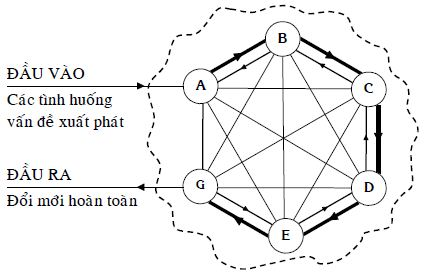
A, B, C, D, E, G Sáu giai đoạn đã nêu ở trong văn bản
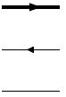 Hướng và tác động chủ đạo, đồng thời là hướng chỉ quá trình diễn tiến theo thời gian
Tác động ngược với tác động chủ đạo nhằm kiểm tra, đánh giá, điều chỉnh những giai đoạn đã qua (quan hệ phản hồi)
Mối liên kết giữa các hệ dưới được biểu diễn dưới dạng chung và sẽ được cụ thể hóa khi giải bài toán cụ thể. Mối liên kết này có thể là tác động một chiều, hai chiều hoặc không có. Các mối liên kết này cũng có thể tạo ra các quan hệ phản hồi nhằm mục đích điều khiển tốt quá trình thực hiện sáng tạo và đổi mới
Như vậy công việc – toàn bộ quá trình thực hiện sáng tạo và đổi mới được chia nhỏ thành sáu công việc – giai đoạn liên quan chặt chẽ với nhau.
Mỗi hệ dưới (giai đoạn) lại bao gồm các hệ dưới nữa liên kết với nhau và cứ như thế đi theo các thang bậc hệ thống xuống dưới cho đến các yếu tố liên kết với nhau. Để tiện trình bày, người viết gọi hệ dưới là hệ dưới bậc một; hệ dưới nữa là hệ dưới bậc hai; hệ dưới dưới nữa là hệ dưới bậc ba… cho đến các yếu tố là phần của hệ thống không chia nhỏ thêm nữa trong cách xem xét nhất định của người giải bài toán.
Phiên dịch sang ngôn ngữ “công việc”, điều này có nghĩa, công việc – toàn bộ quá trình thực hiện sáng tạo và đổi mới bao gồm sáu công việc – giai đoạn, mỗi công việc – giai đoạn lại bao gồm các công việc nhỏ hơn; mỗi công việc nhỏ hơn lại bao gồm các công việc nhỏ hơn nữa… cứ như thế đến công việc nhỏ bậc “n” và cuối cùng là các công việc – yếu tố. Mỗi công việc – yếu tố được hiểu là công việc đơn giản đến mức có thể được hoàn thành một cách “trọn gói” dễ dàng, mà không cần chia thành các công việc nhỏ hơn mới thực hiện được.
Bây giờ chúng ta thử đi vào từng hệ dưới (giai đoạn) và các mối liên kết được mô tả trên Hình 291. Nói cách khác, chúng ta chuyển sang xem xét hệ dưới nữa (mức hệ dưới bậc hai).
Thực hiện giai đoạn A, người giải cần phải làm nhiều công việc (hệ dưới bậc hai) như phát hiện, liệt kê, phát biểu tất cả các tình huống vấn đề xuất phát mà người giải có nhu cầu phải giải quyết hoặc quan tâm. Các tình huống vấn đề xuất phát này được xem là đầu vào của quá trình thực hiện sáng tạo và đổi mới nói chung, giai đoạn A nói riêng. Căn cứ vào mục đích của người giải; khuynh hướng phát triển của các hệ thống có trong các tình huống vấn đề xuất phát và các hệ thống liên quan; các nguồn dự trữ có trong tay;… người giải cần xác định đúng một hoặc vài tình huống vấn đề xuất phát ưu tiên. Ưu tiên ở đây có thể là bắt đầu giải quyết trước; giải quyết dứt điểm, hoàn thành xong mới chuyển sang giải quyết các tình huống vấn đề xuất phát khác; giải quyết bằng cách đầu tư tập trung các nguồn lực vượt trội so với giải quyết các tình huống vấn đề xuất phát khác;…
Tình huống vấn đề xuất phát ưu tiên cuối cùng được chọn ở giai đoạn A (đầu ra của giai đoạn A) trở thành đầu vào của giai đoạn B. Giai đoạn B có nhiệm vụ xác định bài toán cụ thể đúng cần giải. Để đạt được kết quả này, người giải phải thực hiện các công việc như thay đổi cách tiếp cận tình huống vấn đề xuất phát ưu tiên (nhìn nó theo những chiều xem xét khác nhau), rút ra phổ các bài toán cụ thể có thể có; phát biểu các bài toán cụ thể này; so sánh, phân tích, đánh giá chúng; ra quyết định, bài toán cụ thể nào trong số chúng là bài toán cụ thể đúng cần giải (đầu ra của giai đoạn B).
Bài toán cụ thể đúng cần giải trở thành đầu vào của giai đoạn C. Trên cơ sở tiếp thu và hiểu lời phát biểu bài toán cụ thể đúng cần giải, đặc biệt, nội dung của mục đích cụ thể thực sự cần đạt, người giải cần xác định mình phải đi tìm những thông tin (kể cả tri thức) gì? ở đâu? bằng cách nào? Về mặt nguyên tắc, việc tìm thông tin phải được tiến hành trên phạm vi toàn thế giới. Điều này cần thiết, vì người giải không nên tự mình làm mọi cái từ đầu, mà nên kế thừa những gì trên thế giới đã có. Quá trình tìm thông tin này có thể dẫn đến một số kết quả sau:
1. Đã có sẵn giải pháp cho bài toán cụ thể đúng cần giải và giải pháp không có (hoặc đã hết) hiệu lực độc quyền. Người giải có thể sử dụng giải pháp có sẵn ngay bằng cách mua thành phẩm (giải pháp đã được vật chất hóa) hoặc tự mình chế tạo ra thành phẩm. Người giải chuyển ngay sang giai đoạn G (Áp dụng thành phẩm vào thực tế).
2. Đã có sẵn giải pháp cho bài toán cụ thể đúng cần giải và giải pháp còn đang có hiệu lực độc quyền. Người giải có thể thỏa thuận (hiểu theo nghĩa rộng: xin phép, trả thù lao…) với tác giả của giải pháp và cộng tác với tác giả để biến giải pháp thành thành phẩm (Giai đoạn E: Phát triển ý tưởng (giải pháp) thành thành phẩm) và thực hiện tiếp giai đoạn G.
3. Không có sẵn giải pháp cho bài toán cụ thể đúng cần giải, nhưng các thông tin có sẵn (kể cả kiến thức) tìm được đủ để giải bài toán cụ thể đúng cần giải. Người giải có thể chuyển sang giai đoạn D: Tìm ý tưởng (giải pháp) giải bài toán.
4. Không có sẵn giải pháp cho bài toán cụ thể đúng cần giải. Các thông tin tìm được chưa đủ để giải bài toán cụ thể đúng cần giải. Lúc này, người giải cần thực hiện các nghiên cứu như thăm dò, khảo sát, điều tra, làm các thí nghiệm… để có đủ các thông tin cần thiết.
Trong giai đoạn D: Tìm ý tưởng (giải pháp) giải bài toán cụ thể đúng cần giải, người giải cần xử lý các thông tin có trong lời phát biểu bài toán và các thông tin tìm được như là đầu ra của giai đoạn C. Công việc xử lý thông tin (quá trình suy luận) giúp người giải có những thông tin mới với những nghĩa, giá trị sâu sắc hơn những thông tin chưa qua xử lý. Điều này dẫn đến những gợi ý, giúp người giải chuyển sang công việc phát các ý tưởng giải bài toán cụ thể đúng cần giải. Tiếp theo, người giải cần phải phân tích, đánh giá các ý tưởng thu được để chọn ra ý tưởng tối ưu, phác thảo sơ đồ nguyên tắc thực hiện ý tưởng đó (giải pháp) và tiếp nhận nó như là ý tưởng (giải pháp) giải bài toán cụ thể đúng cần giải.
Giai đoạn E có nhiệm vụ phát triển ý tưởng (giải pháp) giải bài toán cụ thể đúng cần giải, thu được ở giai đoạn D (đầu ra của giai đoạn D), thành thành phẩm. Nói cách khác, giai đoạn E là giai đoạn vật chất hóa (biến thành hiện thực) ý tưởng (giải pháp) thu được ở giai đoạn D. Ở giai đoạn này, người giải cần làm những công việc như tạo ra các bản vẽ thiết kế, thi công chi tiết; sử dụng nguồn nhân lực, trang thiết bị, nguyên vật liệu… chế tạo thử; cho chạy thử, dùng thử thành phẩm ở quy mô phòng thí nghiệm; sau đó, ở quy mô lớn hơn để cuối cùng có được thành phẩm thực sự (hiểu theo nghĩa hàng hóa, sản phẩm thương mại sẵn sàng dùng trong thực tế, tung ra thị trường).
Thành phẩm cho trước (kết quả của giai đoạn E) là đầu vào của giai đoạn G: Áp dụng thành phẩm vào thực tế. Thực tế được hiểu là tất cả mọi người, mọi nơi tiềm ẩn cần sử dụng thành phẩm cho trước. Chỉ khi thực tế đó tiếp nhận thành phẩm cho trước một cách đầy đủ, ổn định và bền vững, bài toán cụ thể đúng cần giải và tương ứng với nó – tình huống vấn đề xuất phát ưu tiên mới được coi là giải quyết xong (đổi mới hoàn toàn). Lúc này các ích lợi của thành phẩm mới thể hiện ở quy mô thực tế, mới có sự phát triển hiện thực bền vững và nâng cao chất lượng cuộc sống của mỗi người, của toàn xã hội, trước hết, của chính những người cần tiếp nhận thành phẩm cho trước. Ở giai đoạn G, người giải phải thực hiện các công việc liên quan đến cung cấp thông tin về thành phẩm cho những người cần tiếp nhận; giúp họ thấy, quả thật họ có nhu cầu về thành phẩm đó; thuyết phục họ về các ích lợi của thành phẩm; tạo điều kiện để họ tiếp nhận thành phẩm dễ dàng, thuận tiện (giá thành của thành phẩm, hướng dẫn cách sử dụng, các dịch vụ hậu mãi… phù hợp với người tiếp nhận).
Trên đây, người viết vừa trình bày trường hợp suôn sẻ, đơn giản nhất của quá trình thực hiện sáng tạo và đổi mới, được mô tả bằng đường mũi tên đậm nối các giai đoạn từ A đến G trên Hình 291. Thực tế cho thấy, các trường hợp khác của quá trình thực hiện sáng tạo và đổi mới phức tạp hơn rất nhiều. Dưới đây là một số trường hợp:
1. Người giải có thể phải quay trở lại các giai đoạn trước, kiểm tra hoặc điều chỉnh các công việc đã làm (xem đường mũi tên nhạt, ngược chiều với đường mũi tên đậm trên Hình 291) để bảo đảm rằng, mình không để xảy ra những sai sót và đang đi đúng đường.
2. Trong mỗi giai đoạn có thể nảy sinh các bài toán (gọi là các bài toán dưới), mà giải được chúng, người giải mới có thể đi tiếp. Để giải chúng, về mặt nguyên tắc, người giải lại phải cần áp dụng quá trình sáu giai đoạn từ A đến G cho từng bài toán dưới. Tuy nhiên, tùy bài toán dưới cụ thể, số lượng các giai đoạn và nội dung từng giai đoạn có thể rút gọn lại.
3. Có những trường hợp, quá trình thực hiện sáng tạo và đổi mới đang diễn ra một cách lý tưởng thì không tiến hành tiếp tục được vì thiếu những điều kiện, tiền đề. Người giải bắt buộc phải chuyển từ “giải đúng” sang “giải thiếu hoặc thừa”, hoặc phải quay trở lại các giai đoạn trước để chọn cách tiếp cận mới.
4. Nếu thực tế không phải là thực tế đơn điệu, đồng nhất mà là thực tế đa dạng, thì sự phức tạp của quá trình thực hiện sáng tạo và đổi mới còn thể hiện ở chỗ: Người giải nhiều khi phải tiến hành song song một khối lượng rất lớn các công việc khác nhau cho phù hợp với sự đa dạng của thực tế.
5. Quá trình sáng tạo và đổi mới đòi hỏi phải có thời gian thực hiện. Thời gian này có khi kéo dài nhiều năm. Trong khi đó, mọi sự vật luôn vận động chứ không đứng yên. Do vậy, có những trường hợp, sự thay đổi của các hệ liên quan, thực tế, môi trường (hiểu theo nghĩa rộng) trong khoảng thời gian này có thể có những ảnh hưởng mạnh mẽ lên toàn bộ quá trình thực hiện sáng tạo và đổi mới nói chung, từng giai đoạn, từng bước của từng giai đoạn nói riêng. Sự ảnh hưởng này có thể là, các thay đổi mới xuất hiện tạo thuận lợi cho quá trình thực hiện sáng tạo và đổi mới; gây khó khăn, cản trở; làm cho những gì đạt được trở nên lạc hậu; phải quay trở lại các giai đoạn trước để thay đổi cách tiếp cận cho phù hợp;… Điều này đòi hỏi người thực hiện quá trình sáng tạo và đổi mới phải luôn chú ý đến các thông tin về các thay đổi nói trên, dự báo trước các thay đổi, tưởng tượng các ảnh hưởng có thể xảy ra để khai thác các mặt mạnh và hạn chế các mặt yếu của các thay đổi.
6. Với tư cách là các hệ dưới, các giai đoạn A, B, C, D, E, G còn phụ thuộc, ảnh hưởng, bổ sung, hỗ trợ cho nhau. Điều này được mô tả bằng các mối liên kết dưới dạng các đường nối giữa chúng (xem Hình 291). Nhìn theo quan điểm hệ thống, tập hợp các mối liên kết (liên kết các hệ dưới lại với nhau) và các hệ dưới tạo nên những tính chất mới không thể quy về thành những tính chất của các mối liên kết, các hệ dưới đứng riêng rẽ. Nếu người thực hiện quá trình (hệ thống) sáng tạo và đổi mới chỉ chú ý các hệ dưới mà bỏ qua các mối liên kết, thì người đó cũng sẽ bỏ qua một loạt các tính chất mới có thể có, do vậy, có thể đưa ra các quyết định sai lầm. Để tăng cường hiệu quả quá trình thực hiện sáng tạo và đổi mới, người giải cần phải tính đến và sử dụng tốt các mối liên kết này. Ví dụ, đang ở giai đoạn A, mối liên kết A – G có thể giúp người giải xác định tình huống vấn đề xuất phát ưu tiên chính xác hơn; đang ở giai đoạn D, mối liên kết D – G có thể giúp người giải phát các ý tưởng và ra quyết định dùng đúng ý tưởng dễ được thực tế tiếp nhận hơn theo tinh thần “phải đưa ra thực tế cái thực tế cần, chứ không phải đưa ra thực tế cái người giải có”;…
Nếu tiếp tục đi xuống theo thang bậc hệ thống là hệ dưới dưới nữa (hệ dưới bậc ba), chúng ta sẽ chi tiết hóa các công việc ở mức hệ dưới nữa (bậc hai) được nêu ra ở trên thành các công việc nhỏ hơn và cụ thể hơn nữa. Tiếp tục như vậy, về mặt nguyên tắc, chúng ta sẽ đi đến tận cùng là các công việc – yếu tố.
Tóm lại, nhìn theo quan điểm hệ thống, công việc ở mức hệ thống được phân thành các công việc ở mức hệ dưới; mỗi công việc ở mức hệ dưới phân thành các công việc ở mức hệ dưới bậc hai; mỗi công việc ở mức hệ dưới bậc hai phân thành các công việc ở mức hệ dưới bậc ba; cứ như thế cho đến khi mỗi công việc ở mức hệ dưới bậc “n” phân thành các công việc ở mức yếu tố. Bạn đọc thử tưởng tượng nếu phải xuống dưới “n” bậc đến tận các yếu tố thì số lượng các yếu tố, nói cách khác, số lượng các công việc – yếu tố sẽ lớn như thế nào.
Tình hình còn trở nên phức tạp hơn nhiều nữa, khi chúng ta còn phải tính đến số lượng và vai trò của các mối liên kết giữa các yếu tố. Số lượng các mối liên kết có thể có của N yếu tố là N (N – 1), tức là cỡ bình phương số lượng các yếu tố và các mối liên kết có thể làm các yếu tố được liên kết thay đổi về chất (có những tính chất mới).
Để đơn giản và thuận tiện trong trình bày, tiếp theo đây, người viết giả sử rằng trong hệ thống (quá trình) thực hiện sáng tạo và đổi mới, các mối liên kết các yếu tố được xem là đã biết. Điều này có nghĩa, chúng ta chỉ cần tập trung tìm cách thực hiện các công việc – yếu tố. Liên kết chúng lại theo cách đã biết, chúng ta sẽ có toàn bộ quá trình (hệ thống) thực hiện sáng tạo và đổi mới.
Theo định nghĩa, cách thức, quá trình thực hiện một công việc nào đó với hiệu quả cao là phương pháp. Trong ý nghĩa này, các phương pháp trong lĩnh vực sáng tạo và đổi mới (PPLSTVĐM) có thể phân loại theo các công việc, tương ứng với các thang bậc hệ thống: Mức yếu tố, mức hệ dưới bậc “n”, mức hệ dưới bậc “n 1”,…, cho đến mức hệ thống (công việc thực hiện toàn bộ quá trình sáng tạo và đổi mới).
Về mặt hình thức, mỗi công việc đều được đặt tên nhưng tên công việc chưa phản ánh tính hệ thống, tức là chưa trả lời câu hỏi “Công việc đó hoàn thành để đạt kết quả gì?”. Do vậy, nội dung mỗi công việc hiểu theo nghĩa hệ thống cần hiểu là: Kết quả của công việc cho trước (tính hệ thống) là tính chất của tập hợp các công việc nhỏ hơn (hệ dưới hoặc các yếu tố) liên kết với nhau, mà kết quả đó không thể quy về thành tính chất của các hệ dưới, yếu tố, các mối liên kết giữa chúng đứng riêng rẽ.
Cách thực hiện công việc cho trước là phương pháp cho trước tương ứng với công việc đó. Phương pháp cũng cần được xem xét như là hệ thống, tương tự như đối với công việc. Phương pháp chỉ ra cách thức, quá trình thực hiện công việc. Nói rõ hơn, phương pháp hướng dẫn người thực hiện tuần tự theo thời gian dùng kiểu sắp xếp – tổ chức, loại phương tiện – công cụ làm những cái gì, làm chúng như thế nào để cuối cùng đạt kết quả (tính hệ thống) của công việc cho trước với hiệu quả cao.
Chúng ta bắt đầu từ công việc đơn giản, nhỏ nhất: Công việc – yếu tố. Phương pháp thực hiện nó gọi là phương pháp dùng cho công việc – yếu tố, hay gọi tắt là phương pháp mức yếu tố. Tương tự như vậy, phương pháp thực hiện công việc ở mức hệ dưới bậc “n” gọi là phương pháp dùng cho công việc ở mức hệ dưới bậc “n”, hay gọi tắt là phương pháp mức hệ dưới “n”. Chúng ta sẽ tiếp tục sử dụng cách đặt tên vừa trình bày cho các mức khác.
Về mặt nguyên tắc, một phương pháp mức hệ dưới “n” cụ thể gồm một số hữu hạn nhất định các phương pháp mức yếu tố liên kết với nhau; một phương pháp mức hệ dưới “n-1” cụ thể gồm một số hữu hạn nhất định các phương pháp mức hệ dưới “n” liên kết với nhau và cứ như thế… theo chiều đi lên phía trên của thang bậc hệ thống. Để dễ hình dung, người viết minh họa ý vừa nêu bằng hiện tượng tương tự xảy ra trong cấu tạo vật chất. Nếu chúng ta coi các proton, điện tử là các yếu tố (để đơn giản trong trình bày, người viết bỏ qua các hạt khác), thì một nguyên tử (của một nguyên tố hóa học) gồm một số hữu hạn nhất định các proton, điện tử liên kết với nhau. Phân tử (của đơn chất, hợp chất) lại gồm một số hữu hạn nhất định các nguyên tử (giống hoặc khác nhau) liên kết với nhau và cứ như thế… tạo nên thế giới vật chất.
- Trên đây người viết trình bày một số nét chính về cấu trúc hệ thống mà PPLSTVĐM cần có. Thực tế lịch sử xây dựng PPLSTVĐM đã không diễn ra như lịch sử tiến hóa cấu tạo của vật chất và rất tiếc, PPLSTVĐM ngày hôm nay vẫn chưa có được cấu trúc hệ thống tối ưu cần có. Dưới đây người viết nhấn mạnh một số điểm cần lưu ý để bạn đọc ít, nhiều không cảm thấy “rối” khi tiếp xúc với tình trạng “trăm hoa đua nở” trong lĩnh vực PPLSTVĐM.
Tình trạng “trăm hoa đua nở” trong lĩnh vực PPLSTVĐM được hiểu là số lượng các phương pháp sáng tạo hiện có trên thế giới không phải là ít và khá đa dạng. Mỗi phương pháp sáng tạo đều có ích lợi nhất định. Tuy nhiên, so với các khoa học đã phát triển tốt hơn, đặc biệt các khoa học chính xác, những người nghiên cứu đưa ra các phương pháp sáng tạo trong lĩnh vực PPLSTVĐM vẫn còn làm việc theo kiểu mạnh ai nấy làm; người này không can thiệp sâu vào công việc nghiên cứu của người khác; trên mảnh đất của mình, mỗi người canh tác theo kiểu của mình; mà chưa có những thống nhất cần thiết về mặt học thuật. Điều này thể hiện khá rõ trên các mặt như:
- Tên các khái niệm (các thuật ngữ) được dùng như nhau nhưng các tác giả khác nhau lại định nghĩa những khái niệm đó khác nhau. Ngược lại, có những khái niệm giống nhau về nội dung nhưng lại được đặt những cái tên (thuật ngữ) khác nhau.
Có những khái niệm được một số tác giả dùng rộng rãi trong các bài viết, quyển sách của mình về sáng tạo và đổi mới, nhưng chính các tác giả đó lại không định nghĩa chúng mà để mặc cho người đọc tự hiểu. Trong số các khái niệm này, có những khái niệm lại không được các tác giả dùng nhất quán về nội dung. Do nội dung khái niệm thay đổi theo văn cảnh cụ thể, người đọc cũng phải cố gắng thay đổi cách hiểu để đoán được ý của tác giả cho mỗi văn cảnh cụ thể.
Tình hình vừa mô tả xảy ra với hầu hết, nếu như không nói, với tất cả các khái niệm cơ bản của lĩnh vực PPLSTVĐM như sáng tạo, đổi mới, vấn đề (bài toán), phương pháp, tư duy, tư duy sáng tạo, tính ì tâm lý…
Tình hình có phần tương tự cũng xảy ra với việc xây dựng và đưa ra các khái niệm mới: Có những tác giả khá thoải mái trong việc sáng chế ra các thuật ngữ mới, trong khi vẫn có thể dùng các thuật ngữ cũ tương đương; các khái niệm mới không được định nghĩa rõ ràng dẫn đến khó hiểu, khó bàn luận; các khái niệm mới dẫn đến những hạn chế không vượt qua được;…
Còn chính các phương pháp sáng tạo được các tác giả khác nhau đưa ra trải thành phổ rộng về các mặt như:
- Thang bậc hệ thống: Có phương pháp sáng tạo dành cho công việc rất nhỏ cỡ công việc yếu tố dưới dạng lời khuyên, lời đề nghị thực hiện thao tác nào đó, có những phương pháp sáng tạo ở các mức hệ dưới khác nhau và cũng có những phương pháp sáng tạo nhắm đến toàn bộ quá trình thực hiện công việc sáng tạo và đổi mới.
- Mức độ cụ thể – khái quát: Có những phương pháp sáng tạo với mức độ cụ thể cao và cũng có những phương pháp sáng tạo với các mức độ khái quát khác nhau, đến những phương pháp có mức độ khái quát cao cỡ triết học.
- Các cơ sở, dựa trên đó các phương pháp sáng tạo được xây dựng: Các cơ sở này trải dài từ sự quan sát chủ quan phiến diện của cá nhân đến các hiện tượng tâm lý mang tính quy luật được các nhà nghiên cứu phát hiện ra, các cách tiếp cận hỗn hợp, liên ngành, các quy luật triết học. Thậm chí, có những phương pháp được xây dựng trên cơ sở là các món ăn (dinh dưỡng), các bài thể dục, yôga, thiền… giúp ích cho sáng tạo
- Ngoài ra, có những phương pháp sáng tạo chưa thực sự đáp ứng các yêu cầu phương pháp, hiểu theo nghĩa, các bước trong phương pháp mới chỉ nêu người sử dụng phương pháp cần đạt được cái gì mà không chỉ ra cần làm những gì và làm chúng như thế nào thì mới đạt được cái cần đạt.
Có nhiều nguyên nhân tạo nên tình trạng “trăm hoa đua nở” của các phương pháp sáng tạo.
Dưới đây là một số trong những nguyên nhân ấy:
- Khác với các đối tượng có thể được phát hiện trực tiếp bằng các giác quan hoặc gián tiếp qua các thiết bị, máy móc, được nhiều khoa học nghiên cứu và biến đổi, tư duy sáng tạo là đối tượng “tàng hình”. Các ý nghĩ thuộc ý thức của cá nhân nào đó, ngoài người đó ra, không ai khác có thể phát hiện ra chúng nhờ năm giác quan hoặc các phương tiện nghiên cứu hiện có. Tình hình còn phức tạp hơn nhiều nếu tính thêm rằng, tiềm thức và vô thức cũng tham gia quá trình suy nghĩ nhưng chính chủ nhân của chúng không hề hay biết. Tư duy sáng tạo là đối tượng khó nghiên cứu và mang tính chủ quan cá nhân cao.
- Sáng tạo có mặt ở bất kỳ lĩnh vực hoạt động chuyên môn nào của con người. Thời kỳ đầu, các phương pháp sáng tạo được đưa ra bởi một số nhà chuyên môn quan tâm thêm việc làm sao tăng năng suất, hiệu quả quá trình sáng tạo, làm sao chia sẻ những hiểu biết của mình về quá trình tư duy sáng tạo với những người khác. Họ xây dựng các phương pháp sáng tạo như những nhà nghiệp dư, vì chuyên môn của họ mới là nghề chính và lúc đó, sáng tạo còn chưa trở thành đối tượng để khoa học nghiên cứu. Những phương pháp sáng tạo loại này được xây dựng chủ yếu dựa trên các kinh nghiệm tư duy sáng tạo của cá nhân, chịu ảnh hưởng của các đặc thù chuyên môn cho trước và có phạm vi áp dụng hẹp.
Cho đến hiện nay, khi sáng tạo học nói chung, PPLSTVĐM nói riêng đã đạt được những thành tựu đáng kể, vẫn có những nhà nghiệp dư làm công việc xây dựng các phương pháp sáng tạo theo ý mình, mà thiếu sự kế thừa. Do vậy, trong lĩnh vực PPLSTVĐM có không ít các trường hợp “phát hiện lại châu Mỹ”, “sáng chế lại cái bánh xe” và “nhà phát minh”, “nhà sáng chế” vẫn tiếp tục nghĩ mình là người đầu tiên. Có lẽ, họ không có điều kiện hoặc không có ý định cập nhật các thông tin, kiến thức cần thiết về sáng tạo học và PPLSTVĐM hiện có trên thế giới.
- Sáng tạo có mặt ở bất kỳ lĩnh vực hoạt động nào của con người và các lĩnh vực hoạt động của con người thì rất đa dạng. Tuy vậy, có một điểm chung cho mọi lĩnh vực hoạt động. Đấy là, các thành phẩm sáng tạo có được đều do con người biến thành hiện thực từ những ý tưởng sáng tạo xuất hiện trong đầu của con người. Vậy tại sao không nghiên cứu hoạt động của bộ óc để xem quá trình nảy sinh các ý tưởng sáng tạo diễn ra như thế nào, trên cơ sở đó xây dựng các phương pháp sáng tạo? Từ đây, bắt đầu các nghiên cứu về tâm, sinh lý của bộ não.
Quả thật, thực tế cho thấy, các hiện tượng tâm lý, các quy luật tâm lý được tâm lý học sáng tạo tìm ra, đã giúp nhiều nhà nghiên cứu xây dựng các phương pháp sáng tạo. Tuy nhiên, tâm lý học lại chưa phải là khoa học chính xác và mới chỉ tập trung vào khía cạnh chủ quan của sáng tạo (xem mục nhỏ 4.2.2 Sáng tạo của con người: Khía cạnh chủ quan và khía cạnh khách quan của quyển một). Các quy luật tâm lý học là các quy luật định tính, có tính chất thống kê. Mặt khác, nhiều hiện tượng tâm lý (ví dụ, tiềm thức, vô thức, linh tính, trí tưởng tượng, xúc cảm…) còn chưa được hiểu tường tận, lại càng chưa điều khiển được một cách tin cậy. Do vậy, các phương pháp sáng tạo được xây dựng dựa trên các quy luật tâm lý, không cho các kết quả ổn định đối với những người sử dụng khác nhau, chủ yếu, dùng để góp phần khắc phục tính ì tâm lý, tăng năng suất phát ý tưởng khi giải các bài toán có mức khó thấp.
- Mặt khác, đã xuất hiện cộng đồng các nhà nghiên cứu sáng tạo học và PPLSTVĐM như là nghề chính, tuy khởi đầu họ được đào tạo theo các chuyên môn khác nhau. Những nhà nghiên cứu này bổ sung các cách tiếp cận mới cho cách tiếp cận tâm lý học sáng tạo (kể cả cách tiếp cận kết hợp con người và máy tính) và cũng tham gia xây dựng các phương pháp sáng tạo. Họ trở thành những người tiên phong về một số mặt nào đó.
Gần đây, tham gia vào cộng đồng các nhà nghiên cứu sáng tạo học và PPLSTVĐM có những người được đào tạo bài bản hơn. Đấy là những người được một số cơ sở đào tạo trên thế giới đào tạo thành cử nhân (BS, BA), thạc sỹ (MS, MA, MBA) chuyên về lĩnh vực sáng tạo và đổi mới (Creativity and Innovation). Tuy vậy, số lượng những người này còn ít và chương trình đào tạo họ cũng chưa được thống nhất.
Có thể nói, do thiếu ngôn ngữ và những khởi đầu khoa học chung, sinh hoạt học thuật của cộng đồng các nhà nghiên cứu sáng tạo học và PPLSTVĐM chưa đạt được trình độ giao thoa, thông suốt và phản biện rộng rãi như các môn khoa học truyền thống. Tình hình đóng khung, cục bộ trong phạm vi của từng trường phái sáng tạo học thuộc lĩnh vực PPLSTVĐM là khá phổ biến. Điều này có thể hiểu được, vì trong sáng tạo học còn chưa có lý thuyết chung về sáng tạo, được thực tế kiểm chứng và được cộng đồng các nhà nghiên cứu cùng sử dụng.
Như chúng ta đã biết, sáng tạo là đối tượng phức tạp, có nhiều khía cạnh, nhiều mức, có mặt ở nhiều lĩnh vực. Thiếu lý thuyết chung trong sáng tạo học dẫn đến sự thiếu thống nhất: Mỗi nhà nghiên cứu với cách tiếp cận hiện nay của mình, một mặt, tự tin đưa ra phương pháp sáng tạo của mình, mặt khác, không đủ lý lẽ, chứng cứ, dữ liệu bác bỏ cách tiếp cận khác, bởi vì hình như cách tiếp cận khác cũng đúng. Từ đây dẫn đến tình trạng: Các phương pháp sáng tạo được xây dựng dựa trên các cách tiếp cận khác nhau cùng tồn tại song song.
- Một nguyên nhân đáng kể nữa góp phần dẫn đến tình trạng “trăm hoa đua nở” trong sáng tạo học và PPLSTVĐM là các phương pháp sáng tạo còn được rất, rất ít người (kể cả những người thường xuyên làm công tác liên quan đến sáng tạo và đổi mới) biết đến và số người thực sự sử dụng các phương pháp sáng tạo trong đời sống, công việc của mình lại còn ít hơn nhiều nữa.
Ở đây có nhiều lý do:
Khá nhiều người tin rằng, không thể có các phương pháp sáng tạo, các phương pháp sáng tạo không tồn tại, nên họ không chủ động tìm các thông tin về chúng. Nếu họ tình cờ bắt gặp các thông tin về các phương pháp sáng tạo thì họ bỏ qua, cho rằng không có giá trị, ích lợi gì đối với họ, thậm chí cho rằng đấy là sự bịp bợm.
Với những người tin rằng có thể sáng tạo nhờ phương pháp và các phương pháp sáng tạo có nhiều ích lợi, một số trong họ chủ động tìm các thông tin về các phương pháp sáng tạo. Họ có thể đọc các bài báo trong các tạp chí hoặc sách về sáng tạo, nhưng từ đọc sách, báo đến hiểu và sử dụng các phương pháp sáng tạo trình bày trong sách, báo là khoảng cách lớn, không phải ai cũng vượt qua được.
Cho đến nay, phần lớn các sách về các phương pháp sáng tạo xuất bản bằng tiếng Anh và tiếng Nga. Số lượng sách dịch sang các thứ tiếng khác không phải là nhiều, lại càng không phải các sách về các loại phương pháp sáng tạo khác nhau được dịch đầy đủ. Do vậy, số lượng người thực sự đọc sách về các phương pháp sáng tạo ít hơn nhiều số lượng người muốn đọc và những ai đọc được lại đọc phiến diện, do vậy, không có được bức tranh chung về các loại phương pháp sáng tạo khác nhau hiện có.
Để có các kỹ năng cần thiết sử dụng các phương pháp sáng tạo, người ta cần tham dự các lớp dạy các phương pháp sáng tạo và giải rất nhiều bài tập. Đến đây, số lượng người lại giảm đi nữa vì lý do đơn giản: Học phí một người phải trả cho một ngày học các phương pháp sáng tạo, giá trung bình trên thế giới, là vài trăm đôla Mỹ (xem Phụ lục ở cuối quyển sáu này). Điều này có thể hiểu được, vì tuyệt đại đa số trường học các cấp trên thế giới không dạy các phương pháp sáng tạo như các môn học truyền thống: Toán, lý, hóa… Các lớp dạy sáng tạo đầu tiên và cho đến nay, chủ yếu, do các công ty chuyên làm công tác huấn luyện (training) thực hiện.
Với những người có học lớp dạy các phương pháp sáng tạo, thì họ chỉ học một hoặc vài phương pháp nào đó do tác giả hoặc các học trò của tác giả những phương pháp đó dạy, chứ không phải tất cả các phương pháp sáng tạo. Họ không có thông tin, kiến thức, điều kiện so sánh tất cả các phương pháp sáng tạo khác nhau hiện có, đặc biệt, các ích lợi khác nhau thể hiện trong thực tế khi họ sử dụng chúng.
Chính vì vậy, các phương pháp sáng tạo khác nhau cho đến nay vẫn cùng tồn tại và dường như đứng ngang hàng với nhau về mặt giá trị. Không ít người hiện nay vẫn nghĩ rằng các phương pháp sáng tạo tuy khác nhau nhưng chúng tương đương nhau, nên chỉ cần học một hoặc vài phương pháp sáng tạo là đủ. Thậm chí, có người tiếp xúc với một phương pháp sáng tạo đã vội cho rằng đấy là tất cả PPLSTVĐM. Hoặc, sử dụng một phương pháp sáng tạo đem lại kết quả tốt trong một số trường hợp, người sử dụng cũng vội cho rằng phương pháp sáng tạo đó dùng ở đâu cũng cho kết quả tốt. Trong khi đó, mỗi phương pháp sáng tạo cũng có phạm vi áp dụng của nó. Tóm lại, các phương pháp sáng tạo còn chưa được thực tế (những người tiềm ẩn cần sử dụng tất cả các phương pháp sáng tạo này) dùng, đánh giá, sàng lọc để xếp mỗi phương pháp sáng tạo vào đúng vị trí của nó.
Tình trạng “trăm hoa đua nở” cũng đã từng xảy ra đối với những khoa học đã phát triển khi còn ở giai đoạn “trẻ”. Vì, lúc này chưa có ngôn ngữ (các khái niệm rõ ràng) chung giữa các nhà nghiên cứu; chưa tìm ra được (chưa quy nạp được từ những kết quả nghiên cứu cụ thể, lẻ tẻ thành) các quy luật cơ bản mang tính khái quát nhất định, tạo nên lý thuyết chung, có khả năng giúp người sử dụng đi từ cái chung đến cái riêng (diễn dịch); các kết quả nghiên cứu chưa được thử thách, chọn lọc thông qua thực nghiệm, thực tế… Tình trạng “trăm hoa đua nở” của khoa học nào đó cho thấy sự tồn tại các mâu thuẫn, gặp trên con đường phát triển đi lên của khoa học đó. Nếu các mâu thuẫn này sớm được giải quyết, khoa học đó sẽ chuyển sang giai đoạn phát triển mới về chất, từ giai đoạn “trẻ” sang giai đoạn “trưởng thành” theo đúng nghĩa của nó. Sáng tạo học và PPLSTVĐM cũng không phải là ngoại lệ.
Khi cộng đồng các nhà nghiên cứu sáng tạo học và PPLSTVĐM càng chuyên nghiệp, giao lưu về mặt học thuật với nhau nhiều hơn, phản biện nhau tốt hơn, các kết quả nghiên cứu càng mang tính khoa học và đầy đủ hơn. Khi các phương pháp sáng tạo được dạy, học và sử dụng đại trà, các ích lợi của các phương pháp sáng tạo khác nhau sẽ thể hiện trên thực tế một cách rõ ràng. Thực tế với chức năng là tiêu chuẩn của chân lý sẽ ảnh hưởng ngược lại các phương pháp sáng tạo: Loại bỏ các phương pháp sáng tạo yếu, giữ lại các phương pháp sáng tạo mạnh, đặt ra các yêu cầu mới đối với các phương pháp sáng tạo. Lúc đó, các nhà nghiên cứu không chỉ đưa ra được các phương pháp sáng tạo mới có năng suất và hiệu quả cao hơn các phương pháp cũ, mà nhiều vấn đề về lôgích nội tại phát triển sáng tạo học và PPLSTVĐM sẽ dần được giải quyết, trong đó có vấn đề “trăm hoa đua nở”: Đặt các bông hoa vào đúng chỗ của chúng.
- Nội dung trình bày trong quyển sách này (quyển sáu) về các phương pháp sáng tạo và vị trí so sánh của quyển sáu trong bộ sách “Sáng tạo và đổi mới” gồm mười quyển được mô tả trên Hình 292.
Giống với những quyển sách khác, quyển sáu này cũng có trình bày TRIZ: Trình bày tổng quan các phương pháp sáng tạo của TRIZ (xem mục 13.2 tiếp sau đây). Bạn đọc có thể đặt câu hỏi: “Tại sao lại là trình bày tổng quan, mà không phải là trình bày chi tiết các phương pháp sáng tạo của TRIZ?”
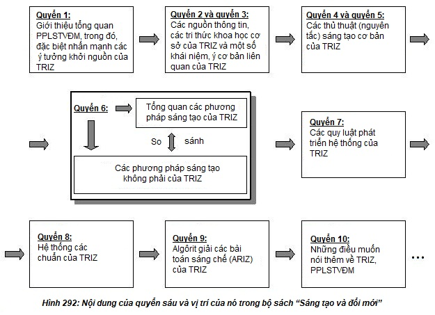
Nếu hiểu theo nghĩa chung, rộng nhất như đã trình bày ở phần đầu của mục này, thì phương pháp bao gồm phổ cực rộng các cách thức, quá trình thực hiện các loại công việc khác nhau (công việc được hiểu theo nghĩa rộng nhất). Trong ý nghĩa này, TRIZ có rất nhiều phương pháp sáng tạo. Một số trong chúng đã được trình bày rải rác trong các quyển một, hai, ba và được trình bày tập trung trong quyển bốn và năm. Các phương pháp sáng tạo khác của TRIZ sẽ được trình bày tập trung trong các quyển sách sau. Như vậy, xét riêng về số trang, người viết không thể trình bày tất cả các phương pháp sáng tạo còn lại của TRIZ một cách chi tiết chỉ trong một phần của quyển sáu này, do vậy, người viết phải trình bày dưới dạng tổng quan.
Mục đích chính của quyển sáu này là trình bày các phương pháp sáng tạo không phải của TRIZ (xem mục 13.3) ở mức độ chi tiết nhất có thể được, cho phép bởi các điều kiện và khả năng hiểu biết của người viết.
Các phương pháp sáng tạo không phải của TRIZ giúp bạn đọc:
- Thấy được bức tranh toàn cảnh chung về tình trạng “trăm hoa đua nở” của PPLSTVĐM.
- Có cơ sở ban đầu về thông tin, kiến thức để bạn tìm đọc, học sâu hơn những phương pháp sáng tạo mà bạn quan tâm.
- Có thể sử dụng một số phương pháp sáng tạo trình bày trong mục 13.3 mà bạn thấy thích hợp với cuộc sống, công việc của mình.
- So sánh những phương pháp sáng tạo không phải của TRIZ với các phương pháp sáng tạo của TRIZ.
Về những điều vừa nêu, người viết sẽ cố gắng giúp bạn đọc bằng những gợi ý suy nghĩ, những nhận xét, đánh giá, mà bạn đọc có thể coi chúng là những ý kiến để tham khảo, chứ không phải người viết muốn áp đặt cho bạn đọc.
13.2 TỔNG QUAN CÁC PHƯƠNG PHÁP SÁNG TẠO CỦA TRIZ
13.2.1 Một số nhận xét chung về các phương pháp sáng tạo của TRIZ
G.S. Altshuller là người khởi xướng và cũng là người trực tiếp xây dựng, phát triển “Lý thuyết giải các bài toán sáng chế” (TRIZ) trong suốt thời gian dài từ 1946 đến khi mất vào năm 1998. Trong khoảng thời gian đó, có một số nghiên cứu ông cộng tác với một số học trò cùng thực hiện với tư cách là người lãnh đạo nhóm nghiên cứu. Do vậy, các ý tưởng nền tảng (xem mục 4.2 Cách tiếp cận TRIZ: Các ý tưởng cơ bản của quyển một) được duy trì và phát triển một cách nhất quán về mặt lôgích xuyên suốt TRIZ; các khái niệm (thuật ngữ) truyền thống của lĩnh vực sáng tạo và đổi mới, cũng như các khái niệm (thuật ngữ) mới bổ sung bởi TRIZ được định nghĩa và sử dụng một cách thống nhất trong toàn bộ văn bản của TRIZ. Nội dung của những khái niệm này được người viết đã và sẽ trình bày khá rõ ràng trong các quyển sách của bộ sách “Sáng tạo và đổi mới”.
- TRIZ là một lý thuyết chứ không phải là một trong số các phương pháp sáng tạo của PPLSTVĐM. Trong tư cách là một lý thuyết, đối tượng nghiên cứu và tác động biến đổi của TRIZ là sự phát triển của các hệ thống. Có thể nói, TRIZ là lý thuyết tương đối khái quát về sự phát triển của các hệ thống. Nó không ở mức khái quát cao nhất như triết học biện chứng và cũng không riêng về sự phát triển của một lĩnh vực cụ thể nào.
TRIZ có nhiệm vụ đi tìm các quy luật phát triển của các hệ thống dựa trên các thông tin về sự phát triển, kể cả những phát triển không có con người tham gia. Cho đến nay, TRIZ tìm ra chín quy luật phát triển hệ thống (xem quyển bảy của bộ sách), chủ yếu, dựa trên sự phân tích, khái quát các thông tin phát triển trong các lĩnh vực sáng chế kỹ thuật (thông tin patent), tiến hóa và phát triển của các hệ thống sinh học, lịch sử phát triển khoa học – công nghệ (xem Hình 31 cùng văn bản kèm theo trong mục 4.3 Các nguồn thông tin và tri thức của TRIZ của quyển một).
Tồn tại những yêu cầu chung đối với bất kỳ lý thuyết nào. Trong số đó có những yêu cầu như: Một lý thuyết phải có khả năng giải thích một cách thống nhất và nhất quán về mặt lôgích các hiện tượng (hiểu theo nghĩa rộng) đã biết; khả năng dự báo các hiện tượng (hiểu theo nghĩa rộng) có thể nảy sinh; khả năng trở thành cơ sở để từ đó xây dựng các phương pháp giúp cải tạo, biến đổi các hệ thống liên quan đến lý thuyết cho trước một cách tin cậy. Quá trình xây dựng TRIZ và áp dụng TRIZ vào thực tế đã cho thấy, TRIZ thỏa mãn các yêu cầu nói trên.
TRIZ, một mặt, được xây dựng dựa trên các ý tưởng, các cách tiếp cận tiên tiến của các khoa học có phạm vi áp dụng rộng như triết học biện chứng, khoa học hệ thống, lý thuyết thông tin… (xem Hình 31 cùng văn bản kèm theo trong mục 4.3 Các nguồn thông tin và tri thức của TRIZ của quyển một). Đây là những khoa học rất giúp ích cho việc nghiên cứu khía cạnh khách quan của sáng tạo là sự phát triển và xây dựng các phương pháp sáng tạo có nội dung phản ánh sự phát triển khách quan đó. Mặt khác, khía cạnh chủ quan của sáng tạo (các quy luật, hiện tượng tâm lý của con người) cũng được tính đến trong TRIZ để các phương pháp sáng tạo của TRIZ trở nên thân thiện với người sử dụng. Các phương pháp sáng tạo của TRIZ có thể dạy và học một cách có hiệu quả cho đông đảo mọi người như các môn học truyền thống.
Việc G.S. Altshuller phát hiện ra khía cạnh khách quan của sáng tạo và tìm được chín quy luật phát triển của các hệ thống đã bổ sung một cách cơ bản vào việc hiểu và hoàn thiện (nâng cao năng suất, hiệu quả, về lâu dài tiến tới điều khiển) tư duy sáng tạo của con người.
Mọi người đều biết, trong các lĩnh vực khoa học như vật lý, hóa học, sinh học,… nhà nghiên cứu nào muốn thu được các kết quả tốt, người đó phải nắm vững và suy nghĩ theo các quy luật khách quan của lĩnh vực đó, chứ không chỉ dựa đơn thuần vào các hiện tượng tâm lý như trí nhớ, liên tưởng, linh tính… tham gia vào, liên quan đến quá trình suy nghĩ, xảy ra trong bộ óc của mình.
Tương tự như vậy, có câu hỏi đặt ra cho lĩnh vực sáng tạo: “Người sáng tạo muốn thu được các kết quả sáng tạo tốt thì phải suy nghĩ theo các quy luật nào?” Câu trả lời của TRIZ là: “Người sáng tạo phải suy nghĩ theo các quy luật khách quan phát triển hệ thống”.
Các quy luật khách quan phát triển hệ thống giúp xây dựng cơ chế định hướng trong tư duy sáng tạo, nhờ vậy giúp khắc phục nhược điểm cơ bản nhất của phương pháp thử và sai (xem mục nhỏ 2.3.2 Các nhược điểm của phương pháp thử và sai của quyển một). Từ đây, TRIZ cũng chỉ ra rằng, các phương pháp sáng tạo phải được xây dựng sao cho, chúng có thể giúp những người sử dụng định hướng suy nghĩ theo các quy luật phát triển.
Ngoài ra, các phương pháp sáng tạo còn phải giúp những người sử dụng vượt qua những khó khăn cụ thể gặp trên con đường đi theo các quy luật phát triển khách quan. Những khó khăn đó chính là các mâu thuẫn có trong hệ thống cần cải tiến. Các mâu thuẫn này cần được người sáng tạo giải quyết để đạt được trạng thái thống nhất mới (hệ thống có trong bài toán chuyển sang bậc phát triển cao hơn). Các phương pháp sáng tạo của TRIZ đã được xây dựng nhằm đáp ứng các yêu cầu vừa nêu.
- Để xây dựng các phương pháp sáng tạo có tính ứng dụng cao, G.S. Altshuller còn cụ thể hóa, chi tiết hóa nhiều khái niệm. Ví dụ, các bài toán có thể có năm mức khó tương ứng với năm mức sáng tạo; quá trình thực hiện sáng tạo và đổi mới có sáu giai đoạn và mỗi giai đoạn này có thể ở các mức khó khác nhau; mỗi giai đoạn lại gồm nhiều bước cần làm; mỗi bước lại gồm những công việc nhất định;…
Việc cụ thể hóa, chi tiết hóa này cho thấy, TRIZ cần phải xây dựng hệ thống các phương pháp sáng tạo đa dạng (chứ không phải một hoặc vài phương pháp) để phù hợp với các loại công việc đa dạng khi tiến hành sáng tạo và đổi mới trên thực tế. Với tinh thần này, TRIZ đã xây dựng được các phương pháp sáng tạo (bộ các công cụ sáng tạo) rất phong phú (xem mục 4.4 Sơ đồ khối TRIZ cùng văn bản kèm theo của quyển một).
- Có các phương pháp là tốt, nhưng để sử dụng các phương pháp đủ thành thạo, người học cần được luyện tập thực hành các phương pháp. Nói cách khác, cần có sự hướng dẫn của người dạy, các ví dụ minh họa cách thức thực hiện các công việc theo phương pháp, các bài tập rèn luyện người học sử dụng phương pháp.
Trên thực tế, TRIZ đã sưu tầm được rất nhiều các ví dụ (bao gồm cả các case study) và bài tập như vậy. Các ví dụ, bài tập cùng sự hướng dẫn của người dạy TRIZ giúp người học có được những kỹ năng thực hành cần thiết sử dụng các phương pháp sáng tạo của TRIZ. Cùng với việc sử dụng các phương pháp nhiều lần, các kỹ năng thực hành dần trở thành tác phong suy nghĩ và hành động của người sử dụng khi gặp các bài toán trong cuộc sống, công việc hàng ngày. Việc sử dụng các phương pháp thường xuyên còn giúp hình thành các kinh nghiệm thực tế, nhiều khi, không có gì thay thế được. Những kinh nghiệm thực tế này có thể trở thành một loại linh tính, trực giác cao cấp (xem mục nhỏ 6.4.8 Linh tính của quyển hai).
- Nếu hiểu phương pháp theo nghĩa chung, rộng nhất (xem mục 13.1 Mở đầu của quyển sách này) thì các phương pháp sáng tạo của TRIZ có rất nhiều.
Trong mục 13.2 Tổng quan các phương pháp sáng tạo của TRIZ này, người viết sẽ trình bày các phương pháp sáng tạo của TRIZ dưới dạng tổng quan thành các loại sau:
- Nhóm các phương pháp sáng tạo của TRIZ là (tổ hợp) các thủ thuật (nguyên tắc) sáng tạo cơ bản (xem mục nhỏ 13.2.2 tiếp theo).
- Nhóm các phương pháp sáng tạo của TRIZ được xây dựng dựa trên các cơ sở khác (xem mục nhỏ 13.2.3).
- Algôrit giải các bài toán sáng chế (ARIZ) (xem mục nhỏ 13.2.4).
Việc phân loại các phương pháp sáng tạo của TRIZ thành ba loại chỉ mang tính quy ước, giúp người viết dễ trình bày và giúp bạn đọc dễ nhớ, chứ không phải là phân chia khái niệm một cách lôgích (xem mục nhỏ 8.3.4 Phân chia khái niệm của quyển ba). Do vậy, bạn đọc không nên hiểu sự phân loại nói trên một cách cố định, cứng nhắc.
13.2.2 Các phương pháp sáng tạo của TRIZ dựa trên các thủ thuật
- Các thủ thuật (nguyên tắc) sáng tạo cơ bản của TRIZ đã được trình bày khá chi tiết trong hai quyển bốn và năm. Trong đó, quyển bốn tập trung trình bày việc hiểu nội dung các thủ thuật và quyển năm – các cách sử dụng các thủ thuật.
Theo định nghĩa phương pháp chung, rộng nhất, các thủ thuật cũng là các phương pháp (trong TRIZ, đôi khi còn gọi là các phương pháp nhỏ). Các phương pháp – thủ thuật có thể sử dụng để thực hiện các công việc được liệt kê trong “Danh sách các ích lợi (công dụng) của hệ thống các thủ thuật (nguyên tắc) sáng tạo cơ bản” (xem mục 12.4 Tổng kết hệ thống các thủ thuật (nguyên tắc) sáng tạo cơ bản của quyển năm).
Trong mục nhỏ này, người viết trình bày “các phương pháp lớn hơn”, là các phương pháp được xây dựng dựa trên không phải một mà là tổ hợp các thủ thuật. Điều này là cần thiết vì thực tế cho thấy: Tổ hợp của các thủ thuật được sử dụng thường xuyên hơn từng thủ thuật đứng riêng rẻ; các sản phẩm sáng tạo phát triển từ đơn giản đến phức tạp ứng với việc sử dụng từ các thủ thuật đơn lẻ đến tổ hợp (số lượng) các thủ thuật càng ngày, càng lớn.
Tổ hợp có thể là tổ hợp 2, 3,…, n các thủ thuật với “n” tùy ý. Bạn đọc có thể đặt câu hỏi: “Hiện nay tổng số các thủ thuật là 40, vậy tại sao “n” lại tùy ý?” Điều này xảy ra vì có những thủ thuật được lặp đi lặp lại nhiều lần trong một tổ hợp. Điều này còn có nghĩa, ngay cả trong các tổ hợp n < 40 vẫn có thể có các thủ thuật lặp lại vài lần.
Để giải thích rõ hơn, người viết lại lấy sự tương tự của hóa học minh họa. Có hơn 100 nguyên tố hóa học nhưng có những “hợp chất hóa học” có số lượng nguyên tử lớn hơn 100 rất nhiều lần liên kết với nhau. Trong số các nguyên tử đó có nhiều nguyên tử của cùng một nguyên tố. Đồng thời, trong những hợp chất tạo thành từ vài nguyên tố cũng có thể có nguyên tố nào đó đóng góp từ hai nguyên tử trở lên (ví dụ, H2O, H2SO4,…).
Từ đây, bạn đọc có thể thấy, số lượng các phương pháp tổ hợp các thủ thuật là rất lớn, nếu như không nói – vô cùng lớn. Cũng tương tự như hóa học, nếu như một hợp chất hóa học thường dùng cho một loại công việc nào đó (ví dụ, H2O dùng để uống, góp phần duy trì sự sống…) thì một phương pháp tổ hợp các thủ thuật có thể dùng để giải một loại bài toán nào đó.
Trong TRIZ, các phương pháp là tổ hợp các thủ thuật chia thành hai loại: Các phương pháp phản ánh lôgích nhu cầu – hệ thống và các phương pháp được xây dựng dựa trên phân tích Vêpôl phản ánh các quy luật phát triển hệ thống. Dưới đây chúng ta sẽ xem xét lần lượt hai loại phương pháp này.
- I) Các phương pháp tổ hợp các thủ thuật phản ánh lôgích nhu cầu – hệ thống (gọi tắt là các phương pháp lôgích nhu cầu – hệ thống)
Như chúng ta đã biết, có thể dùng các thủ thuật để lý giải một cách lôgích các giải pháp sáng tạo đã có và lôgích này chính là lôgích nhu cầu – hệ thống (xem mục 12.1 Lý giải một cách lôgích các giải pháp sáng tạo đã có của quyển năm).
Nói cách khác, giải pháp sáng tạo đã có được phân tích thành (tổ hợp) các thủ thuật phản ánh nhu cầu của người giải bài toán + các thủ thuật phản ánh tính hệ thống của hệ cải tiến + các thủ thuật dùng để phát các ý tưởng tạo nên tính hệ thống của hệ cải tiến + các thủ thuật dùng để phát các ý tưởng giải pháp (xem Hình 217 và văn bản kèm theo trong mục nhỏ 12.1.3 Diễn giải lôgích nhu cầu – hệ thống của quyển năm). Tổ hợp các thủ thuật tìm ra nói trên được sắp xếp theo thứ tự thời gian phản ánh các giai đoạn của quá trình suy nghĩ đi từ hệ tiền thân đến hệ cải tiến.
Công việc đi tìm tổ hợp các thủ thuật và sắp xếp chúng theo thời gian được tiến hành nhờ “Chương trình lý giải lôgích” (xem Hình 219 và văn bản kèm theo trong mục nhỏ 12.1.4 Chương trình phát hiện các thủ thuật và làm tái hiện quá trình suy nghĩ lôgích để có được hệ thống cải tiến cho trước của quyển năm).
Nếu như giải pháp sáng tạo đã có là giải pháp cụ thể (ví dụ, để trứng không bị vỡ thì không nên để tất cả trứng vào một giỏ mà nên để vào nhiều giỏ khác nhau), thì tổ hợp các thủ thuật phản ánh giải pháp sáng tạo cụ thể đó lại mang tính khái quát cao (ví dụ, 1) 11. Nguyên tắc dự phòng; 2) 1. Nguyên tắc phân nhỏ). Lúc này, tổ hợp hai thủ thuật:
1. 11. Nguyên tắc dự phòng
2. 1. Nguyên tắc phân nhỏ
Không chỉ dùng riêng cho đối tượng cụ thể là trứng mà có thể dùng cho các đối tượng, hoàn cảnh, điều kiện, tình huống… tương tự. Ví dụ:
- Để dễ cô lập và chữa cháy, rừng được trồng thành các ô, giữa các ô là các đường ngăn lửa (lĩnh vực lâm nghiệp).
- Để dễ cô lập và bịt không cho nước chảy vào thêm làm chìm, tàu thủy được thiết kế thành nhiều khoang. Mỗi khoang có những cánh cửa có thể đóng kín để không cho nước chảy vào các khoang khác (lĩnh vực giao thông đường thủy).
- Để tránh kẻ thù oanh kích dẫn đến thiệt hại lớn, các kho (lương thực, nhiên liệu…) trong chiến tranh thường được bố trí phân tán thành nhiều địa điểm xa nhau (lĩnh vực quân sự).
- Để tăng độ tin cậy khi đọc, tránh lầm lẫn do nhảy từ dòng này sang dòng khác, thay vì in mỗi dòng rất dài, các bài in trong báo được xếp thành các cột (lĩnh vực báo chí).
- Ruột xe trên Hình 157 cùng văn bản kèm theo trong mục nhỏ 11.3.1 Nguyên tắc phân nhỏ của quyển bốn.
……………
Điều này có nghĩa, tổ hợp các thủ thuật thu được nhờ lý giải lôgích giải pháp sáng tạo cụ thể đã có còn có thể trở thành phương pháp tổ hợp các thủ thuật, dùng để giải các bài toán tương tự với bài toán của giải pháp sáng tạo cụ thể đã có.
Từ đây, chúng ta có thể đưa ra chương trình (phương pháp) xây dựng các phương pháp tổ hợp các thủ thuật phản ánh lôgích nhu cầu – hệ thống (các phương pháp lôgích nhu cầu – hệ thống):
13.2.2.1 CHƯƠNG TRÌNH XÂY DỰNG CÁC PHƯƠNG PHÁP LÔGÍCH NHU CẦU – HỆ THỐNG
| Bước 1 : | Chọn giải pháp sáng tạo cụ thể đã có |
| Bước 2 : | Sử dụng “Chương trình lý giải lôgích” (xem Hình 219 và văn bản kèm theo trong mục nhỏ 12.1.4 Chương trình phát hiện các thủ thuật và làm tái hiện quá trình suy nghĩ lôgích để có được hệ thống cải tiến cho trước của quyển năm) đi tìm tổ hợp các thủ thuật có trong giải pháp sáng tạo cụ thể đã có, được chọn ở Bước 1. |
| Bước 3 : | Kiểm tra tổ hợp các thủ thuật thu được ở Bước 2 xem có phù hợp với các giải pháp sáng tạo đã có khác, tương tự với giải pháp sáng tạo cụ thể đã có được chọn hay không? Hoặc/và áp dụng tổ hợp các thủ thuật thu được ở Bước 2 để giải bài toán tương tự chưa có lời giải, xem việc áp dụng và lời giải thu được có hài lòng không? |
| Bước 4 : | Kết luận về việc đưa tổ hợp các thủ thuật thu được ở Bước 2 vào “Danh sách các phương pháp lôgích nhu cầu – hệ thống” của mình |
Hình 293: Chương trình xây dựng các phương pháp lôgích nhu cầu – hệ thống
Như vậy, bằng chương trình vừa trình bày, mỗi bạn đọc, tùy theo công việc hoặc sự quan tâm của mình, tự mình có thể lập “ngân hàng” các phương pháp lôgích nhu cầu – hệ thống thiết thực nhất cho mình.
Dưới đây là một ví dụ áp dụng “Chương trình xây dựng các phương pháp lôgích nhu cầu – hệ thống”.
Bước 1 : Chọn giải pháp sáng tạo đã có là que chỉ – bút (xem Hình 294)
Đây là que chỉ có thể rút ra, rút vào thay đổi độ dài, khi rút ngắn nhất có độ dài bằng cây bút và được sử dụng như là cây bút viết.
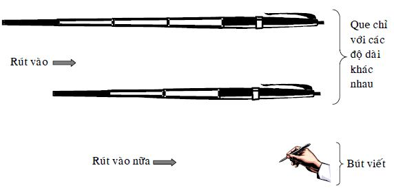
Hình 294: Que chỉ – bút
Bước 2 : Sử dụng “Chương trình lý giải lôgích” (xem Hình 219 và văn bản kèm theo trong mục nhỏ 12.1.4 Chương trình phát hiện các thủ thuật và làm tái hiện quá trình suy nghĩ lôgích để có được hệ thống cải tiến cho trước của quyển năm) đi tìm tổ hợp các thủ thuật có trong “que chỉ – bút”.
1. Hệ tiền thân gốc được chọn là “que chỉ nguyên khối” (xem Hình 295).
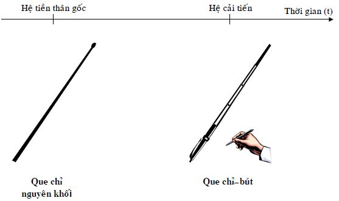
Hình 295: Lý giải một cách lôgích giải pháp sáng tạo cụ thể đã có: Que chỉ – bút
2. So sánh “que chỉ – bút” với “que chỉ nguyên khối”.
3. Liệt kê tính mới của “que chỉ – bút” và tìm tính ích lợi của tính mới đó:
- Que chỉ – bút gồm các ống ngắn lồng vào nhau.
- Các ống này có thể rút ra, rút vào bằng tay của người sử dụng tùy theo yêu cầu công việc.
- Khi rút ra cực đại, các ống không bị tuột vì có móc ở hai đầu ống giữ nhau.
- Que chỉ có thêm ruột bút bi.
- Que chỉ – bút có thêm chức năng: Viết.
- Que chỉ – bút trở nên gọn, không chiếm nhiều chỗ, an toàn khi cần mang đi mang lại.
- Nếu chỉ là que chỉ, xét về thời gian làm việc, thì que chỉ được dùng ít hơn là que chỉ – bút.
4. Trả lời các câu hỏi: “Nhờ thủ thuật (hoặc tổ hợp các thủ thuật) nào, người giải có thể biến đổi “que chỉ nguyên khối” thành “que chỉ – bút” có tính mới, tính ích lợi như liệt kê ở trên?”
Trả lời:
Bạn đọc có thể nhận thấy đấy là các thủ thuật sau:
1. Nguyên tắc phân nhỏ.
7. Nguyên tắc chứa trong.
15. Nguyên tắc linh động.
25. Nguyên tắc tự phục vụ.
3. Nguyên tắc phẩm chất cục bộ.
5. Nguyên tắc kết hợp.
6. Nguyên tắc vạn năng.
11. Nguyên tắc dự phòng.
20. Nguyên tắc liên tục các tác động có ích.
5. Lặp lại từ 1 – đến 4 – để kiểm tra xem có tìm thêm được các thủ thuật nào khác không?
Trả lời:
Không tìm thêm được (các) thủ thuật nào khác.
6. Sắp xếp các thủ thuật được phát hiện ra theo lôgích nhu cầu – hệ thống rút gọn phản ánh quá trình suy nghĩ: Tính hệ thống – Ý tưởng tạo nên tính hệ thống – Ý tưởng giải pháp.
Chúng ta thu được tổ hợp 9 thủ thuật sắp xếp theo trình tự sau:
- Nguyên tắc dự phòng.
- Nguyên tắc linh động.
- Nguyên tắc phân nhỏ.
- Nguyên tắc chứa trong.
- Nguyên tắc phẩm chất cục bộ.
- Nguyên tắc tự phục vụ.
- Nguyên tắc liên tục các tác động có ích.
- Nguyên tắc vạn năng.
- Nguyên tắc kết hợp.
Bước 3 :
- Kiểm tra tổ hợp 9 thủ thuật vừa thu được xem có phù hợp với các giải pháp sáng tạo đã có khác, tương tự với que chỉ – bút hay không?
Trả lời: Ăngten, cần câu về cơ bản đã được cải tiến nhờ tổ hợp các thủ thuật này (có biến thể không lớn).
- Áp dụng tổ hợp 9 thủ thuật vừa thu được để giải bài toán tương tự chưa có lời giải có được không?
Trả lời: Ví dụ, đối tượng tương tự với “que chỉ nguyên khối” là “chổi quét mạng nhện”. Nếu áp dụng tổ hợp 9 thủ thuật nói trên, ta có thể thu được “Chổi quét mạng nhện – que lau nhà” (xem Hình 296).

Hình 296: Sử dụng tổ hợp các thủ thuật thu được từ ví dụ que chỉ – bút (xem Hình 295) để cải tiến chổi quét mạng nhện
Bước 4 :
Kết luận: Quyết định đưa phương pháp tổ hợp 9 thủ thuật nói trên vào “Danh sách các phương pháp lôgích nhu cầu – hệ thống” để dùng giải các bài toán tương tự (cải tiến các đối tượng tương tự) trong tương lai.
Đến đây, người viết muốn kể bạn đọc nghe câu chuyện nhỏ. Theo người viết nhớ lại, ý tưởng cải tiến “chổi quét mạng nhện” thành “chổi quét mạng nhện – que lau nhà” nhờ sử dụng tổ hợp các thủ thuật tìm ra từ ví dụ que chỉ – bút, được người viết đưa ra làm ví dụ và bắt đầu sử dụng trong các bài giảng trên lớp từ năm 1990. Đến năm 2004, trong lớp dạy cho các cán bộ, nhân viên công ty Vạn Phát Hưng (khóa 242), một học viên phát hiện sản phẩm “chổi quét mạng nhện – que lau nhà” đã xuất hiện trên thị trường và mua tặng người viết. Hiện nay, quà tặng đó được để tại Trung tâm (TSK) làm ví dụ minh họa bài học. Bạn đọc cũng sẽ rất thú vị khi tự mình đưa ra ý tưởng cải tiến, rồi sau một thời gian phát hiện ra dự báo đó trở thành hiện thực trong các sản phẩm cải tiến, được thương mại hóa.
Liên quan đến việc xây dựng các phương pháp là tổ hợp các thủ thuật sắp xếp theo lôgích nhu cầu–hệ thống, bạn đọc thử quay trở lại mục nhỏ 12.1.5 Một số thí dụ áp dụng “Chương trình lý giải lôgích” của quyển năm, xem các tổ hợp thu được trong các thí dụ đó có thể dùng được ở đâu; có thể đưa vào “Danh sách các phương pháp” của bạn không?
Người viết cũng muốn lưu ý, bạn đọc không nhất thiết dùng các phương pháp (các tổ hợp các thủ thuật sắp xếp theo lôgích nhu cầu – hệ thống) có trong “Danh sách các phương pháp” của bạn một cách cứng nhắc, mà bạn có thể tạo biến thể các tổ hợp này cho phù hợp với đối tượng cụ thể có trong bài toán cụ thể. Đấy cũng là sáng tạo.
- II) Các chuẩn
“Chuẩn” (tiếng Nga là Стандарт, dịch sang tiếng Anh là Standard, Standard Rule hoặc Standard Solution), là tên gọi phương pháp được xây dựng dựa trên phân tích chất – trường hay còn gọi phiên âm theo tiếng Nga là phân tích Vêpôl (tiếng Nga: Вепольный Анализ, dịch sang tiếng Anh: SuField Analysis) phản ánh các quy luật phát triển hệ thống.
Chuẩn ở đây không hiểu là tiêu chuẩn mà mỗi chuẩn là một lời giải chuẩn mực dành cho một loại bài toán tương ứng với chuẩn đó. Trong TRIZ hiện nay đã tìm ra 76 chuẩn. Chúng tạo thành hệ thống các chuẩn giúp người sử dụng chủ động đưa hệ cần cải tiến phát triển định hướng theo các quy luật phát triển hệ thống.
Dưới đây là một số đặc thù của các chuẩn:
- Mỗi chuẩn là một tổ hợp một số thủ thuật nhất định, trong đó thủ thuật 25. Nguyên tắc tự phục vụ được dùng dưới dạng các hiệu ứng khoa học, đặc biệt, các hiệu ứng vật lý, hóa học. Nói cách khác, mỗi chuẩn là sự liên kết một số các thủ thuật và hiệu ứng khoa học nhất định, theo cách nhất định, dùng để giải một loại bài toán mang tính chất chuyên môn nhất định. Trong ý nghĩa này, các chuẩn thường dùng để giải các loại bài toán thuộc các chuyên môn kỹ thuật khác nhau.
- Mỗi chuẩn được xây dựng nhằm giải quyết mâu thuẫn vật lý thường gặp trong loại bài toán tương ứng với chuẩn đó.
- Các chuẩn có mối liên hệ chặt chẽ với các quy luật phát triển hệ thống.
Phân tích chất – trường (Phân tích Vêpôl) và các chuẩn sẽ được trình bày đầy đủ và chi tiết trong quyển tám “Hệ thống các chuẩn dùng để giải các bài toán sáng tạo” của bộ sách “Sáng tạo và đổi mới”.
13.2.3 Các phương pháp sáng tạo của TRIZ dựa trên các cơ sở khác
- Trong mục nhỏ này, người viết trình bày các phương pháp sáng tạo được xây dựng không phải dựa trên cơ sở trực tiếp là các thủ thuật hoặc tổ hợp các thủ thuật. Một số của những phương pháp đó đã được trình bày trong các quyển một, hai và ba. Dưới đây, theo thứ tự thời gian đã trình bày, người viết liệt kê chúng ra để giúp bạn đọc nhớ lại:
- Phương pháp thực hiện công việc đánh giá đối tượng sáng tạo (xem “Chương trình đánh giá đối tượng cho trước là sáng tạo hay không” trong mục 1.2 Một số khái niệm cơ bản và các ý nghĩa của chúng của quyển một).
- Phương pháp thực hiện công việc phân chia toàn bộ quá trình sáng tạo và đổi mới thành sáu giai đoạn (xem mục 1.2 Một số khái niệm cơ bản và các ý nghĩa của chúng của quyển một; mục 6.2 Mô hình quá trình suy nghĩ giải quyết vấn đề và ra quyết định của quyển hai; Hình 291 và văn bản kèm theo trong mục 13.1 Mở đầu của quyển sáu này).
- Phương pháp thực hiện công việc phân loại và đánh giá các mức sáng tạo – các mức khó của bài toán (xem mục nhỏ 4.2.6 Các mức sáng tạo – các mức khó của bài toán của quyển một).
- Các phương pháp dưới dạng các lời khuyên cách thực hiện công việc khắc phục các loại tính ì tâm lý (xem mục 6.5 Tính ì tâm lý của quyển hai).
- Tổng quan các phương pháp giáo dục phát triển nhân cách sáng tạo (xem mục 7.5.2 Giáo dục phát triển nhân cách sáng tạo của quyển hai).
- Các câu hỏi kiểm tra liên quan đến thực hiện các công việc cần làm của người thu và người phát thông tin, vì tư duy của cá nhân chính là đối thoại, hỏi – đáp với chính mình: Mình vừa là người thu, vừa là người phát thông tin (xem mục nhỏ 8.6.3 Tư duy lôgích: Người thu và phát thông tin của quyển ba).
- Các phương pháp thực hiện công việc nhận dạng các loại mâu thuẫn hành chính, mâu thuẫn kỹ thuật và mâu thuẫn vật lý (xem mục nhỏ 9.4.2 TRIZ: Các loại mâu thuẫn trong giải quyết vấn đề và ra quyết định của quyển ba).
- Các phương pháp thực hiện công việc nhìn xa về mặt thời gian (quá khứ, hiện tại, tương lai), trông rộng về mặt thang bậc hệ thống, xem xét toàn diện như “Màn hình 9 hệ”; “Mặt phẳng hệ thống”; “Không gian hệ thống” (xem mục 10.2 Một số khái niệm cơ bản và những điều cần lưu ý về tư duy hệ thống của quyển ba).
- Các phương pháp dưới dạng các lời khuyên cách khắc phục tính ì hệ thống, ngăn ngừa làm giảm tác hại của tính ì hệ thống, kể cả chọn giải bài toán – mini và sử dụng toán tử KTG (xem mục nhỏ 10.3.2 Một số điểm cần lưu ý về tính ì hệ thống của quyển ba).
- Phương pháp giúp thực hiện công việc phân tích, đánh giá để ra quyết định tốt (xem mục nhỏ 10.5.1 Tiêu chuẩn của quyết định tốt: Nhìn theo quan điểm hệ thống phát triển bền vững của quyển ba).
- Phương pháp “Danh sách các câu hỏi kiểm tra để sử dụng tư duy hệ thống” (xem mục nhỏ 10.5.2 Sự cần thiết và các ích lợi của việc sử dụng tư duy hệ thống trong giải quyết vấn đề và ra quyết định của quyển ba).
- Những phương pháp khác còn chưa được trình bày là:
- Phương pháp mô hình hóa (bài toán) bằng những người tý hon (tiếng Nga: Моделирование с Помощью Маленьких Человечков hoặc Моделирование “Маленькими Человечками”, viết tắt là ММЧ; dịch sang tiếng Anh: Problem Modelling with Smart Little People, viết tắt là PMSLP).
Phương pháp mô hình hóa (bài toán) bằng những người tý hon (viết tắt là phương pháp MBN) sẽ được trình bày ở cuối mục nhỏ này.
- Các quy luật phát triển hệ thống (sẽ được trình bày trong quyển bảy) thực hiện các công việc liên quan đến định hướng chiến lược sự phát triển của hệ thống cần cải tiến.
- Các phương pháp khác thực hiện các công việc cụ thể của các bước có trong từng giai đoạn của quá trình sáng tạo và đổi mới như các công việc phát biểu bài toán – mini; xác định đôi yếu tố xung đột; phát biểu mô hình bài toán; xác định vùng hành động và thời gian hành động; phát biểu kết quả lý tưởng cuối cùng – 1 (KLC – 1), KLC – 1 tăng cường, KLC – 1 giới hạn, KLC – 2, …
Các phương pháp này sẽ được trình bày chi tiết và đầy đủ trong quyển chín của bộ sách “Sáng tạo và đổi mới”.
- PHƯƠNG PHÁP MÔ HÌNH HÓA (BÀI TOÁN) BẰNG NHỮNG NGƯỜI TÝ HON
Trong phương pháp Synectics, tác giả W. Gordon có đưa ra bốn phép tương tự (xem 13.3.4.1 Phương pháp Synectics của quyển sáu này). Trong bốn phép tương tự có tương tự cá nhân (Personal Analogy), yêu cầu người giải tưởng tượng mình là đối tượng có trong bài toán (nhập thân) để từ góc độ đó tìm các ý tưởng giải bài toán.
Phép tương tự cá nhân có nhiều ưu điểm. Ví dụ, cách suy nghĩ giải bài toán thông thường là cách người giải xem xét từ ngoài vào bên trong hệ thống có trong bài toán, còn sử dụng phép tương tự cá nhân, người giải phải xem xét từ bên trong hệ thống. Khi thay đổi cách xem xét như vậy, người giải có thể phát hiện ra những nghĩa và giá trị mới có ích lợi (những ý tưởng sáng tạo).
Mặt khác, đối với các bài toán có đối tượng không phải là người, khi người giải nhập thân vào đối tượng đó, có nghĩa, đối tượng đó có những ưu việt của con người như có các giác quan, tư duy, chân, tay hành động. Do vậy, việc đưa ra các khả năng giải bài toán sẽ dễ dàng, linh động và phong phú hơn so với việc coi đối tượng có trong bài toán chỉ là vật vô tri, vô giác.
Đối với các bài toán, ở đó, đối tượng người giải cần nhập thân là người, phép tương tự cá nhân vẫn đem lại ích lợi. Người giải bây giờ cần phải đổi vai mình thành vai của người khác, có vậy mới hiểu các nhu cầu và hành động của người khác để có các quyết định phù hợp. Ví dụ, nếu người giải là người bán hàng cần tưởng tượng mình làm người mua hàng; cha mẹ tưởng tượng mình là con cái; thầy cô tưởng tượng mình là học sinh hoặc ngược lại…
Tuy nhiên, phép tương tự cá nhân trở nên khó áp dụng đối với những bài toán, ở đó có những yêu cầu đối với đối tượng mà người giải khi nhập thân khó tưởng tượng và thực hiện nổi.
Ví dụ, đối tượng có trong bài toán là khúc gỗ được cưa thành các tấm ván rồi các tấm ván được dùng vào các công việc khác nhau. Người giải bài toán chắc chắn sẽ lúng túng và không biết làm những gì, làm như thế nào để tưởng tượng mình bị cưa thành nhiều mảnh cơ thể, rồi từng mảnh lại vẫn sống, hoạt động một cách độc lập, bình thường như một con người.
Để khắc phục các nhược điểm của phép tương tự cá nhân có trong phương pháp Synectics, G.S. Altshuller đề nghị biểu diễn đối tượng có trong bài toán mà người giải cần nhập thân thành tập hợp đông đảo những người tý hon với đầy đủ các ưu việt của con người lý tưởng. Lúc này, người giải đóng vai trò người tý hon chỉ huy, lãnh đạo, điều khiển những người tý hon khác. Từ đó, những người tý hon phát các ý tưởng giải bài toán và những ý tưởng này, cuối cùng, được “phiên dịch” thành những ý tưởng của những người bình thường.
Quay trở lại ví dụ về khúc gỗ vừa nêu. Khúc gỗ là tập hợp những người tý hon chứ không phải một người. Do vậy, cưa khúc gỗ thành các tấm ván sẽ tương tự như phân tập hợp nói trên thành các nhóm những người tý hon. Tuy bị “cưa”, nhưng mỗi nhóm người tý hon vẫn sống và hoạt động được một cách độc lập, bình thường với đầy đủ các ưu việt của con người, hơn thế nữa, với đầy đủ các ưu việt của tập thể (hệ thống) các con người.
Các điểm cần lưu ý về những người tý hon:
1. Những người tý hon là những người lý tưởng: thông minh, có kiến thức rộng, giàu xúc cảm đẹp, mình vì mọi người, tinh thần kỷ luật cao, khéo léo, nhanh nhạy và có nhiều khả năng kỳ diệu như chịu nóng, lạnh, axít…
2. Người giải là người tý hon chỉ huy (quản lý) cần trải qua các trạng thái, quá trình có trong bài toán như những người tý hon khác để hiểu những khó khăn mà những người tý hon gặp phải; quan sát những người tý hon khác làm việc và lắng nghe họ; giải thích cho họ hiểu mục đích đề ra cần đạt; đưa ra các mệnh lệnh để tổ chức lại và điều khiển những người tý hon khác nhằm mục đích giải bài toán. Tóm lại, đây cũng là người chỉ huy (quản lý) lý tưởng.
3. Người tý hon chỉ huy (người giải) và những người tý hon khác tạo thành một đội làm việc với nhau rất ăn ý, mỗi người vì mọi người, mọi người vì mỗi người nhằm đạt mục đích nêu ra trong bài toán.
Có thể dùng phương pháp MBN một cách độc lập để giải các bài toán. Tuy nhiên, sẽ mạnh hơn nếu người giải dùng phương pháp MBN như là một bước của ARIZ (xem quyển chín).
Ngoài ra, phương pháp MBN còn có thể được dùng một cách độc lập để luyện tập phát triển trí tưởng tượng sáng tạo.
Dưới đây là “Chương trình giải bài toán bằng phương pháp MBN” (xem Hình 297), nếu bạn đọc muốn dùng phương pháp MBN một cách độc lập để giải bài toán.
13.2.3.1 CHƯƠNG TRÌNH GIẢI BÀI TOÁN BẰNG PHƯƠNG PHÁP MBN
I. TIẾP THU THÔNG TIN
- Các mức độ hiểu
- Chú ý các hiện tượng tâm lý, đặc biệt tính ì tâm lý có thể ảnh hưởng đến việc hiểu bài toán (BT)
- Hiểu ⇔ Vẽ hình
- Bài toán chọn giải đầu tiên là BT – mini
II. ĐỀ RA MỤC ĐÍCH CẦN ĐẠT
- Dựa trên việc hiểu BT và khuynh hướng phát triển.
- Đề ra mục đích thực sự cần đạt mà không nghĩ cách thực hiện mục đích
III. BIỂU DIỄN NHỮNG NGƯỜI TÝ HON Ở TRẠNG THÁI BÀI TOÁN
- Chọn đối tượng có trong bài toán để biểu diễn thành những người tý hon (có thể chọn vài đối tượng, tùy theo BT cụ thể). Có thể vẽ nhiều hình, thay đổi kích thước, số lượng những người tý hon. Có thể vẽ những người tý hon có các hình dạng khác nhau ứng với các chức năng khác nhau.
- Sắp xếp những người tý hon “làm việc” phản ánh nội dung của BT.
- Cho những người tý hon cảm nhận và hiểu các khó khăn, xung đột và mục đích cần đạt khi giải BT.
IV. PHÁT CÁC Ý TƯỞNG BẰNG NGÔN NGỮ CỦA NHỮNG NGƯỜI TÝ HON.
- Cho những người tý hon suy nghĩ và hành động nhằm mục đích cần đạt
- Phát biểu các ý tưởng thu được bằng ngôn ngữ của những người tý hon, ghi lại ngay, tuyệt đối không phê phán, chỉ trích.
- Nếu ở giai đoạn III chọn vài đối tượng biểu diễn thành những loại người tý hon khác nhau thì có thể xem xét lần lượt từng đối tượng.
- Chỉ khi thấy đã phát hết các ý tưởng có thể có mới chuyển sang giai đoạn sau.
V. PHIÊN DỊCH CÁC Ý TƯỞNG THU ĐƯỢC TỪ NGÔN NGỮ CỦA NHỮNG NGƯỜI TÝ HON SANG NGÔN NGỮ THÔNG THƯỜNG CỦA NGƯỜI GIẢI BÀI TOÁN
VI. RA QUYẾT ĐỊNH
- Loại bỏ các ý tưởng không khả thi
- Phân tích, đánh giá và sắp xếp các ý tưởng khả thi theo thứ tự ưu tiên.
- Chú ý tuân theo “Tiêu chuẩn của quyết định tốt” (xem mục nhỏ 10.5.1 của quyển ba).
Trong suốt quá trình suy nghĩ cần lưu ý:
Hệ phải thay đổi ít nhất.
Sử dụng tốt các nguồn dự trữ có sẵn trong hệ, đặc biệt, các nguồn dự trữ trời cho không mất tiền.
Sử dụng tư duy hệ thống với không gian hệ thống, ít nhất, “màn hình 9 hệ” và hiệu ứng lan tỏa hệ thống.
Hình 297: Chương trình giải bài toán bằng phương pháp MBN
Bạn đọc so sánh chương trình này với “Chương trình rút gọn dùng để giải quyết vấn đề và ra quyết định” (xem mục nhỏ 12.3.2 của quyển năm) sẽ thấy các giai đoạn I, II, VI là như nhau.
Dưới đây là ví dụ minh họa việc sử dụng “Chương trình giải bài toán bằng phương pháp MBN”.
Bài toán:
“Dụng cụ định lượng chất lỏng có dạng cái bập bênh (xem Hình 298). Phần bên trái là phần đựng chất lỏng. Khi phần đựng được đổ đầy chất lỏng, dụng cụ định lượng nghiêng về bên trái và chất lỏng được đổ ra. Lúc này, phần bên trái trở nên nhẹ hơn và dụng cụ định lượng trở về vị trí ban đầu.
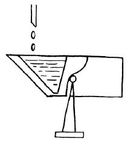
Hình 298: Dụng cụ định lượng chất lỏng
Rất tiếc, dụng cụ định lượng nói trên làm việc không thật chính xác: Chất lỏng không đổ ra hết. Bởi vì, chỉ cần một lượng chất lỏng nào đó được đổ ra, phần đựng của dụng cụ định lượng đã đủ nhẹ để chuyển động về vị trí ban đầu, giữ chất lỏng còn lại không cho chảy ra hết.
Hỏi làm thế nào?”
I. Tiếp thu thông tin:
Có nhiều loại chất lỏng khác nhau về khối lượng riêng, công dụng, độ nhớt… Vậy, lời giải của bài toán này phải dùng được cho các loại chất lỏng khác nhau, chứ không cho riêng một loại chất lỏng nào đó, như nước hoặc rượu chẳng hạn.
“Hỏi làm thế nào?” có nghĩa là phải đưa ra giải pháp để dụng cụ định lượng hoạt động chính xác: Đổ chất lỏng ra hết khỏi phần đựng, trừ lớp bám vào thành và đáy của phần đựng. Lớp bám này là như nhau cho mỗi lần đổ nên không ảnh hưởng đến độ chính xác.
- Đề ra mục đích cần đạt:
Phần đựng của dụng cụ định lượng chỉ bắt đầu chuyển động về vị trí ban đầu khi giọt chất lỏng cuối cùng rơi ra khỏi phần đựng. Ở đây, người giải có thể lợi dụng tính ì của cả chất lỏng lẫn của dụng cụ định lượng, nếu chúng có lợi.
- Biểu diễn những người tý hon ở trạng thái bài toán:
Dụng cụ định lượng chất lỏng có hai phần khác nhau với các chức năng khác nhau: Phần bên trái đựng chất lỏng; phần bên phải đóng vai trò đối trọng của cái bập bênh. Do vậy, hai phần được biểu diễn bằng hai loại người tý hon khác nhau (xem Hình 299a).
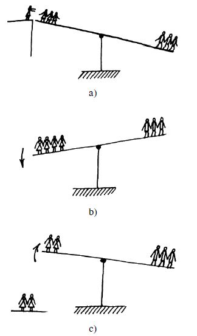
Hình 299: Những người tý hon ở trạng thái bài toán
Khi những người tý hon chất lỏng nhiều hơn những người tý hon đối trọng, cái bập bênh nghiêng về bên trái (xem Hình 299b) và những người tý hon chất lỏng bắt đầu nhảy ra ngoài… Khi những người tý hon chất lỏng ít hơn những người tý hon đối trọng, cái bập bênh bắt đầu chuyển động về vị trí ban đầu (xem Hình 299c) mang theo cả những người tý hon chất lỏng không kịp nhảy ra khỏi cái bập bênh.
- Phát các ý tưởng bằng ngôn ngữ của những người tý hon:
- Những người tý hon chất lỏng bảo nhau:
“Tại sao chúng ta không khoác tay nhau thật chặt để không ai bị tụt lại trên cái bập bênh như Hình 299c. Lúc đó, tất cả mọi người đều nhảy ra ngoài được”.
- Những người tý hon chất lỏng không kịp nhảy ra khỏi cái bập bênh phát biểu:
“Chúng tôi không nhảy ra được vì cao quá (xem Hình 299c), không đủ thấp như trước (xem Hình 299b). Giá như những người tý hon đối trọng giúp chúng tôi được thì tốt quá”.
Những người tý hon đối trọng:
“Chúng tôi sẽ giúp bằng cách không còn đối trọng với những người tý hon chất lỏng nữa, nghĩa là, chúng tôi chạy ra giữa cái bập bênh, các bạn tranh thủ nhảy ra hết đi (xem Hình 300a)… Xong rồi nhé, thôi chúng tôi phải trở về vị trí cũ của mình đây (xem Hình 300b). Chúc mọi điều tốt lành”.
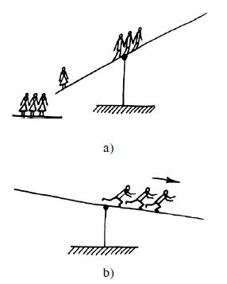
Hình 300: Những người tý hon giải bài toán theo ý tưởng 2
- Những người tý hon đối trọng bảo nhau:
“Chúng ta có thể chờ nhóm những người tý hon chất lỏng leo hết lên cái bập bênh rồi tất cả chúng ta cùng nhảy xuống đất. Không còn đối trọng nữa, tất cả những người tý hon chất lỏng tụt xuống đất dễ dàng. Lúc đó, chúng ta sẽ nhảy lại lên cái bập bênh đưa cái bập bênh về vị trí ban đầu để đón nhóm mới những người tý hon chất lỏng”.
V. Phiên dịch các ý tưởng thu được từ ngôn ngữ của những người tý hon sang ngôn ngữ thông thường của người giải bài toán:
Ý tưởng “những người tý hon chất lỏng khoác tay nhau thật chặt để cùng nhảy ra ngoài được” có thể phiên dịch là chất lỏng trở thành chất rắn. Điều này có nghĩa, phải làm cho chất lỏng trong phần đựng trở thành chất rắn trong chớp mắt rồi đổ cả nguyên khối chất rắn đó ra ngoài. Khi ra ngoài, chất rắn lại trở thành chất lỏng.
Phải làm cho phần đối trọng chuyển động chứ không cố định như hiện nay. Khi dụng cụ định lượng nghiêng sang trái, phần đối trọng chạy về phía tâm. Khi đổ chất lỏng ra hết, phần đối trọng chạy trở về vị trí ban đầu. Đơn giản nhất là phần đối trọng có dạng quả cầu bị “chứa trong” phần bên phải của cái định lượng chất lỏng và lăn theo độ nghiêng của dụng cụ định lượng (xem Hình 301).
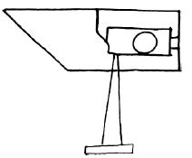
Hình 301: Ý tưởng giải pháp thu được theo ý tưởng 2
- Ý tưởng 3 có nghĩa, khi phần đựng chất lỏng đầy, đối trọng bên tay phải không còn nữa. Dụng cụ định lượng nghiêng nhanh về bên trái và dễ dàng đổ chất lỏng ra ngoài. Vừa đổ xong thì đối trọng bên tay phải xuất hiện trở lại, dụng cụ định lượng quay về vị trí ban đầu.
Đối trọng biến mất và xuất hiện trở lại dễ dàng như vậy có thể là lực hút từ trường, chứ không phải lực trọng trường: Dùng nam châm điện hút phần bên phải của cái bập bênh, khi phần đựng chất lỏng đầy, ngắt dòng điện (đối trọng biến mất); khi chất lỏng đổ hết, bật điện (đối trọng xuất hiện), dụng cụ định lượng quay về vị trí ban đầu.
- Ra quyết định:
Các ý tưởng 1 và 3, so với ý tưởng 2, làm hệ thay đổi nhiều, phải đưa thêm nhiều yếu tố mới từ bên ngoài vào hệ thống có trong bài toán, khó thực hiện. Do vậy, các ý tưởng 1 và 3 bị loại.
Sử dụng ý tưởng giải pháp được mô tả trên Hình 301là quyết định cuối cùng. Giai đoạn tiếp theo là phát triển ý tưởng giải pháp đó thành thành phẩm.
- Để kết thúc mục nhỏ này, người viết muốn lưu ý bạn đọc: Ở đây trình bày các phương pháp sáng tạo của TRIZ được xây dựng không phải dựa trên cơ sở trực tiếp là các thủ thuật hoặc tổ hợp các thủ thuật như các phương pháp đã trình bày trong mục nhỏ trước (xem 13.2.2 Các phương pháp sáng tạo dựa trên các thủ thuật).
Tuy vậy, nếu xem xét sâu hơn, bạn đọc sẽ thấy không ít các phương pháp được nhắc đến trong mục nhỏ này là kết quả sử dụng một số tổ hợp của các thủ thuật nhất định nhưng được diễn đạt bằng ngôn ngữ thường dùng cho đối tượng cụ thể. Ví dụ:
- “Phương pháp thực hiện công việc phân chia toàn bộ quá trình sáng tạo và đổi mới thành sáu giai đoạn” là tổ hợp của “1. Nguyên tắc phân nhỏ (theo thời gian) + 3. Nguyên tắc phẩm chất cục bộ (cục bộ theo chức năng)”.
- “Phương pháp thực hiện công việc phân loại và đánh giá các mức sáng tạo – các mức khó của bài toán” cũng là tổ hợp của “1. Nguyên tắc phân nhỏ (theo mức khó – mức sáng tạo) + 3. Nguyên tắc phẩm chất cục bộ (cục bộ theo tiêu chuẩn phân loại)”.
- Tổ hợp trên cũng đúng với “Màn hình 9 hệ”; “Mặt phẳng hệ thống”; “Không gian hệ thống”.
- “Phương pháp mô hình hóa (bài toán) bằng những người tý hon” (MBN) là tổ hợp các thủ thuật “15. Nguyên tắc linh động + 26. Nguyên tắc sao chép (copy) + 1. Nguyên tắc phân nhỏ + 3. Nguyên tắc phẩm chất cục bộ + 5. Nguyên tắc kết hợp”.
Tương tự như vậy, một số các phương pháp sáng tạo của TRIZ sẽ trình bày trong các quyển sách tiếp theo cũng là các phương pháp, mà ẩn dấu dưới ngôn ngữ thường dùng diễn đạt nội dung của chúng, có mặt các tổ hợp của một số thủ thuật nhất định. Người viết sẽ còn quay trở lại đề tài này trong các quyển sách tiếp theo, khi cần thiết.
13.2.4 Algôrit giải các bài toán sáng chế (ARIZ)
Trong mục nhỏ này, trên cơ sở những gì đã giới thiệu tổng quan (xem lại phần văn bản nói về ARIZ có trong mục 4.4 Sơ đồ khối TRIZ của quyển một), người viết nhấn mạnh một số điểm quan trọng về Algôrit giải các bài toán sáng chế (tiếng Nga: Алгоритм Решения Изобретательских Задач, viết tắt theo tiếng Nga là АРИЗ, phiên âm theo Latinh là ARIZ).
Algôrit (tiếng Anh: Algorithm, dịch sang tiếng Việt là thuật toán), theo nghĩa rộng, là chương trình mang tính định hướng, được kế hoạch hóa, gồm nhiều bước tuần tự, được xây dựng nhằm thực hiện một công việc nào đó một cách hợp lý, tối ưu. ARIZ là “Chương trình đầy đủ dùng để suy nghĩ giải quyết vấn đề và ra quyết định”.
Các phương pháp của TRIZ đã đề cập trong hai mục nhỏ trước có thể được dùng độc lập để thực hiện các công việc tương ứng. Nhưng chúng chỉ thực sự phát huy sức mạnh, tác dụng đối với việc giải các bài toán có mức khó cao, khi nằm trong các bước thích hợp và liên kết với các phương pháp khác trong một chương trình (hệ thống) thống nhất. Chương trình đó chính là ARIZ. Có thể nói, tất cả các phương pháp (đã và sẽ trình bày) của TRIZ đều tập trung trong ARIZ. Chúng được tổ chức, sắp xếp vào các bước của các giai đoạn suy nghĩ giải quyết vấn đề và ra quyết định.
Để bạn đọc phần nào dễ hình dung ARIZ là gì, Hình 302dưới đây là sơ đồ khối mô tả nội dung của ARIZ – 85 với bảy giai đoạn, còn gọi là bảy phần (thể hiện thành bảy khối) với tổng cộng 38 bước. Tên và số bước của từng giai đoạn được ghi trong từng khối.
Giai đoạn một “Phân tích tình huống xuất phát” gồm 9 bước, có nhiệm vụ xác định bài toán cần giải và xem nó có phải là bài toán chuẩn hay không.
Nếu nó là bài toán chuẩn, người giải dùng ngay các chuẩn để phát ý tưởng rồi chuyển sang giai đoạn năm “Phân tích cách khắc phục mâu thuẫn vật lý” để đánh giá xem các ý tưởng thu được đã đạt yêu cầu chưa. Nếu đạt, người giải đi tiếp ngay các giai đoạn còn lại.
Nếu nó không phải là bài toán chuẩn, người giải chuyển sang giai đoạn hai.
Giai đoạn hai “Phân tích bài toán” gồm 6 bước, có nhiệm vụ phát biểu bài toán – mini, từ đó người giải xác định mô hình bài toán. Mô hình bài toán chỉ bao gồm những cái phản ánh bản chất nhất của bài toán. Đấy là đôi yếu tố xung đột, lời phát biểu tăng cường sự xung đột, những cái cụ thể thực sự cần đạt, mà không nghĩ đến cách thực hiện.
Giai đoạn ba “Phân tích mô hình bài toán” gồm 8 bước. Các bước có nhiệm vụ hướng dẫn, yêu cầu người giải xác định thành phần thích hợp (vùng hành động), thời gian thích hợp (thời gian hành động) và kết quả lý tưởng cần đạt xảy ra trong vùng hành động và thời gian hành động đó, mà cũng không cần nghĩ đến cách thực hiện. Cũng chính trong giai đoạn này, người giải cần đi tìm và phát biểu mâu thuẫn vật lý.
Giai đoạn bốn “Giải quyết mâu thuẫn vật lý” gồm 7 bước, tập hợp tất cả các công cụ của TRIZ như hệ thống các chuẩn, phương pháp MBN, các nguyên tắc phân chia (các biến đổi mẫu), các hiệu ứng khoa học, dùng để phát các ý tưởng giải quyết các mâu thuẫn vật lý gặp trên con đường thực hiện nhằm đạt kết quả lý tưởng cuối cùng. Nếu không thu được ý tưởng giải bài toán ở giai đoạn này, người giải phải quay trở về giai đoạn ba để tìm mâu thuẫn vật lý khác hoặc quay trở về giai đoạn hai để phân tích lại bài toán.
Nếu thu được các ý tưởng giải quyết mâu thuẫn vật lý, người giải chuyển sang giai đoạn năm “Phân tích cách khắc phục mâu thuẫn vật lý”. Giai đoạn này có 3 bước dùng để đánh giá xem ý tưởng nào trong số các ý tưởng thu được thực sự thỏa mãn các yêu cầu là lời giải của bài toán? Có thể đăng ký patent được không? Có thể làm nảy sinh các bài toán hệ dưới nào, khi phát triển ý tưởng thành thành phẩm?
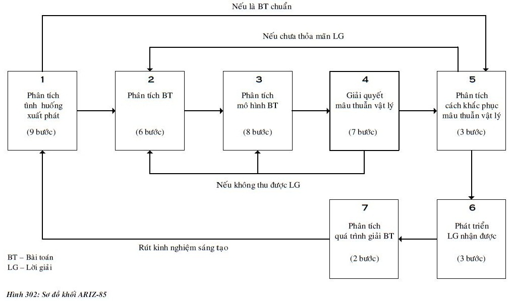
Nếu giai đoạn năm loại bỏ tất cả các ý tưởng thu được ở giai đoạn bốn, người giải phải quay trở lại giai đoạn hai để phân tích lại bài toán, đưa ra mô hình mới của bài toán. Nếu mọi việc diễn ra tốt đẹp ở giai đoạn năm, hiểu theo nghĩa, người giải ra được quyết định cuối cùng dùng ý tưởng giải pháp nào, người giải chuyển sang giai đoạn sáu.
Giai đoạn sáu “Phát triển lời giải nhận được” gồm 3 bước, có mục đích xem xét lời giải thu được ảnh hưởng tới các hệ khác ra sao và mở rộng phạm vi áp dụng của ý tưởng giải pháp thu được cho các bài toán tương tự.
Giai đoạn bảy “Phân tích quá trình giải bài toán” gồm 2 bước: Thiết lập quan hệ phản hồi để người giải tự rút kinh nghiệm nâng cao “tay nghề” sử dụng ARIZ của mình và xem xét khả năng có những đóng góp mới vào việc phát triển ARIZ nói riêng, TRIZ nói chung về mặt thực hành, cũng như lý thuyết, sau khi giải thành công bài toán cho trước.
Quyển chín được dành riêng để trình bày ARIZ cùng các ví dụ sử dụng ARIZ và các bài tập rèn luyện. Từ đây tới đó, bạn đọc hãy tạm thời sử dụng “Chương trình rút gọn” của ARIZ (xem mục nhỏ 12.3.2 Chương trình rút gọn dùng để giải quyết vấn đề và ra quyết định).
∗ ∗ ∗
Ngoài những gì nêu ở trên, hiện nay trên thế giới có không ít các phần mềm máy tính được tạo ra nhằm hỗ trợ những người sử dụng các phương pháp của TRIZ.
13.3 CÁC PHƯƠNG PHÁP SÁNG TẠO KHÔNG PHẢI CỦA TRIZ
13.3.1 Một số nhận xét chung về các phương pháp sáng tạo không phải của TRIZ
- Các phương pháp sáng tạo không phải của TRIZ do nhiều tác giả độc lập đưa ra (xem mục 4.1 Một số cách tiếp cận truyền thống và kết quả của quyển một), tạo nên tình trạng “trăm hoa đua nở” trong lĩnh vực PPLSTVĐM (xem phần tương ứng trong mục 13.1 Mở đầu của quyển sáu này).
Điều này đòi hỏi, khi đề cập từng phương pháp hoặc từng nhóm phương pháp sáng tạo không phải của TRIZ trong các mục nhỏ tiếp theo, không chỉ trình bày nội dung mà người viết còn phải trình bày các đặc thù riêng của từng (nhóm) phương pháp, tương tự như các đặc thù riêng của từng loại hoa, kể cả “gai” của chúng. Nói cách khác, trong trình bày tổng quan mỗi (nhóm) phương pháp, người viết sẽ cho thêm những nhận xét về các đặc thù riêng của (nhóm) phương pháp đó.
Các đặc thù riêng của từng (nhóm) phương pháp thể hiện trong cách tiếp cận, cơ sở lôgích để xây dựng phương pháp; các khái niệm được hiểu và sử dụng trong phương pháp; các công việc mà phương pháp nhắm tới thực hiện; phạm vi áp dụng của phương pháp.
- Trong trình bày của mình, người viết sẽ còn so sánh các phương pháp sáng tạo không phải của TRIZ với phương pháp thử và sai, với các phương pháp sáng tạo của TRIZ và so sánh chính các phương pháp sáng tạo không phải của TRIZ với nhau.
Như đã biết (xem mục 2.3 Các ưu và nhược điểm của phương pháp thử và sai của quyển một), tuy có một số ưu điểm nhất định nhưng phương pháp thử và sai có nhiều nhược điểm không chấp nhận được. Ở các nước phát triển, nhu cầu xã hội đã xuất hiện và đòi hỏi các nhà nghiên cứu xây dựng các phương pháp sáng tạo mới. Do vậy, việc so sánh các phương pháp sáng tạo không phải của TRIZ với phương pháp thử và sai sẽ giúp bạn đọc thấy: Các phương pháp sáng tạo không phải của TRIZ có những ưu điểm gì, có thể khắc phục những nhược điểm nào của phương pháp thử và sai.
Việc so sánh các phương pháp sáng tạo không phải của TRIZ với các phương pháp sáng tạo của TRIZ giúp bạn đọc thấy hai loại phương pháp này giống, đặc biệt, khác nhau như thế nào; khả năng từ TRIZ suy ra các phương pháp sáng tạo không phải của TRIZ; các điểm mạnh và yếu của chúng.
Các phương pháp sáng tạo không phải của TRIZ, nếu xét riêng, cũng có những điểm giống và khác nhau, các điểm mạnh và yếu. Việc so sánh chính các phương pháp sáng tạo không phải của TRIZ với nhau giúp bạn đọc thấy: Có những phương pháp có thể thay thế nhau, có những phương pháp bổ sung cho nhau chứ chúng không phải là những phương pháp hoàn toàn độc lập.
Tóm lại, việc so sánh các phương pháp sáng tạo không phải của TRIZ với các phương pháp khác và với nhau giúp bạn đọc hiểu các phương pháp sáng tạo nói chung tốt hơn cả về nội dung lẫn sự liên kết giữa chúng. Do vậy, tùy theo mục đích công việc của mình, hoàn cảnh, điều kiện cho phép khi giải bài toán, bạn đọc có thể chọn cho mình phương pháp sáng tạo thích hợp nhất trong số các phương pháp sáng tạo trình bày trong bộ sách này.
- Có nhiều phương pháp sáng tạo không phải của TRIZ. Những phương pháp này lại khác nhau về nhiều mặt. Tất cả các phương pháp này người viết không thể trình bày và người đọc không thể tiếp thu cùng một lúc. Nói cách khác, người viết cần phải sắp xếp các phương pháp sáng tạo không phải của TRIZ theo một tiêu chuẩn nhất định để trình bày chúng lần lượt, sao cho có lợi nhất đối với người đọc.
Có thể trình bày các phương pháp sáng tạo không phải của TRIZ theo thứ tự năm (thời điểm) mà những phương pháp này được công bố. Có thể trình bày chúng theo thứ tự chữ cái của tên phương pháp hoặc tên tác giả. Có thể trình bày chúng theo thứ tự các công việc, các giai đoạn cần phải trải qua khi thực hiện quá trình suy nghĩ giải quyết vấn đề và ra quyết định. Có thể trình bày chúng theo thứ tự từ phương pháp đơn giản đến phương pháp phức tạp; từ phương pháp cụ thể đến những phương pháp khái quát hơn;… Chọn cách trình bày nào đây?
Nếu so sánh với các phương pháp sáng tạo của TRIZ, đối với người viết, đây là công việc lựa chọn khó khăn về tiêu chuẩn sắp xếp các phương pháp sáng tạo không phải của TRIZ để trình bày với bạn đọc. Bởi vì, TRIZ có lôgích thống nhất của một tác giả và của một lý thuyết. Trong khi đó, hầu như mỗi phương pháp sáng tạo không phải của TRIZ thuộc về một tác giả, được xây dựng dựa trên một cơ sở riêng biệt, có khi chỉ phản ánh một ý nhỏ, một phương diện nào đó của sáng tạo và chỉ có phạm vi áp dụng rất hẹp.
Cuối cùng, người viết quyết định chọn cách trình bày các phương pháp sáng tạo không phải của TRIZ theo thứ tự sau: Các phương pháp được xây dựng chủ yếu dựa trên các kinh nghiệm sáng tạo; các phương pháp được xây dựng chủ yếu dựa trên cách tiếp cận có cơ sở khoa học (lôgích hình thức, tâm lý học) nhất định và kinh nghiệm; các phương pháp dùng cho cả quá trình suy nghĩ giải quyết vấn đề và ra quyết định nói riêng, quá trình thực hiện sáng tạo nói chung; các phương pháp được xây dựng dựa trên cách tiếp cận kết hợp hoạt động của bộ não con người và hoạt động của máy tính.
Việc phân loại các phương pháp sáng tạo không phải của TRIZ theo tiêu chuẩn nói trên không phải là phân loại lôgích (xem mục nhỏ 8.3.4 Phân chia khái niệm của quyển ba), mà chỉ mang tính chất tương đối, giúp việc trình bày của người viết dễ dàng hơn và giúp bạn đọc phần nào không chỉ thấy cây mà còn thấy rừng.
Điều này có nghĩa, khi xếp phương pháp sáng tạo không phải của TRIZ nào đó vào một cách tiếp cận nhất định, người viết cho rằng, phương pháp cho trước chủ yếu thuộc về cách tiếp cận tương ứng, mặc dù, trong phương pháp cho trước còn có thể có những yếu tố của các cách tiếp cận khác. Không ai cấm bạn đọc chọn tiêu chuẩn sắp xếp khác, đưa ra cách phân loại khác.
- Để kết thúc mục nhỏ này, người viết muốn lưu ý bạn đọc về hình thức và nội dung trình bày các phương pháp sáng tạo không phải của TRIZ sẽ áp dụng cho các mục nhỏ tiếp theo:
- Bạn đọc có thể tìm hiểu tiểu sử chi tiết các tác giả của các phương pháp sáng tạo không phải của TRIZ trên Internet. Do vậy, các mục nhỏ tiếp theo chỉ tập trung trình bày nội dung của các phương pháp sáng tạo không phải của TRIZ.
- Những phương pháp sáng tạo không phải của TRIZ được nhắc đến trong các mục nhỏ tiếp theo là những phương pháp được biết đến khá rộng rãi, và bản thân người viết cũng quan tâm đến chúng nhiều hơn so với các phương pháp khác. Do vậy, bạn đọc không nên hiểu rằng những gì được trình bày trong quyển sách này là tất cả các phương pháp sáng tạo không phải của TRIZ.
- Trình bày mang tính chất tổng quan chứ không phải trình bày chi tiết như người viết đã và sẽ trình bày các phương pháp sáng tạo của TRIZ. Do vậy, nếu quan tâm, bạn đọc cần đọc các sách nguyên bản của chính tác giả phương pháp (xem phần Tài liệu tham khảo ở cuối sách này). Nếu quan tâm hơn nữa, bạn đọc có thể tham dự các lớp học dạy phương pháp đó.
- Trình bày các phương pháp sáng tạo không phải của TRIZ trong các mục nhỏ tiếp theo, dù người viết cố gắng cách mấy, vẫn mang tính chủ quan. Do vậy, nếu có gì chưa rõ, một lần nữa, bạn đọc hãy quay trở về với các quyển sách của tác giả phương pháp tương ứng.
13.3.2 Các phương pháp sáng tạo không phải của TRIZ dựa trên các kinh nghiệm
Ở đây, kinh nghiệm được hiểu là cách thức có được nhờ sự quan sát trong hoạt động thực tế mối quan hệ nhân – quả lặp đi lặp lại nhiều lần kiểu: Nếu làm theo cách thức này thì thường thu được kết quả tốt.
Các kinh nghiệm áp dụng hữu hiệu vào việc thực hiện một hoặc vài công việc nào đó của quá trình suy nghĩ sáng tạo, có thể được phát triển thành các phương pháp. Khi đưa ra các phương pháp dựa trên các kinh nghiệm, các tác giả của chúng thường không mấy quan tâm đến các cơ sở tri thức và tiêu chuẩn đòi hỏi phải có đối với các phương pháp khoa học. Mặc dù, các cơ sở và tiêu chuẩn này có thể sẽ được làm rõ và chính xác hóa trong tương lai.
Điều này cũng tương tự những bài thuốc chữa bệnh theo kinh nghiệm dân gian được dùng qua nhiều đời. Nhưng mãi sau này, y – dược học hiện đại mới phát hiện ra và giải thích cơ sở, cơ chế chữa trị… của những bài thuốc kinh nghiệm dân gian đó một cách khoa học. Nhờ vậy, những bài thuốc chữa bệnh theo kinh nghiệm dân gian có được cơ hội nâng cao hiệu quả, giá trị và phát triển tiếp.
Các phương pháp sáng tạo không phải của TRIZ được người viết chọn vào mục nhỏ này là các phương pháp chủ yếu dựa trên kinh nghiệm trong ý nghĩa vừa giải thích ở trên. Do vậy, không chỉ trình bày nội dung phương pháp như nó vốn có, mà người viết sẽ còn cho thêm các nhận xét giải thích cơ sở và cơ chế hoạt động của phương pháp, mà những nhận xét này có sau khi phương pháp ra đời, cũng như các nhận xét khác.
Ngoài ra, người viết muốn lưu ý bạn đọc, “kinh nghiệm” nói đến ở đây có thể là kinh nghiệm của một người, nhiều người, nhiều thế hệ; kinh nghiệm khác nhau ứng với các công việc khác nhau; kinh nghiệm khác nhau về mức độ cụ thể; kinh nghiệm khác nhau về mức độ khó khi áp dụng;…
13.3.2.1 Phương pháp sáu câu hỏi (Interrogatories (5Ws/H) Method hoặc Five Ws and H Method)
Sáu câu hỏi được Parnes, Moller và Biondi tập trung nhấn mạnh từ năm 1977 là:
- Who? Ai? Con gì?
- What? Cái gì? Cái nào? (“What” trong tiếng Anh còn được dùng như tính từ và dùng tương đối đa dạng. Ví dụ, “In what ways might we prevent this thing?” – Có những cách nào chúng ta có thể ngăn chặn được điều này?; “What use is it?” – Cái này đem lại ích lợi gì?; “He gave her what money he had” – Anh ấy đã đưa cho chị ta tất cả số tiền mà anh ấy có; “What a pity it is!” – Thật đáng tiếc…
- Where? Ở đâu?
- When? Khi nào?
- Why? Tại sao?
- How? Như thế nào? Bằng cách nào? Bao nhiêu? (How much? How many?)…
Trước đó rất lâu, sáu câu hỏi vừa nêu đã được Rudyard Kipling đánh giá cao và gọi là “sáu người phục vụ trung thực nhất” (Six honest serving-men) trong bài thơ của mình:
I HAD SIX HONEST SERVING-MEN,
THEY TAUGHT ME ALL I KNEW.
THEIR NAMES WERE WHAT AND HOW AND WHY
AND WHEN AND WHERE AND WHO.
Tạm dịch ý:
TÔI CÓ SÁU NGƯỜI PHỤC VỤ TRUNG THỰC NHẤT
HỌ DẠY TÔI TẤT CẢ NHỮNG ĐIỀU TÔI BIẾT ĐẾN NAY
TÊN CỦA HỌ LÀ CÁI GÌ, BẰNG CÁCH NÀO, TẠI SAO,
KHI NÀO, Ở ĐÂU VÀ AI
Phương pháp sáu câu hỏi có xuất xứ từ lĩnh vực báo chí (journalism). Những câu hỏi này giúp các phóng viên thu thập các thông tin cần thiết một cách có hệ thống.
Trong quá trình giải quyết vấn đề và ra quyết định, phương pháp sáu câu hỏi thường được dùng ở giai đoạn tìm thông tin để làm rõ vấn đề, mặc dù nó cũng đem lại nhiều ích lợi cả ở những giai đoạn khác của quá trình suy nghĩ.
Giả sử bạn cần làm rõ (hiểu) vấn đề, sáu câu hỏi có thể được dùng theo thứ tự các bước sau:
Phát biểu bài toán.
Đặt và trả lời các câu hỏi Ai? Cái gì? Ở đâu? Khi nào? Tại sao? và Bằng cách nào? mà không phán xét.
Xem xét và sử dụng các câu trả lời như là những gợi ý giúp làm rõ (hiểu) bài toán. Ghi lại những gì thu được ở bước này.
Dựa trên bước 3, chọn ra phương án hoặc phương án tổng hợp giúp làm rõ (hiểu) bài toán nhất để từ đó chuyển sang giai đoạn suy nghĩ tiếp theo.
Ví dụ: Bài toán khắc phục sự thụ động của sinh viên trong lớp học.
Phát biểu bài toán: Có những cách nào chúng ta có thể (In what ways might we – viết tắt là IWWMW) khắc phục tính thụ động của sinh viên trong lớp học?
Ghi lại các câu hỏi (H) và các câu trả lời (TL).
H: Ai bức xúc về vấn đề này?
TL: Các thầy cô tâm huyết và các sinh viên có ý thức học tập không hài lòng về sự thụ động của phần lớn sinh viên trong lớp học.
H: Vậy chủ động là gì?
TL: Chủ động là sự tham gia tự giác, tích cực của tất cả (hoặc phần lớn) sinh viên vào các hoạt động trên giảng đường như xung phong trả lời các câu hỏi, lên bảng giải các bài tập thầy cô cho, đặt các câu hỏi liên quan đến việc đào sâu, mở rộng bài học… cho thầy cô, cho các bạn cùng học.
H: Cái gì thúc đẩy sinh viên tham gia tích cực vào các hoạt động trong lớp học?
TL: Sinh viên phải thắng được tính rụt rè; phải tự tin; phải làm chủ kiến thức. Môi trường lớp học phải khuyến khích, kích thích tính chủ động của sinh viên. Phải có biện pháp khen thưởng dành cho các sinh viên chủ động.
H: Ở đâu sinh viên cần tham gia tích cực vào các hoạt động trong lớp học?
TL: Ở các buổi nghe giảng, seminar, chữa bài tập, sinh viên thuyết trình trước lớp, bảo vệ khóa luận, làm các thí nghiệm…
H: Khi nào sinh viên tham gia tích cực vào các hoạt động trong lớp học?
TL: Khi họ chuẩn bị bài ở nhà (làm bài tập, ôn bài cũ, đọc trước bài mới) tốt. Khi họ có ý thức về các ích lợi của tính chủ động. Khi hiểu rằng không nắm vững kiến thức, họ rất khó xin việc làm sau này…
H: Tại sao phải khắc phục tính thụ động của sinh viên trong lớp học?
TL: Để thầy cô có được quan hệ phản hồi thường trực, thông suốt, từ đó, đánh giá đúng kết quả giảng dạy, học tập và có các biện pháp điều chỉnh cần thiết; để thầy cô có hứng thú dạy; để tăng cường ý thức học tập của sinh viên; để góp phần xây dựng phương pháp học tập của sinh viên…
H: Bằng cách nào khắc phục tính thụ động của sinh viên trong lớp học?
TL: Thầy cô giảng bài thật thuyết phục, thật hay, đáp ứng đúng nhu cầu của sinh viên để sinh viên yêu mến môn học; thầy cô có thái độ thân thiện, bao dung đối với sinh viên; thầy cô có các biện pháp thưởng-phạt phù hợp; giáo dục, rèn luyện tính chủ động ngay từ khi còn là học sinh phổ thông…
- Từ các câu hỏi và trả lời ở trên, vấn đề ban đầu được phát biểu ở bước 1 có thể được phát biểu lại và trở nên rõ ràng hơn như:
- Có những cách nào chúng ta có thể (IWWMW) biết nhu cầu của sinh viên muốn học gì?
- Có những cách nào chúng ta có thể làm cho sinh viên tự tin làm chủ kiến thức?
- Có những cách nào chúng ta có thể xây dựng môi trường khuyến khích tính chủ động của sinh viên?
- Có những cách nào chúng ta có thể xây dựng các biện pháp thưởng-phạt thích hợp cho các hoạt động của sinh viên trong lớp học?
- Có những cách nào chúng ta có thể thuyết phục sinh viên rằng, tính chủ động đem lại nhiều ích lợi cho chính họ?
- Có những cách nào chúng ta có thể làm các hoạt động trên lớp (bài giảng, seminar,…) trở nên hấp dẫn, thú vị hơn đối với sinh viên?
- Có những cách nào chúng ta có thể giáo dục, huấn luyện tính chủ động của sinh viên?
……………………………..
- Các phương án tìm ra ở bước 3 giúp người giải bài toán hiểu bài toán ban đầu tốt hơn. Từ đây, tùy theo điều kiện khách quan, mong muốn chủ quan, người giải có thể chọn một hoặc tổng hợp vài phương án để có được bài toán cụ thể cần giải.
NHẬN XÉT:
- Trên đây người viết đã trình bày nội dung và cách sử dụng phương pháp sáu câu hỏi. Trong PPLSTVĐM còn có những phương pháp một câu hỏi như “Phương pháp còn gì khác?” (What else Method), “Phương pháp cái gì, nếu” (What if Method), “Phương pháp tại sao” (Why Method). Dưới đây là ví dụ minh họa việc sử dụng những phương pháp này.
Trong phương pháp thử và sai (xem mục 2.2 Phương pháp thử và sai của quyển một), thường có được ý tưởng nào người giải thực hiện ngay ý tưởng đó. Chỉ khi thấy phép thử đó sai, người giải mới tìm kiếm ý tưởng khác để thực hiện tiếp. “Phương pháp còn gì khác” đòi hỏi người giải sau khi có một ý tưởng phải tìm thêm ý tưởng khác, khác nữa… mà khoan thực hiện chúng vội.
Sau khi phát cạn ý tưởng, “phương pháp cái gì, nếu” đề nghị người giải thay vì thực hiện thử các ý tưởng thì tưởng tượng: Cái gì sẽ xảy ra nếu thực hiện ý tưởng này…, nếu thực hiện ý tưởng kia… Nhờ vậy, người giải có thể phát hiện ra các phép thử sai ngay trong tưởng tượng, tránh trả giá đắt trong thực tế.
“Phương pháp tại sao” giúp trừu tượng hóa bài toán cụ thể ban đầu, nhờ vậy, giúp người giải tự tin quyết định nên hay không nên giải bài toán cụ thể ban đầu. Chẳng hạn, chúng ta quay trở lại ví dụ: Khắc phục sự thụ động của sinh viên trong lớp học.
H: Tại sao chúng ta muốn khắc phục sự thụ động của sinh viên trong lớp học?
TL: Vì chúng ta muốn đánh giá đúng thực trạng học tập của sinh viên một cách kịp thời. Chờ tới lúc có kết quả thi học kỳ hoặc cuối năm thì đã muộn.
H: Tại sao chúng ta muốn đánh giá đúng thực trạng học tập của sinh viên một cách kịp thời?
TL: Vì có như thế chúng ta mới biết phải điều chỉnh việc dạy học như thế nào để có được các chuyên gia giỏi, nhân cách tốt.
H: Tại sao chúng ta cần có các chuyên gia giỏi, nhân cách tốt?
TL: Vì chúng ta muốn đạt mục tiêu hiện đại hóa, công nghiệp hóa, dân giàu, nước mạnh, xã hội công bằng, dân chủ, văn minh.
Rõ ràng, bài toán cụ thể ban đầu (khắc phục sự thụ động của sinh viên trong lớp học) là bài toán cần thiết phải giải.
- Nói chung, loại phương pháp các câu hỏi (không phân biệt số lượng các câu hỏi) có cơ sở là: Người ta chỉ thực sự suy nghĩ, thậm chí, bị bắt buộc phải suy nghĩ khi có vấn đề (xem khái niệm “vấn đề” trong mục 1.2 Một số khái niệm cơ bản và các ý nghĩa của chúng của quyển một).
Xét về mặt hình thức, vấn đề đơn giản nhất, nhỏ nhất là câu hỏi chưa có câu trả lời hoặc câu hỏi có nhiều câu trả lời nhưng chưa biết câu trả lời nào là tối ưu. Nói cách khác, các câu hỏi là điều kiện ban đầu của quá trình suy nghĩ, là nguồn kích thích tư duy làm việc, là thể hiện trí tò mò của những người muốn hiểu biết thêm.
Quá trình suy nghĩ tiếp theo lại là quá trình người suy nghĩ đối thoại với chính mình, tự hỏi và đáp, lúc đóng vai trò thu thông tin, lúc đóng vai trò phát thông tin (xem mục 8.6.3 Tư duy lôgích: Người thu và phát thông tin). Lôgích và nghệ thuật tư duy, nếu không nói quá, là lôgích và nghệ thuật đặt các câu hỏi và đưa ra các câu trả lời.
Từ đây, bạn đọc có thể thấy, sáu câu hỏi trong “Phương pháp sáu câu hỏi” chỉ là sáu câu hỏi thông dụng chứ không phải tất cả các câu hỏi dùng để tư duy.
Các câu hỏi mồi cho tư duy hoạt động, trước hết, là để trả lời chính những câu hỏi đó. Trả lời các câu hỏi như thế nào phụ thuộc rất nhiều vào kiến thức, kinh nghiệm, các công cụ tư duy… mà cá nhân người giải có. Những người khác nhau thì các nguồn lực này cũng khác nhau. Do vậy, đối với cùng một câu hỏi, các câu trả lời có thể khác nhau về mặt giá trị giải bài toán.
Tương tự như vậy, việc đặt các câu hỏi cũng phụ thuộc rất nhiều vào kiến thức, kinh nghiệm, các công cụ tư duy… mà cá nhân người giải có. Cùng giải một bài toán, những cá nhân khác nhau có thể đặt các câu hỏi khác nhau, dẫn đến các hướng suy nghĩ với các giá trị khác nhau.
Từ những gì phân tích ở trên, nếu chỉ dừng ở các phương pháp câu hỏi kiểu như phương pháp một hoặc sáu câu hỏi thì các phương pháp này chỉ dùng để giải những bài toán có mức khó thấp.
13.3.2.2 Nhóm các phương pháp các câu hỏi kiểm tra (Check – listing Method hoặc Method of Control Questions)
Từ những năm 1920, không ít nhà nghiên cứu đã có những cố gắng xây dựng các danh sách các câu hỏi kiểm tra nhằm giúp người giải bài toán suy nghĩ tốt hơn. Mỗi danh sách câu hỏi kiểm tra dùng cho một lĩnh vực nhất định, thậm chí, cụ thể hơn cho một loại công việc nhất định. Điều này có nghĩa, có rất nhiều danh sách các câu hỏi kiểm tra trong PPLSTVĐM.
Mỗi danh sách bao gồm nhiều (chứ không chỉ sáu) câu hỏi đòi hỏi người sử dụng danh sách phải trả lời. Ngoài ra trong danh sách còn có những lời khuyên, lời đề nghị người sử dụng danh sách thực hiện một hoặc vài công việc nhất định, mà tác giả danh sách cho rằng đấy là công việc cần thiết phải làm để tăng năng suất, hiệu quả suy nghĩ giải bài toán.
Thông thường, sau khi chọn cho mình một danh sách các câu hỏi kiểm tra thích hợp, bạn có thể sử dụng danh sách đó như sau:
- Thỉnh thoảng giở danh sách ra xem, bạn nhớ được tới đâu thì nhớ, không nhất thiết phải học thuộc lòng toàn bộ “Danh sách”.
- Khi giải bài toán, bạn để danh sách các câu hỏi kiểm tra bên cạnh và tùy từng giai đoạn suy nghĩ của mình, bạn chọn (các) câu hỏi để trả lời, (các) đề nghị để thực hiện.
Dưới đây là ba danh sách các câu hỏi kiểm tra được đánh giá vào loại cao nhất dùng trong các lĩnh vực tương ứng.
1. Danh sách các câu hỏi kiểm tra của A. Osborn, người Mỹ, đưa ra năm 1953, dùng cho lĩnh vực sáng chế.
Bạn có đề nghị gì mới về việc sử dụng đối tượng kỹ thuật? Có thể có những cách sử dụng mới không? Làm biến thể những cách sử dụng đã biết như thế nào?
Có thể có lời giải bài toán sáng chế bằng cách thích nghi hóa, đơn giản hóa, lược bớt không? Đối tượng kỹ thuật cho trước làm bạn nhớ đến cái gì? Sự tương tự hóa có đưa ra ý tưởng gì mới không? Trong quá trình sống và làm việc trước đây có những tình huống vấn đề nào tương tự để có thể sử dụng chúng? Có thể sao chép lại điều gì? Cần phải vượt trước đối tượng nào?
Có thể có những.biến thể nào của đối tượng kỹ thuật? Liệu có biến thể bằng cách quay, uốn, vặn hay không? Có thể có những thay đổi nào về chức năng, màu sắc, mùi, hình dáng? Những thay đổi khác có thể?
Cái gì có thể làm tăng lên trong đối tượng kỹ thuật? Có thể nối thêm gì ? Có thể làm tăng thời gian phục vụ, tăng tác động được không? Làm tăng tần số? Kích thước? độ bền? Nâng cao chất lượng? Ghép thêm các thành phần mới? Làm trùng lặp? Làm tăng số lượng các bộ phận làm việc, vị trí hoặc những yếu tố khác? Có thể tăng quá mức các yếu tố hay toàn bộ đối tượng được không?
Cái gì có thể làm giảm xuống trong đối tượng kỹ thuật? Có thể trừ bớt cái gì ? Cái gì có thể làm chặt lại, co lại, đậm đặc, ngưng tụ, vi hóa, làm ngắn lại, làm hẹp lại, phân nhỏ ra?
Cái gì trong đối tượng kỹ thuật có thể bị thay thế? Có thể thay thế cái gì và bao nhiêu, thay thế bởi cái gì? Thành phần khác? Vật liệu khác? Quá trình khác? Nguồn năng lượng khác? Sắp xếp khác? Màu, âm thanh, sự chiếu sáng khác?
Cái gì có thể biến đổi được trong đối tượng kỹ thuật? Những yếu tố nào có thể thay thế lẫn nhau được? Thay đổi mô hình? Thay đổi sự phân bố? Thay đổi thứ tự các thao tác? Chuyển vị nguyên nhân và kết quả? Thay đổi vận tốc hoặc nhịp độ? Thay đổi chế độ làm việc?
Cái gì có thể làm ngược lại trong đối tượng? Chuyển vị dương và âm? Những yếu tố đối diện nhau có thể đổi chỗ cho nhau được không? Quay chúng từ trước ra sau? Quay từ dưới lên trên? Đổi chỗ? Đổi vai trò? Đổi các đầu kẹp?
Có thể có những tổ hợïp mới nào các yếu tố của đối tượng kỹ thuật? Có thể tạo ra hỗn hợp, hợp kim, mặt hàng mới, bộ phụ tùng mới không? Kết hợp các bộ phận, nút, khối, các tổ hợp máy? Kết hợp các mục đích? Kết hợp các dấu hiệu hấp dẫn? Kết hợp các ý tưởng?
2. Danh sách các câu hỏi kiểm tra của T. Eiloart, người Anh, đưa ra năm 1969 dùng cho lĩnh vực sáng chế.
Liệt kê tất cả các phẩm chất và định nghĩa của sáng chế cần có. Thay đổi chúng.
Phát biểu bài toán rõ ràng. Thử phát biểu những cách khác. Xác định những bài toán thứ cấp, tương tự. Tách ra những bài toán chủ yếu.
Liệt kê những nhược điểm cơ bản của những lời giải đã có, các nguyên tắc cơ bản, những giả thiết mới.
Đưa ra các tương tự viễn tưởng, sinh học, kinh tế, hóa học, phân tử và những tương tự khác.
Xây dựng các mô hình toán học, thủy lực, điện tử, cơ học và các mô hình khác (mô hình thể hiện ý tưởng chính xác hơn sự tương tự).
Thử các loại vật liệu, năng lượng khác nhau: khí, chất lỏng, chất rắn, keo, bọt, bột nhão…; nhiệt, điện, từ, ánh sáng, lực va chạm…; các bước sóng khác nhau, các tính chất bề mặt…; các trạng thái chuyển pha: sự đông đặc, ngưng kết, sự chuyển tiếp qua điểm Curie…; các hiệu ứng Joule-Thomson, Faraday…
Thiết lập các khả năng, các sự phụ thuộc, các liên kết có thể, các suy luận lô gích.
Tìm hiểu ý kiến của những người hoàn toàn không am hiểu lĩnh vực cho trước.
Tổ chức thảo luận tập thể, đặc biệt trong lúc ăn uống, nghe tất cả và từng ý tưởng mà không phê bình, chỉ trích.
Thử những lời giải mang tính cách dân tộc: sự khôn ngoan của người Scotland, sự bao quát của người Đức, sự xa xỉ của người Mỹ, sự cầu kỳ phức tạp của người Trung quốc…
Khi ngủ cũng nghĩ đến bài toán, đi làm việc, dạo chơi, tắm, đi ô tô, uống, ăn, chơi tennis đều nghĩ về bài toán.
Đi dạo ở những nơi gợi ý sáng tạo: nghĩa địa máy móc, bãi rác sắt vụn, các bảo tàng kỹ thuật, các cửa hàng bán những đồ vật rẻ. Đọc lướt các tạp chí, tập san hài hước.
Phác thảo bảng giá thành, độ lớn, độ dịch chuyển, phân loại, vật liệu… cho các lời giải khác nhau của bài toán hay các phần khác nhau của bài toán; tìm những chỗ thiếu trong các lời giải hoặc đưa ra những tổ hợp mới.
Xác định lời giải lý tưởng, soạn thảo những lời giải có thể có.
Làm biến thể lời giải bài toán theo thời gian (làm nhanh hơn hay chậm hơn), theo kích thước, theo độ nhớt…
Trong tưởng tượng, biến mình thành đối tượng kỹ thuật (empathy).
Xác định những bài toán và những hệ thống mà từ đó có thể chọn được một. Trong những hệ thống này thử lấy đi một mắt xích nhất định, do đó, có thể tạo nên cái gì đó khác.
Bài toán này là của ai? Tại sao lại của chính người đó?
Ai nghĩ ra cái này đầu tiên? Lịch sử của vấn đề? Đã có những giải thích sai nào về bài toán này?
Ai còn đang giải bài toán này? Người ấy đã đạt được điều gì?
Xác định những điều kiện biên và những nguyên nhân thiết lập chúng.
3. Các câu hỏi kiểm tra của G. Polya, nhà toán học người Mỹ gốc Hungary, đưa ra năm 1945 dùng để giải các bài tập toán học trong các trường phổ thông.
A. Hiểu cách đặt vấn đề của bài toán (cần phải hiểu bài toán một cách rõ ràng): Cái gì chưa biết? Cái gì cho trước? Điều kiện bài toán thể hiện ở chỗ nào? Có thể làm thỏa mãn điều kiện không? Điều kiện có đủ để xác định cái chưa biết không? Hay là không đủ? Hay là thừa? Hay là mâu thuẫn? Hãy vẽ hình, đưa vào những ký hiệu thích hợp. Hãy phân chia điều kiện thành từng phần. Cố gắng ghi chúng lại.
B. Lập kế hoạch giải (cần phải đi tìm mối liên hệ giữa những cái cho trước và những cái chưa biết. Nếu chưa làm ngay được điều ấy, sẽ rất có ích khi xem xét thêm những bài toán phụ trợ. Cuối cùng cần đi tới kế hoạch giải bài toán):
- Trước đây bạn đã gặp bài toán này chưa? Dù là ở dạng khác một chút? Bạn có biết bài toán họ hàng với bài toán cho trước hay không? Bạn có biết định lý nào có ích trong trường hợp này không?
- Hãy xem xét kỹ cái chưa biết. Cố gắng nhớ lại bài toán quen thuộc có cùng hoặc gần giống về cái chưa biết.
- Giả sử có bài toán họ hàng với bài toán cho trước và đã giải rồi. Có thể sử dụng nó được không? Sử dụng kết quả, phương pháp giải? Có cần đưa thêm yếu tố phụ trợ nào để có thể sử dụng bài toán đã giải?
- Có cách khác phát biểu bài toán không? Khác nữa? Hãy quay trở về với định nghĩa.
- Nếu như không giải được bài toán cho trước, cố gắng giải bài toán gần giống nó. Có thể nghĩ ra bài toán tương đồng mà dễ hơn không? Bài toán chung hơn? Đặc biệt hơn? Bài toán tương tự? Có thể giải một phần bài toán được không?
- Hãy giữ lại một phần điều kiện bài toán, phần còn lại thì bỏ đi: cái chưa biết lúc đó ở mức độ xác định nào, nó thay đổi như thế nào? Có thể lấy được gì có ích từ những cái đã cho? Có thể nghĩ ra thêm dữ kiện để xác định cái chưa biết được không? Có thể thay đổi cái chưa biết hoặc điều kiện bài toán, hoặc nếu cần thiết cả điều kiện và cả cái chưa biết để điều kiện mới và cái chưa biết mới gần lại với nhau hơn? Bạn đã sử dụng tất cả các điều kiện chưa? Bạn đã thực sự chú ý tới những khái niệm cơ bản trong bài toán chưa?
C. Thực hiện kế hoạch (cần phải thực hiện kế hoạch giải bài toán):
Khi thực hiện kế hoạch, bạn hãy kiểm tra từng bước đi của mình. Bạn có thấy rõ bước mà bạn vừa quyết định là đúng hay không? Có thể chứng minh được điều đó không?
D. Tổng kết (nghiên cứu lời giải nhận được):
- Có thể kiểm tra lại kết quả giải được không? Quá trình giải?
- Có thể nhận kết quả bằng cách khác được không?
- Có thể sử dụng kết quả giải hay cách giải vừa thu được vào bài toán khác được không?
NHẬN XÉT:
- Tuy có tên là “Danh sách các câu hỏi kiểm tra” nhưng về mặt hình thức, không phải tất cả các câu có trong danh sách là các câu hỏi, mà có cả các câu dưới dạng lời khuyên, lời đề nghị thực hiện một (vài) công việc nào đấy. Điều này hiểu được vì, trong rất nhiều trường hợp, các câu hỏi và các câu đề nghị có thể xem là tương đương nhau.
Ví dụ, câu 1 trong “Danh sách các câu hỏi kiểm tra của A. Osborn” viết dưới dạng câu hỏi:
1. Bạn có đề nghị gì mới về việc sử dụng đối tượng kỹ thuật? Có thể có những cách sử dụng mới không? Làm biến thể những cách sử dụng đã biết như thế nào?
Có thể chuyển thành câu đề nghị:
1. Hãy đưa ra những đề nghị mới về việc sử dụng đối tượng kỹ thuật: Hãy tìm kiếm những cách sử dụng mới. Hãy chỉ ra những cách làm biến thể cách sử dụng đã biết để có những cách sử dụng mới.
Hoặc, câu 1 trong “Danh sách các câu hỏi kiểm tra của T. Eiloart” viết dưới dạng lời đề nghị:
1. Liệt kê tất cả các phẩm chất và định nghĩa của sáng chế cần có. Thay đổi chúng.
Có thể chuyển thành câu hỏi:
1. Sáng chế cần có có những phẩm chất và định nghĩa gì? Có những cách nào thay đổi chúng?
- Thông thường, không có đòi hỏi bắt buộc phải sắp xếp các câu trong “Danh sách các câu hỏi kiểm tra” theo một trình tự hoặc một tiêu chuẩn nhất định. Điều này thể hiện khá rõ trong “Danh sách các câu hỏi kiểm tra của A. Osborn” và “Danh sách các câu hỏi kiểm tra của T. Eiloart”. Người sử dụng, do vậy, có thể chọn câu nào thích hợp nhất với mình tại thời điểm đang suy nghĩ trong ngữ cảnh giải bài toán cho trước, chứ không nhất thiết phải theo thứ tự của các câu, mặc dù các câu được đánh số.
Tuy nhiên, có những tác giả không dừng lại ở việc tập hợp các câu mà còn sắp xếp chúng theo những cách giúp sử dụng “Danh sách” dễ dàng hơn hoặc “Danh sách” phát huy ích lợi cao hơn. “Danh sách các câu hỏi kiểm tra của G. Polya” thuộc loại này. Cụ thể, các câu trong “Danh sách” phản ánh một cách lôgích lần lượt các giai đoạn A, B, C, D của quá trình suy nghĩ giải các bài tập toán học phổ thông. Người sử dụng “Danh sách” phải suy nghĩ và thực hiện tuân theo thứ tự của các câu.
- Thông qua nghiên cứu ba “Danh sách” được người viết dẫn ra ở trên, bạn đọc có thể thấy:
- Nói chung, mỗi “Danh sách các câu hỏi kiểm tra” là sự tập hợp:
- Các câu nhắc nhớ để giúp người suy nghĩ khỏi quên, khắc phục tính ì tâm lý “thiếu” (xem mục nhỏ 6.5.3 Tính ì tâm lý do ức chế (Tính ì tâm lý “thiếu”) của quyển hai).
Điều này là cần thiết vì, khi người giải tập trung suy nghĩ về hướng này, người giải thường quên các hướng suy nghĩ có thể có khác.
- Các kinh nghiệm mạnh thường dùng trong lĩnh vực hoặc công việc cho trước.
Ví dụ, điều này thể hiện khá rõ trong các câu 8, 9, 10, 11, 12 của “Danh sách các câu hỏi kiểm tra của T. Eiloart”.
- Các thủ thuật, phương pháp mạnh thường dùng trong lĩnh vực hoặc công việc cho trước.
Ví dụ, trong hai “Danh sách” của A. Osborn và T. Eiloart, bạn đọc có thể thấy tên các thủ thuật như “sao chép”, “thay đổi màu sắc”, “kết hợp”, “phân nhỏ”…; các phương pháp như “thảo luận tập thể”, “sử dụng sự tương tự”… Tuy nhiên, bạn đọc cần lưu ý, cách hiểu các thủ thuật trong các “Danh sách” không thật sâu sắc và đầy đủ như trong TRIZ (xem quyển bốn và quyển năm của bộ sách “Sáng tạo và đổi mới”); cách hiểu các phương pháp cũng không đầy đủ như chính các “Phương pháp não công” (Brainstorming) về làm việc tập thể, “Phương pháp sử dụng các phép tương tự” (Synectics), sẽ được người viết trình bày trong những phần sau.
Các kinh nghiệm, thủ thuật, phương pháp tập hợp trong “Danh sách các câu hỏi kiểm tra” có mục đích giúp người sử dụng phát được nhiều ý tưởng theo tinh thần: “Bạn có càng nhiều ý tưởng trong tay, xác suất có được ý tưởng dẫn đến lời giải càng lớn”.
Tóm lại, những câu nhắc nhớ, kinh nghiệm, thủ thuật, phương pháp được tập hợp lại thành “Danh sách các câu hỏi kiểm tra”, chủ yếu, giúp khắc phục hai nhược điểm của phương pháp thử và sai là tính ì tâm lý và năng suất phát ý tưởng thấp (xem mục nhỏ 2.3.2 Các nhược điểm của phương pháp thử và sai của quyển một).
- Tập hợp các câu nhắc nhớ, kinh nghiệm, thủ thuật, phương pháp gì và như thế nào để lập thành “Danh sách các câu hỏi kiểm tra” phụ thuộc rất nhiều vào chủ quan người lập “Danh sách”. Do vậy, đối với cùng một lĩnh vực, cùng một công việc có thể có nhiều “Danh sách các câu hỏi kiểm tra” với các tác giả khác nhau.
Ví dụ, riêng trong lĩnh vực sáng chế, ngoài “Danh sách” của A. Osborn, của T. Eiloart còn có các danh sách của R.P. Crawford, người Mỹ, đưa ra năm 1954, của S.D. Pirson, người Mỹ, đưa ra năm 1957…
- Mỗi “Danh sách các câu hỏi kiểm tra” thường có phạm vi áp dụng hẹp. Do vậy, những lĩnh vực khác nhau, thậm chí, các công việc khác nhau phải cần những “Danh sách” khác nhau. Để minh họa ý vừa nêu, dưới đây, người viết dẫn thêm hai “Danh sách”.
13.3.2.2.1 DANH SÁCH CÁC CÂU HỎI KIỂM TRA KHI BẮT ĐẦU MỘT NGÀNH KINH DOANH
Ý định của bạn có đúng đắn không? Bạn có dự định cung cấp những thứ mà thị trường đang cần đến không? Nếu không, bạn có thể chuyển ý định của mình để phù hợp với thực tế không?
Bạn đã chuẩn bị đủ các việc thuộc trách nhiệm của bạn chưa? Ai sẽ là khách hàng? Ai là đối thủ, và ai là người trợ giúp bạn?
Bạn có những đức tính cần thiết chưa? Bạn có kiên nhẫn, ôn hòa và sẵn sàng chuẩn bị để làm việc liên tục nhiều giờ như hầu hết các doanh nhân nhỏ khác không?
Bây giờ có phải là lúc thuận tiện chưa? Có thể bạn thấy đúng nhưng còn những người khác? Và bạn có quan tâm đến các khía cạnh kinh tế, địa phương và quốc gia chưa?
Bạn đã hỏi ý kiến các nhà chuyên môn chưa? Có rất nhiều người sẵn sàng cho bạn những lời khuyên hữu ích như Bộ thương mại và kỹ nghệ, và các hãng kinh doanh.
Bạn có một trợ lý chưa? Người đó có thể là người bạn tốt nhất của bạn khi cần thiết không? Đừng e ngại gì cả, hãy hỏi ý kiến các giám đốc hay những người đang điều khiển một ngành kinh doanh. Những người này đã có kinh nghiệm và thật sự hiểu bạn đang nói điều gì.
Bạn có thể thích nghi một khi việc kinh doanh của bạn đang tiến triển hay không? Không có gì đứng yên một chỗ cả – do đó bạn cần phải biết các đối thủ của bạn đang phát triển đến đâu?
Bạn có kế hoạch thăng tiến không? Trong vòng 12 tháng bạn dự định việc kinh doanh của bạn sẽ đến đâu? Và bạn có thể làm gì nếu bạn không thực hiện được mục tiêu chính của bạn?
Bạn có hiểu đủ mặt pháp lý của mọi việc không? Bạn nên có một cố vấn pháp luật giỏi để cho bạn các lời khuyên đúng đắn.
Và dĩ nhiên bạn cần có một giám đốc ngân hàng giỏi về nghiệp vụ nữa. Người này sẽ giải thích các thủ tục vay mượn khi bạn cần cũng như bạn sẽ phải trả tiền khi nào và ra sao? Người này sẽ biết kế hoạch kinh doanh của bạn, các ngân hàng và các dự đoán cho tương lai. Bạn sẽ được sự thông cảm hiểu biết nơi họ và như thế còn gì hơn?
THANH THỦY dịch
(Theo tạp chí The Women)
13.3.2.2.2 DANH SÁCH CÁC CÂU HỎI KIỂM TRA KHI BẠN MUỐN QUẢNG CÁO
Xác định bạn muốn quảng cáo điều gì (tên công ty bạn và địa chỉ; hoạt động đặc thù của công ty…).
Đối tượng bạn muốn tác động khi tiến hành quảng cáo là ai?
Xác định chi phí mà bạn sẽ bỏ ra khi tiến hành quảng cáo trên những phương tiện truyền thông cụ thể (trên báo chí sẽ khác với trên radio, trên TV…) Có bao nhiêu người sẽ xem quảng cáo này; mẫu quảng cáo nên có kích cỡ thế nào và cần bao nhiêu chi phí cho nó?
Xác định khách hàng của bạn theo các tiêu chí: nghề nghiệp, trình độ, phạm vi, khu vực phân bổ…
Xác định quảng cáo bằng phương tiện truyền thông nào để thu hút khách hàng nhiều nhất:
Khách hàng tiềm năng của bạn đang ở đâu?
Bạn sẽ quảng cáo với quy mô như thế nào và chi phí là bao nhiêu?
Chọn phương tiện truyền thông nào sẽ phù hợp nhất với nội dung quảng cáo?
Tìm xem nơi nào sẽ đáp ứng được các yêu cầu của bạn với chi phí thấp và thời hạn ngắn nhất.
Một khi bạn đã chọn được nhà xuất bản và có tất cả những thông tin về kích cỡ, chi phí, thời hạn, nội dung… hãy xây dựng thành kế hoạch chi tiết.
Hãy chắc chắn về chất lượng các quảng cáo do bạn đưa ra. Đừng quên rằng không những bạn phải thu hút khách hàng mới, mà còn phải giữ chân những khách hàng cũ.
NGUYỄN TUẤN THÁI SƠN dịch
(Theo tạp chí du lịch ASTA)
- Trên thế giới có rất nhiều các “Danh sách câu hỏi kiểm tra” vì, có rất nhiều lĩnh vực và công việc khác nhau và trong cùng một lĩnh vực, một công việc lại có rất nhiều người lập ra “Danh sách” theo ý của riêng mình.
Trong ý nghĩa vừa nêu, mỗi bạn đọc, tùy theo sự quan tâm, đều có thể tự mình lập “Danh sách” cho công việc quan tâm tương ứng.
Ví dụ, bạn hay phải đi công tác xa, bạn có thể tự lập “Danh sách các câu hỏi kiểm tra dùng cho việc chuẩn bị và thực hiện các chuyến đi xa”. Bạn thường xuyên phải đàm phán với các đối tác, bạn có thể tự lập “Danh sách các câu hỏi kiểm tra dùng cho công việc đàm phán”. Bạn được giao phụ trách công tác chăm sóc khách hàng, bạn có thể tự lập “Danh sách các câu hỏi kiểm tra về việc chăm sóc khách hàng”…
13.3.2.3 Phương pháp não công (Brainstorming Method)
Phương pháp não công được Alex Osborn, người Mỹ, đưa ra năm 1938. Ông cũng chính là người đưa ra một trong các “Danh sách các câu hỏi kiểm tra” mà chúng ta đã làm quen trong phần trước.
Phương pháp não công có mục đích thu được thật nhiều ý tưởng giải bài toán bằng cách làm việc tập thể theo những quy tắc nhất định. Bản thân từ “não công” xuất phát từ ý tưởng sử dụng não để công phá bài toán (The term “brainstorm” itself comes from the idea of using the brain to storm a problem).
A. Osborn nhận thấy có những người có khả năng phát nhiều ý tưởng hơn những người khác nhưng lại yếu về mặt phân tích, phê bình đánh giá. Ngược lại, có những người giỏi phân tích, phê bình các ý tưởng có sẵn hơn là tự mình đề ra những ý tưởng mới. Nếu để hai loại người này làm việc chung với nhau thì họ thường “ngáng chân” nhau, do vậy, làm việc tập thể không có hiệu quả.
A. Osborn đề nghị tách quá trình suy nghĩ thành hai giai đoạn riêng rẽ: Phát ý tưởng và đánh giá ý tưởng, do hai nhóm người với hai khả năng tương ứng thực hiện. Nhóm phát ý tưởng gồm những người có khả năng liên tưởng rộng, xa; trí tưởng tượng phong phú; có khả năng suy nghĩ trừu tượng, khái quát hóa cao… Nhóm thứ hai gồm các chuyên viên giỏi phân tích, phê bình, có nhiệm vụ đánh giá những ý tưởng thu được từ nhóm thứ nhất.
Những quy tắc chủ yếu của phương pháp não công như sau:
- Trong nhóm phát ý tưởng cần có những người thuộc các ngành nghề, lĩnh vực chuyên môn khác nhau, thậm chí khá xa với lĩnh vực chuyên môn của bài toán. Những người hay nghi ngờ và thích phê bình không được lấy vào nhóm này. Thường thường, nhóm phát ý tưởng có từ 4 đến 15 người. Trước buổi não công, các thành viên trong nhóm cần có thời gian để làm quen với vấn đề.
Trong phương pháp não công, việc lựa chọn người vào nhóm phát ý tưởng phụ thuộc nhiều vào người tổ chức giải bài toán. Mặc dù có những tiêu chuẩn như đã nêu ở trên, phương pháp não công không đòi hỏi người tổ chức giải bài toán thực hiện các trắc nghiệm hay mở các cuộc thi tuyển chọn rộng rãi để có được những người với khả năng phát ý tưởng cao. Việc lựa chọn người vào nhóm phát ý tưởng nhiều khi được tiến hành mang tính chất chủ quan, tự phát.
- Việc phát ý tưởng cần tiến hành một cách thật tự do, thoải mái, hoàn toàn không có bất kỳ sự hạn chế nào về nội dung đưa ra. Khi phát biểu các ý tưởng, người trong nhóm phát ý tưởng không cần phải chứng minh tính chất đúng đắn những ý tưởng của mình đưa ra, không cần biết chúng có thể thực hiện được hay không và thực hiện như thế nào. Nói cách khác, ở đây có sự tự do tư tưởng, giải phóng ý thức khỏi mọi sự kiểm duyệt, tự kiểm duyệt và người trong nhóm phát ý tưởng suy nghĩ theo tinh thần: Mọi cái đều có thể.
Mỗi lần phát biểu ý tưởng không quá hai phút. Thời gian cho một buổi não công có thể từ 15 phút đến một giờ. Các phát biểu đó được ghi lại bằng tốc ký hoặc băng từ. Trên thực tế, có thể có những ý tưởng sai, buồn cười hoặc không tưởng nhưng không vì thế mà hạn chế quá trình đưa ra ý kiến.
Trong khi nhóm phát ý tưởng làm việc, tuyệt đối cấm mọi hình thức phê bình, chỉ trích không chỉ bằng lời nói, mà còn bằng cử chỉ, kể cả những cái nhún vai, bĩu môi vu vơ, những nụ cười chế nhạo, không tin tưởng. Ở đây, cần tạo không khí thân thiện giữa những người tham gia. Đặc biệt khuyến khích việc ý tưởng của một người đưa ra được những người khác phát triển tiếp. Nói chung, không khí thân thiện cần có trước, trong và cả sau các buổi não công.
Vai trò của người lãnh đạo buổi não công thể hiện ở chỗ, người đó cần phát biểu bài toán bằng các khái niệm chung, đơn giản, rõ ràng và dễ hiểu; khuyến khích việc đề ra những ý tưởng không quen thuộc; có thể đặt các câu hỏi gợi ý hoặc làm cho rõ để tránh thời gian chết. Ở đây, người lãnh đạo buổi não công có thể dùng các câu có trong “Danh sách các câu hỏi kiểm tra” và các kinh nghiệm riêng của mình để mồi mọi người phát ý tưởng.
Nhóm đánh giá các ý tưởng và ra quyết định gồm những nhà chuyên môn liên quan đến lĩnh vực chuyên môn của bài toán. Trong khi phân tích, phê phán, các chuyên viên phải hết sức chú ý, suy nghĩ cẩn thận từng ý tưởng, kể cả những ý tưởng thấy không nghiêm chỉnh hoặc phi lý. Khi đánh giá ý tưởng phải trả lời câu hỏi tại sao ý tưởng đó tồi và cho điểm theo thang 10. Nếu các điểm của các chuyên viên quá chênh lệch (ví dụ, hầu hết cho điểm 2, một người cho điểm 9) đối với một ý tưởng nào đó thì phải làm rõ nguyên nhân chênh lệch. Có những trường hợp, sau khi làm rõ, ý tưởng có điểm chênh lệch lại là ý tưởng có triển vọng.
Nếu bài toán vẫn không giải được, cần tổ chức não công lần nữa, nhưng tốt nhất là với tập thể khác.
Để bạn đọc dễ hình dung một buổi não công, dưới đây người viết trích “Biên bản làm việc” của nhóm phát ý tưởng gồm bốn người: Tom, Dick, Dave và Ed.
Bài toán: Tìm phương pháp tự động để nhanh chóng phân loại cà chua chín và cà chua xanh để chế biến công nghiệp. Theo quan điểm kinh tế, người ta cho rằng cần phải thu hoạch cà chua trong các đồn điền cùng một lúc. Công việc thu hoạch này sẽ do máy đảm nhiệm. Như vậy, trong các thùng chứa sẽ có lẫn cà chua xanh và cà chua chín. Làm thế nào để phân loại chúng?
| Tom: | Chúng ta sẽ phân loại theo màu sắc. Trong trường hợp này chắc là cần phải sử dụng cái chỉ thị màu. |
| Ed: | Khả năng phát xạ và phản xạ – cà chua xanh chắc phải có khả năng phản xạ lớn hơn. |
| Dave: | Độ cứng. Chúng ta bóp nhẹ chúng hay chạm nhẹ chúng. |
| Dick: | Độ dẫn điện. |
| Tom: | Điện trở. |
| Dave: | Từ trường. |
| Dick: | Kích thước. Liệu cà chua xanh có kích thước nhỏ hơn không? |
| Ed: | Trọng lượng. Cà chua chín sẽ nặng hơn. |
| Tom: | Kích thước và trọng lượng có liên quan đến nhau. |
| Dave: | Kích thước và trọng lượng cho ta trọng lượng riêng. |
| Ed: | Thể tích riêng. |
| Tom: | Trong cà chua chín có rất nhiều nước, cho nên chúng có trọng lượng riêng của nước. |
| Dave: | Chúng nổi hay chìm? |
| Dick: | Có thể phân loại theo trọng lượng riêng tùy thuộc vào chuyện chúng nổi hay chìm trong nước. |
| Ed: | Không nhất định là trong nước mà có thể là trong chất lỏng khác. |
| Tom: | Nhưng không phải là chất lỏng độc hại. |
| Dave: | Nước muối. |
| Dick: | Tia Rơnghen để xác định kích thước hạt cà chua hay cái gì đó tương tự. |
| Tom: | Mùi, hương. |
| Ed: | Âm thanh. Liệu có thể nghe cà chua được không? |
| Dick: | Còn cà chua có nghe được không? |
| Dave: | Nhiệt, bức xạ hồng ngoại? |
| Ed: | Độ dẫn nhiệt. |
| Tom: | Nhiệt dung riêng. |
| Dick: | Sử dụng khả năng tung hứng của nghệ sĩ xiếc. |
| Ed: | Để một người phụ nữ ngồi quan sát và ấn nút. |
| Dave: | Dùng phương pháp thống kê – cứ hai quả cà chua thì chỉ cần kiểm tra một quả. |
| Dick: | Hãy rung thùng đựng cà chua. Cà chua chín lúc đó sẽ ở trên hay ở dưới? |
| Tom: | Sử dụng các số ngẫu nhiên. Ví dụ, số 1, số 7 là cà chua chín. |
Sau đó biên bản này được chuyển giao cho nhóm thứ hai phân tích, phê phán, đánh giá và ra quyết định hoặc khuyến cáo về việc sử dụng ý tưởng nào.
NHẬN XÉT:
- “Ba người dại họp lại thành người khôn”, “Ba người nông dân thành một Gia Cát Lượng”. Tuy vậy, làm việc tập thể không phải bao giờ cũng cho kết quả tốt hơn so với làm việc cá nhân. Bằng chứng là, bên cạnh các thành ngữ vừa nêu còn có các thành ngữ khác: “Chuột bầy đào không nên lỗ”, “Lắm sãi không ai đóng cửa chùa”, “Lắm thầy thối ma, lắm cha con khó lấy chồng”, “Một người biết lo bằng kho người hay làm”.
Trong lĩnh vực suy nghĩ tập thể giải quyết vấn đề và ra quyết định cũng có tình trạng tương tự, thể hiện thành quy luật do Karl Albrecht phát biểu: “Những người thông minh tập hợp lại thành tổ chức sẽ có khuynh hướng dẫn đến sự ngu ngốc tập thể” (Albrecht’s Law: “Intelligent people, when assembled into organization, will tend toward collective stupidity”).
Hiện tượng làm việc tập thể dẫn đến các kết quả hoàn toàn trái ngược nhau như nêu ở trên có thể hiểu được, nhìn dưới quan điểm hệ thống (xem mục nhỏ 10.2.1 Một số khái niệm cơ bản và ý tưởng chung về hệ thống của quyển ba):
- Tính hệ thống (sự thay đổi về chất) phụ thuộc vào các yếu tố liên kết với nhau. Trong trường hợp lý tưởng, hệ thống tốt cấu thành từ các yếu tố tốt, liên kết với nhau tốt. Tốt ở đây được hiểu là mỗi yếu tố, mỗi mối liên kết có đóng góp tốt đối với tính hệ thống cần có. Như vậy, một tập thể lý tưởng phải bao gồm từng cá nhân tốt và có tương tác tốt giữa các cá nhân với nhau.
- Các tập thể thực tế không phải lý tưởng có lý do nằm trong các yếu tố, các mối liên kết hoặc cùng một lúc cả hai. Do vậy, để các tập thể thực tế làm việc tốt hơn cần cải tiến các yếu tố hoặc các mối liên kết, hoặc cùng một lúc cả hai.
- Nếu xem mỗi cá nhân trong một tập thể là một yếu tố đã có, thì cái còn lại có thể thay đổi được để ảnh hưởng lên tính hệ thống là các mối liên kết. Nếu các mối liên kết xấu thì dù mỗi cá nhân thông minh, tập thể lại trở nên ngu ngốc (quy luật của Albrecht’s). Ngược lại, nếu tạo các mối liên kết tốt thì “Ba người dại họp lại thành người khôn”, “Than chì hóa kim cương”.
Trong ý nghĩa “hệ thống” vừa nêu, các quy tắc đòi hỏi phải tuân thủ của A. Osborn về việc lựa người vào nhóm phát ý tưởng và nhóm phân tích, đánh giá ý tưởng; về quan hệ làm việc giữa những người trong mỗi nhóm; về quan hệ giữa hai nhóm, chính là một cố gắng để tạo lập tập thể có các yếu tố tốt, liên kết với nhau tốt, do vậy, tập thể đó có sự thay đổi về chất và hoạt động hiệu quả hơn nhiều so với phép cộng các cá nhân làm việc riêng rẽ.
Nói như vậy có nghĩa, các quy tắc đòi hỏi phải tuân thủ của A. Osborn để có được tập thể làm việc tốt không phải là duy nhất và lại càng không phải mang tính vạn năng dành cho mọi loại tập thể (xem thêm “Phương pháp Synectics” ở mục nhỏ sau và các nghiên cứu hiện đại về các hoạt động đồng đội (teamwork) được công bố khá rộng rãi).
- Quy tắc “Trong nhóm phát ý tưởng cần có những người thuộc các ngành, nghề, lĩnh vực chuyên môn khác nhau, thậm chí, khá xa với lĩnh vực chuyên môn của bài toán” của A. Osborn có các cơ sở sau:
- Các nhà chuyên môn khác nhau có véctơ ì hướng theo các hướng khác nhau, do vậy, khi kết hợp thành hệ thống, chúng triệt tiêu lẫn nhau.
- Nhìn theo quan điểm “sử dụng kiến thức” (xem mục nhỏ 4.2.6 Các mức sáng tạo – các mức khó của bài toán của quyển một): Kiến thức rộng hoặc chuyển giao ý tưởng từ lĩnh vực chuyên môn này sang dùng được ở lĩnh vực chuyên môn khác mới có khả năng cho sáng tạo mức cao. Ví dụ, Maier và Helmholtz phát minh ra định luật bảo toàn năng lượng là các bác sỹ. Pasteur làm cách mạng trong y học lại là nhà hóa học. Mendel phát hiện ra quy luật gen di truyền trong sinh học là nhà toán học. Darwin, tác giả của học thuyết tiến hóa các loài lại là nhà thần học.
- Quy tắc “Việc phát ý tưởng cần tiến hành một cách thật tự do, thoải mái, hoàn toàn không có bất kỳ sự hạn chế nào về nội dung đưa ra” có cơ sở là thuyết phân tích tâm lý (phân tâm học) của Sigmund Freud, người Áo.
Theo thuyết này, ý thức của con người chỉ là một lớp vỏ mỏng, không bền, phủ lên trên tiềm thức, vô thức sâu vô đáy. Trong các điều kiện bình thường, cách suy nghĩ, cách xử sự của con người tuân theo ý thức, tại đó có sự trật tự, khuôn phép, kỷ luật, lôgích; có sự kiểm soát; có những quan niệm quen thuộc, thậm chí, giáo điều; có những điều cấm kỵ; có những chương trình định sẵn;… Nhưng đôi khi qua lớp vỏ mỏng ý thức, những ý nghĩ tăm tối (theo quan niệm bình thường của ý thức), hoang dã, dữ dội, những bản năng… thoát ra từ tiềm thức, vô thức. Nó đưa con người đến chỗ có những ý nghĩ vi phạm những gì quen thuộc, cấm kỵ (tức là có tính mới) mà nhiều nhà nghiên cứu cho rằng sự sáng tạo chính là giải phóng ý thức để các ý nghĩ từ tiềm thức, vô thức thoát ra. Nhân đây, bạn đọc nên xem lại mục 5.6 Ý thức, tiềm thức và vô thức, mục nhỏ 6.4.8 Linh tính của quyển hai.
Nhân đây người viết muốn lưu ý bạn đọc, việc người ta có ý nghĩ trong đầu, thậm chí, phát biểu ra thành lời, không có nghĩa người ta chắc chắn hành động theo ý nghĩ đó, lời phát biểu đó. Nguồn gốc hành động của con người không phải là tư duy mà là nhu cầu (xem mục 5.7 Mô hình nhu cầu – hành động và các khả năng của tư duy của quyển hai). Thêm nữa, khi suy nghĩ có phương pháp, người suy nghĩ ý thức rằng, giai đoạn phát ý tưởng cần tự do tư tưởng và tự do này sẽ được lọc lựa ở giai đoạn sau: Các ý tưởng được phân tích, phê bình, đánh giá… để cuối cùng mới ra quyết định hành động theo ý tưởng nào. Do vậy, đừng thấy người ta phát biểu có vẻ không chính thống để vội quy chụp, kết tội, đàn áp.
- Việc tách thành hai nhóm thực hiện hai công việc khác nhau; những người hay phê bình chỉ trích không được chọn vào nhóm phát ý tưởng; tuyệt đối cấm mọi hình thức phê bình trong nhóm phát ý tưởng khi làm việc góp phần giải phóng ý thức và khắc phục loại tính ì tâm lý tự ti (xem mục nhỏ 6.5.5 Tính thiếu tự tin, rụt rè đối với sáng tạo (Tính ì tâm lý tự ti) của quyển hai). Nhờ vậy, số lượng ý tưởng phát ra sẽ nhiều hơn.
Làm việc tập thể, khi ai đó đưa ra ý tưởng mới, nhẹ thì thường bị những người khác cười đùa tỏ ý không tin tưởng. Nặng thì bị phản đối, thậm chí, rất quyết liệt, kiểu như: “Ý tưởng đó không khả thi”, “Ý tưởng đó không thực hiện được”, “Ý tưởng đó không có tác dụng”, “Cầm đèn chạy trước ôtô”, “Đây không phải là việc của chúng ta”, “Chúng ta không có thời gian để làm thêm chuyện này”, “Ôm rơm rặm bụng”, “Cái này trái với thông lệ lâu nay”, “Chúng ta chưa từng làm điều đó”, “Cái này quá đắt”, “Cái này không kinh tế”, “Cấp trên chắc không đồng ý đâu”, “Cấp dưới họ phản đối chết”…
Người ta đã thống kê được là chỉ 2 đến 3% số lượng người có khả năng làm việc sáng tạo trong môi trường bị phê bình, chỉ trích, phản đối.
Đến đây, bạn đọc có thể thấy công việc được đề nghị thực hiện trong câu 9 của “Danh sách các câu hỏi kiểm tra của T. Eiloart” (xem 13.3.2.2 Nhóm các phương pháp các câu hỏi kiểm tra) “Tổ chức thảo luận tập thể, đặc biệt trong lúc ăn uống, nghe tất cả và từng ý tưởng mà không phê bình, chỉ trích” có phần tương tự như một buổi não công.
- Phương pháp não công “đặc biệt khuyến khích việc ý tưởng của một người đưa ra được những người khác phát triển tiếp”. Thậm chí, trong một quyển sách trình bày về não công còn viết: “99% các ý tưởng mang tính xây dựng của bạn xuất hiện giống như tia lửa điện khi tiếp xúc với các ý tưởng của những người khác”.
Điều này có thể hiểu được, nếu bạn đọc nhớ lại: Khi đường ① liên kết được với đường ② thì có thể nảy sinh các hiệu ứng như “cầu nhảy” hoặc “đường hầm” giúp người suy nghĩ đi đến những ý tưởng hướng về phía lời giải (xem mục nhỏ 6.4.5 Tính nhạy bén tư duy của quyển hai).
Trong trường hợp nhóm phát ý tưởng làm việc, ý tưởng của một người đưa ra trở thành đường ② đối với những đường ① của những người còn lại. Sự tương tác (liên kết) giữa đường ② và đường ① loại này khi làm việc tập thể đóng vai trò rất quan trọng trong việc làm tăng tính hệ thống (các tính chất không thể quy về thành các tính chất của từng yếu tố, từng mối liên kết đứng riêng rẽ) của tập thể nhóm phát ý tưởng.
Trong ý nghĩa tương tác đường ① và đường ② vừa nêu, các câu 11, 12 của “Danh sách các câu hỏi kiểm tra của T. Eiloart” đề nghị người giải bài toán thực hiện những công việc, về bản chất, là những công việc tạo điều kiện thuận lợi cho sự tương tác này. Ví dụ, “luôn nghĩ đến bài toán” làm cho đường ① được duy trì thường trực và trở nên đậm hơn, dễ bắt được đường ② hơn. Đường ② có thể xuất hiện với xác suất lớn hơn khi “đi dạo ở những nơi gợi ý sáng tạo”.
- Để minh họa phương pháp não công, Hình 303 dưới đây cho ta thấy sơ đồ não công của ba người A, B, C tham gia. Những người này có các ngành nghề khác nhau được thể hiện bằng ba vòng tròn với các véctơ ì (VI) hướng theo những hướng khác nhau, cho nên, các phép thử thu được không bị ràng buộc lắm vào véctơ ì như phương pháp thử và sai.
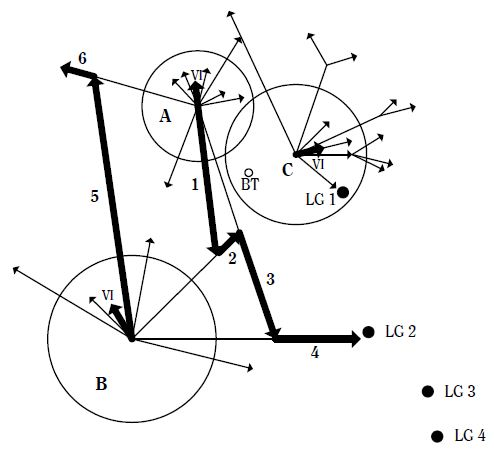
Hình 303: Sơ đồ minh họa phương pháp não công
Thêm vào đó quy tắc não công kích thích việc phát những ý tưởng “dũng cảm” vượt ra khỏi phạm vi chuyên môn hẹp, mà chính ở đấy, thường có được những ý tưởng sáng tạo ở mức cao.
Hình vẽ cũng cho thấy cơ chế quan trọng của não công: sự tương tác và phát triển các ý tưởng. A đưa ra ý tưởng 1A, B thay đổi nó đi thành 2B. Lúc đó A nhìn ý tưởng của mình bằng con mắt khác để phát triển thành 3A… Nhưng cũng có trường hợp ngược lại (chuỗi 5B – 6A), sự tương tác đẩy ý tưởng ra xa lời giải hơn.
Phương pháp não công không loại trừ những phép thử vô trật tự, trái lại, nó còn làm cho các phép thử mất trật tự hơn với hy vọng sẽ có những phép thử dẫn đến lời giải mạnh. Bằng cách này, người ta cũng khắc phục phần nào tính ì tâm lý.
- Quay ngược trở lại lịch sử, một số nhà nghiên cứu cho rằng phương pháp não công có nguồn gốc từ thế kỷ 16, 17 – thời của các cuộc thám hiểm hàng hải. Hồi đó có một quy tắc hành động: “Những lúc tàu gặp nạn hoặc bị hỏng hóc…, thuyền trưởng (hoặc người có chức vụ cao nhất trong số các thủy thủ còn sống) phải tập hợp tất cả mọi người lại để nghe họ hiến kế khắc phục. Có một trật tự nghiêm ngặt trong việc phát biểu ý kiến tại buổi làm việc tập thể này: Những người trẻ nhất, có chức vụ thấp nhất phát biểu đầu tiên, rồi cứ thế đến những người có kinh nghiệm nhiều hơn, chức vụ cao hơn, cho đến người cao nhất là thuyền trưởng. Bằng cách này, thuyền trưởng có thể thu được nhiều ý tưởng nhất để từ đó cân nhắc và ra quyết định.
Bạn đọc thử tưởng tượng, nếu thuyền trưởng là người đầu tiên phát ý tưởng, thì có lẽ sau đó không có ai trong thủy thủ đoàn dám phát biểu nữa.
- Các báo cáo về kết quả sử dụng phương pháp não công khá khả quan. Ví dụ:
- Trong vòng 25 đến 30 phút não công có thể thu nhận không dưới 50 ý tưởng, trong đó 10 - 15% các ý tưởng là có ý nghĩa.
- Trong 10 đến 45 phút não công có thể nhận được 50 đến 150 ý tưởng khác nhau, 70% nhiều hơn nếu để cho từng người làm việc riêng rẽ.
- Công ty General Electric trong một buổi não công để giải bài toán nối hai dây dẫn một cách tối ưu đã thu được 175 ý tưởng trong vòng 30 phút.
Tuy nhiên, cũng có những báo cáo cho thấy phương pháp não công không cho các kết quả như mong đợi. Ở đây có thể có nhiều nguyên nhân. Ví dụ, việc lựa chọn người vào nhóm phát ý tưởng được thực hiện một cách cảm tính, không chính xác; các quy tắc làm việc của nhóm phát ý tưởng không được thực hiện tốt; nhóm các chuyên viên có tính ì chuyên môn hẹp nên không chấp nhận những ý tưởng cấp tiến; bài toán cần giải là bài toán chuyên môn sâu nên nhóm phát ý tưởng ngay từ đầu đã không hiểu bài toán; bản thân bài toán là bài toán có mức khó cao.
- Sau khi ra đời, trong vòng 10 - 15 năm phương pháp não công được ca ngợi, thậm chí được coi là phương pháp vạn năng để giải các bài toán sáng tạo. Nhưng thực tế sử dụng dần cho thấy, phương pháp não công cũng như nhiều phương pháp tư duy sáng tạo khác có những hạn chế nhất định và không thể dùng nó giải các bài toán khó, đòi hỏi kiến thức chuyên môn sâu và rộng.
Người ta đã tìm cách cải tiến phương pháp não công. Đến nay có hàng chục biến thể của phương pháp não công như não công viết, não công ngược, não công theo giai đoạn, não công ngầm, não công cá nhân, não công hai người, não công hai kỳ, não công điện tử…
Một khuynh hướng khác phát triển não công thành các phương pháp do các nhóm nhà nghề (chuyên nghiệp), được dạy, luyện tập các phương pháp sáng tạo và thường xuyên rút kinh nghiệm, thực hiện. Ví dụ như “Phương pháp Synectics” sẽ được trình bày trong 13.3.4.1
- Nếu chọn đối tượng tiền thân là những cá nhân suy nghĩ giải bài toán một cách riêng rẽ, nhìn dưới quan điểm các thủ thuật của TRIZ, phương pháp não công là tổ hợp các thủ thuật sau:
- Nguyên tắc liên tục các tác động có ích (Thu được nhiều ý tưởng hơn và có những ý tưởng giá trị hơn so với tổng số các ý tưởng của các thành viên nếu làm việc riêng rẽ).
- Nguyên tắc kết hợp (Làm việc tập thể).
- Nguyên tắc tự phục vụ (Sử dụng hiệu ứng cầu nhảy, đường hầm do tương tác giữa đường ① và đường ② ).
- Nguyên tắc dự phòng (Hai loại người làm việc chung thường “ngáng chân” nhau; phê bình, chỉ trích làm người ta không dám phát ý tưởng).
- Nguyên tắc phân nhỏ (Chia thành hai nhóm).
- Nguyên tắc phẩm chất cục bộ (Mỗi nhóm có chức năng riêng với những năng lực riêng).
- Nguyên tắc “tách khỏi” (Nhóm các chuyên viên tách các ý tưởng triển vọng nhất ra để dùng từ quỹ các ý tưởng do nhóm phát ý tưởng chuyển giao).
13.3.3 Các phương pháp sáng tạo không phải của TRIZ dựa trên cơ sở khoa học và kinh nghiệm
Trong mục nhỏ trước, người viết đã trình bày một số phương pháp không phải của TRIZ dựa trên các kinh nghiệm. “Dựa trên các kinh nghiệm” được hiểu là khi đưa ra các phương pháp đó, các tác giả của chúng không lý giải rõ ràng các cơ sở khoa học đóng vai trò nền tảng ẩn dưới các phương pháp, mà sự lý giải đến sau, nhiều khi, nhờ những nhà nghiên cứu khác.
Các phương pháp trình bày trong mục nhỏ này là các phương pháp được chính các tác giả xây dựng một cách có ý thức về các cơ sở khoa học của chúng kết hợp với các kinh nghiệm.
Tuy nhiên, đi vào cụ thể, các phương pháp này khác nhau về loại kiến thức khoa học được chọn làm cơ sở. Ví dụ có phương pháp dựa trên thống kê, có phương pháp dựa trên lôgích hình thức, có phương pháp dựa trên tâm lý học hoặc có những phương pháp dựa trên cơ sở kết hợp vài khoa học. Chúng còn khác nhau cả về mức độ khoa học (kiến thức có thuộc khoa học chính xác hay không); về tỷ lệ giữa khoa học và kinh nghiệm; về phạm vi áp dụng (dùng cho một hay nhiều công việc có trong quá trình suy nghĩ giải quyết vấn đề và ra quyết định).
13.3.3.1 Phương pháp phân tích và biểu đồ Pareto (Pareto Analysis and Diagram Method)
Vilfredo Pareto là nhà kinh tế người Ý đã ngạc nhiên khi bằng thống kê phát hiện ra rằng 20% dân số của đất nước kiểm soát tới 80% của cải của cả nước. Những con số này về sau được khái quát lên thành nguyên tắc 80/20 (80/20 principle).
Nguyên tắc 80/20 chỉ ra rằng, nếu các kết quả xấu thu được do nhiều nguyên nhân tạo ra, thì trong đó chỉ 20% số nguyên nhân đã tạo ra tới 80% các kết quả xấu. Điều này có nghĩa, khi giải bài toán khắc phục các kết quả xấu, người giải, trước hết, cần phân tích để tìm ra và tập trung khắc phục 20% số nguyên nhân này, vì chúng đóng góp vào các kết quả xấu nhiều nhất.
Nguyên tắc 80/20 cũng cho rằng, nếu bạn đang có nhiều vấn đề gây rắc rối cho bạn thì tới 80% số rắc rối là chỉ do 20% số vấn đề gây ra. Do vậy, một lần nữa, bạn cần phân tích để tìm ra và tập trung ưu tiên giải quyết 20% số vấn đề này trước, vì chúng gây ra nhiều rắc rối nhất.
Các kết quả thu được từ sự phân tích nói trên (phân tích Pareto) được biểu diễn dưới dạng đồ thị đặc biệt (gọi là biểu đồ Pareto) giúp người giải bài toán dễ nhận dạng, xác định những nguyên nhân (vấn đề) lớn nhất, quan trọng nhất cần loại bỏ (giải quyết) để đạt mục đích và phân biệt chúng với những nguyên nhân (vấn đề) thông thường khác.
Dưới đây người viết trình bày cách sử dụng phương pháp phân tích và biểu đồ Pareto thông qua một ví dụ cụ thể:
“Công ty X sản xuất một loại thức ăn nóng phát hiện ra các vấn đề sau và chúng được biểu diễn bằng đồ thị trên Hình 304.
| Các vấn đề | Số lượng hộp | |
|---|---|---|
| A. | Chất lượng in ấn trên hộp không đạt | 10.000 |
| B. | Trọng lượng thức ăn trong hộp quá trọng lượng tiêu chuẩn | 30.000 |
| C. | Vỏ hộp bị hư trong quá trình vận chuyển | 2.000 |
| D. | Lớp cách nhiệt đựng thức ăn bị hở | 25.000 |
| E. | Không có quà khuyến mãi trong hộp | 50.000 |
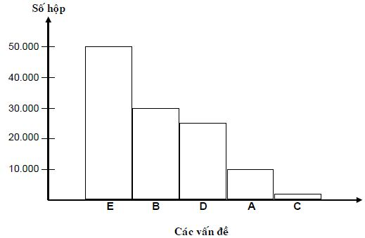
Hình 304: Các vấn đề xảy ra với các hộp đựng thực phẩm
Nếu chỉ căn cứ vào số lượng các hộp có khuyết tật, người ta có thể giải quyết các vấn đề được phát hiện ra theo thứ tự E – B – D – A – C như mô tả trên Hình 304.
Phân tích Pareto đòi hỏi phải xem xét giá trị của việc khắc phục các khuyết tật chứ không phải số lượng của chúng. Trong trường hợp Công ty X nói trên, nếu quy các khuyết tật này về lợi nhuận mất mát, người ta thu được bức tranh khác về các vấn đề (xem bảng tiếp theo đây và biểu đồ Pareto trên Hình 305).
| Các vấn đề | Lợi nhuận bị mất | |
|---|---|---|
| A. | Chất lượng in ấn trên hộp không đạt | 1.000 USD |
| B. | Trọng lượng thức ăn trong hộp quá trọng lượng tiêu chuẩn | 6.000 USD |
| C. | Vỏ hộp bị hư trong quá trình vận chuyển | 7.000 USD |
| D. | Lớp cách nhiệt đựng thức ăn bị hở | 78.000 USD |
| E. | Không có quà khuyến mãi trong hộp | 8.000 USD |
| Tổng cộng : | 100.000 USD |
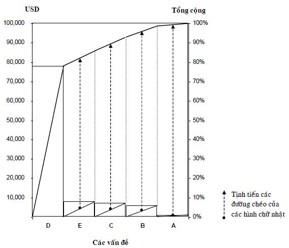
Hình 305: Biểu đồ Pareto cho các vấn đề của Công ty X
Biểu đồ Pareto cho thấy rõ, Công ty X phải ưu tiên giải bài toán D trước rồi lần lượt đến các bài toán E – C – B – A”.
Thông qua ví dụ về Công ty X nêu ở trên, chúng ta có thể thấy việc phân tích và xây dựng biểu đồ Pareto được tiến hành theo các bước sau:
- Phát hiện các vấn đề đang có và phân loại chúng theo một thông số nhất định:
“Công ty X phát hiện ra năm vấn đề và phân loại chúng theo khuyết tật của hộp đựng sản phẩm khi so với các tiêu chuẩn chất lượng đã định”.
- Thu thập các dữ liệu liên quan đến các vấn đề được phát hiện ở bước 1 dưới dạng định lượng:
“Công ty X thu được các con số về số lượng các hộp tương ứng với năm loại khuyết tật (năm vấn đề). Điều này thể hiện trên bảng và đồ thị của Hình 304”.
- Quy đổi các số liệu định lượng phản ánh vấn đề thu được ở bước 2 thành các số liệu định lượng phản ánh giá trị của lời giải nếu vấn đề được giải quyết:
“Trong trường hợp của Công ty X, các số liệu định lượng phản ánh vấn đề là số lượng các hộp bị khuyết tật, “giá trị” được chọn là “lợi nhuận bị mất sẽ không bị mất nữa” nếu các khuyết tật (các vấn đề) được khắc phục. Các số liệu định lượng phản ánh “giá trị” này được liệt kê trong bảng đi kèm với Hình 305”.
- Xây dựng biểu đồ Pareto (xem Hình 305):
- Kẻ trục hoành và hai trục tung (bên trái và bên phải) trên một tờ giấy thích hợp với việc vẽ đồ thị.
- Chia trục hoành thành những phần bằng nhau, mỗi phần ứng với một vấn đề (trong trường hợp Công ty X, trục hoành có năm phần ứng với năm vấn đề).
- Chia độ trục tung sao cho đỉnh của nó ứng với tổng số giá trị (trong trường hợp Công ty X, con số này là 100.000 USD).
- Biểu diễn các con số giá trị theo dạng cột, bắt đầu từ trục tung bên trái với con số giá trị lớn nhất rồi nhỏ dần về phía bên phải cho đến hết (trong trường hợp Công ty X, các con số này lần lượt là D: 78.000; E: 8.000; C: 7.000; B: 6.000 và A: 1.000 USD).
- Xem mỗi cột là một hình chữ nhật. Hãy vẽ đường chéo của cột thứ nhất. Tịnh tiến đường chéo của cột thứ hai theo chiều mũi tên sao cho điểm đầu của đường chéo cột thứ hai trùng với điểm cuối của đường chéo cột thứ nhất. Tiếp tục làm như thế đối với các đường chéo của các cột còn lại.
- Điểm cuối của đường chéo của cột cuối cùng ứng với điểm trên trục tung bên phải là 100%.
NHẬN XÉT:
- Việc giải bài toán đòi hỏi phải có những nguồn lực hoặc chi phí (hiểu theo nghĩa rộng nhất) nhất định, trong khi những khả năng chi phí hiện có thường không đủ để người giải cùng một lúc giải tất cả các bài toán đang gặp (trong trường hợp của Công ty X là năm bài toán). Do vậy, việc chọn đúng tình huống vấn đề xuất phát ưu tiên, bài toán cụ thể đúng cần giải (xem mục 6.2 Mô hình quá trình suy nghĩ giải quyết vấn đề và ra quyết định của quyển hai) luôn là công việc quan trọng, mang ý nghĩa chiến lược trong PPLSTVĐM.
Phương pháp phân tích và biểu đồ Pareto chỉ là một trong những đóng góp để thực hiện công việc vừa nêu.
Phương pháp phân tích và biểu đồ Pareto được xây dựng dựa trên “nguyên tắc 80/20”. Bạn đọc không nên hiểu những con số này một cách chính xác tuyệt đối, mà nên nắm “triết lý” của nó: “Phần thiểu số các vấn đề (các nguyên nhân) lại gây ra phần đa số các rắc rối (các kết quả xấu). Cần phát hiện đúng phần thiểu số các vấn đề (các nguyên nhân) cụ thể này để ưu tiên giải quyết trước. Lúc đó, chi phí giải bài toán mới đem lại hiệu quả cao nhất”.
Theo bước 1 và 2 của phương pháp phân tích và biểu đồ Pareto, người giải phải phân loại các bài toán được phát hiện ra theo một thông số nhất định và thu thập các dữ liệu liên quan dưới dạng định lượng (ví dụ, xem bảng và đồ thị trên Hình 304). Thực chất đây là công việc theo dõi, điều tra, thống kê chỉ thích hợp cho các vấn đề hay lặp đi lặp lại với số lượng lớn. Ví dụ, những vấn đề này thường xảy ra trong sản xuất đại trà. Không phải ngẫu nhiên, phương pháp phân tích và biểu đồ Pareto là một trong sáu phương pháp thống kê thuộc bộ bảy công cụ (Seven Tools) được dùng trong quản lý chất lượng toàn diện (Total Quality Management hoặc còn gọi là Total Quality Control), xem 13.3.4.5 của quyển sáu này.
Bước 3 của phương pháp phân tích và biểu đồ Pareto đòi hỏi người sử dụng phương pháp phải thực hiện việc quy đổi các số liệu định lượng thu được ở bước 2 thành các số liệu định lượng phản ánh giá trị của lời giải nếu vấn đề cho trước được giải quyết.
Trong trường hợp của Công ty X, giá trị được chọn là tiền (lợi nhuận). Điều này hiểu được vì đây là công việc kinh doanh và tiền là giá trị thiết thân đối với doanh nghiệp. Tuy nhiên, việc quy đổi từ khuyết tật của các hộp thành lợi nhuận bị mất như thế nào thì phân tích Pareto không nói rõ.
Bạn đọc có thể đoán việc quy đổi này có lẽ cũng dựa trên thống kê hoặc có phương pháp tính toán riêng dành cho Công ty X hoặc loại công ty giống Công ty X. Như vậy, không có đại lượng giá trị chung, cách quy đổi chung cho tất cả các loại bài toán. Nói cách khác, tùy các bài toán cụ thể, người giải cần xác định đại lượng giá trị cụ thể (trong nhiều trường hợp không phải là tiền) và cách quy đổi cụ thể, từ đó mới có thể biết được bài toán nào cần ưu tiên giải trước.
Ngoài ra, người viết muốn lưu ý bạn đọc, thực chất của quá trình quy đổi thực hiện trong bước 3 là quá trình phát hiện và xác định mối quan hệ nhân – quả giữa các khuyết tật (nguyên nhân) và sự thiệt hại về giá trị (kết quả) mang tính định lượng. Về quan hệ nhân – quả, bạn đọc có thể đọc lại các phần liên quan đến quan hệ nhân – quả trong mục nhỏ 8.5.3 Suy luận quy nạp và điểm 12 trong mục nhỏ 10.2.2 Những điểm cần lưu ý về tư duy hệ thống của quyển ba. Phương pháp biểu đồ xương cá được trình bày tiếp theo đây cũng liên quan đến việc phát hiện và xác định mối quan hệ nhân – quả.
- Các bài toán (các nguyên nhân) nói đến trong phương pháp phân tích và biểu đồ Pareto cần được hiểu là các bài toán (các nguyên nhân) độc lập dẫn đến các rắc rối (các kết quả xấu) độc lập. Nếu các bài toán (các nguyên nhân) không độc lập mà liên kết với nhau thì phương pháp phân tích và biểu đồ Pareto có thể không cho kết quả chính xác.
13.3.3.2 Phương pháp biểu đồ xương cá (Fishbone Diagram Method)
Phương pháp biểu đồ xương cá hay còn gọi là phương pháp biểu đồ nhân – quả (Cause and Effect Diagram Method) được Kaoru Ishikawa, người Nhật đưa ra vào đầu những năm 1950 (có nguồn cho là năm 1943).
Phương pháp biểu đồ xương cá có mục đích thiết lập dưới dạng hình ảnh dễ hiểu mối quan hệ giữa các nguyên nhân và kết quả để từ đó xác định nguyên nhân nào cần tập trung tác động trước nhằm cải thiện kết quả. Đây cũng là một trong bảy công cụ (Seven Tools) được sử dụng rộng rãi trong quản lý chất lượng, tuy phương pháp biểu đồ xương cá không phải là phương pháp thống kê (xem NHẬN XÉT 3 trong 13.3.3.1 Phương pháp phân tích và biểu đồ Pareto).
Biểu đồ nhân – quả Ishikawa được xây dựng như sau:
- Vẽ đường mũi tên nằm ngang chạy suốt gần hết chiều rộng của tờ giấy với đầu mũi tên chỉ vào tên gọi của vấn đề (kết quả muốn khắc phục khuyết tật nào đó):
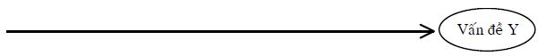
Đường mũi tên này được ví như là xương sống (backbone) của con cá.
Bằng suy luận lôgích hình thức hoặc hệ thống (xem các phần liên quan đến quan hệ nhân – quả trong mục nhỏ 8.5.3 Suy luận quy nạp và điểm 12 trong mục nhỏ 10.2.2 Những điểm cần lưu ý về tư duy hệ thống của quyển ba) và nếu cần, cả phương pháp não công (xem 13.3.2.3 Phương pháp não công (Brainstorming Method)), người giải liệt kê các nguyên nhân có thể có gây ra vấn đề Y (hoặc các lời giải có thể có để giải quyết vấn đề Y). Ví dụ, người giải tìm ra 5 nguyên nhân (NN) hoặc 5 lời giải (LG).
Những nguyên nhân (lời giải) này được biểu diễn thành những đường mũi tên nhánh, nghiêng với đường xương sống 45°:
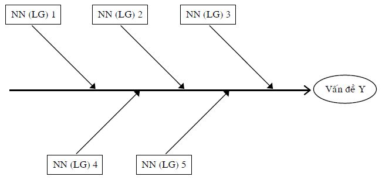
- Tiếp theo, người giải cần tìm hiểu mỗi nguyên nhân (hoặc lời giải) có phải là kết quả của những nguyên nhân (hoặc lời giải) nhỏ hơn không? Nếu có, thì người giải phải chi tiết hóa các đường mũi tên nhánh bằng cách coi đường mũi tên nhánh là xương sống mới và thực hiện các công việc được mô tả trong bước 2 và 3 cho xương sống mới này.
Nếu cần thiết, người giải lại tiếp tục chi tiết hóa theo nguyên tắc vừa trình bày. Kết quả, người giải có thể thu được biểu đồ có hình dạng xương cá như mô tả trên Hình 306.
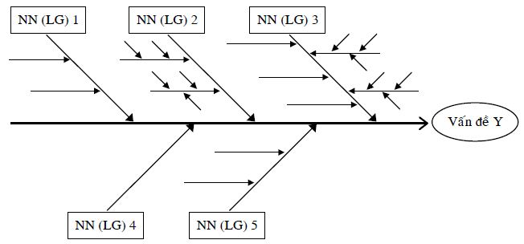
NN – Nguyên nhân
LG – Lời giải
Hình 306: Dạng chung của biểu đồ xương cá
Tiếp theo đây người viết dẫn ra hai biểu đồ xương cá cụ thể. Biểu đồ thứ nhất (xem Hình 307) lấy từ lĩnh vực quản lý chất lượng và biểu đồ thứ hai (xem Hình 308) minh họa việc tổ chức các ý tưởng thu được nhằm giải quyết vấn đề theo biểu đồ xương cá.
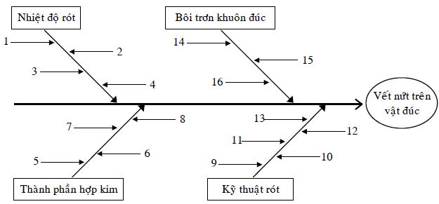
Giải thích:
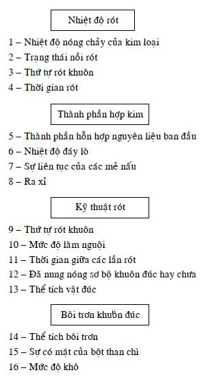
Hình 307: Biểu đồ xương cá phản ánh các yếu tố (nguyên nhân) ảnh hưởng đến chất lượng vật đúc (kết quả)
Sau khi xây dựng biểu đồ nhân – quả, người giải (thường là cả một tập thể) kiểm tra từng thông số một (nguyên nhân) xem có đạt chuẩn không. (Các) thông số nào không đạt chuẩn chính là (các) nguyên nhân gây ra khuyết tật: Vết nứt trên vật đúc.
Biểu đồ xương cá còn được dùng để biểu diễn một cách có tổ chức các ý tưởng thu được sau giai đoạn phát ý tưởng dưới dạng hình ảnh. Điều này giúp người giải có được cái nhìn tổng thể để từ đó góp phần quyết định dùng những ý tưởng nào (tấn công bài toán từ phía nào).
Ví dụ, có bài toán sau:
“Một số ao, hồ trong vùng có mùi khó chịu do các vật không mong muốn rơi vào và bị phân hủy. Hãy đưa ra các ý tưởng giúp giữ ao, hồ được làm sạch khỏi những vật này”.
Để ngắn gọn, chúng ta sẽ gọi bài toán này là bài toán “làm sạch ao, hồ”. Giả sử sau khi thực hiện buổi não công, người ta thu được tất cả 11 ý tưởng mà chưa phân tích, đánh giá:
- Sử dụng cần cẩu lấy các vật lạ ra khỏi ao, hồ.
- Thuyền được thiết kế riêng cho việc lấy các vật lạ.
- Sử dụng các bồn chứa nước thay cho ao, hồ.
- Thay đổi các tính chất gây bẩn của các vật lạ và chúng chìm xuống đáy.
- Dùng trực thăng lấy các vật lạ.
- Làm nước trong ao, hồ lưu chuyển và nghiền nát các vật lạ.
- Làm cạn nước ao, hồ.
- Chia ao, hồ thành các ao, hồ nhỏ hơn và đậy chúng lại.
- Dùng hàng rào điện.
- Dùng các con “bù nhìn”.
- Dùng cánh tay máy để lấy các vật lạ.
Dựa trên 11 ý tưởng cụ thể, người giải phải đưa ra các ý tưởng chung hơn để sắp xếp 11 ý tưởng cụ thể vào những ý tưởng chung hơn này. Ví dụ, các ý tưởng chung hơn được xác định là:
- Sử dụng các thiết bị để phục hồi ao, hồ bằng cách lấy các vật lạ ra khỏi ao, hồ.
- Thay đổi quá trình / Tái thiết kế đối với ao, hồ và các vật lạ.
- Ngăn chặn không cho các vật lạ xâm nhập ao, hồ.
11 ý tưởng cụ thể được sắp xếp vào ba ý tưởng chung hơn nói trên:
- Sử dụng “các thiết bị phục hồi” chứa các ý tưởng 1, 2, 5, 11.
- “Thay đổi quá trình / Tái thiết kế” đối với ao, hồ và các vật lạ chứa các ý tưởng 3, 4, 6, 7.
- “Ngăn chặn” không cho các vật lạ xâm nhập vào ao, hồ chứa các ý tưởng 8, 9, 10.
Hình 308 dưới đây cho thấy biểu đồ xương cá biểu diễn các ý tưởng giải bài toán “làm sạch ao, hồ” từ dạng lời phát biểu (ngôn ngữ) thành hình ảnh với sự liên kết giữa chúng.
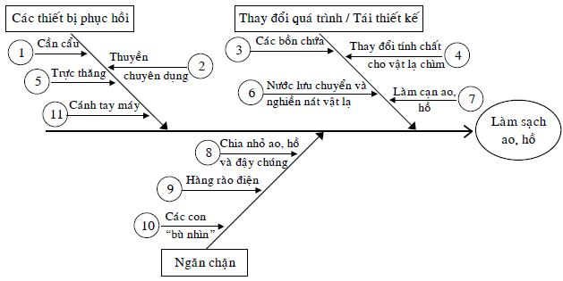
Hình 308: Biểu đồ xương cá biểu diễn các ý tưởng thu được sau buổi não công giải bài toán “Làm sạch ao, hồ”
NHẬN XÉT:
Trong nhiều công việc cần thực hiện của quá trình giải quyết vấn đề và ra quyết định có công việc “chẩn đoán bệnh của bài toán”, mà thực chất, là đi tìm các nguyên nhân tạo nên các nhược điểm cần phải khắc phục, như mục đích bài toán đề ra. Nói cách khác, đây cũng chính là công việc phát hiện và xác định các mối quan hệ nhân – quả để từ đó “chữa trị” bằng cách đưa ra những biện pháp thích hợp tác động lên nguyên nhân.
Để phát hiện và xác định các mối quan hệ nhân – quả, nhiều khoa học đã phát triển các nguyên tắc, phương pháp (ví dụ, có thể xem các phần liên quan đến quan hệ nhân – quả trong mục nhỏ 8.5.3 Suy luận quy nạp và điểm 12 trong mục nhỏ 10.2.2 Những điểm cần lưu ý về tư duy hệ thống của quyển ba). Như vậy phương pháp biểu đồ xương cá chỉ là một trong nhiều phương pháp có mục đích phát hiện, xác định và biểu diễn các mối quan hệ nhân – quả dưới dạng hình vẽ.
So với một số các phương pháp khác, phương pháp biểu đồ xương cá có ưu điểm là “hình ảnh hóa” công việc phát hiện và xác định các mối quan hệ nhân – quả. Điều này rất quan trọng, vì như đã biết (xem mục nhỏ 6.4.3 Ngôn ngữ, ký hiệu, hình vẽ của quyển hai) tư duy hình ảnh (Visual Thinking) có những ưu việt mà tư duy bằng ngôn ngữ (Verbal Thinking) không thể so sánh được.
Tuy nhiên, bạn đọc không nên quan niệm “xương cá” là “hình ảnh duy nhất” của các quan hệ nhân – quả. Điều này có nghĩa, bạn còn có thể sáng chế ra các “hình ảnh” khác mà bạn thấy thích hợp hơn đối với mình.
Mặt khác, biểu đồ xương cá có thể mở rộng dùng cho các quan hệ nói chung chứ không nhất thiết chỉ có quan hệ nhân – quả. Trong ý nghĩa này, các đường mũi tên được hiểu theo các mối quan hệ đó.
Bạn đọc thử tự mình biểu diễn các ý tưởng thu được trong buổi não công giải bài toán “Phân loại cà chua” (xem 13.3.2.3 Phương pháp não công) thành biểu đồ xương cá tương tự như Hình 308.
Tương tự như vậy, bạn cũng có thể biểu diễn mỗi danh sách các câu hỏi kiểm tra thành biểu đồ xương cá.
Nếu so sánh biểu đồ xương cá dạng chung (xem Hình 306) với sơ đồ hệ thống dạng chung (xem Hình 136 trong điểm 12, mục nhỏ 10.2.2 Những điểm cần lưu ý về tư duy hệ thống) thì biểu đồ xương cá còn chưa biểu diễn, do vậy, chưa tính đến một số mối quan hệ nhân – quả phi tuyến (ví dụ, quan hệ phản hồi chẳng hạn), cũng như hiệu ứng lan tỏa hệ thống.
Có phần tương tự như vậy nếu so sánh biểu đồ xương cá với “biểu diễn hệ thống” dưới dạng không gian hệ thống (xem Hình 132 và văn bản kèm theo trong mục nhỏ 10.2.1 Một số khái niệm cơ bản và ý tưởng chung về hệ thống của quyển ba), việc chi tiết hóa các đường mũi tên nhánh trên biểu đồ xương cá, người xây dựng biểu đồ, thực tế, đã chuyển từ thang bậc hệ thống mức hệ (xương sống con cá) sang thang bậc hệ thống mức hệ dưới để phân tích. Tuy nhiên, cách phân tích này của biểu đồ xương cá không rõ ràng và đầy đủ như phân tích hệ thống.
13.3.3.3 Phương pháp bản đồ trí óc (Mind-mapping Method)
Phương pháp bản đồ trí óc (hay còn gọi là phương pháp bản đồ tư duy) được Tony Buzan, người Anh đưa ra vào những năm 1970.
Phương pháp bản đồ trí óc được xây dựng nhằm mục đích:
- Kết hợp tốt hơn hoạt động của cả hai bán cầu não: Bán cầu não trái và bán cầu não phải.
Về mặt nguyên tắc, cả hai bán cầu não làm việc phối hợp với nhau như một đội (team) thống nhất, rất giúp ích cho tư duy sáng tạo, mặc dù, bán cầu não này phụ trách một số hoạt động nhất định, có phần trội hơn bán cầu não kia.
Cụ thể, bán cầu não trái thiên về xử lý ngôn ngữ; các con số; lôgích; những gì xảy ra tuần tự lần lượt (sequence); tính chất nối tiếp nhau theo đường thẳng – tuyến tính (linearity); công việc phân tích; công việc liệt kê…
Bán cầu não phải thiên về xử lý những gì thuộc về nhịp điệu; không gian; bức tranh tổng quát; ước mơ; tưởng tượng; màu sắc; chiều kích;…
Có một thực tế là, phần lớn những gì mọi người được dạy, học và làm lại thiên về sử dụng não trái nhiều hơn. Ví dụ, bạn viết, đọc theo đường thẳng từ trái sang phải; rất nhiều thứ xảy ra tuần tự, lần lượt; rất nhiều kiến thức dựa trên lôgích hình thức, phân tích.
Theo T. Buzan, phương pháp bản đồ trí óc giúp người sử dụng khai thác cả tiềm năng của não phải để não trái và não phải làm việc hài hòa. Do vậy, bộ óc làm việc tốt hơn, quá trình suy nghĩ diễn ra hiệu quả hơn.
- Mặt khác, hoạt động của bản thân bộ óc con người, không phân biệt não trái, não phải, là hoạt động tâm – sinh lý của hệ thần kinh trung ương nói chung. Nhìn dưới góc độ tâm lý học, ở đây có nhiều hiện tượng tâm lý tham gia (xem Chương 6: Tư duy sáng tạo: Nhìn theo góc độ thông tin – tâm lý của quyển hai).
T. Buzan chủ trương sử dụng hai hiện tượng tâm lý mà ai cũng có sẵn. Đó là liên tưởng (association) và tưởng tượng (imagination). Về hai hiện tượng tâm lý này, bạn đọc có thể đọc lại hai mục nhỏ 6.4.6 Liên tưởng và 6.4.9 Trí tưởng tượng của quyển hai.
Phương pháp bản đồ trí óc đòi hỏi người sử dụng phải thực hiện các bước sau để lập bản đồ trí óc:
Ở giữa tờ giấy xoay ngang (xoay ngang để cảm thấy rộng, thuận tiện khi viết, vẽ) viết hoặc/ và vẽ chủ đề, ý tưởng chính (main topic, idea) của bạn. T. Buzan thường thiên về vẽ hơn. Đây sẽ là hình ảnh trung tâm của bản đồ trí óc.
Vẽ các nhánh lớn từ hình ảnh trung tâm. Những nhánh này gọi là những nhánh chính. Trên những nhánh chính, bạn viết hoặc/và vẽ những chủ đề, ý tưởng liên quan nhỏ hơn so với hình ảnh trung tâm, có được nhờ liên tưởng.
Từ mỗi chủ đề, ý tưởng của nhánh chính, thu được ở bước 2, vẽ các nhánh cấp hai.
Mỗi nhánh cấp hai lại phản ánh dưới dạng viết hoặc/ và vẽ chủ đề, ý tưởng liên quan nhỏ hơn nữa (so với nhánh chính), có được nhờ liên tưởng.
- Tương tự như ở bước 3, vẽ các nhánh cấp ba, cấp bốn…, nếu bạn thấy cần thiết.
T. Buzan cho rằng, các nhánh nối nhau phản ánh cách làm việc liên tưởng của bộ não và bản đồ trí óc hoạt động giống như cách bộ não có cấu tạo từ mạng lưới của tế bào thần kinh liên kết nhau hoạt động.
T. Buzan đề nghị trong khi xây dựng bản đồ trí óc, bạn cần sử dụng các bút nhiều màu; nếu viết, bạn cần dùng các từ ngữ ngắn gọn, phản ánh đúng nghĩa cần thiết nhất (các từ chìa khóa – keywords); cần vẽ các hình ở những nơi có thể vẽ được, không nhất thiết phải vẽ thật giống, thật đẹp; nếu có nhu cầu, bạn cần dán thêm các tờ giấy vào tờ giấy đầu tiên, nối dài, mở rộng để có thêm chỗ viết, vẽ; các nhánh cần vẽ cong chứ không phải vẽ thành đường thẳng để tránh sự buồn tẻ.
Giả sử bạn chọn chủ đề chính (hình ảnh trung tâm) là “hoa quả” (trái cây), bản đồ trí óc dành cho chủ đề “hoa quả” (trái cây) được xây dựng lần lượt theo các bước đã mô tả ở trên như sau:
- Vẽ, viết hình ảnh trung tâm “hoa quả” (trái cây) ở chính giữa tờ giấy xoay ngang:
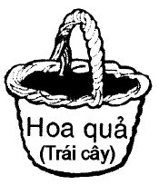
- Thêm vào các nhánh chính:
Số lượng các nhánh chính có thể nhiều tùy ý, phụ thuộc vào sự liên tưởng của bạn. Trong trường hợp cụ thể này dùng để minh họa cách lập bản đồ trí óc, giả sử, chọn số nhánh chính là 5. Ví dụ, “hoa quả” làm bạn liên tưởng đến năm loại: Cam, táo, chuối, anh đào, dứa (thơm).
- Bản đồ trí óc được lập dành cho chủ đề “hoa quả” tạm thời giới hạn ở các nhánh cấp hai có dạng (xem Hình 309):
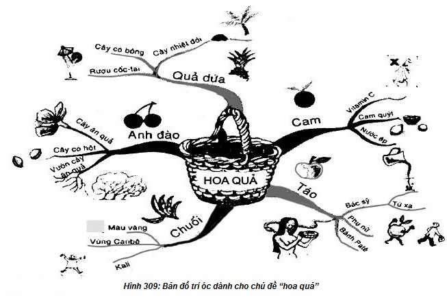
Nhân đây, người viết dẫn ra hai bản đồ trí óc liên quan đến “rau củ”, “hoa quả” và “sức khỏe” của X.H. lập, đăng trên báo “Thanh Niên”, số ra ngày 20 tháng hai 2008 (xem Hình 310). Những người khác nhau có thể liên tưởng khác nhau và đưa ra các bản đồ trí não riêng cho mình, tuy hình ảnh trung tâm có thể giống nhau.
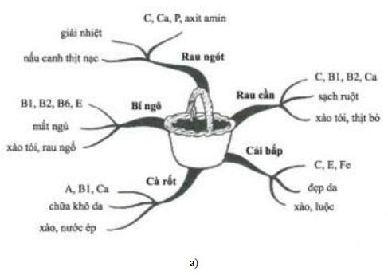
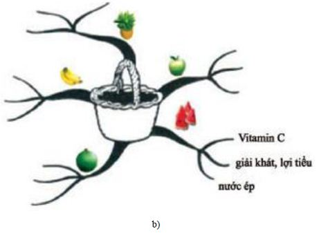
Hình 310: Bản đồ trí óc do X.H. xây dựng dành cho việc ăn uống: a) Hình ảnh trung tâm: Rau củ; b) Hình ảnh trung tâm: Hoa quả (trái cây)
Trong các cuốn sách của T. Buzan có rất nhiều các bản đồ trí óc dành cho các chủ đề khác nhau để bạn tham khảo. Ví dụ, trong cuốn sách nhỏ “How to Mind Map” (bản tiếng Việt có tên gọi “Lập bản đồ tư duy”), ngoài bản đồ trí óc về chủ đề “hoa quả” (xem Hình 309), bạn còn có thể tìm thấy các bản đồ trí óc dành cho một bài toán; công việc thuyết trình; lập kế hoạch cho các công việc của gia đình; kỳ nghỉ lãng mạn cuối tuần; khởi sự một dự án kinh doanh mới; mua sắm; tương lai lý tưởng của bạn.
NHẬN XÉT:
- Trong lĩnh vực PPLSTVĐM, phương pháp bản đồ trí óc chỉ là một trong các phương pháp sáng tạo sử dụng liên tưởng, tưởng tượng và biểu diễn việc sắp xếp, tổ chức thông tin (hiểu theo nghĩa rộng) thành hình ảnh, chứ không phải là phương pháp duy nhất.
Nhìn dưới quan điểm sử dụng liên tưởng và trí tưởng tượng, phương pháp bản đồ trí óc giống phương pháp não công (xem 13.3.2.3 Phương pháp não công), phương pháp đối tượng tiêu điểm (sẽ trình bày tiếp sau phương pháp bản đồ trí óc),… với một bên chú ý biểu diễn thông tin bằng hình ảnh, bên kia – bằng ngôn ngữ.
Nhìn dưới quan điểm sử dụng liên tưởng, tưởng tượng như những hiện tượng tâm lý mà ai cũng có và biểu diễn kết quả thành hình ảnh thì phương pháp bản đồ trí óc của T. Buzan khá giống phương pháp biểu đồ xương cá của K. Ishikawa. Sự khác nhau của hai phương pháp này, chủ yếu, là về hình thức thể hiện hình vẽ dưới dạng các quy tắc vẽ hình.
Do vậy, nếu bạn biểu diễn biên bản não công từ ngôn ngữ thành hình ảnh theo các quy tắc của K. Ishikawa, bạn có biểu đồ xương cá (xem Hình 308và văn bản kèm theo trong 13.3.3.2 Phương pháp biểu đồ xương cá).
Bây giờ, bạn cũng có thể biến đổi chính biên bản não công dưới dạng ngôn ngữ đó thành hình ảnh theo các quy tắc của T. Buzan, bạn sẽ có bản đồ trí óc (xem Hình 311 dưới đây):
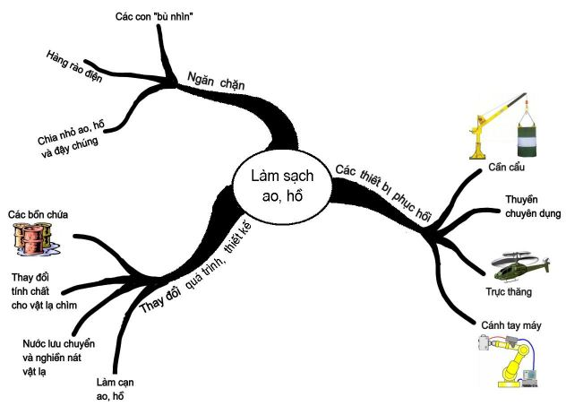
Hình 311: Bản đồ trí óc dành cho giải bài toán “làm sạch ao, hồ”
Đến đây, bạn có thể thấy sự tương ứng: Biểu đồ xương cá có thể chuyển đổi thành bản đồ trí óc (xem Hình 308 và Hình 311) và ngược lại bản đồ trí óc thành biểu đồ xương cá (xem Hình 309 ở phần trên và Hình 312 dưới đây):
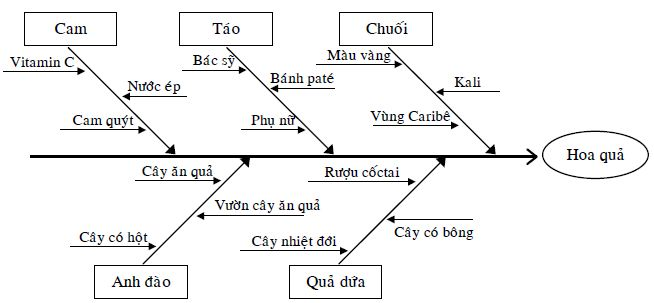
Hình 312: Biểu đồ xương cá về “hoa quả”
Rộng hơn, nhìn dưới quan điểm biểu diễn sắp xếp, tổ chức thông tin từ ngôn ngữ thành hình ảnh của phương pháp biểu đồ xương cá và phương pháp bản đồ trí não, bạn có thể “phiên dịch” bất kỳ văn bản có sẵn nào (trong đó có các danh sách các câu hỏi kiểm tra) thành biểu đồ xương cá hoặc bản đồ trí não. Trong ý nghĩa này, nhiều bản đồ trí não, về thực chất, chỉ là các danh sách các câu hỏi kiểm tra biểu diễn dưới dạng hình ảnh theo quy tắc của T. Buzan.
Nhìn dưới quan điểm “biểu diễn hệ thống” dưới dạng không gian hệ thống (xem Hình 132 và văn bản kèm theo trong mục nhỏ 10.2.1 Một số khái niệm cơ bản và ý tưởng chung về hệ thống của quyển ba), việc phân nhánh (từ hình ảnh trung tâm đến các nhánh chính, rồi các nhánh cấp hai, cấp 3…) trong phương pháp bản đồ trí não, về thực chất, là sự phân tích đi từ thang bậc hệ thống mức cao xuống thang bậc hệ thống mức thấp với sự thay đổi cách xem xét. Tuy nhiên, cách phân tích này của phương pháp bản đồ trí não không rõ ràng và đầy đủ như phân tích hệ thống. Do vậy, phương pháp bản đồ trí não chỉ thích hợp cho các hệ thống đơn giản, các bài toán có mức khó thấp.
Đọc một số quyển sách của T. Buzan (xem phần Tài liệu tham khảo tiếng Anh ở cuối quyển sách này), người viết nhận thấy, các khái niệm được sử dụng trong các sách đó không được định nghĩa, giải thích rõ ràng. Những khái niệm cơ bản của chính phương pháp bản đồ trí não sử dụng như liên tưởng, tưởng tượng đến những khái niệm khác của lĩnh vực PPLSTVĐM như sáng tạo, đổi mới, vấn đề (bài toán), tư duy sáng tạo, giải quyết vấn đề và ra quyết định…, được sử dụng trong các quyển sách đó, ở các mức độ khác nhau, đều mù mờ.
Nhân đây, người viết dẫn ra một đoạn (xem từ trang 96 đến 98 của quyển sách “Lập bản đồ tư duy”) T. Buzan nói về sáng tạo:
“Giải phóng sức mạnh sáng tạo trong bạn bằng bản đồ tư duy:
Bạn có cảm thấy mình có tính sáng tạo không?
Trong chương này, Bản đồ Tư duy chỉ ra rằng không những sáng tạo mà bạn còn cực kỳ sáng tạo. Để làm điều này, bạn hãy quay lại bài tập trong chương 2, bài tập về “Trái cây” (Fruit). Xem xét lại Bản đồ Tư duy của bạn hoặc sử dụng Bản đồ Tư duy đơn giản về “Trái cây” (Fruit) trong bảng 1. Có 5 nhánh chính phát triển ra từ hình ảnh trung tâm, với 3 nhánh nhỏ hơn mở rộng ra từ mỗi nhánh cho một sự liên tưởng cấp độ 3. Bằng việc sử dụng trí tưởng tượng, khả năng liên tưởng bộ não của mình, bạn đã thêm các từ khóa, các hình ảnh trọng tâm cho các nhánh. Điều này có vẻ như là đơn giản, nhưng trên thực tế bộ não của bạn đã làm được điều gì đó thực sự sâu sắc. Bạn đưa ra một khái niệm đơn giản, “Trái cây” (Fruit), và phát triển từ năm ý tưởng chính. Như thế, bạn đã nhân lên sức sáng tạo của mình gấp 5 lần. Tức là làm tăng thêm 500% sức sáng tạo.
Tiếp theo, bạn đưa ra năm ý tưởng sáng tạo mới mẻ, và từ mỗi ý tưởng trong 5 ý tưởng mới đó, bạn tạo thêm ba ý tưởng mới. Giống như trên, khả năng sáng tạo của bạn tăng gấp ba lần hoặc tăng thêm 300% ! Khi bạn bắt đầu từ một ý tưởng, và tạo ra 15 ý tưởng mới, nghĩa là bạn đã tăng thêm 1500% sức sáng tạo của bộ não!
Bây giờ hãy tự hỏi mình: “Liệu tôi có thể tạo ra 15 từ từ mỗi 5 từ khóa ban đầu?”. Tất nhiên là bạn có thể! Điều đó tức là sẽ có 75 ý tưởng được tạo ra!
Bạn có thể thêm vào năm từ khác từ mỗi ý tưởng đó không? Lại một câu trả lời rằng – tất nhiên bạn có thể – tức là tạo ra 375 ý tưởng khác! Hay điều đó tương đương với 37 500% khả năng sáng tạo so với khi bạn bắt đầu! và tiếp theo nữa và tiếp theo nữa? Tất nhiên là bạn có thể! Và sau bao lâu? Mãi mãi! Bao nhiêu ý tưởng được tạo ra? Một con số gần như vô tận!
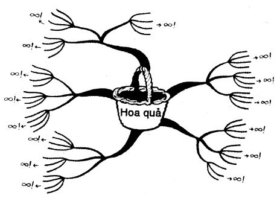
Bản đồ tư duy thể hiện rằng bạn có khả năng sáng tạo vô hạn”.
Qua đoạn này, bạn thấy T. Buzan quan niệm sáng tạo là gì? Sức sáng tạo là gì?
Phải chăng T. Buzan cho rằng sáng tạo là ý tưởng có được nhờ sự liên tưởng, tưởng tượng mà không nhất thiết ý tưởng đó phải có đồng thời tính mới và tính ích lợi. Như vậy, từ “hoa quả” (trái cây) liên tưởng ra được “cam”, “táo”, “chuối”, “anh đào” và “quả dứa” (xem Hình 309) tức là bạn có 5 ý tưởng sáng tạo. Bạn càng liên tưởng ra được càng nhiều ý tưởng, sức sáng tạo của bạn càng lớn. Cách hiểu này hoàn toàn khác cách hiểu của nhiều nhà nghiên cứu trong lĩnh vực sáng tạo và đổi mới. Ví dụ, hoàn toàn khác cách hiểu khái niệm “sáng tạo” (xem mục 1.2 Một số khái niệm cơ bản và các ý nghĩa của chúng của quyển một), khái niệm “mức sáng tạo” (xem mục nhỏ 4.2.6 Các mức sáng tạo – các mức khó của bài toán của quyển một) dùng trong bộ sách “Sáng tạo và đổi mới”. Khác đến nỗi, nếu dùng định nghĩa khái niệm “sáng tạo” của bộ sách “Sáng tạo và đổi mới” thì tất cả các ý tưởng thu được trên Hình 309 đều là không sáng tạo vì tất cả chúng không có “tính mới” (tất cả chúng đều đã biết từ lâu, “xưa như Trái Đất”).
Nói cách khác, cách trình bày trong các sách vừa nêu của T. Buzan còn chưa đáp ứng các yêu cầu cần thực hiện của lôgích hình thức (xem mục nhỏ 8.6.2 Thông tin: Luận ý thông thường và luận ý lôgích của quyển ba).
- Không ít các điểm được T. Buzan nêu lên trong các sách của mình cần được thảo luận, tranh luận và làm rõ một cách nghiêm túc. Dưới đây, người viết lại lấy quyển sách đã dịch sang tiếng Việt “Lập bản đồ tư duy” làm ví dụ minh họa. Chẳng hạn, T. Buzan viết:
- “Bản đồ Tư duy là một công cụ tổ chức tư duy nền tảng” (trang 22).
Liệu có là “công cụ tư duy nền tảng” được không nếu tư duy là hệ thống rất phức tạp (xem Chương 6: Tư duy sáng tạo: Nhìn theo góc độ thông tin – tâm lý của quyển hai), trong khi phương pháp bản đồ trí não chỉ sử dụng hai yếu tố là liên tưởng và tưởng tượng, mà sử dụng chúng còn chưa thật hết khả năng của chúng.
- “Tóm lại, Bản đồ Tư duy có đầy đủ lợi thế để giúp bạn làm cho cuộc sống của mình dễ dàng hơn và thành công hơn” (trang 36).
Vì “bản đồ tư duy có đầy đủ lợi thế” nên phải chăng bạn được ngầm khuyên rằng, chỉ cần sử dụng bản đồ tư duy là đủ. Thế còn các phương pháp khác trong PPLSTVĐM thì sao? Không lẽ chúng là đồ bỏ?
- “Một Bản đồ Tư duy hoạt động như thế nào? Cũng giống như cách mà bộ não bạn hoạt động!” (trang 40).
Có thật thế không? Chỉ thấy T. Buzan kết luận mà không chứng minh.
- “Màu sắc mang đến cho Bản đồ Tư duy những rung động cộng hưởng, mang lại sức sống và năng lượng vô tận cho tư duy sáng tạo và nó cũng thật vui mắt” (trang 46, 47).
Không thấy T. Buzan lý giải một cách thuyết phục. Còn người viết không cảm thấy như T. Buzan nói.
- “Bởi vì giống như hình ảnh trung tâm, mỗi hình ảnh cũng có giá trị của một ngàn từ. Vì vậy, nếu bạn chỉ có mười hình ảnh trong Bản đồ Tư duy của mình thì nó đã ngang bằng với mười nghìn từ của những lời chú thích” (trang 49).
Có phải lúc nào cũng đúng không? Không thấy T. Buzan chứng minh.
- “Vì vậy, Bản đồ Tư duy là phương pháp tốt nhất để thể hiện tiềm năng sáng tạo vô hạn của bộ não” (trang 100).
Không thấy T. Buzan chứng minh.
………………………….
Trong các sách của T. Buzan có khá nhiều kết luận chủ quan kiểu như trên mà không hề có kèm theo các chứng minh hoặc lý giải, minh họa thuyết phục.
- Đọc các sách của T. Buzan, người viết còn ngạc nhiên về những điểm sau:
- T. Buzan không hề nhắc đến các phương pháp sáng tạo của các tác giả khác (xem mục 4.1 Một số cách tiếp cận truyền thống và kết quả của quyển một), trong đó, không ít các phương pháp sáng tạo khá nổi tiếng ra đời khá lâu trước phương pháp bản đồ trí óc, mà công dụng của chúng không thua kém, nếu không nói là mạnh hơn phương pháp bản đồ trí óc về nhiều phương diện. Ngay cả trong quyển sách xuất bản gần đây “Mind Maps at Work” (năm 2004, nhà xuất bản Thorsons), T. Buzan cũng không hề nhắc đến các phương pháp sáng tạo khác. Trong khi đó, bạn đọc có thể hình dung: Cho đến năm 2004, còn có những phương pháp sáng tạo khác ra đời trước, cùng thời hoặc ra đời sau phương pháp bản đồ trí óc.
Điều này có thể khiến người đọc ngộ nhận rằng, trong lĩnh vực sáng tạo, từ xưa đến nay chỉ có một phương pháp sáng tạo. Đấy là phương pháp bản đồ trí óc của T. Buzan.
- Trong khá nhiều quyển sách của T. Buzan không thấy có phần danh sách tài liệu trích dẫn, tham khảo. Do vậy, người đọc muốn tìm hiểu các xuất xứ, các cơ sở của những luận ý T. Buzan đưa ra đành chịu thua. Chưa kể, việc không có phần tài liệu trích dẫn, tham khảo có thể làm người đọc hiểu lầm rằng tự T. Buzan nghĩ và làm ra hầu như tất cả những kiến thức trình bày trong các sách của ông.
- T. Buzan với tư cách là tác giả và đồng tác giả đã viết tám chục quyển sách (một số trong chúng đã được dịch sang tiếng Việt). Điều làm người viết cảm thấy mất hứng khi đọc các sách của T. Buzan là, rất ít sự khác biệt giữa quyển sách này và quyển sách khác. Quanh đi quẩn lại cũng chỉ là một số ý nhất định được nhắc đi nhắc lại nhiều lần.
- Có không ít các câu trong các sách của T. Buzan dễ làm người đọc liên tưởng đến quảng cáo, tự quảng cáo hơn là liên tưởng đến phương pháp khoa học.
Ví dụ, một lần nữa, người viết trích từ quyển sách “Lập bản đồ tư duy”:
“Leonardo da Vinci trong cuộc bầu chọn là bộ óc thiên niên kỷ vào năm 2000 chính là hình mẫu lý tưởng nhất về sức mạnh của các nguyên tắc trong Bản đồ Tư duy khi áp dụng vào suy nghĩ. Những ghi chép khoa học của Leonardo được thể hiện bằng những hình ảnh, biểu tượng và những sự liên tưởng. Và Leonardo đã sử dụng những ghi chép này cho việc gì? Để trở thành thiên tài vĩ đại nhất của mọi thời đại, và ‘vĩ đại nhất thế giới’ trong thời đại của ông, trong ngành sinh lý học, ngành giải phẫu học, kiến trúc, hội họa, thể thao dưới nước, thể thao trên không, thiên văn học, kỹ sư, nội trợ, dụng cụ âm nhạc, địa chất học, để tạo nên danh tiếng cho ông!
Leonardo đã nhận ra sức mạnh của việc sử dụng các hình ảnh và sự liên tưởng để giải phóng khả năng vô tận của bộ não.
Hãy theo gương Leonardo! Hãy lập Bản đồ Tư duy!” (trang 107, 108)
“Giờ đây, bạn đã nhận thức được sức mạnh phi thường của Bản đồ Tư duy. Ứng dụng chính của việc sử dụng Bản đồ Tư duy là giúp bạn kiểm soát tương lai của mình!
Bạn có thể nhận ra rằng: “Bạn dự định sẽ đạt được những gì mà bạn nghĩ rằng bạn đạt được”. Như một công cụ tư duy tinh vi nhất trên thế giới, Bản đồ Tư duy có thể giúp bạn suy nghĩ thấu đáo về những gì bạn mong muốn. Một Bản đồ Tư duy như vậy sẽ tăng đáng kể khả năng bạn thực hiện những gì mà bạn muốn gặt hái!
Vì vậy, nhiệm vụ tiếp theo của bạn là hãy để cho trí tưởng tượng của bạn được mặc sức tung hoành!” (trang 112).
“Những gì các bộ não vĩ đại trên thế giới cần là một công cụ tư duy, công cụ phản ánh hoạt động đúng theo bản chất của chúng – thiên hướng cho phép chúng sử dụng tất cả các hình ảnh và liên tưởng trong mạng lưới, khai triển và kích thích theo cách mà chúng tạo ra.
Bạn đang sở hữu công cụ đó. Công cụ mà người Ailen gần đây miêu tả là: ‘nghệ thuật hoàn hảo của trí tuệ’.
Các Bản đồ Tư duy do bạn tạo ra sẽ gây ngạc nhiên, thích thú và làm phong phú bản thân bạn.
Các Bản đồ Tư duy sẽ làm cho cuộc sống của bạn thêm hữu ích, mãn nguyện và thành công hơn.
Việc lập Bản đồ Tư duy là một khả năng rất thực tế, pha trộn tài tình giữa sự mạo hiểm và phấn khích khi chúng ta viết lên giấy những suy nghĩ trong đầu chúng ta.
Bạn biết rằng Bản đồ Tư duy có thể được áp dụng vào rất nhiều lĩnh vực mà bạn quan tâm. Và câu hỏi ở đây là: bao nhiêu lĩnh vực bạn có thể áp dụng Bản đồ Tư duy? Vô hạn!” (trang 115, 116).
- Người viết cho rằng phương pháp bản đồ trí óc có những ích lợi nhất định như làm tốt hơn sự ghi nhớ, nhắc nhớ, tái hiện thông tin (hiểu theo nghĩa rộng) và phần nào có được bức tranh chung nhờ biểu diễn sự sắp xếp, tổ chức thông tin thành hình ảnh dựa trên các quy tắc liên tưởng, tưởng tượng (xem các mục nhỏ liên quan như 6.4.1 Trí nhớ; 6.4.3 Ngôn ngữ, ký hiệu, hình vẽ; 6.4.6 Liên tưởng; 6.4.9 Trí tưởng tượng của quyển hai). Như vậy, các ích lợi của phương pháp bản đồ trí óc không thật nhiều như chính tác giả của nó tuyên bố.
Trong lĩnh vực PPLSTVĐM, phương pháp bản đồ trí óc của T. Buzan không phải là phương pháp sáng tạo duy nhất, còn có nhiều phương pháp sáng tạo khác, ít ra, như bạn đọc thấy, một số chúng đã, đang và sẽ được trình bày trong mười quyển sách của bộ sách “Sáng tạo và đổi mới” này.
- Bạn đọc khi phải thực hiện một công việc nào đó thuộc lĩnh vực tư duy sáng tạo, tùy theo điều kiện chủ quan, khách quan, hãy sử dụng quyền lựa chọn của mình để ra quyết định dùng phương pháp sáng tạo nào thích hợp tương ứng với công việc đó, chứ không nên là tù binh của một phương pháp. Người viết muốn nhắc nhớ bạn đọc thêm lần nữa: “Chỉ có đa dạng mới điều khiển được đa dạng”.
13.3.3.4 Phương pháp đối tượng tiêu điểm (Method of Focal Objects)
Phương pháp phát các ý tưởng sáng tạo, nhờ việc chuyển giao những dấu hiệu, tính chất, chức năng… (gọi chung là các dấu hiệu và hiểu theo nghĩa rộng) của những đối tượng thu thập một cách tình cờ (ngẫu nhiên) sang cho đối tượng cần phải cải tiến (đối tượng tiêu điểm hay prototype), có tên gọi là phương pháp đối tượng tiêu điểm.
Phương pháp đối tượng tiêu điểm được giáo sư Đại học tổng hợp Berlin F. Kunze đưa ra dưới dạng ban đầu với tên gọi phương pháp danh mục (catalogue) năm 1926. Vào những năm 1950, phương pháp được C. Whiting, người Mỹ hoàn thiện thêm.
Phương pháp đối tượng tiêu điểm gồm các bước sau:
Bước 1: Chọn đối tượng cần cải tiến làm đối tượng tiêu điểm.
Ví dụ, chúng ta muốn tìm những ý tưởng để làm ra những cuốn sách có những tính chất mới so với quyển sách thông thường. Vậy, quyển sách được chọn làm đối tượng tiêu điểm.
Bước 2: Chọn từ ba đến bốn đối tượng (hiểu theo nghĩa rộng) một cách tình cờ (lật hú họa từ điển, báo, tạp chí, danh mục…).
Nhìn theo quan điểm ngôn ngữ, các loại từ chỉ đối tượng (hiểu theo nghĩa rộng) là các danh từ, đại từ. Như vậy, bước 2 đòi hỏi người sử dụng phương pháp đối tượng tiêu điểm chọn ba đến bốn danh từ, đại từ một cách ngẫu nhiên.
Ví dụ, chúng ta chọn được bốn đối tượng là “cái nhà”, “cái đồng hồ”, “cái tủ” và “con chó”. Bốn đối tượng này được gọi là bốn đối tượng ngẫu nhiên.
Bước 3: Lập danh sách những dấu hiệu (hiểu theo nghĩa rộng) của những đối tượng ngẫu nhiên chọn được ở bước 2.
Ví dụ:
- Nhà: tranh vách đất, cao tầng, lắp ghép, sàn, gạch, bê tông, mồ, thông minh…
- Đồng hồ: cát, đeo tay, báo thức, dạ quang, mạ vàng, bỏ túi, máy tính, tích hợp…
- Tủ: có khóa, nhiều ngăn, đứng, kính, sắt, gương, thờ, lạnh, sấy, tự động, điều khiển từ xa…
- Chó: giữ nhà, săn, trinh sát, cứu hỏa, cứu người bị nạn, kiểng, vạn năng…
Nhìn theo quan điểm ngôn ngữ, các loại từ chỉ dấu hiệu (hiểu theo nghĩa rộng) là các tính từ, tính động từ. Về nguyên tắc, bước 3 đòi hỏi người sử dụng phương pháp đối tượng tiêu điểm liệt kê tất cả các loại “nhà”, “đồng hồ”, “tủ’, “chó” đã, đang và dự báo sẽ có.
Bước 4: Ghép những dấu hiệu nói trên với đối tượng tiêu điểm để có các cụm từ mới.
Ví dụ, sách cao tầng, sách lắp ghép, sách gạch…; sách đeo tay, sách báo thức, sách dạ quang…; sách có khóa, sách nhiều ngăn, sách báo động…; sách giữ nhà, sách trinh sát, sách cứu hỏa…
Bước 5: Phát các ý tưởng dựa trên những cụm từ thu được ở bước 4 bằng liên tưởng và tưởng tượng tự do mà không có bất kỳ sự hạn chế nào, phê bình nào.
Ví dụ: Sách cao tầng có thể hiểu là sách trước đây có nhiều tập riêng rẽ, nay đóng chung thành bộ.
- Sách lắp ghép là sách có thể tháo ra ghép lại từng chương, thậm chí, từng tờ tùy theo mục đích của người đọc.
- Sách gạch có thể hiểu là tấm bia (ví dụ, bia tưởng niệm)…
- Sách dạ quang là sách in bằng mực dạ quang có thể đọc được trong đêm tối…
Liên tưởng và tưởng tượng ở đây là tự do mà không có bất kỳ hạn chế nào. Do vậy, người sử dụng phương pháp đối tượng tiêu điểm cần tận dụng các khả năng như:
- Phát tối đa các ý tưởng dựa trên một cụm từ. Điều này có nghĩa, người sử dụng không nên máy móc cho rằng một cụm từ chỉ cho cùng lắm một ý tưởng.
Ví dụ, dựa trên cụm từ “sách cao tầng”, ngoài ý tưởng đóng các tập sách rời thành bộ, còn có thể phát ý tưởng ghép các quyển sách thành hình lâu đài với ẩn dụ “lâu đài tri thức”, dùng trang trí nơi bán sách để gây ấn tượng với khách hàng.
- Từ cụm từ cho trước, bằng liên tưởng và tưởng tượng tự do không có bất kỳ hạn chế nào, người sử dụng có thể đưa ra các cụm từ mới. Dựa trên các cụm từ mới, người sử dụng lại tiếp tục phát các ý tưởng cải tiến quyển sách.
Ví dụ, cụm từ cho trước là “sách cao tầng”, bằng liên tưởng và tưởng tượng tự do bạn có thể đưa ra các cụm từ mới “sách bầu trời”, “sách mây”, “sách các vì sao”. Bạn hãy thử phát các ý tưởng cải tiến quyển sách dựa trên các cụm từ mới này.
Bước 6: Phân tích, đánh giá những ý tưởng thu được và lựa chọn những ý tưởng có triển vọng khả thi. Từ đó, ra quyết định sẽ dùng các ý tưởng nào trên thực tế. Phần này thường giao cho các chuyên gia thực hiện.
Sau khi phát hết các ý tưởng ở bước 5, người giải có trong tay khá nhiều ý tưởng. Bước 6 chính là giai đoạn ra quyết định. Để làm điều này, người giải hoặc các nhà chuyên môn (các chuyên gia) loại bỏ, trước hết, những ý tưởng không có tính mới (hoặc không giúp người giải đạt mục đích đề ra).
Ví dụ, ý tưởng đóng nhiều tập sách mỏng lại thành một quyển sách trọn bộ không có tính mới vì chúng ta đã và đang làm một cách bình thường.
Sau khi loại bỏ những ý tưởng nói trên, những ý tưởng còn lại cần được phân tích, phê bình, đánh giá để lấy ra những ý tưởng cần thiết, thỏa mãn mục đích cần đạt. Sau đó, những ý tưởng này lại được đánh giá tiếp và sắp xếp chúng theo thứ tự ưu tiên, hiểu theo nghĩa, ý tưởng nào nên dùng trước, ý tưởng nào dùng sau, khi điều kiện, hoàn cảnh cho phép.
NHẬN XÉT:
- Như chúng ta đã biết, sáng tạo được hiểu là “hoạt động tạo ra bất kỳ cái gì có đồng thời tính mới và tính ích lợi” (xem khái niệm “sáng tạo” trong mục 1.2 Một số khái niệm cơ bản và các ý nghĩa của chúng của quyển một). Trong hai tính “tính mới” và “tính ích lợi”, nhà sáng tạo thường nhấn mạnh “tính mới”, vì “tính mới” dùng đúng “phạm vi áp dụng” sẽ mang lại “tính ích lợi”.
Phương pháp đối tượng tiêu điểm tạo ra “tính mới” cho đối tượng được chọn để cải tiến (đối tượng tiêu điểm) bằng cách “ghép” các dấu hiệu của các đối tượng khác (các đối tượng ngẫu nhiên) với đối tượng tiêu điểm, mà trước đó, đối tượng tiêu điểm không có những dấu hiệu này.
Việc “ghép” này, mới thoạt nhìn, giống như người sử dụng phương pháp đối tượng tiêu điểm đã thiết lập các mối quan hệ cưỡng bức (forced relationships) mang tính nhân tạo. Ví dụ, chúng ta có: Sách cao tầng, sách lắp ghép,… Nhưng thực ra việc “ghép” này có cơ sở khoa học của nó. Đấy là, trong hoạt động sáng tạo, người ta thấy có hiện tượng mang tính quy luật: “Ý tưởng sáng tạo ở lĩnh vực này, sớm hay muộn, có khuynh hướng chuyển dịch sang sử dụng ở lĩnh vực khác”. Vậy tại sao không chủ động chuyển dịch các ý tưởng mà phải ngồi chờ sự chuyển dịch các ý tưởng một cách tự phát, tình cờ?
Để việc “ghép” diễn ra trơn tru, dễ được tiếp nhận, phương pháp đối tượng tiêu điểm không coi các cụm từ như “sách cao tầng”, “sách lắp ghép”,… là các kết quả cuối cùng của sự “ghép”. Chúng được xem là những gợi ý, những cái cớ, những cái kích thích tạo điều kiện thuận lợi để người giải sử dụng liên tưởng và tưởng tượng tự do của mình phát các ý tưởng thích hợp với đối tượng tiêu điểm – đối tượng phải tiếp nhận sự “ghép” này.
Về mặt nguyên tắc, ai cũng có tính liên tưởng, trí tưởng tượng (xem các mục nhỏ 6.4.5 Tính nhạy bén của tư duy; 6.4.6 Liên tưởng; 6.4.9 Trí tưởng tượng của quyển hai). Do vậy, việc phương pháp đối tượng tiêu điểm khai thác những khả năng có sẵn này của mỗi người có thể xem là phương pháp đã “sử dụng các nguồn dự trữ có sẵn trong hệ, đặc biệt các nguồn dự trữ trời cho không mất tiền”.
Người ta biết rằng trí tưởng tượng đóng vai trò cực kỳ to lớn trong bất cứ lĩnh vực sáng tạo nào. Nhưng trên thực tế có nghịch lý: Sự công nhận ích lợi không đi đôi với những nỗ lực cần thiết để phát triển trí tưởng tượng một cách bài bản, hệ thống.
Hiện nay, có một phương tiện đại chúng có tác dụng khơi dậy và giúp phát triển trí tưởng tượng, đó là các truyện khoa học viễn tưởng. Người đọc có thể rút được từ chúng những ích lợi sau:
- Trước hết, nhờ tưởng tượng tốt hơn nên sử dụng phương pháp đối tượng tiêu điểm tốt hơn.
- Có thể tìm thấy trong đó những ý tưởng giải các bài toán sáng tạo.
- Khắc phục tính ì tâm lý để đi đến những ý tưởng táo bạo, mà thiếu chúng khoa học, kỹ thuật không phát triển mạnh mẽ được.
- Đọc truyện khoa học viễn tưởng, người đọc “nghiền ngẫm” còn có thể tìm thấy sau những trang sách là các thủ thuật của các nhà văn. Hãy dùng các thủ thuật đó trong việc phát ý tưởng.
- Các truyện khoa học viễn tưởng chứa nhiều bài toán của tương lai, hãy nghĩ trước lời giải chúng, đừng để nước đến chân mới nhảy.
- Một công dụng lớn nữa cần nhấn mạnh: Có thể dùng phương pháp đối tượng tiêu điểm để luyện tập phát triển trí tưởng tượng.
Như trên đã nói, đọc truyện khoa học viễn tưởng giúp bạn có trí tưởng tượng tốt hơn, do vậy, sử dụng phương pháp đối tượng tiêu điểm tốt hơn. Tuy nhiên, bạn có thể dùng chính phương pháp đối tượng tiêu điểm để tự luyện tập phát triển trí tưởng tượng. Điều này có nghĩa, ngay cả khi không có bài toán cần giải bằng phương pháp đối tượng tiêu điểm, bạn có thể dành thời gian nhất định để dùng nó chỉ với mục đích tập tưởng tượng.
Ví dụ, vật đập vào mắt bạn lúc này là cái ly uống nước và bạn chọn nó làm đối tượng tiêu điểm. Bạn lập các cụm từ và thu được “ly âm nhạc”, “ly có gai” chẳng hạn.
Bạn có thể tưởng tượng “ly âm nhạc” là ly cảnh báo, mà nếu nước đựng bên trong nóng chưa uống được thì nó phát ra bản nhạc. Bạn sẽ không bị bỏng khi uống, nếu chờ cho tiếng nhạc dứt hẳn.
“Ly có gai” là ly nếu chất lỏng rót vào không đạt tiêu chuẩn vệ sinh thì thành ly bên ngoài sẽ nổi những vết sần sùi, thô ráp. Do vậy, người cầm ly định uống phát hiện ra ngay và kịp thời bỏ ý định uống của mình. Mặt khác, người rửa ly cũng biết phải rửa đến khi các nốt sần sùi, thô ráp biến mất thì mới gọi là rửa sạch ly.
- Bước 2 của phương pháp đối tượng tiêu điểm đòi hỏi người sử dụng phải “chọn từ ba đến bốn đối tượng một cách tình cờ” chứ không phải “hãy rút ra từ trí nhớ ba đến bốn đối tượng”.
Bạn đọc có thể thấy, đòi hỏi nói trên đưa ra nhằm mục đích giúp người sử dụng khắc phục tính ì tâm lý (xem mục 6.5 Tính ì tâm lý của quyển hai) của chính mình. Nhờ vậy, “tính mới” (tính không quen thuộc) của những ý tưởng thu được sẽ cao hơn, so với việc chỉ sử dụng những gì do trí nhớ mách bảo.
- Phương pháp đối tượng tiêu điểm là phương pháp khá đơn giản, người ta có thể lĩnh hội được sau vài ba lần luyện tập.
Phương pháp đối tượng tiêu điểm cho kết quả tốt khi cần phải tìm kiếm những biến thể của các đối tượng (hiểu theo nghĩa rộng) đã biết. Nó cho phép nhanh chóng tìm những ý tưởng mới đối với các đồ dùng, các mẫu mã hàng hóa, các mốt quần áo, đồ chơi, các món quà lưu niệm… và dùng trong quảng cáo, kiến trúc.
Nói cách khác, phương pháp đối tượng tiêu điểm, cũng như một số phương pháp sáng tạo không phải của TRIZ khác, thường phát huy tác dụng mạnh đối với loại bài toán, ở đó, số lượng các phép thử có thể có lớn, đồng thời, số lượng lời giải có thể có cũng lớn (tức là “a” nhỏ, xem mục 2.3 Các ưu và nhược điểm của phương pháp thử và sai của quyển một).
Phương pháp đối tượng tiêu điểm tương tự như một số phương pháp sáng tạo khác (ví dụ, phương pháp não công), được xây dựng nhằm mục đích khắc phục hai nhược điểm của phương pháp thử và sai: Năng suất phát ý tưởng thấp và tính ì tâm lý (xem mục nhỏ 2.3.2 Các nhược điểm của phương pháp thử và sai của quyển một).
Bạn còn có thể dùng phương pháp đối tượng tiêu điểm để lý giải những đối tượng cải tiến đã có.
Ví dụ:
- Khi phát hiện hoặc sáng chế ra các đối tượng mới, người ta cần phải đặt tên cho chúng. Có nhiều cách đặt tên, trong đó, có cách đặt tên vẫn sử dụng tên của đối tượng tiền thân nhưng ghép vào đó các dấu hiệu của các đối tượng khác, phản ánh tính mới của đối tượng mới.
Chẳng hạn, nước không có mùi, còn hương thơm là dấu hiệu của hoa. Nay đối tượng mới là chất lỏng như nước lại có mùi thơm của hoa. Người ta đặt cho nó cái tên là “nước hoa” hoặc “dầu thơm”.
Tương tự như vậy, bạn đọc thử phân tích các từ sau: “đĩa hát”, “máy hát”, “băng nhạc”, “băng hình”, “xoài tượng”, “mía voi”, “cỏ đuôi chồn”…
- Trong các chuyện cổ tích, thần thoại, viễn tưởng có nhiều nhân vật với những tính chất, khả năng siêu nhiên, không có thật ngoài đời. Bạn thử trả lời câu hỏi: “Có cách nào tạo ra những nhân vật như vậy?”.
Câu trả lời sẽ là: “Phương pháp đối tượng tiêu điểm có thể giúp bạn làm điều đó”.
Chẳng hạn, trong chuyện cổ tích “Thánh Gióng” có con ngựa làm bằng sắt, biết bay, phun lửa. “Sắt” là dấu hiệu của vũ khí hoặc công cụ lao động. “Bay” là dấu hiệu của chim. “Phun lửa” là dấu hiệu của núi lửa hoặc loại vũ khí khạc lửa. Các nhà văn dân gian từ ngày xửa ngày xưa đã ghép cùng một lúc cả ba dấu hiệu này vào con ngựa và có được con ngựa của Thánh Gióng.
Tương tự như vậy, bạn thử lý giải các nhân vật khác: Tôn Ngộ Không, Ngưu Ma Vương, nàng tiên cá, nhân sư (thú có đầu người, mình sư tử)…
- Chắc bạn biết loại giầy cho trẻ em mới biết đi. Mỗi bước đi của em bé lại kèm theo tiếng kêu chíp chíp, đèn đỏ chớp chớp.
Loại giầy trên có thể sáng chế ra bằng cách ghép dấu hiệu âm thanh của còi, ánh sáng của đèn chẳng hạn, vào đối tượng tiêu điểm là đôi giầy thông thường. Trong trường hợp này, hai dấu hiệu của các đối tượng khác được chuyển giao đồng thời cho đối tượng tiêu điểm.
Tương tự như vậy, bạn thử dùng phương pháp đối tượng tiêu điểm để lý giải các đối tượng “n trong một” với n = 2, 3,…
- Người viết cho rằng, so với phương pháp bản đồ trí óc của T. Buzan, tuy cùng giống nhau ở chỗ sử dụng tính liên tưởng và trí tưởng tượng, trong mối quan hệ với việc phát các ý tưởng sáng tạo giải quyết vấn đề, phương pháp đối tượng tiêu điểm tỏ ra mạnh hơn nhiều.
Điều này giải thích vì sao chương trình dạy PPLSTVĐM của Trung tâm Sáng tạo Khoa học – kỹ thuật (TSK) chọn dạy phương pháp đối tượng tiêu điểm mà không phải là phương pháp bản đồ trí óc.
- Để bạn đọc dễ hiểu, dễ nhớ, do vậy dễ áp dụng vào thực tế cuộc sống, công việc, người viết “hình ảnh hóa” phương pháp đối tượng tiêu điểm thành Hình 313 dưới đây.
Nhìn lên hình vẽ, bạn đọc có thể thấy:
- Nếu coi các đường mũi tên như các tia sáng, thì các tia sáng đó hội tụ ở tiêu điểm, chính là vị trí của đối tượng tiêu điểm. Từ đây, bạn hiểu lý do vì sao phương pháp sáng tạo trình bày ở phần này được đặt tên là phương pháp đối tượng tiêu điểm.
- Có thể chuyển giao cùng một lúc nhiều (từ hai trở lên) dấu hiệu của các đối tượng ngẫu nhiên cho đối tượng tiêu điểm để có được các đối tượng cải tiến. Sử dụng phương pháp đối tượng tiêu điểm, bạn nên tận dụng nguồn dự trữ có sẵn này, không nên tự hạn chế rằng mỗi lần chỉ chuyển giao một dấu hiệu.
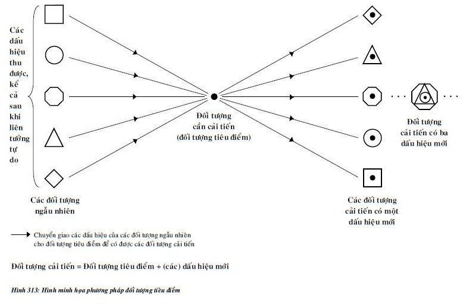
- Nhìn dưới góc độ các thủ thuật (nguyên tắc) sáng tạo cơ bản của TRIZ, phương pháp đối tượng tiêu điểm có thể biểu diễn thành:
- Nguyên tắc liên tục các tác động có ích (Thu được nhiều ý tưởng sáng tạo).
- Nguyên tắc “tách khỏi” (Tách các đối tượng ngẫu nhiên cần thiết ra để dùng).
- Nguyên tắc phẩm chất cục bộ (Liệt kê các tính chất riêng biệt của từng đối tượng ngẫu nhiên).
- Nguyên tắc kết hợp (Ghép các dấu hiệu của các đối tượng ngẫu nhiên với đối tượng tiêu điểm).
- Nguyên tắc tự phục vụ (Sử dụng nguồn dự trữ có sẵn của mỗi người là tính liên tưởng và trí tưởng tượng)
- Tách khỏi (Tách các ý tưởng cần thiết ra khỏi quỹ ý tưởng thu được ở bước 5. Đây cũng chính là bước 6 để ra quyết định).
13.3.3.5 Phương pháp tư duy chiều ngang (Lateral Thinking Method)
Phương pháp tư duy chiều ngang được Edward de Bono, người gốc Malta đưa ra vào năm 1970. Theo từ điển Oxford English Dictionary, tư duy chiều ngang là loại tư duy “Tìm kiếm các cách giải quyết vấn đề bằng những phương tiện không lôgích thấy rõ” (Seeking ways to solve problems by apparently illogical means).
E. de Bono cho rằng, bộ óc con người là hệ thống tự tổ chức thông tin (self - organising information system), mà hệ thống đó hoạt động rất tốt trong việc tạo ra các (khuôn, hình) mẫu (patterns), lưu giữ chúng, tái hiện chúng và nhận dạng lại chúng. Nhờ vậy, trên thực tế, hệ thống đó cũng phản ứng một cách nhanh chóng khi tiếp thu (perception) lại (gặp lại) các mẫu mà nó đã lưu giữ. Trên thực tế, các mẫu này có thể là các khái niệm, ý tưởng, ý nghĩ, hình ảnh… Chúng có thể đứng riêng rẽ, có thể tiếp nối nhau tuần tự theo thời gian. Các mẫu có thể kết hợp với nhau thành các mẫu lớn hơn… Tóm lại, bộ óc là hệ thống tạo mẫu (the mind is a patternmaking system).
Nếu mọi sự vật diễn ra lặp đi, lặp lại đều đặn không có gì thay đổi, ưu điểm nói trên của bộ óc làm cuộc sống của chúng ta nhẹ nhàng, bản thân chúng ta đỡ tốn sức lực một cách đáng kể.
Ví dụ, khi bạn làm các công việc quen thuộc hàng ngày, nhờ các mẫu đã có sẵn trong óc, bạn cứ làm theo mẫu, đúng hơn, mẫu điều khiển các hành vi của bạn mà hầu như bạn không phải suy nghĩ gì cả. Nếu không có những mẫu này, mỗi lần bạn mặc quần áo, đi giầy, đi xe đạp… bạn phải học lại từ đầu.
Tuy nhiên, sự vật lại ở trong trạng thái vận động, thay đổi, do vậy, nảy sinh các tình huống, ở đó các mẫu đã có trong óc không còn giúp người ta đạt được mục đích nữa. Nói cách khác, người ta có các vấn đề.
Do lịch sử để lại, loại lôgích dạy trong các trường học là lôgích hình thức, toán học và loại suy nghĩ giải quyết vấn đề, chủ yếu, cũng là loại suy nghĩ dựa trên lôgích hình thức (xem Chương 8: Tư duy lôgích của quyển ba). Đây cũng chính là loại tư duy được đặt tên là tư duy chiều đứng (vertical thinking), theo E. de Bono, có xuất xứ từ thời Socrates, Plato và Aristotle.
Tư duy chiều đứng có những ưu điểm và nhược điểm. Ví dụ, về mặt ưu điểm, nếu vấn đề cho trước không đòi hỏi phải thay đổi các mẫu đã biết mà vẫn giải được, tư duy chiều đứng phát huy tác dụng rất mạnh. Thường đấy là những vấn đề vẫn còn nằm trong phạm vi áp dụng của các quy luật, quy tắc, phương pháp suy luận của lôgích hình thức.
Theo E. de Bono, đối với những vấn đề chỉ giải được khi người giải phải thay đổi các mẫu đã có trong trí nhớ, tư duy chiều đứng không còn thích hợp nữa. Lúc này, tư duy chiều ngang (lateral thinking) sẽ phát huy tác dụng của mình. Thay vì lấy nguyên vẹn mẫu rồi phát triển nó theo lôgích hình thức (hoặc toán học) như tư duy chiều đứng vẫn làm, tư duy chiều ngang cố gắng cấu trúc lại (restructure), sắp xếp lại (rearrangement) mẫu, thay đổi nó theo những cách khác nhau.
Nếu quan niệm rằng, quá trình suy nghĩ giải quyết vấn đề và ra quyết định bắt đầu từ giai đoạn tiếp thu thông tin (xem Hình 44 và văn bản kèm theo trong mục 6.2 Mô hình quá trình suy nghĩ giải quyết vấn đề và ra quyết định của quyển hai) thì trong giai đoạn đầu tiên này, thông tin của bài toán do trí nhớ nhận dạng, được trí nhớ chọn tiếp thu và đóng gói dựa trên các mẫu lưu giữ. Các gói thông tin này sau đó được xử lý với năng suất cao ở giai đoạn thứ hai (giai đoạn xử lý thông tin) nhờ các phương pháp của lôgích hình thức (tư duy chiều đứng). Nhân đây, bạn đọc có thể xem lại mục nhỏ 6.4.4 Xử lý thông tin của quyển hai. Tư duy chiều ngang cần thiết để thay đổi chính các mẫu và các gói thông tin ngay ở giai đoạn đầu tiên là giai đoạn tiếp thu thông tin.
Tư duy chiều ngang cũng cần thiết để đánh giá lại sự vật theo chu kỳ (periodic reassessment) mà những sự vật này tưởng chừng không có gì đáng nghi ngờ. Đánh giá lại theo chu kỳ có nghĩa thách thức tất cả những gì đã được thừa nhận để nhìn sự vật theo những cách mới.
Nói chung, tư duy chiều ngang bao gồm các việc như cấu trúc lại các mẫu (restructuring patterns), giải phóng (thoát) khỏi các mẫu (liberation from patterns); làm nảy sinh các mẫu mới có khả năng lựa chọn (generation of new alternative patterns); xem xét sự vật theo những cách khác nhau (looking at things in different ways); sắp xếp thông tin theo những cách mới để có được các ý tưởng mới (putting information together in new ways to give new ideas).
Tuy chỉ ra nhiều sự khác biệt giữa tư duy chiều ngang và tư duy chiều đứng, E. de Bono vẫn cho rằng tư duy chiều ngang và tư duy chiều đứng bổ sung cho nhau chứ không đối kháng (lateral thinking and vertical thinking are complementary not antagonistic).
Theo E. de Bono, tư duy chiều ngang có ích lợi đối với việc phát các ý tưởng và các cách tiếp cận mới, còn tư duy chiều đứng ích lợi trong việc phát triển tiếp các ý tưởng và cách tiếp cận mới tìm ra này. Tư duy chiều ngang làm tăng hiệu quả của tư duy chiều đứng bằng cách đưa ra nhiều phương án để tư duy chiều đứng lựa chọn. Tư duy chiều đứng nhân hiệu quả của tư duy chiều ngang lên bằng cách sử dụng tốt các ý tưởng được tư duy chiều ngang phát ra. Tóm lại, tư duy chiều ngang có tính chất làm sinh sôi thêm, còn tư duy chiều đứng có chức năng chọn lọc những cái hiện có (Lateral thinking is generative. Vertical thinking is selective).
Có ba loại hoạt động giúp hình thành tư duy chiều ngang: Ý thức (awareness), có nhiều các khả năng lựa chọn (alternatives) và các phương pháp mồi, kích thích (provocative methods) phát ý tưởng.
- Các hoạt động liên quan đến ý thức có mục đích xác định lại và làm rõ các ý tưởng hiện có.
E. de Bono đề nghị xem xét các ý tưởng hiện có theo năm cách nhìn sau:
Nhận ra được các ý tưởng nổi trội (dominant ideas).
Nhận ra được các yếu tố ràng buộc (tethering factors).
Khắc phục các khuynh hướng phân cực (polarizing tendencies).
Các khuynh hướng phân cực xảy ra trong những tình huống, ở đó chỉ có thể có một trong hai trạng thái: Hoặc là cái này, hoặc là cái kia. Người giải cần cố gắng tìm giải pháp dung hòa (a solution based on compromise).
Xác định biên giới (boundaries) của vấn đề.
Thừa nhận sự tồn tại của những điều giả sử (assumptions) khi giải bài toán.
- Các hoạt động liên quan đến các khả năng lựa chọn, có mục đích tìm ra các cách xem xét khác nhau có thể có đối với vấn đề cần giải quyết. Ở đây có nhiều phương pháp giúp thực hiện các hoạt động này:
Các phương tiện phòng tránh (avoidance devices) để làm vấn đề không nảy sinh.
Quay vòng sự chú ý (rotation of attention), hiểu theo nghĩa, người giải bài toán cần chú ý cả các phần khác của bài toán, không nhất thiết chỉ chú ý phần cốt lõi của bài toán (the core of a problem).
Thay đổi điểm xuất phát, đi vào (change of entry point), hiểu theo nghĩa, thay đổi điểm xuất phát giải bài toán.
Xác định các cách xem xét thực sự khác nhau về bài toán, gọi là phân định chỉ tiêu các khả năng lựa chọn (quota of alternatives).
Thay đổi khái niệm (concept changing) để tránh nhìn bài toán chỉ theo một quan điểm cố định.
Phân chia (fractionation) bài toán thành sự sắp xếp mới các phần mà không cần chú ý đến sự phân chia lôgích.
Một cách khác để tạo ra các cách nhìn mới đối với bài toán là kết hợp hai khái niệm không liên quan thấy rõ. Cách làm này ngược với cách phân chia nêu ở trên và được gọi là cầu nối các phần (bridging divisions).
- Các hoạt động liên quan đến việc mồi, kích thích (to provoke) phát các ý tưởng được thực hiện thông qua sử dụng các phương pháp:
Kích thích ngẫu nhiên (random stimulus) với đề nghị người giải đi dạo, đọc từ điển, thăm viện bảo tàng… để tìm các gợi ý.
Sử dụng từ (ngữ) ngẫu nhiên (random word).
Thách thức khái niệm (concept challenge), hiểu theo nghĩa, xem xét lại các khái niệm, các kết luận được coi là bình thường, thông lệ theo các cách nhìn mới để tìm ra các ý mới.
Người giải đi tìm những lời giải tưởng tượng, không thể xảy ra và xem những lời giải này như những hòn đá trung gian để bước (stepping stones) đến đích là các lời giải khả thi, mang tính hiện thực hơn. Phương pháp này được đặt tên là cái không thể ở giữa (intermediate impossible) và liên quan đến việc áp dụng tư duy chiều ngang, được phản ánh bằng từ “Po”. Từ “Po” sẽ được giải thích trong 13.3.3.8 Phương pháp tư duy năm giai đoạn.
Đảo ngược (reversals).
Làm biến dạng và cực đoan hóa (distortion and exaggeration) để có được những ý tưởng mới.
Kết hợp các yếu tố đa dạng hoặc không liên quan nhằm thu các ý tưởng mới. Phương pháp này được gọi là làm lộ ra (exposure).
Lấy ý kiến các chuyên gia thuộc các lĩnh vực khác nhau về bài toán cần giải gọi là sự thụ phấn chéo (cross – fertilization).
Chuyển đổi bài toán (problem switching): Tạm ngưng giải bài toán ban đầu cần giải, người giải chuyển sang giải bài toán khác rồi mới quay lại bài toán ban đầu cần giải. Trong nhiều trường hợp, các ý tưởng giải bài toán khác lại đem lại ích lợi cho việc giải bài toán ban đầu cần giải.
Não công (brainstorming).
Các loại tương tự (analogies).
NHẬN XÉT:
Ngoài phương pháp tư duy chiều ngang vừa trình bày, E. de Bono còn là tác giả các phương pháp của chương trình tư duy CoRT; phương pháp sáu chiếc mũ tư duy và phương pháp tư duy năm giai đoạn sẽ được đề cập lần lượt, tiếp theo đây. Các phương pháp của E. de Bono mang tính nhất quán nhất định chứ không phải hoàn toàn độc lập đối với nhau. Do vậy, thay cho viết riêng đối với từng phương pháp, nhận xét sẽ được viết chung cho tất cả các phương pháp đó và trình bày cuối cùng trong phần NHẬN XÉT của 13.3.3.8 Phương pháp tư duy năm giai đoạn.
13.3.3.6 Các phương pháp của chương trình tư duy CoRT (CoRT Thinking Programme’s Methods)
Những năm 1970, E. de Bono thực hiện chương trình dạy tư duy trong các trường học ở một số nước trên thế giới. Chương trình có tên gọi là chương trình tư duy CoRT (Cognitive Research Trust – tạm dịch là Tổ chức Nghiên cứu Nhận thức).
Chương trình CoRT chia thành sáu phần, mỗi phần liên quan đến một chủ đề của tư duy. Mỗi phần có mười bài học (lessons).
CoRT 1 – Tầm rộng (Breadth).
CoRT 2 – Tổ chức (Organization).
CoRT 3 – Tương tác (Interaction).
CoRT 4 – Sáng tạo (Creativity).
CoRT 5 – Thông tin và cảm xúc (Information and feeling).
CoRT 6 – Hành động (Action).
Trên thực tế, chương trình CoRT dạy học sinh các công cụ tư duy (thinking tools), được thiết kế đơn giản (các thầy cô giáo có thể lĩnh hội nhanh chóng để dạy lại cho học sinh) và mang tính ứng dụng. Chương trình bao gồm nhiều công cụ khác nhau. Ví dụ CoRT 1 dạy các công cụ cơ bản về hướng dẫn sự chú ý khi tiếp thu thông tin. Các công cụ tư duy này có thể học được một cách dễ dàng và cần được sử dụng một cách có ý thức.
Mỗi công cụ được đặt theo tên của các công việc cần thực hiện. Tên công cụ chính là ghép những chữ cái đầu (acronym) của những từ phản ánh các công việc cần làm.
Trong các bài học của CoRT, việc sử dụng thành thạo các công cụ thông qua luyện tập luôn được nhấn mạnh. E. de Bono đưa ra bốn bậc phân biệt kết quả đạt được trong việc nắm các kỹ năng tư duy, thể hiện qua việc sử dụng chương trình CoRT:
Có ý thức chung về tư duy như là kỹ năng. Có mong muốn suy nghĩ về điều gì đó, tìm hiểu đối tượng và lắng nghe những người khác. Chưa cần nhớ công cụ tư duy cụ thể.
Cách tiếp cận đối với tư duy mang tính cấu trúc hơn, kể cả có sự cân bằng tốt hơn, có chú ý đến các hệ quả của hành động hoặc sự lựa chọn (có tính đến cách nhìn, quan điểm của những người khác) và tìm kiếm các khả năng lựa chọn. Có thể nhắc đến vài công cụ của chương trình CoRT.
Sử dụng một số công cụ của CoRT một cách tập trung và cẩn thận. Tư duy được tổ chức như là tập hợp các bước. Có sự cảm nhận được mục đích trong tư duy.
Sử dụng thành thạo và thích hợp nhiều công cụ CoRT. Có ý thức nhất định về bậc nhận thức cao của tư duy. Quan sát và bình luận về tư duy của chính mình.
Dưới đây chúng ta cùng làm quen với một số công cụ của chương trình CoRT:
1) PMI (Plus, Minus, Interesting)
Plus là cộng, dương, phản ánh các điểm (points) tốt.
Minus là trừ, âm, phản ánh các điểm xấu.
Interesting là quan tâm, thú vị, phản ánh các điểm thú vị, tham khảo.
PMI là công cụ hướng dẫn sự chú ý. PMI đòi hỏi người sử dụng phải chú ý đối tượng (hiểu theo nghĩa rộng) cho trước cả ba mặt: Tốt, xấu, thú vị (tham khảo, hiểu theo nghĩa, đấy là những điểm không xếp được vào tốt hoặc xấu, hoặc thông tin mới chưa rõ nghĩa). PMI là bài học đầu tiên trong các bài học CoRT.
PMI giúp người sử dụng trở nên khách quan và có được sự duyệt thông tin nhanh khi tiếp thu thông tin về một đối tượng nào đó. Từ đó, PMI giúp người sử dụng ra quyết định một cách có cơ sở.
Ví dụ: Hãy sử dụng (thực hiện) PMI đối với ý kiến: Cần thưởng điểm cho các sinh viên tham gia tích cực vào các hoạt động trên lớp.
Plus (các điểm tốt):
- Lớp học trở nên sôi nổi hơn.
- Số sinh viên chủ động tăng lên, số sinh viên thụ động giảm đi.
- Thầy cô giáo hài lòng hơn.
- Ý thức học tập của sinh viên tăng lên.
- Thời gian dành cho học tập tăng lên (kể cả thời gian chuẩn bị bài ở nhà), thời gian nhàn cư vi bất thiện giảm đi.
…………………………..
Minus (các điểm xấu):
- Xuất hiện nhiều sinh viên cơ hội, đối phó.
- Khuyến khích bệnh thành tích phát triển.
- Thầy cô giáo phải mất thời gian, công sức làm thêm việc theo dõi số lần giơ tay của sinh viên để cho điểm thưởng.
- Thầy cô cho điểm thưởng không công bằng.
- Tạo nên sự ghen tỵ của sinh viên với nhau.
- Phải lập thêm ban giám sát việc cho điểm thưởng của các thầy cô.
………………………….
Interesting (Thú vị, tham khảo):
- Thật là thú vị, điểm thưởng cho các môn khác nhau chắc phải khác nhau.
- Thật là hay nếu biết được, thực sự, sinh viên nghĩ gì, phản ứng như thế nào đối với biện pháp thưởng điểm.
- Thú vị thật, ban giám hiệu có ủng hộ biện pháp này không.
………………………….
2) APC (Alternatives, Possibilities, Choices)
Alternatives – Các khả năng thay thế, lựa chọn.
Possibilities – Các khả năng.
Choices – Các lựa chọn.
Thực hiện APC, người sử dụng phải nỗ lực một cách có ý thức và cẩn thận để đưa ra các khả năng có thể lựa chọn, thay thế một điểm xuất phát cụ thể nào đó.
Ví dụ: Hãy thực hiện APC cho tình huống bà mẹ tình cờ phát hiện những bao cao su trong ngăn kéo bàn học của đứa con gái 16 tuổi.
Thông thường, nhiều bà mẹ tá hỏa tam tinh cho rằng con mình hỏng rồi, dám cả gan mua bao cao su cho bạn trai sử dụng và làm ầm ĩ cả nhà, không nghe bất kỳ ý kiến của ai.
Công cụ APC đòi hỏi người dùng không đưa ra duy nhất một phương án rồi vội vã kết luận, mà phải đưa ra các phương án có thể có, chẳng hạn:
- Con gái tò mò vì nghe báo chí nói nhiều, mua vài cái về xem thử mặt mũi nó ra sao.
- Bạn gái của con gái nhờ nó giữ hộ một gói đồ mà nó không biết có gì bên trong.
- Con gái đến lớp thấy trong ngăn bàn mình có gói đồ, tiện tay mang về nhà.
- Giờ học giới tính, cô giáo để quên “dụng cụ trực quan”, con gái mang về để giờ sau đưa lại cho cô.
…………………………..
3) CAF (Consider All Factors – Xem xét (tính đến) tất cả các yếu tố)
CAF đòi hỏi phải xem xét tất cả các yếu tố (nhân tố) có trong tình huống cho trước mà không cần thử cố gắng đánh giá chúng.
Khi liệt kê các yếu tố cần chú ý trả lời các câu hỏi: “Còn gì chưa kể hết không?”, “Mình còn phải tính đến cái gì nữa?”. Việc mua một thiết bị cũ, đến khi cần thay phụ tùng, mới phát hiện ra rằng đã từ lâu người ta ngưng sản xuất loại phụ tùng đó, người mua đành phải bỏ đi nguyên cả thiết bị. Điều này chứng tỏ người mua đã không tính hết các yếu tố liên quan như CAF đòi hỏi.
4) C&S (Consequence and Sequence – Hệ quả và sự tuần tự, nối tiếp)
Công cụ C&S có nhiệm vụ xem xét các hệ quả của hành động hoặc quyết định nào đó sau một khoảng thời gian trong vòng một năm; từ 1 đến 5 năm; từ 5 đến 20 năm; ngoài 20 năm.
5) FI - FO (Information In and inFormation Out – Thông tin trong và thông tin ngoài)
Sử dụng công cụ này cần lập bản điều tra về những gì đã cập nhật và những gì còn đang yêu cầu về mặt thông tin.
6) EBS (Examine Both Sides – Xem xét cả hai mặt)
Công cụ EBS yêu cầu người sử dụng xem xét đối tượng bằng cách nhìn đối tượng từ hai quan điểm (point of view) khác nhau. Việc xem xét cần diễn ra một cách khách quan, trung lập.
7) ADI (Agreement, Disagreement, Irrelevance - Đồng ý, không đồng ý, không đúng chỗ, đúng lúc)
EBS hầu như dẫn thẳng đến ADI, bởi vì khi nhìn xuất phát từ hai quan điểm khác nhau sẽ có những cái trùng hợp, không trùng hợp và không phù hợp với những cái thông lệ.
8) OPV (Other People’s of Views – Các quan điểm của những người khác)
Người sử dụng OPV phải hình dung mình là những người trong cuộc khác, nhìn tình huống theo các quan điểm của họ để đề ra các ý tưởng. Công cụ OPV giao với công cụ EBS.
9) AGO (Aims, Goals and Objectives – Mục đích các loại)
Người sử dụng AGO phải nêu ra tất cả những gì mình muốn đạt được.
10) TEC (Target and Task, Expand and Explore, Contract and Conclude – Đích ngắm và Nhiệm vụ, Mở rộng và Nghiên cứu (thăm dò), Hợp đồng (thỏa thuận) và Kết thúc (kết luận)
Người sử dụng TEC phải tập trung hướng đích bằng cách sử dụng hai quá trình ngược nhau. Đấy là mở rộng để có thể có được nhiều phương án, ý tưởng rồi thu hẹp lại để kết luận dùng phương án, ý tưởng nào thì thích hợp cho việc đạt mục đích trong tình huống cho trước.
11) FOW (Find Other Ways – Hãy tìm những cách khác)
12) FIP (First Important Priorities – Những quyền ưu tiên quan trọng trước hết)
13) Yes, No, Po – Có, Không, Po (Po - the word from hypothesis/proposal – Po là từ trích từ giả thiết, lời đề nghị)
14) ………………………………
NHẬN XÉT:
Xem NHẬN XÉT trong 13.3.3.8 Phương pháp tư duy năm giai đoạn.
13.3.3.7 Phương pháp sáu chiếc mũ tư duy (Method of Six Thinking Hats)
Phương pháp sáu chiếc mũ tư duy được E. de Bono công bố năm 1985.
Phương pháp sáu chiếc mũ tư duy được xây dựng và sử dụng dựa trên cơ sở bao gồm những điểm sau:
- Khi suy nghĩ, người ta thường suy nghĩ cùng một lúc nhiều kiểu suy nghĩ, gây nên sự phức tạp, lầm lẫn và khó khăn, như người phải tung hứng cùng một lúc nhiều quả bóng.
Do vậy, E. de Bono đặt vấn đề cần phải tách ra các kiểu suy nghĩ khác nhau, sao cho trong mỗi một khoảng thời gian người ta chỉ suy nghĩ theo một kiểu nhất định (a certain type of thinking).
- Theo E. de Bono, có thể chia suy nghĩ nói chung thành sáu kiểu suy nghĩ:
- Suy nghĩ trung lập và khách quan (neutral and objective thinking) để thu thập các thông tin các loại mà chưa có sự phán xét, đánh giá gì.
- Suy nghĩ chi phối bởi cảm xúc, tình cảm (emotions and feelings) mang tính chủ quan, kể cả linh tính, trực giác (intuition, hunches).
- Suy nghĩ chuyên phát hiện, đánh giá các khuyết, nhược điểm (negative assessment).
- Suy nghĩ thiên về phát hiện, đánh giá các ưu điểm (positive assessment).
- Suy nghĩ sáng tạo (creative thinking) tập trung vào việc phát các ý tưởng mới, các khả năng chọn lựa (generating alternatives).
- Suy nghĩ kiểm soát, điều khiển (control thinking), tổ chức, sắp xếp các kiểu suy nghĩ khác.
Như vậy, người suy nghĩ thay vì suy nghĩ cùng một lúc rối rắm, lẫn lộn, thì nay chuyển sang suy nghĩ lần lượt theo từng kiểu. Còn kiểu nào trước, kiểu nào sau thì tùy thuộc vào các tình huống cụ thể. Tuy nhiên, quá trình suy nghĩ thường bắt đầu từ kiểu tư duy điều khiển để tổ chức, sắp xếp việc thực hiện các kiểu tư duy khác và kết thúc cũng bằng kiểu tư duy điều khiển để ra quyết định. Điều này làm cho quá trình suy nghĩ trở nên nhẹ nhàng, sâu sắc, thú vị và hiệu quả hơn.
Nếu làm việc tập thể, cách suy nghĩ lần lượt theo từng kiểu giúp cả tập thể cùng nhìn, suy nghĩ về một hướng vì trong cùng một thời gian mọi người đều dùng một kiểu suy nghĩ (tư duy song song – parallel thinking) chứ không phải quay sang tranh luận với nhau. Điều này giúp khai thác những gì tốt nhất của mỗi cá nhân, phát huy sức mạnh của tập thể, dễ tạo được sự nhất trí, đồng thuận và tiết kiệm thời gian.
- Nhằm tạo điều kiện thuận lợi sử dụng cách suy nghĩ lần lượt theo từng kiểu, E. de Bono đưa ra phép tượng trưng (symbolism): Mỗi một kiểu suy nghĩ được tượng trưng bởi một chiếc mũ tư duy (thinking hat) có màu tương ứng. Cụ thể:
- Mũ trắng tượng trưng cho kiểu suy nghĩ trung lập và khách quan.
- Mũ đỏ tượng trưng cho kiểu suy nghĩ cảm xúc, tình cảm.
- Mũ đen tượng trưng cho kiểu suy nghĩ chuyên đánh giá các khuyết, nhược điểm.
- Mũ vàng tượng trưng cho kiểu suy nghĩ thiên về đánh giá các ưu điểm.
- Mũ xanh lá cây tượng trưng cho kiểu suy nghĩ sáng tạo (phát các ý tưởng, các khả năng chọn lựa).
- Mũ xanh lam (xanh da trời) tượng trưng cho kiểu suy nghĩ dùng để điều khiển, sắp xếp, tổ chức các loại suy nghĩ khác.
- “Chiếc mũ tư duy” được chọn làm biểu tượng tượng trưng, vì theo E. de Bono nó có những ưu điểm như:
- Đội chiếc mũ lên là sự báo hiệu thực hiện một công việc nhất định. Ví dụ, anh cảnh sát không đội mũ, người ta có thể nghĩ anh ấy đang nghỉ ngơi chứ không phải đang làm việc. Còn khi đã đội mũ, mọi người đều hiểu rằng anh ấy đang thực thi công vụ.
- Có nhiều loại mũ. Trong đời sống, công việc, nhiều khi người ta lúc đội mũ này, lúc đội mũ khác và trong những trường hợp như vậy, việc chuyển đổi mũ đội xảy ra một cách nhẹ nhàng, dễ dàng.
Điều này cũng cần thiết xảy ra với các kiểu tư duy, sao cho việc chuyển đổi kiểu tư duy xảy ra một cách nhẹ nhàng, dễ dàng như thế. Do vậy, thay vì ra lệnh chuyển đổi kiểu tư duy nghe nặng nề và phức tạp, sử dụng sự tượng trưng, người ta chỉ cần nói chuyển từ đội mũ màu này sang đội mũ màu khác.
- Màu sắc của các chiếc mũ được chọn dựa trên sự liên tưởng xuất phát từ nhiệm vụ của từng chiếc mũ:
Màu trắng làm người ta liên tưởng đến tờ giấy trắng, mang tính trung lập và khách quan. Do vậy, màu trắng dùng cho chiếc mũ suy nghĩ trung lập khách quan.
Màu đỏ thể hiện ngọn lửa, sự ấm áp, sự nổi giận (giận đỏ mặt) thuộc về xúc cảm. Vậy, màu đỏ được dùng cho chiếc mũ suy nghĩ kiểu xúc cảm, tình cảm.
Màu đen tượng trưng cho màu áo choàng thẩm phán, sự u ám, bi quan, chỉ thấy mặt xấu, hoặc chính là mặt xấu (mặt sắt đen xì). Màu đen được dùng cho chiếc mũ suy nghĩ chuyên phát hiện và đánh giá những điểm xấu, những điều nguy hiểm, có hại, những rủi ro có thể.
Màu vàng đấy là ánh sáng mặt trời, là những điều tốt đẹp. Chiếc mũ tư duy màu vàng thể hiện sự lạc quan bao quát cả sự hy vọng và suy nghĩ tích cực.
Màu xanh lá cây là màu của cây cỏ, của sự sinh sôi, tăng trưởng. Từ những hạt nhỏ bé các cây cối mọc lên thành rừng. Do vậy, màu xanh được gán cho chiếc mũ chịu trách nhiệm về sáng tạo, đưa ra các ý tưởng mới, các khả năng có thể lựa chọn.
Màu xanh lam mát mẻ, đồng thời là màu của bầu trời bao quát, cao hơn hẳn những cái khác. Chiếc mũ tư duy màu xanh lam chăm lo chuyện điều khiển và tổ chức quá trình suy nghĩ, kể cả sử dụng các chiếc mũ tư duy khác.
Việc nhớ chức năng, nhiệm vụ của mỗi chiếc mũ tư duy trở nên dễ dàng nếu bạn nhớ màu của chiếc mũ đó và cách liên tưởng trình bày ở trên. Sáu chiếc mũ tư duy có thể chia thành ba cặp:
Trắng và đỏ.
Đen và vàng.
Xanh lá cây và xanh lam.
- Khi suy nghĩ, “cái tôi” (ego) của người suy nghĩ thường khá nặng. Nó chống lại tất cả những gì từ bên ngoài áp đặt sự thay đổi lên “cái tôi”.
Ví dụ, trong một cuộc họp, “cái tôi” đang dùng kiểu suy nghĩ đánh giá khuyết, nhược điểm của đối tượng được đưa ra thảo luận, thì người chủ trì cuộc họp lại đề nghị người có “cái tôi” đó phải chuyển sang kiểu suy nghĩ tìm và đánh giá các ưu điểm của đối tượng cho trước. “Cái tôi” đương nhiên tự ái, không muốn chuyển đổi kiểu suy nghĩ nên vẫn tiếp tục làm theo “cái tôi” của mình. Các ý nghĩ không nhìn thấy được, nên người điều khiển cuộc họp không nhận ra sự chống đối, cũng như không nhận được sự hợp tác từ những người có “cái tôi” mạnh.
Trong khi đó, khi sử dụng sự tượng trưng, người ta có thể bỏ “cái tôi” một cách dễ dàng. Ví dụ, tham gia đóng kịch, có thể “cái tôi” của bạn không thích làm cảnh sát, nhưng khi vào vai cảnh sát, đội chiếc mũ cảnh sát trên đầu bạn diễn rất đạt vì bạn biết rằng cần phải nhập vai, đóng vai một cách tự nguyện và “cái tôi” không vì thế mà bị ảnh hưởng. Đơn giản, bạn chỉ đang đóng vai (you are just playing a role) được phân công.
Sử dụng các chiếc mũ tư duy với các màu sắc khác nhau cũng có tác dụng tương tự như bạn nhập các vai diễn khác nhau, do vậy, “cái tôi” của bạn không bị tổn thương, bạn dễ dàng hợp tác với những người khác hơn.
- Sáu chiếc mũ tư duy thiết lập những quy tắc nhất định (certain rules) cho “vở diễn” tư duy, sao cho quá trình tư duy phát hiện được những dữ liệu, sự kiện, thông tin… liên quan. Dựa trên những gì được phát hiện ra, người suy nghĩ xây dựng thành bản đồ (mapmaking). Người suy nghĩ có thể căn cứ vào bản đồ quyết định chọn đường đi đến đích (giải pháp) cho mình.
Các quy tắc này thể hiện trong các yêu cầu đối với công việc mà mỗi chiếc mũ tư duy phải làm và sự phối hợp sáu chiếc mũ tư duy lại với nhau.
Ví dụ, chiếc mũ điều khiển (xanh lam) tự nó phải tổ chức tư duy. Nó phải suy nghĩ về cách suy nghĩ cần thiết để nghiên cứu đối tượng, chấm dứt các cuộc tranh cãi, thực hiện nhất quán kiểu bản đồ của tư duy (the “map” type of thinking). Nhân đây, người viết lưu ý bạn đọc, từ “bản đồ” (map) trong các phương pháp của E. de Bono hiểu theo nghĩa bóng của nghĩa bản đồ thông thường chứ không phải “bản đồ trí óc” (mindmap) của Tony Buzan.
Tóm lại, mũ xanh lam tương tự như nhạc trưởng của dàn nhạc, tương tự như người lãnh đạo, quản lý một tập thể. Nó chỉ ra phải sử dụng những chiếc mũ khác nào trong các khoảng thời gian thích hợp. Nó xác định các vấn đề; nêu các câu hỏi; đề ra các mục đích; tóm tắt các ý, rút ra các kết luận khi cần thiết; theo dõi và bảo đảm rằng các quy tắc được tuân thủ;…
- Nhằm mục đích tăng năng suất và hiệu quả của phương pháp sáu chiếc mũ tư duy, các loại hoạt động của tư duy chiều ngang (xem 13.3.3.5 Phương pháp tư duy chiều ngang) và các công cụ CoRT (xem 13.3.3.6 Các phương pháp của chương trình tư duy CoRT) cần được sử dụng ở những lúc, những nơi thích hợp.
Cuối cùng, để bạn đọc dễ hình dung “ngôn ngữ” của phương pháp sáu chiếc mũ tư duy được sử dụng trên thực tế như thế nào, người viết dẫn ra dưới đây một số câu trao đổi trong nhóm người thực hiện thảo luận giải quyết vấn đề và ra quyết định theo phương pháp này:
“Chúng ta không có nhiều thời gian dành cho vấn đề vừa nêu, cho nên chúng ta phải sử dụng thời gian của chúng ta một cách có hiệu quả nhất. Có ai trong nhóm chúng ta muốn đưa ra cách sắp xếp các kiểu tư duy tiến hành theo thời gian thảo luận của mũ xanh lam không?…”
“Mũ xanh lam của tôi cho rằng, khởi đầu tư duy theo mũ trắng là hợp lý, sau đó là mũ vàng còn tiếp theo nữa thì thực tế thảo luận sẽ mách chúng ta dùng mũ gì. Tất nhiên mũ xanh lam của những người khác có thể cho ý kiến khác…”.
………………………………….
………………………………….
………………………………….
“Như vậy mọi người đều nhất trí dùng mũ trắng rồi đến mũ vàng, còn mũ gì tiếp theo thì tùy kết quả thu được lúc đó. Nào mọi người chú ý, tất cả chúng ta đội mũ trắng lên đầu. Ai có ý kiến gì, xin mời…”.
“Nếu các anh cần các số liệu và các hình vẽ, các anh sẽ có. Đây các anh xem…”.
“Đừng hỏi tôi tại sao, nhưng tôi không thích hình 11 và hình 15…”.
“Tại sao anh lại dùng mũ đỏ, chúng ta đang dùng mũ trắng cơ mà. Anh tạm cất mũ đỏ đi và đội mũ trắng vào…”.
………………………………….
………………………………….
………………………………….
“Đã đến lúc chúng ta có thể chuyển sang mũ vàng. Nếu không ai có ý kiến gì, xin mời đội mũ vàng lên đầu…”
“Mũ vàng mách bảo tôi rằng chúng ta đang có những thuận lợi sau…”.
“Tôi bổ sung thêm, sau đợt đi nghỉ vừa rồi, mọi người đều phấn khởi, háo hức đón nhận công việc mới…”.
………………………………….
………………………………….
………………………………….
“Bây giờ chúng ta quay trở lại với mũ xanh lam xem nó khuyên chúng ta dùng mũ nào tiếp theo đây?…”.
“Mũ xanh lam của tôi nói rằng mọi người đều đã nắm được những khuyết tật của đối tượng, do vậy, không cần dùng mũ đen mà có thể chuyển ngay sang phát các ý tưởng khắc phục các khuyết tật…”.
“Mũ xanh lam của tôi cũng chia sẻ ý kiến đó. Tôi nghĩ đã đến lúc tất cả chúng ta cùng đội mũ xanh lá cây lên đầu…”.
………………………………….
………………………………….
………………………………….
“Kết quả chúng ta thu được 15 ý tưởng. Tất nhiên chúng ta không thể cùng một lúc dùng cả 15 ý tưởng, chưa kể, 15 ý tưởng này khác nhau về giá trị. Mũ xanh lam bảo chúng ta phải dùng mũ đen loại bớt những ý tưởng không khả thi, không phù hợp với mục đích cần đạt…”.
………………………………….
………………………………….
………………………………….
“Sau khi dùng mũ đen rồi dùng mũ vàng, chúng ta còn lại ba ý tưởng. Lúc này có lẽ là lúc cần ra quyết định dùng ý tưởng nào. Thử đội mũ đỏ vào, anh A hãy cho biết anh thích ý tưởng nào nhất?…”.
“Tôi chỉ nói cái tôi không thích nhất. Đó là ý tưởng một. Tuy chưa tính toán cụ thể nhưng tôi có linh tính rằng, giá thành lời giải của ý tưởng một sẽ đắt nhất trong số ba ý tưởng…”.
………………………………….
………………………………….
………………………………….
NHẬN XÉT:
Xem NHẬN XÉT trong 13.3.3.8 Phương pháp tư duy năm giai đoạn.
13.3.3.8 Phương pháp tư duy năm giai đoạn (Method of Five Stages of Thinking)
Phương pháp tư duy năm giai đoạn được E. de Bono chính thức công bố lần đầu tiên vào năm 1995.
Khác với phương pháp sáu chiếc mũ tư duy (xem 13.3.3.7 Phương pháp sáu chiếc mũ tư duy) nói về sáu kiểu tư duy và cách thức sử dụng chúng, phương pháp tư duy năm giai đoạn nhìn việc suy nghĩ giải quyết vấn đề, ra quyết định và hành động thực hiện như một quá trình gồm năm giai đoạn nối tiếp nhau về mặt thời gian.
E. de Bono đặt tên năm giai đoạn này theo tiếng Anh là giai đoạn TO (TO stage), giai đoạn LO (LO stage), giai đoạn PO (PO stage), giai đoạn SO (SO stage) và giai đoạn GO (GO stage).
Chúng ta cùng nhau tìm hiểu từng giai đoạn.
1) Giai đoạn TO:
Từ TO lấy từ các từ hoặc cụm từ như
- I am going to London
- I want to
- Towards what?
- Get to
- Going to
- To this destination
- To this purpose
- To this end
- Toward this goal
- Get to this objective
Như vậy, giai đoạn được đặt tên TO có nhiệm vụ xác định mục đích cần đạt.
Trong phương pháp sáu chiếc mũ tư duy, mũ xanh lam cần được sử dụng đầu tiên để làm điều này.
Trong chương trình tư duy CoRT, công cụ AGO (xem 13.3.3.6 Các phương pháp của chương trình tư duy CoRT) cũng được sử dụng để xác định mục đích các loại (Aims, Goals, Objectives).
Ngoài ra, E. de Bono cũng đưa ra thêm một số thủ thuật (techniques) giúp thực hiện tốt giai đoạn TO như: Chiếc quạt khái niệm (concept fan), làm tới (working forwards), cách tiếp cận chân chó (dog-leg approach).
Mặt khác, E. de Bono còn liệt kê ra các loại tình huống có thể có trong đời sống, công việc, ở đó, người ta cần phải suy nghĩ để xác định mục đích cần đạt.
Tóm lại, ở giai đoạn TO, người suy nghĩ cần phải hiểu và phát biểu mục đích cần đạt một cách rõ ràng. Để làm điều này, nhiều khi người suy nghĩ phải thay đổi, xác định lại, mở rộng hoặc thu hẹp mục đích cần đạt, đưa ra các khả năng và chọn.
2) Giai đoạn LO:
Từ LO lấy từ các từ hoặc cụm từ như
- Lo and behold
- Lo / OK
- Lay Out
Nhiệm vụ của giai đoạn LO là thu thập thông tin làm cơ sở nền cho quá trình suy nghĩ. Giai đoạn LO tương ứng với chiếc mũ trắng trong phương pháp sáu chiếc mũ tư duy.
Trong chương trình tư duy CoRT có nguyên cả một phần (section CoRT5) liên quan đến việc thu thập thông tin. Nhiều công cụ tiếp thu thông tin (perceptual tools) của CoRT1 cũng có ích lợi đối với giai đoạn LO như:
- CAF (Consider All Factors – Xem xét (tính đến) tất cả các yếu tố).
- C&S (Consequence and Sequence – Hệ quả và sự tuần tự, nối tiếp).
- OPV (Others People’s of Views – Các quan điểm của những người khác).
E. de Bono cũng đưa ra những ý kiến, lời khuyên về mức độ đầy đủ của thông tin, các nguồn thông tin, các câu hỏi dùng để thu thập thông tin, chất lượng thông tin, chức năng tiếp thu thông tin (perception) của bộ não, ảnh hưởng của xúc cảm, phương pháp phân tích để có thêm thông tin…
Riêng về việc đặt các câu hỏi để thu thập thông tin, E. de Bono cho rằng có hai loại câu hỏi:
- Các câu hỏi câu cá (fishing questions).
- Các câu hỏi bắn súng (shooting questions).
Các câu hỏi câu cá là các câu hỏi kết thúc mở (open - ended questions). Ví dụ, các câu hỏi: “Mỗi năm thành phố này tiêu thụ bao nhiêu tấn gạo?”; “Công nghệ nào có thể dùng để bãi rác không có mùi hôi?”.
Các câu hỏi bắn súng là các câu hỏi đã biết mục đích, mang tính chất kiểm tra. Ví dụ, các câu hỏi: “Thành phố này mỗi năm tiêu thụ khoảng 600.000 tấn gạo phải không?”; “Có đúng là công nghệ N giúp khử mùi hôi của bãi rác?”.
3) Giai đoạn PO:
Từ PO lấy từ các từ hoặc cụm từ như
- Possible
- Potential
- Suppose
- Hypothesis
- Poetry
Chức năng của giai đoạn PO là người suy nghĩ cần đưa ra càng nhiều càng tốt các khả năng (hiểu theo nghĩa rộng) đối với việc đạt mục đích mà người suy nghĩ đã đề ra (xem giai đoạn TO).
Chiếc mũ xanh lá cây trong phương pháp sáu chiếc mũ tư duy phục vụ cho giai đoạn PO này. Khi đội chiếc mũ xanh lá cây, người suy nghĩ tìm kiếm để phát các ý tưởng mới, các khả năng lựa chọn tiếp tục (further alternatives), các biến thể của ý tưởng (modifications of the idea), các khả năng (possibilities) và các kích thích (provocatives) mồi phát ý tưởng.
Trong chương trình tư duy CoRT, phần sáng tạo là phần CoRT4. Các công cụ CoRT liên quan được sử dụng để thực hiện giai đoạn PO.
Khi đưa ra các khả năng (hiểu theo nghĩa rộng), giai đoạn PO ghi nhận lại tất cả những cái đó mà không có chức năng đánh giá chúng. Việc đánh giá sẽ được tiến hành sau trong giai đoạn SO tiếp theo của quá trình suy nghĩ.
4) Giai đoạn SO:
Từ SO lấy từ các từ hoặc cụm từ như
- So…
- So what?
- So what is the outcome?
- So what do we do?
- So this is what we do?
Mục đích của giai đoạn SO là xử lý các khả năng thu được ở giai đoạn PO và tạo ra các kết quả từ chúng. Ở đây người suy nghĩ cần phải phát triển các khả năng và đánh giá chúng để thấy được các ý tưởng có ích. Tiếp theo, người suy nghĩ phải làm công việc lựa chọn để cuối cùng ra quyết định sử dụng một trong số các ý tưởng có ích đó.
Tóm lại, mục đích chung của giai đoạn SO là phát triển và lựa chọn ý tưởng. Kết thúc giai đoạn SO, người suy nghĩ có ý tưởng được chọn như là quyết định cuối cùng và ý tưởng đó được chuyển giao cho giai đoạn GO – giai đoạn hành động để biến ý tưởng thành hiện thực.
Trong giai đoạn SO, E. de Bono đưa ra những ý kiến, lời khuyên, thủ thuật nhằm thực hiện các nhiệm vụ phát triển, đánh giá, lựa chọn và ra quyết định sử dụng các ý tưởng như thế nào.
Ví dụ, theo E. de Bono, trong số sáu chiếc mũ tư duy, ba chiếc mũ là mũ vàng tìm kiếm các giá trị (values) và những cái có lợi (benefits); mũ đen – các mối nguy hiểm, các vấn đề, các vấn đề tiềm ẩn (potential problems); mũ trắng – sự thích hợp của các ý tưởng với những gì người suy nghĩ biết về tình huống tư duy, cần được dùng để thực hiện công việc đánh giá các ý tưởng. Còn từ chương trình tư duy CoRT, cần sử dụng các công cụ PMI và C&S.
Chiếc mũ đỏ có thể dùng để thực hiện các công việc lựa chọn và ra quyết định.
5) Giai đoạn GO:
Từ GO lấy từ các từ hoặc cụm từ như
- Go!
- Go forward
- Go ahead
- Let’s go
- Go to it
- Get going
Mục đích của giai đoạn GO là nối đầu ra của giai đoạn SO với giai đoạn TO đầu tiên. Nói cách khác, giai đoạn GO được thực hiện thì điều cần đạt được chỉ ra trong giai đoạn TO mới biến thành hiện thực. Giai đoạn GO bao gồm các hành động không tách rời tư duy, đặc biệt, đối với các tình huống phức tạp.
Trong giai đoạn GO, người suy nghĩ phải thiết kế hành động (design of action) bằng cách lập kế hoạch hành động gồm nhiều giai đoạn; đề ra các mục đích và cụ thể hóa thành các mục đích nhỏ hơn (objectives and sub-objectives); phân biệt và sử dụng các hành động đòi hỏi tính linh động và các hành động thông thường (flexibility and routine); cơ chế kiểm tra và hướng dẫn (checks and monitoring), hành động…
Về các loại hành động, trong quyển sách “Sáu loại giầy hành động” (Six Action Shoes), E. de Bono có mô tả sáu phong cách cơ bản của hành động (six basic styles of action):
- Giầy xanh nước biển chuẩn (navy formal shoes) dùng cho hành động thông thường (routine action).
- Giầy nâu (brown brogues) dùng cho hành động khởi nghiệp (enterprise action).
- Giầy xám chạy bộ (grey running shoes) dùng cho hành động thăm dò, điều tra (investigative action).
- Ủng cao su da cam (orange rubber boots) dùng cho hành động lúc khủng hoảng (crisis action).
- Giầy đi trong nhà màu hồng (pink slippers) dùng cho hành động mang giá trị nhân văn (human-values action).
- Ủng cưỡi ngựa màu đỏ thẫm (purple riding boots) dùng cho hành động mang tính trách nhiệm, quyền lực (authority action).
Ngoài ra, trong khi hành động người suy nghĩ cần tính đến những cái bất định (uncertainties), những tương tác với những người khác, vai trò của các chuyên gia (experts), cũng như năng lượng dùng để hành động.
Tùy theo công việc, ở đây các loại hoạt động giúp hình thành tư duy chiều ngang, đồng thời phương pháp sáu chiếc mũ tư duy và các công cụ CoRT đều có thể và cần được áp dụng.
Khi thực hiện phương pháp năm giai đoạn của tư duy, nói chung, người giải cần đi lần lượt từng giai đoạn. Tuy nhiên, khi cần, người giải vẫn có thể quay trở lại các giai đoạn đã đi qua để xem xét lại hoặc bổ sung điều gì đó.
Các tình huống tư duy trên thực tế rất đa dạng, do vậy, số lượng công việc phải làm, mức độ khó hay mức độ quan trọng của từng giai đoạn cũng khác nhau tùy theo tình huống cụ thể.
NHẬN XÉT:
Bạn đọc vừa làm quen xong và theo dõi quá trình phát triển các ý tưởng của E. de Bono về tư duy từ cuối những năm 1960 đến giữa những năm 1990, được thể hiện trong nội dung các phương pháp vừa được trình bày (xem từ 13.3.3.5 đến 13.3.3.8). Đây cũng là lý do vì sao người viết không nhận xét ngay và nhận xét riêng cho từng phương pháp mà chỉ nhận xét sau khi việc trình bày các phương pháp của E. de Bono đã hoàn tất.
Trong các sách của E. de Bono thường không có phần dành riêng cho việc định nghĩa các khái niệm, do vậy, nhiều khi người đọc phải tự đoán nội dung các khái niệm. Không ít các khái niệm của E. de Bono được định nghĩa không rõ ràng (xem mục nhỏ 8.3.3 Định nghĩa khái niệm của quyển ba). Điều này làm cho người đọc có những lúc theo dõi khá vất vả, cảm thấy như mình đi trong sương mù với nhiều câu hỏi nảy sinh trong đầu liên quan đến nội dung các khái niệm, mà không tìm được các câu trả lời thỏa đáng.
Nói chung, cách hiểu nội dung các khái niệm cơ bản thuộc lĩnh vực PPLSTVĐM của E. de Bono có nhiều điểm không trùng với cách hiểu của TRIZ mở rộng, được trình bày trong bộ sách “Sáng tạo và đổi mới” này. Bạn đọc hãy thử tự so sánh cách hiểu của E. de Bono dưới đây với cách hiểu các khái niệm cơ bản của TRIZ mở rộng (xem mục 1.2 Một số khái niệm cơ bản và các ý nghĩa của chúng của quyển một).
E. de Bono quan niệm:
- “Mục đích của tư duy là thu thập thông tin và tạo ra cách có thể sử dụng thông tin tốt nhất” (The purpose of thinking is to collect information and to make the best possible use of it – trang 13, quyển “Lateral Thinking: Creativity Step by Step”, để cho gọn, người viết sẽ viết tắt là quyển LT).
“Tư duy bao gồm cả sự vận động từ một trạng thái tri thức sang trạng thái tri thức tốt hơn” (Thinking involves moving from one state of knowledge to a better one – trang 66, quyển “Thinking Course”, để cho gọn, người viết sẽ viết tắt là quyển TC).
- “Sáng tạo đồng thời bao gồm tái cấu trúc nhưng với sự nhấn mạnh nhiều hơn vào việc thoát khỏi các mẫu làm hạn chế” (Creativity also involves restructuring but with more emphasis on the escape from restricting patterns – trang 11, quyển LT).
“Sáng tạo liên quan đến sự thay đổi, đổi mới, sáng chế, các ý tưởng mới và các khả năng lựa chọn mới” (Creativity is concerned with change, innovation, invention, new ideas and new alternatives – trang 131, quyển “Six Thinking Hats”, để cho gọn, người viết sẽ viết tắt là quyển STH).
“Sáng tạo là một trong những thành phần chìa khóa của tư duy. Mục đích của nó là tạo ra các ý tưởng mới và các sự lựa chọn mới” (Creativity is one of the key ingredients of thinking. Its purpose is to create new ideas and fresh options – trang 107, quyển “Teach Yourself to Think”, để cho gọn, người viết sẽ viết tắt là quyển TYT).
• “Vấn đề, nói một cách đơn giản, là sự khác biệt giữa cái một người đang có và cái người đó muốn có” (A problem is simply the difference between what one has and what one wants – trang 58, trang 279, quyển LT).
“Bất kỳ tình huống nào, ở đó còn chỗ cho sự cải tiến, có thể được sử dụng như là vấn đề và đồng thời bất kỳ khó khăn nào có thể tưởng tượng ra” (Any situation where there is room for improvement can be used as a problem and also any difficulty that can be imagined – trang 87, quyển LT).
“VẤN ĐỀ. Tôi sử dụng từ này theo nghĩa ‘thuần túy’ của nó. Có vấn đề. Có sự không thành công. Có khuyết tật. Có sự sai lệch với cái cần có. Có cái gì đó xảy ra sai. Có cái gì đó hỏng. Có sự đau đớn. Có sự nguy hiểm. Có sự can thiệp mà chúng ta muốn giải quyết. Có thể có chướng ngại vật cần vượt qua. Có thể có sự ngăn cách mà chúng ta phải đi qua. Có thể có cái gì đó trên đường chúng ta đi, nói chung, có cái gì đó cần phải đặt lại cho đúng. Chúng ta muốn không có vấn đề đúng như người bệnh muốn không còn bị bệnh nữa” (PROBLEM. I am using this in its ‘pure’ sense. There is a problem. There is a failure. There is a defect. There is a deviation from what should be. Something has gone wrong. Something has broken down. There is pain. There is danger. There is interference with what we would like to be doing. Perhaps there is an obstacle to be overcome. Perhaps there is a gap we have to cross. Perhaps there is something in our way. In general, there is something that needs to be put right. We would like to be without the problem just as a sick person wants to be without the sickness – trang 74, quyển TYT).
Bạn đọc có thể thấy, E. de Bono định nghĩa “tư duy” rất khó nắm bắt. Khái niệm “sáng tạo” của E. de Bono chỉ nhấn mạnh “tính mới” so với “các mẫu cũ” đã được hình thành bởi trí óc (thực chất là trí nhớ). E. de Bono hiểu khái niệm “vấn đề” theo nghĩa hẹp “có nhược điểm cần khắc phục”. Trong một số quyển sách, E. de Bono có dùng thuật ngữ “đổi mới” (innovation) nhưng không thấy ông giải thích.
Nếu so sánh TRIZ mở rộng và các phương pháp của E. de Bono riêng về các thuật ngữ giống nhau, thì nội dung của các khái niệm có trong các thuật ngữ giống nhau đó, nói chung, không giống nhau. Do vậy, khi chuyển từ đọc tác giả này sang đọc tác giả khác trong lĩnh vực PPLSTVĐM nói chung, từ TRIZ mở rộng sang các phương pháp của E. de Bono nói riêng, bạn đọc cần chú ý đặc thù vừa nêu để tránh hiểu lầm.
Ngoài ra, trong lĩnh vực PPLSTVĐM có những khái niệm với nội dung không khác nhiều với những khái niệm đã biết nhưng có tác giả đặt cho chúng những tên gọi (thuật ngữ) mới. Điều này cũng dẫn đến sự hiểu lầm, có khi tai hại.
- E. de Bono có lẽ là người sáng chế ra nhiều thuật ngữ nghe lạ tai nhất trong lĩnh vực tư duy. Trong các phương pháp của E. de Bono đã trình bày tóm tắt ở các phần trước, bạn đọc đã gặp những thuật ngữ như: Tư duy chiều đứng, tư duy chiều ngang, sáu chiếc mũ tư duy với các màu sắc khác nhau, sáu đôi giầy hành động các kiểu loại, chiếc quạt khái niệm, cách tiếp cận chân chó, các câu hỏi câu cá, các câu hỏi bắn súng, cái giai đoạn – TO, – LO, – PO, – SO, – GO.
Ngoài ra, nếu bạn đọc sách của E. de Bono đầy đủ hơn, bạn còn bắt gặp nhiều thuật ngữ khác như: Những bong bóng (bọt) lôgích (logic – bubbles), lôgích nước (water logic), các bản đồ hộp - nếu (if-box maps), phương pháp lười (laziness method), hiệu ứng làng Venus (village Venus effect), bẫy trí tuệ (intelligence trap)…
Đối với một số người, đặc biệt các trẻ em, các thuật ngữ lạ tai tạo sự thích thú, phấn khích nhất định. Đối với những người khác, chúng có thể tạo sự bỡ ngỡ, không quen, do vậy, gây cản trở việc áp dụng.
Mặt khác, các thuật ngữ là tên đặt cho các khái niệm. Người viết cho rằng có những khái niệm đã có tên sẵn thì không nên đặt tên mới cho chúng làm gì, gây thêm sự rắc rối, hiểu lầm.
Có những thuật ngữ của E. de Bono đưa ra chỉ là bình mới rượu cũ. Ví dụ, câu hỏi câu cá, thực chất, là câu hỏi mở; câu hỏi bắn súng – câu hỏi đóng; tư duy giai đoạn SO chính là tư duy phân kỳ (divergent thinking); tư duy giai đoạn GO – tư duy hội tụ (convergent thinking).
- Khi cho rằng bộ óc con người là hệ thống tự tổ chức thông tin thành các mẫu, trên thực tế, E. de Bono mới chỉ nhấn mạnh chức năng của trí nhớ. Nhấn mạnh trí nhớ nên E. de Bono lập luận rằng, khi hoàn cảnh thay đổi, các mẫu đã có trong óc không còn giúp người ta đạt được mục đích nữa. Lúc này cần tư duy chiều ngang với các công cụ (hiểu theo nghĩa rộng) làm công việc tái cấu trúc các mẫu cho phù hợp.
Nhưng ngoài trí nhớ ra, trong bộ óc của con người còn có các hiện tượng tâm lý khác (xem mục 6.4 Các hiện tượng tâm lý tham gia vào quá trình biến đổi thông tin thành tri thức của quyển ba), thì ít được E. de Bono xem xét, tính đến. Do vậy, cách tiếp cận của E. de Bono là phiến diện.
Người viết cho rằng, các hiện tượng tâm lý như tính nhạy bén tư duy, liên tưởng, linh tính, trí tưởng tượng (mà ai cũng có) là những cơ chế có sẵn của bộ óc có thể làm công việc tái cấu trúc các mẫu có trong trí nhớ. Điều này có nghĩa, không phải đợi đến sự ra đời của tư duy chiều ngang cùng các công cụ của nó thì người ta mới có khả năng cấu trúc lại các mẫu trong trí nhớ để sáng tạo, để suy nghĩ giải quyết vấn đề.
Tuy nhiên, có một thực tế là, phần lớn mọi người suy nghĩ một cách tự nhiên (xem Chương 2: Sáng tạo một cách tự nhiên của quyển một) nên thiếu ý thức chủ động sử dụng, thiếu các công cụ thích hợp để khai thác và phát triển các cơ chế nói trên. Trong ý nghĩa này, về bản chất, các công cụ có trong các phương pháp của E. de Bono cũng như của các tác giả khác có chức năng giúp người sử dụng khai thác và phát triển các cơ chế nói trên.
Tương tự như vậy, xét về khía cạnh nào đấy, các mẫu trong trí nhớ tạo nên tính ì tâm lý thiếu (xem mục nhỏ 6.5.3 Tình ì tâm lý do ức chế (tính ì tâm lý “thiếu”) của quyển hai). Do vậy, các biện pháp, công cụ giúp khắc phục tính ì tâm lý thiếu cũng là những biện pháp, công cụ tái cấu trúc các mẫu trong trí nhớ.
- E. de Bono đã đúng khi cho rằng lôgích hình thức có xuất xứ từ thời Socrates, Plato, Aristotle và tư duy theo lôgích hình thức (tư duy chiều đứng) là chưa đủ để sáng tạo tốt, để khai thác tốt tiềm năng của bộ óc. Chính vì vậy, E. de Bono đưa ra thêm loại tư duy chiều ngang như một cái gì đó mới hoàn toàn để bổ sung cho tư duy chiều đứng.
Tuy nhiên, lôgích hình thức từ thời Socrates, Plato, Aristotle đến nay đã phát triển và đạt nhiều thành tựu mới. Rất tiếc, người viết không thấy E. de Bono đả động gì đến những thành tựu mới này.
Theo E. de Bono: “Mục đích của tư duy chiều ngang là xem xét sự vật theo nhiều cách khác nhau, tái cấu trúc các mẫu, đưa ra các khả năng lựa chọn (The aim of lateral thinking is to look at things in different ways, to restructure patterns, to generate alternatives – trang 131, quyển LT). Như vậy, nhìn theo quan điểm phương pháp thử và sai (xem mục 2.2 Phương pháp thử và sai của quyển một), tư duy chiều ngang là tư duy cố gắng tạo ra càng nhiều càng tốt các phép thử mới, khác với các phương pháp thử đã biết (các mẫu).
Người viết không hiểu vì sao E. de Bono không nhắc gì tới lôgích biện chứng (lôgích về sự phát triển), lôgích hệ thống (cái toàn thể lớn hơn tổng các bộ phận của nó) cùng tư duy biện chứng, tư duy hệ thống tương ứng. Mặc dù những lôgích, tư duy nói trên ra đời rất lâu trước khi E. de Bono đưa ra khái niệm tư duy chiều ngang. Chúng không chỉ rất hiệu quả trong việc tái cấu trúc các mẫu, mà hơn thế nữa, chúng là các quy luật được phản ánh trong tư duy và tư duy theo các quy luật nhằm tạo ra sự phát triển, chứ không chỉ đưa ra những cái khác để mà khác như mục đích của tư duy chiều ngang. Vậy, theo E. de Bono, mối tương quan giữa tư duy chiều ngang và tư duy biện chứng, tư duy hệ thống là như thế nào?
- Nếu phải suy nghĩ giải quyết vấn đề, người giải có thể dùng các hoạt động của tư duy chiều ngang nói riêng, các phương pháp của E. de Bono nói chung, đưa ra càng nhiều phép thử càng tốt. Điều này giúp làm tăng xác suất có phép thử dẫn đến lời giải.
Chính vì vậy, theo người viết, các phương pháp của E. de Bono cũng chỉ là một trong những cố gắng cải tiến phương pháp thử và sai theo hướng đưa ra những công cụ giúp tăng năng suất phát ý tưởng và khắc phục tính ì tâm lý (xem mục nhỏ 2.3.2 Các nhược điểm của phương pháp thử và sai của quyển một).
- Quá trình tư duy bao gồm nhiều giai đoạn. Tuy nhiên, E. de Bono đặc biệt nhấn mạnh giai đoạn tiếp thu (perception) và dành nhiều công sức đưa ra các công cụ để khai thác và phát triển giai đoạn này.
Người viết cho rằng, việc nhấn mạnh đó lại một lần nữa mang tính phiến diện. Cần có các công cụ để khai thác và phát triển tất cả các giai đoạn của quá trình tư duy (xem mục 6.2 Mô hình quá trình suy nghĩ giải quyết vấn đề và ra quyết định của quyển hai) chứ không riêng gì giai đoạn tiếp thu thông tin.
- Tương tự như khi đọc các sách của T. Buzan, đọc các sách của E. de Bono người viết ngạc nhiên về các điểm sau:
- E. de Bono không hề nhắc đến các tác giả khác, mặc dù các phương pháp sáng tạo của họ hoặc các ý tưởng của họ được E. de Bono sử dụng. Ví dụ, khi trình bày phương pháp não công (xem 13.3.2.3 Phương pháp não công), E. de Bono không hề nhắc đến tên Alex Osborn.
Điều này có thể gây người đọc ngộ nhận rằng, trong lĩnh vực các phương pháp tư duy sáng tạo, từ xưa đến nay chỉ có một mình E. de Bono và các phương pháp của E. de Bono.
- T. Buzan và E. de Bono cùng sống và làm việc ở Anh, nghiên cứu trong cùng lĩnh vực tư duy nhưng không thấy hai người này nhắc đến nhau, cũng như các phương pháp của nhau trong các quyển sách của mỗi người.
- Trong nhiều quyển sách của T. Buzan không thấy có phần danh sách tài liệu trích dẫn, tham khảo. Còn trong những quyển sách của E. de Bono có danh sách thì lại là danh sách các sách của chính E. de Bono. Điều này có thể làm người đọc hiểu lầm rằng tự E. de Bono nghĩ và làm ra nếu như không tất cả thì hầu hết tất cả những kiến thức trình bày trong các sách của ông.
Đối với những bạn đọc thiên về ứng dụng PPLSTVĐM, các bạn có thể bỏ qua phần lý luận của E. de Bono mà tập trung vào sử dụng phần phương pháp với các công cụ cụ thể.
Cũng giống như nhiều phương pháp không phải của TRIZ khác, các phương pháp của E. de Bono hướng tới phát thật nhiều các ý tưởng (phép thử) khác nhau và giúp khắc phục tính ì tâm lý. Do vậy, các phương pháp của E. de Bono thích hợp với loại bài toán, ở đó, có nhiều phép thử có thể có, đồng thời cho phép có nhiều lời giải đa dạng. Nói cách khác, đấy là loại bài toán có “α” nhỏ (xem “α” trong mục 2.3 Các ưu và nhược điểm của phương pháp thử và sai của quyển một), với mức khó thấp (xem mục nhỏ 4.2.6 Các mức sáng tạo – các mức khó của bài toán của quyển một).
Trong lĩnh vực PPLSTVĐM, ngoài các phương pháp của E. de Bono còn có nhiều các phương pháp sáng tạo khác. Bạn đọc hãy sử dụng quyền lựa chọn sử dụng phương pháp, kể cả quyền sử dụng phương pháp này kết hợp với (các) phương pháp khác sao cho thích hợp nhất với công việc của mình.
13.3.3.9 Phương pháp phân tích hình thái (Morphological Analysis Method)
Phương pháp phân tích hình thái, theo một số nguồn, do Fritz Zwicky – nhà vật lý thiên văn người Mỹ gốc Thụy Sĩ – đưa ra năm 1942. Theo một số nguồn khác là những năm 1930, khi F. Zwicky thiết kế các máy móc thiên văn. Còn năm 1942 là năm khi F. Zwicky làm việc ở Mỹ trong một công ty hàng không. Tại đó, bằng phương pháp phân tích hình thái, trong thời gian ngắn, ông đã đưa ra rất nhiều giải pháp cho động cơ tên lửa và tên lửa, mà trong số đó, sau này người ta phát hiện ra rằng, có những giải pháp trùng với bom bay V1, V2 của phát xít Đức.
Hình thái của một đối tượng (hiểu theo nghĩa rộng) là cấu trúc, các tính chất và hình thức của đối tượng đó. Mục đích của phương pháp phân tích hình thái, về nguyên tắc, là đưa ra và nghiên cứu tất cả các phương án liên quan đến hình thái của đối tượng một cách có hệ thống. Phương pháp phân tích hình thái tiến hành việc phân đối tượng thành từng phần theo chức năng, tính chất,… đa dạng hóa chúng rồi kết hợp trở lại nhằm bao quát được cả những phương án bất ngờ, độc đáo mà chúng có thể bị bỏ quên trong phương pháp thử và sai.
Cụ thể, F. Zwicky đề nghị thực hiện phương pháp phân tích hình thái theo các bước (giai đoạn) sau:
Bước 1: Phát biểu bài toán một cách chính xác, chọn đối tượng cần cải tiến
Ví dụ, cần đưa ra kết cấu xe chạy điện, sử dụng có hiệu quả trong sa mạc.
Bước 2: Xác định các bộ phận - chức năng (thông số) chủ yếu của đối tượng cần cải tiến
Đối với xe chạy điện, các bộ phận đó là:
A – Nguồn điện năng
B – Cách truyền tải điện
C – Động cơ
D – Bộ dẫn tiến
E – Bộ phận điều khiển.
Trên thực tế, người sử dụng phương pháp phân tích hình thái còn có thể xác định chi tiết hơn nữa chứ không chỉ năm thông số.
Bước 3: Liệt kê tất cả các hình thái có thể có của các bộ phận - chức năng (thông số) đã được xác định ở bước 2
A1 – Ắcquy
A2 – Dây cáp ngầm
B1 – Năng lượng truyền theo các dây dẫn
B2 – Năng lượng truyền nhờ cảm ứng
C1 – Động cơ điện một chiều
C2 – Động cơ điện xoay chiều phi đồng bộ
C3 – Động cơ điện xoay chiều đồng bộ
D1 – Bánh xe
D2 – Đệm không khí
D3 – Cánh quạt
D4 – Chân máy
D5 – Bánh xích
E1 – Điều khiển bằng vô lăng như ôtô thường
E2 – Điều khiển bằng tay gạt
E3 – Hệ thống điều khiển tự động như ở máy bay
Trên thực tế, người sử dụng phương pháp phân tích hình thái cần liệt kê tất cả các hình thái có thể có của các thông số. Những gì người viết liệt kê ở trên chỉ mang tính chất minh họa. Ở bước này, người sử dụng phương pháp phân tích hình thái liệt kê cả những hình thái mới được dự báo có thể có trong tương lai.
Từ đó, lập thành bảng (ma trận) hình thái sau (xem Hình 314):
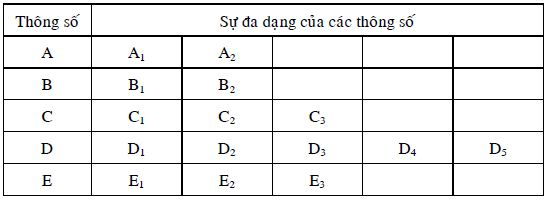
Hình 314: Bảng (ma trận) hình thái dành cho xe chạy điện
Bước 4: Lập các công thức hình thái của đối tượng cần cải tiến
Các công thức hình thái chính là các tổ hợp có dạng tổng quát:
Aa – Bb – Cc – Dd – Ee
trong đó a, b, c, d, e là các số tự nhiên. Mỗi công thức hình thái là mỗi kết cấu xe chạy điện, coi như một ý tưởng cải tiến.
Ví dụ, công thức A1 – B1 – C1 – D1 – E1 có nghĩa là xe điện, chạy bằng ắcquy có dây dẫn điện nối đến động cơ điện một chiều, xe chạy bằng bánh xe và điều khiển bằng vô lăng.
Còn công thức A1 – B1 – C2 – D2 – E2 là xe điện, chạy bằng ắcquy có dây dẫn điện nối đến động cơ điện xoay chiều phi đồng bộ, xe chạy trên đệm không khí và điều khiển bằng tay gạt. Người viết lưu ý bạn đọc, trong trường hợp cụ thể này, cần có thêm bộ phận chuyển đổi điện một chiều của ắcquy thành điện xoay chiều cho phù hợp với động cơ điện.
…………………………………
…………………………………
…………………………………
Số lượng công thức hình thái có thể có của một bảng hình thái cụ thể bằng tích số lượng các cột của từng hàng.
Ví dụ, bảng hình thái trên Hình 314 cho 2 × 2 × 3 × 5 × 3 = 180 công thức hình thái, tức là 180 loại xe chạy điện khác nhau.
Bước 5: Phân tích, đánh giá những phương án thu được ở bước 4 và lựa chọn những lời giải tốt nhất
Bước 5 là giai đoạn ra quyết định. Các chuyên gia xem xét, phân tích, đánh giá từng loại xe chạy điện đối với yêu cầu dùng trong sa mạc và các yêu cầu liên quan khác. Từ đó, các chuyên gia chọn ra các loại xe chạy điện dùng trong sa mạc thích hợp nhất và sắp xếp chúng theo thứ tự ưu tiên cho giai đoạn phát triển ý tưởng thành thành phẩm.
NHẬN XÉT:
- Có bài toán sau:
“Một người ở thành phố A muốn đi tham quan các thành phố B, C và D (không nhất thiết phải theo đúng thứ tự) rồi quay trở về A. Hình 315 là sơ đồ đường đi nối các thành phố và độ dài của chúng tính theo kilômet.
Bạn hãy giúp người đó tìm hành trình tham quan có quãng đường ngắn nhất”.
Bạn có thể thấy, tất cả chỉ có sáu hành trình khác nhau.
Đó là:
1 – ABCDA 2 – ABDCA 3 – ACBDA 4 – ACDBA 5 – ADBCA 6 – ADCBA
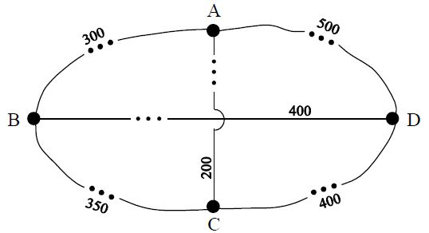
Hình 315: Sơ đồ đường đi nối bốn thành phố A, B, C và D
Nói cách khác, tất cả số phép thử (các hành trình khác nhau) có thể có của bài toán nói trên là sáu, do vậy, tất cả lời giải có thể có cũng chỉ có thể nằm trong sáu phép thử đó. Bằng cách thử lần lượt, bạn chắc chắn sẽ xác định được lời giải (hành trình ngắn nhất) là hành trình nào. Sau khi tính toán (thực hiện các phép thử), bạn có các kết quả:
Hành trình ABCDA: 1550 km
Hành trình ABDCA: 1300 km
Hành trình ACBDA: 1450 km
Hành trình ACDBA: 1300 km
Hành trình ADBCA: 1450 km
Hành trình ADCBA: 1550 km
Từ đây, bạn tìm ra hai hành trình ngắn nhất là ABDCA và ACDBA.
Nhìn theo phương pháp thử và sai (xem mục 2.3 Các ưu và nhược điểm của phương pháp thử và sai của quyển một), bài toán “tham quan” có tất cả sáu phép thử, hai lời giải và α = 6/ 2 = 3. Đây là bài toán có “α” nhỏ, mức khó thấp (xem mục nhỏ 4.2.6 Các mức sáng tạo – các mức khó của bài toán của quyển một).
Giải xong bài toán cụ thể này, bạn có thể nghĩ đến ý tưởng mang tính khái quát: Giá như việc giải tất cả các bài toán khác cũng tương tự như giải bài toán “tham quan” vừa rồi, thì công việc giải bài toán nói chung có thể được chuẩn hóa một cách dễ dàng.
Đấy là, giá như có được phương pháp khách quan, người sử dụng phương pháp ngay từ đầu có thể liệt kê được tất cả các phép thử có thể có của bài toán cần giải. Sau đó, chỉ cần thử lần lượt (nhất là có được sự hỗ trợ của máy tính tốc độ cao), người sử dụng chắc chắn tìm ra hết tất cả các lời giải có thể có.
Rõ ràng, phương pháp cần tìm có ưu điểm lớn so với phương pháp thử và sai. Bởi vì, trong phương pháp thử và sai có nhiều yếu tố chủ quan, ví dụ, tính ì tâm lý làm người giải quên, thiếu hàng loạt các phép thử có thể có, do vậy, cũng thiếu hàng loạt các lời giải có thể có.
Có thể nói, phương pháp phân tích hình thái là phương pháp thể hiện một trong những cố gắng biến ý tưởng khái quát rất hấp dẫn nói trên thành hiện thực.
- Tuy phương pháp phân tích hình thái ưu điểm hơn phương pháp thử và sai nhưng nó vẫn có những nhược điểm nhất định.
Một nhược điểm của phương pháp phân tích hình thái là phương pháp không có công cụ cho phép xác định đầy đủ các thông số cần thiết một cách khách quan. Do vậy, trên bảng hình thái chỉ cần quên đi một thông số, người giải sẽ mất đi một số lượng lớn những phương án giải có thể có.
Bước 5 là giai đoạn khó thực hiện nhất trong phương pháp phân tích hình thái. Trên thực tế, số lượng các công thức hình thái có rất nhiều và không có quy tắc khách quan nào dùng chung cho mọi loại bài toán để làm tăng năng suất sự lựa chọn một cách tin cậy. Do đó, sự lựa chọn thường được tiến hành theo kiểu thử lần lượt hoặc hú họa, tốt hơn, thì thử theo một chương trình nào đó mang tính chủ quan. Một ma trận hình thái có 10 cột và 10 hàng cho ta 10 tỷ các công thức hình thái (phương án giải) khác nhau. Máy tính điện tử, tất nhiên, có ích trong một số trường hợp cụ thể nhất định, nhưng vẫn không giải quyết được vấn đề một cách căn bản.
- Nhằm mục đích giúp bạn đọc dễ hiểu, nhớ và sử dụng phương pháp phân tích hình thái, đồng thời giúp người viết trình bày các nhận xét mang tính thuyết phục, dưới đây người viết dẫn thêm một bài toán nữa giải bằng phương pháp phân tích hình thái.
Bước 1: Phát biểu bài toán một cách chính xác, chọn đối tượng cần cải tiến
“Hãy đưa ra các con búp bê có các hình dạng khác nhau”.
Bước 2: Xác định các bộ phận - chức năng (thông số) chủ yếu của đối tượng cần cải tiến
Đối tượng cần cải tiến là con búp bê, có các bộ phận sau:
A – Đầu
B – Mình
C – Tay
D – Chân
Bước 3: Liệt kê tất cả các hình thái có thể có của các bộ phận - chức năng (thông số) đã được xác định ở bước 2
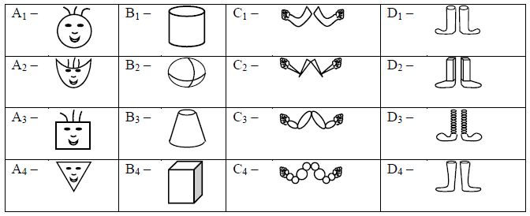
Bảng (ma trận) hình thái của đối tượng búp bê có hình dạng sau (Hình 316)
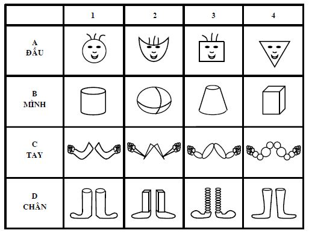
Hình 316: Bảng (ma trận) hình thái của con búp bê
Bước 4: Lập các công thức hình thái của đối tượng cần cải tiến
Aa – Bb – Cc – Dd với a, b, c, d = 1÷4.
Bảng (ma trận) hình thái (Hình 316) cho chúng ta con búp bê khác nhau.
Hình 317 cho chúng ta thấy hình dạng một số con búp bê tương ứng với các công thức hình thái của chúng. Bạn đọc hãy thử vẽ tiếp để có tất cả 256 con búp bê.
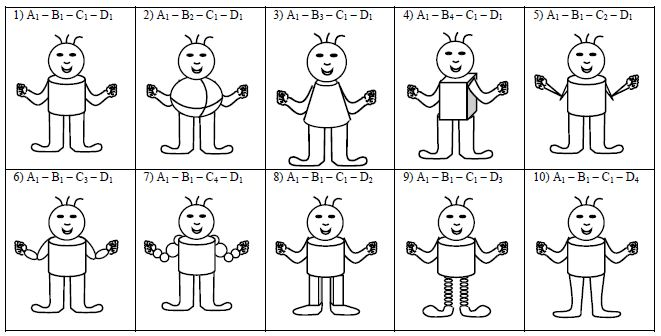
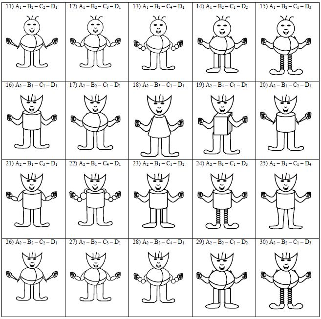
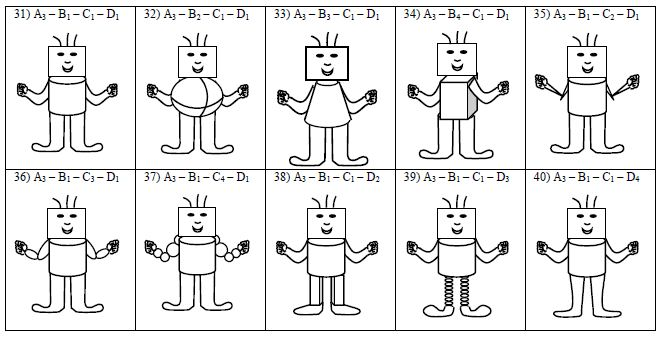
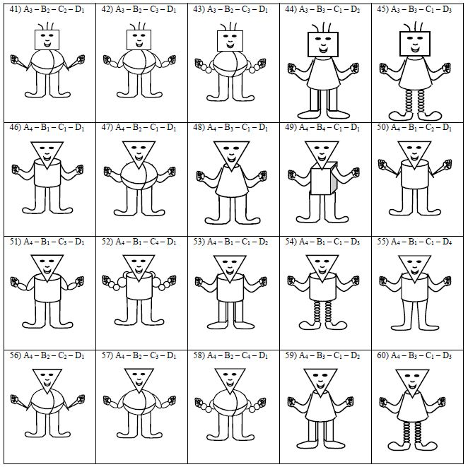
Hình 317: Hình dạng một số con búp bê tương ứng với các công thức hình thái của chúng
- Đối với bài toán “búp bê”, bạn đọc có thể thấy, mỗi con búp bê (mỗi công thức hình thái) trông cũng khá “dễ thương” (xem Hình 317). Nói cách khác, mỗi con búp bê (mỗi công thức hình thái) đều có thể coi là một lời giải (α=1).
Đây là trường hợp đặc biệt (α=1) của loại bài toán có nhiều phép thử (có nhiều công thức hình thái) đồng thời có nhiều lời giải (nhiều công thức hình thái trong số các công thức hình thái có thể có là lời giải). Đấy là loại bài toán có ‚ “α” nhỏ, mức khó thấp. Phương pháp phân tích hình thái cũng như nhiều phương pháp không phải của TRIZ khác thường rất thích hợp cho loại bài toán vừa nêu.
- Tuy nhiên, phương pháp phân tích hình thái cũng như nhiều phương pháp không phải của TRIZ khác lại không thích hợp cho loại bài toán, ở đó có nhiều phép thử có thể có nhưng có ít lời giải (“α” lớn). Nhằm mục đích minh họa ý vừa nêu, người giải lấy một bài toán đặc biệt, ở đó, có thể có tới mười tỷ phép thử, nhưng chỉ có một lời giải duy nhất (α=1010). Bạn đọc thử tưởng tượng khóa số có mười hàng số, mỗi hàng có mười chữ số từ 0 đến 9 (xem Hình 318). Hãy sử dụng phương pháp phân tích hình thái để mở khóa số này.
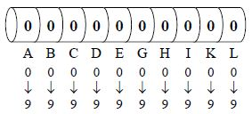
Hình 318: Khóa số với mười hàng số
Giải bài toán “khóa số” theo phương pháp phân tích hình thái, người giải đi đến bảng hình thái sau (xem Hình 319):
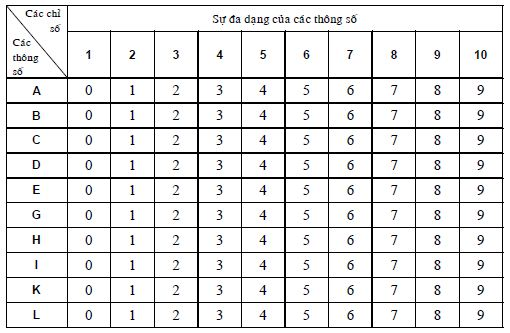
Hình 319: Bảng hình thái của khóa số
Công thức hình thái có dạng tổng quát: Aa - Bb - Cc - Dd - Ee - Hh - Ii - Kk - Ll với các chỉ số a, b, c, d, e, g, h, i, k, l = 1÷10.
Bảng hình thái trên Hình 319 cho ta 1010(mười tỷ) công thức hình thái có thể có nhưng chỉ có một công thức hình thái duy nhất là lời giải (mở được khóa số). Làm sao tìm được công thức hình thái đó đây? Không lẽ thử lần lượt từng công thức hình thái? Máy tính có giúp được không?
Rõ ràng, phương pháp phân tích hình thái không thích hợp cho loại bài toán có mức khó cao với nhiều phép thử nhưng có ít lời giải (“α” lớn) và việc sử dụng máy tính để duyệt, loại bỏ nhanh các phép thử sai từ đó tìm ra lời giải, không phải lúc nào cũng làm được.
- Phương pháp phân tích hình thái giúp làm tăng sự đa dạng và ngược lại, rút gọn sự đa dạng.
Quay trở lại bài toán “búp bê” trong NHẬN XÉT 3, bảng hình thái của con búp bê (xem Hình 316) chỉ có 16 loại đầu, mình, tay, chân khác nhau cho chúng ta tới 256 con búp bê khác nhau (sự đa dạng tăng lên). Mặt khác, điều này còn có nghĩa, thay vì bạn phải nhớ sự đa dạng của 256 con búp bê, bằng phương pháp phân tích hình thái, lập bảng hình thái, rút gọn lại bạn chỉ cần nhớ 16 chi tiết (đầu, mình, tay, chân) khác nhau (sự đa dạng giảm đi 16 lần). Nhân đây, bạn có thể đưa ra loại đồ chơi búp bê chỉ gồm 16 chi tiết nhưng người chơi có thể ghép thành 256 con búp bê khác nhau và các loại đồ chơi hoặc trò chơi tương tự.
Cũng giống như ở trên, bảng hình thái có một trăm ô khác nhau có thể cho ra sự đa dạng lên đến 1010 (mười tỷ) công thức hình thái khác nhau. Ngược lại, sự đa dạng có thể lên tới 1010 (mười tỷ) nhưng nếu chuyển được thành bảng hình thái với mười cột, mười hàng, sự đa dạng rút gọn lại còn 102 (một trăm). Trong trường hợp này, có thể nói, sự đa dạng được rút gọn lại hoặc tăng lên 108 (một trăm triệu) lần.
Nói chung, nếu số cột, số hàng trong bảng hình thái tăng thì hệ số rút gọn hoặc tăng lên của sự đa dạng cũng tăng theo.
- Nhìn theo quan điểm “hệ thống”, hình thái bất kỳ đối tượng nào đều có thể xem là hệ thống và quy về thành các yếu tố, các mối liên kết. Do vậy, người sử dụng phương pháp phân tích hình thái có thể coi các yếu tố, các mối liên kết là các thông số, rồi liệt kê sự đa dạng của từng thông số để từ đó thành lập bảng hình thái. Lúc này, mỗi công thức hình thái của hệ thống có thể xem là một trạng thái hệ thống.
Để đơn giản trong trình bày, người viết lấy một hệ thống gồm ba yếu tố Ⓐ , Ⓑ , Ⓒ sáu mối liên kết giữa chúng LAB, LBA, LAC, LCA, LBC, LCB và môi trường (M) của hệ thống (xem Hình 320).
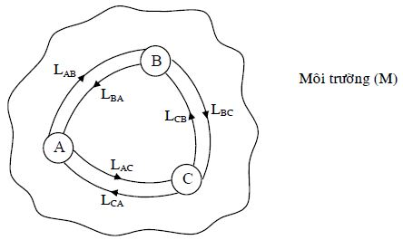
Hình 320: Hệ thống cho trước
Giả sử, mỗi thông số nói trên có thể ở 10 trạng thái khác nhau (mức độ đa dạng của mỗi thông số là 10). Ta có bảng hình thái với 10 cột và 10 hàng (xem Hình 321)
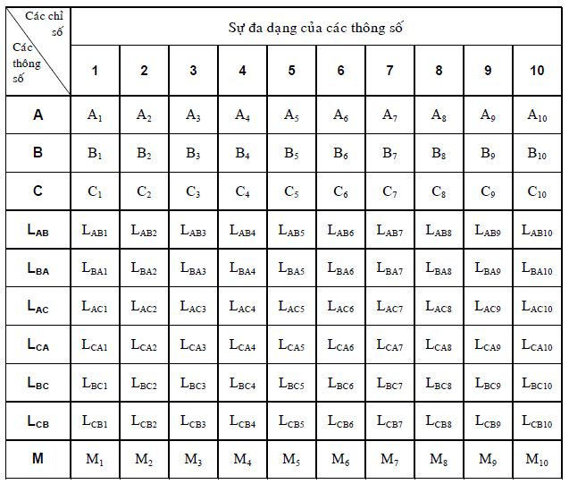
Hình 321: Bảng hình thái của hệ thống cho trước
Bảng hình thái của hệ thống cho trước cho chúng ta tới 1010 các trạng thái khác nhau của hệ thống cho trước.
Từ đây, bạn đọc có thể thấy, đối với các hệ thống có số các yếu tố, các mối liên kết lớn hơn, tình hình có thể trở nên đa dạng và phức tạp như thế nào.
Để bạn đọc dễ hình dung, người viết dẫn thêm một số ví dụ:
- Khối rubic có 43.252.003.274.489.856.000 trạng thái khác nhau.
- Cờ vua có tới 2.10116 ván khác nhau. Chỉ riêng mười nước đi đầu đã có 1,7.1027 phương án.
- Phương pháp phân tích hình thái còn cung cấp cho bạn cách nhìn, cách xem xét để bạn có thể lý giải các đối tượng hoặc các giải pháp sáng tạo đã có. Nói cách khác, ý tưởng cơ sở dùng để xây dựng phương pháp phân tích hình thái mang tính quy luật nhất định.
Các ví dụ dưới đây giúp bạn thấy sự hiện diện ý tưởng của phương pháp phân tích hình thái trong nhiều lĩnh vực nhân tạo (một cách tình cờ hoặc có ý thức) cũng như trong tự nhiên không?
- Các số với các giá trị khác nhau là các tổ hợp khác nhau của các chữ số từ 0 đến 9.
- Các từ là tổ hợp khác nhau của các chữ cái; các câu là các tổ hợp khác nhau của các từ…
- Các bản nhạc là tổ hợp khác nhau của các nốt nhạc.
- Các hợp chất hóa học là các tổ hợp khác nhau của các nguyên tố hóa học.
- Các màu là các tổ hợp khác nhau của ba màu cơ bản: Đỏ, lục, lam.
- Kính vạn hoa với số lượng lớn các hình đa dạng.
- Các món ăn đa dạng.
- Các loại, mốt quần áo, giày dép…
- Kiến trúc sư Nguyễn Tài My được giới kiến trúc – xây dựng biết tên tuổi do một số đề xuất táo bạo của anh trong thiết kế vẽ kiểu nhà. Độc đáo nhất có lẽ là công trình “một triệu lẻ một kiểu biệt thự” của anh ra đời từ năm 1987. Theo anh, không cần thiết mỗi kiểu nhà phải có riêng một bản vẽ. Anh chia mỗi bản kiểu nhà thành 4 phần A, B, C, D. Mỗi phần của bản này có thể ghép với các phần còn lại của bản khác để tạo ra một kiểu nhà mới. Bằng cách làm này, ta có thể tạo ra vô số kiểu nhà từ một số bản vẽ – được chia thành 4 mảnh – không nhiều lắm. Đề xuất sáng tạo này đã trở thành hiện thực qua một loạt nhà ở được xây dựng ở thành phố và nhiều tỉnh, thành phía Nam. Nhiều cán bộ kỹ thuật, nhà thầu xây dựng đã gặp anh mua lại tập bản vẽ “một triệu lẻ một kiểu biệt thự” để ứng dụng. Công trình của anh đã được Hội xây dựng TPHCM, Tổng liên đoàn lao động, Bộ giáo dục – đào tạo… khen thưởng. (Trích bài “Say mê với nghề kiến trúc” của Trương Vân Tiên, báo Sài Gòn Giải Phóng, ngày 1/5/1992).
- Ngành hình sự Cảnh sát quốc tế (Interpol) đã giúp cho ngành cảnh sát hình sự Thái Lan một chương trình thảo chương điện toán có thể vẽ lại mặt một tên tội phạm qua một ít lời khai hay dấu vết nhỏ trên hiện trường. Chương trình này gọi là PICASSO (Program in Computer Assisted Suspect Sketching Outfit), thực ra không liên hệ gì đến nhà danh họa người Tây Ban Nha Picasso cả, chỉ lấy tên ông cho dễ nhớ và cho… có tiếng.
Người ta đưa vào máy tính 82 kiểu tóc mẫu, 34 khuôn mặt mẫu, 108 vành tai mẫu, 72 cặp mắt và chân mày mẫu, 39 mũi mẫu, 58 miệng mẫu, và bằng các phép tính trên máy vi tính, người ta có thể vẽ được 650 tỷ 596 triệu 617 nghìn 216 khuôn mặt mẫu, nghĩa là bao quát tất cả các khuôn mặt của nhân loại hiện có (nhân loại thực ra hiện chỉ có 6 tỷ người!). Vậy là không tội phạm nào thoát đi đâu!
Đưa ra các chi tiết thu nhận được vào máy, chỉ vài phút sau trên mặt máy sẽ hiện ra các khuôn mặt khả nghi, so vào hồ sơ lưu trữ, chọn một khuôn mặt! Đúng phóc!
Người ta đã thí nghiệm và thành công tốt đẹp.
Vấn đề còn nan giải là: nếu tội phạm đeo mặt nạ lúc hành sự thì sao?
Dù vậy, bước đầu cũng giúp tìm được những tên cướp vàng, giựt dọc… một cách nhanh chóng kỳ lạ (theo Trần Thi, dịch từ Asia Magazine, 23/8/1992 trong mục Khoa học – Nghiệp vụ, báo Công An TpHCM, ngày 2/9/1992)
- Nếu đọc lại bộ sách “Sáng tạo và đổi mới” đến đây, bạn đọc sẽ thấy, trên thực tế, người viết đã từng không ít lần sử dụng phương pháp phân tích hình thái để trình bày các ý mà mình muốn nói. Bạn đọc thử tìm xem đấy là những chỗ nào?
- Quay trở lại lịch sử, các mầm mống về phương pháp phân tích hình thái đã có từ rất lâu (xem phần nói về Archimedes trong mục 4.1 Một số cách tiếp cận truyền thống và kết quả của quyển một).
Đến thế kỷ 13, Raimund Lulli (1235 - 1315) – nhà truyền giáo Tây Ban Nha – được xem là người đầu tiên phát biểu ý tưởng cơ sở của phương pháp phân tích hình thái. Ông công bố ý tưởng này trong tác phẩm “Nghệ thuật vĩ đại và tối thượng” (Ars Magna et Ultima). Theo ông, các ý tưởng khoa học có thể được ký hiệu hóa rồi tổ hợp chúng lại theo những cách khác nhau nhằm mục đích thu được các kiến thức mới.
Ông cũng là người sáng chế ra chiếc máy lôgích đầu tiên. Máy là những đĩa hình tròn mỏng đồng tâm có các đường kính khác nhau. Các đĩa này có thể quay độc lập đối với nhau. Rìa mỗi đĩa được ghi bằng những ký hiệu, những từ phản ánh những khái niệm cơ bản, những tính chất của các đối tượng liên quan, những biến thể và các mối quan hệ giữa chúng. Khi quay các đĩa, trên các đường bán kính sẽ thu được sự tổ hợp mới các từ ngữ phản ánh các ý tưởng mới để đem ra phân tích. Trên chiếc máy có 14 đĩa, có thể nhận được tới các cụm từ ngữ khác nhau.
- Nhìn dưới góc độ các thủ thuật (nguyên tắc) sáng tạo cơ bản của TRIZ, phương pháp phân tích hình thái có thể biểu diễn thành:
- Nguyên tắc liên tục các tác động có ích (Thu được thật nhiều ý tưởng sáng tạo).
- Nguyên tắc phân nhỏ + 3. Nguyên tắc phẩm chất cục bộ (Phân tích đối tượng cần cải tiến thành các phần theo tiêu chuẩn nhất định, ví dụ, theo chức năng).
- Nguyên tắc phẩm chất cục bộ (Liệt kê sự đa dạng của các thông số).
- Nguyên tắc kết hợp (Lập bảng hình thái và các công thức hình thái).
- Nguyên tắc tách khỏi (Ra quyết định – lấy những công thức hình thái cần thiết ra khỏi tập hợp các công thức hình thái thu được).
13.3.4 Các phương pháp sáng tạo không phải của TRIZ là các phương pháp bao quát cả quá trình giải bài toán
Trong mục nhỏ này, người viết trình bày các phương pháp sáng tạo không phải của TRIZ là các phương pháp bao quát toàn bộ hoặc gần như toàn bộ quá trình giải bài toán. Bạn đọc đã biết (xem mục 6.2 Mô hình quá trình suy nghĩ giải quyết vấn đề và ra quyết định của quyển hai), toàn bộ quá trình suy nghĩ giải quyết vấn đề và ra quyết định gồm nhiều giai đoạn, mỗi giai đoạn lại có thể phân thành các giai đoạn nhỏ.
Các phương pháp sáng tạo không phải của TRIZ đã được trình bày trong các mục nhỏ trước của quyển sách này (xem 13.3.2 Các phương pháp sáng tạo không phải của TRIZ dựa trên các kinh nghiệmvà 13.3.3 Các phương pháp sáng tạo không phải của TRIZ dựa trên cơ sở khoa học và kinh nghiệm) có đặc điểm chung: Chúng chưa phải là chương trình đầy đủ các chỉ dẫn sử dụng các công cụ tư duy sáng tạo tương ứng, dùng cho tất cả và từng giai đoạn của quá trình suy nghĩ giải bài toán nói chung.
Thật ra, xét theo tiêu chuẩn vừa nêu, “Phương pháp tư duy năm giai đoạn” ở mục nhỏ trước (xem 13.3.3.8) có thể được xếp vào mục nhỏ này. Do “Phương pháp tư duy năm giai đoạn” là của E. de Bono, để thuận tiện cho việc trình bày của người viết và việc theo dõi của bạn đọc, người viết xếp “Phương pháp tư duy năm giai đoạn” vào cùng một nhóm với các phương pháp khác của E. de Bono.
Cũng trong mục nhỏ trước có “Phương pháp đối tượng tiêu điểm” (xem 13.3.3.4) và “Phương pháp phân tích hình thái” (xem 13.3.3.9) được chỉ dẫn tiến hành theo từng bước (giai đoạn) nhưng người viết không xem chúng là phương pháp bao quát cả quá trình giải bài toán. Bởi vì, hai phương pháp vừa nói được sử dụng cho loại bài toán ngay từ đầu đã có thể xác định chính xác được đối tượng cần cải tiến là đối tượng nào và chỉ thực hiện hai giai đoạn phát các ý tưởng cải tiến, ra quyết định sử dụng các ý tưởng phù hợp mục đích đề ra.
Các phương pháp còn lại của mục nhỏ trước, chủ yếu, thực hiện một số công việc nhất định có thể thuộc giai đoạn này hoặc giai đoạn khác, hoặc cùng lúc thuộc vài giai đoạn nhưng không đầy đủ cho tất cả và từng giai đoạn của quá trình suy nghĩ giải bài toán nói chung.
Các phương pháp bao quát cả quá trình giải bài toán trình bày ở mục nhỏ này, tương tự như các phương pháp ở mục nhỏ trước, đều được xây dựng dựa trên các cơ sở nghiên cứu khoa học và kinh nghiệm.
Tuy người viết vẫn tiếp tục dùng thuật ngữ “phương pháp” nhưng trên thực tế, mỗi phương pháp bao quát cả quá trình giải bài toán là hệ thống các phương pháp nhỏ hơn được sắp xếp sử dụng cho phù hợp với từng giai đoạn, mà các phương pháp nhỏ hơn ấy có khi tương đương với các phương pháp đã đề cập đến trong các mục nhỏ trước.
So sánh các phương pháp sáng tạo không phải của TRIZ bao quát cả quá trình giải bài toán với nhau, có thể thấy, chúng khác nhau về mức độ đầy đủ, hiểu theo nghĩa, có những phương pháp là chương trình đầy đủ về các chỉ dẫn sử dụng các công cụ tư duy sáng tạo, đầy đủ về các loại công cụ tư duy sáng tạo (hiểu theo nghĩa rộng), đầy đủ về số lượng các giai đoạn (kể cả các giai đoạn nhỏ) hơn các phương pháp khác. Cho nên, người viết mong rằng, bạn đọc hiểu từ “đầy đủ” ở đây theo nghĩa tương đối, không nên quá gò bó, cứng nhắc.
Do tính chất phức tạp của chúng, để nắm vững các phương pháp sáng tạo không phải của TRIZ bao quát cả quá trình giải bài toán, người ta thường phải tham gia các khóa huấn luyện sử dụng các phương pháp tương ứng. Do vậy, khi chưa có điều kiện, bạn có thể đọc sách, nghiên cứu tài liệu. Điều này có thể giúp ích ít, nhiều cho bạn. Nhưng khi có điều kiện, bạn nên theo học các khóa huấn luyện thì ích lợi mới đầy đủ.
13.3.4.1 Phương pháp Synectics (Synectics Method)
Synectics tiếng Hy Lạp có nghĩa là kết hợp các yếu tố khác nhau và không dính dáng đến nhau thấy rõ (the word Synectics, from the Greek, means the joining together of different and apparently irrelevant elements). Tác giả của phương pháp Synectics là William J.J. Gordon, người Mỹ.
Từ năm 1944, W. Gordon đặt ra mục đích nghiên cứu: Phát hiện các cơ chế tâm lý là cơ sở của hoạt động sáng tạo và tìm cách khai thác, phát triển các cơ chế ấy. W. Gordon nhận ra rằng, đối với quá trình giải quyết vấn đề, cũng như đối với mục đích nghiên cứu quá trình sáng tạo, nhóm làm việc đúng cách thì có nhiều ưu việt hơn cá nhân (We have found that for problem solving, as well as for the purpose of research into creative process, a properly operating group has advantages over an individual). Do vậy, W. Gordon tập trung nghiên cứu các hoạt động của các nhóm giải quyết vấn đề và phương pháp Synectics là phương pháp làm việc tập thể trong lĩnh vực PPLSTVĐM.
Theo W. Gordon có hai loại cơ chế sáng tạo:
Không điều khiển được như các hiện tượng tâm lý, linh tính, trực giác, ngẫu hứng… – những gì thuộc tiềm thức, vô thức, dưới ngưỡng ý thức.
Điều khiển được như sử dụng các thủ thuật, các phép tương tự.
W. Gordon nhấn mạnh sự cần thiết dạy và học cơ chế điều khiển được. Điều này giúp nâng cao năng suất, hiệu quả sáng tạo và tạo điều kiện thuận lợi cho cơ chế tâm lý không điều khiển được phát huy tác dụng.
Synectics được xây dựng nhờ phát triển hai khả năng:
Tạo ra không chỉ một phương pháp mà cả tập hợp các phương pháp – các thủ thuật, các phép tương tự.
Tổ chức các tập thể tối ưu đối với quá trình sáng tạo. Các nhóm Synectics là các nhóm người sáng tạo chuyên nghiệp, được lựa chọn, huấn luyện đặc biệt và dần dần tích lũy các kinh nghiệm cần thiết về phương pháp luận giải các bài toán sáng tạo.
W. Gordon coi lý thuyết Synectics của mình áp dụng cho việc kết hợp các cá nhân đa dạng thành nhóm phát biểu vấn đề và giải quyết vấn đề. Đấy là lý thuyết hướng đến hành động theo cách sử dụng một cách có ý thức các cơ chế tâm lý tiền ý thức tồn tại trong hoạt động sáng tạo của con người. Mục đích của việc phát triển lý thuyết này là làm tăng xác suất thành công trong các tình huống phát biểu vấn đề và giải quyết vấn đề. Sự gia tăng này phụ thuộc vào sự hiểu biết các cơ chế mà các cơ chế đó phải hoạt động xuyên suốt để đạt được các lời giải có tính mới cơ bản (Synectics theory applies to the integration of diverse individuals into a problem - stating problem - solving group. It is an operational theory for the conscious use of the preconscious psychological mechanisms present in man’s creative activity. The purpose of developing such as theory is to increase the probability of success in problem - stating problem - solving situations. This increase depends on awareness of the mechanisms which must be worked through to arrive at solutions of fundamental novelty).
Năm 1952 W. Gordon thành lập nhóm Synectics đầu tiên để giải các bài toán sáng chế tại công ty Arthur D. Little, Inc. Nhóm gồm có nhà vật lý quan tâm đến tâm lý học; kỹ sư cơ điện; nhà nhân chủng học quan tâm đến điện tử học; nghệ sỹ đồ họa được đào tạo thêm về kỹ thuật công nghiệp và nhà điêu khắc có kiến thức về hóa học. Nhóm này đã hoạt động rất có kết quả.
Năm 1960 nhóm này trở thành công ty “Synectics Incorporated” có trụ sở chính tại Cambridge, bang Massachusetts (Mỹ). Công ty Synectics Inc. nhận đơn đặt hàng của các công ty khác để giải các bài toán sáng chế và đào tạo cho họ các nhóm Synectics.
Trong bản giới thiệu công ty Synectics, có định nghĩa sau: “Những nhóm Synectics là những nhóm người có ngành nghề khác nhau, được tập hợp nhau lại với mục đích cố gắng giải một cách sáng tạo các bài toán, bằng việc luyện tập không hạn chế trí tưởng tượng và kết hợp những yếu tố không liên hệ với nhau”.
Các công việc thực hiện của công ty Synectics gồm:
I. Thành lập nhóm Synectics.
Mỗi nhóm có khoảng từ năm đến bảy người. Tuổi của các thành viên trong nhóm từ 25 đến 40. Người chịu trách nhiệm thành lập và huấn luyện nhóm Synectics gọi là Synector.
Các nhóm Synectics là tập hợp cố định những người được tuyển chọn khá khắt khe theo các tiêu chuẩn: Phải có đầu óc linh hoạt, kiến thức rộng, kinh nghiệm thực tế dồi dào, có các chuyên môn khác nhau (người có nhiều chuyên môn càng tốt), mỗi người ít nhiều phải có liên quan đến một bộ môn nghệ thuật nào đó, có khả năng liên tưởng, tưởng tượng tốt và những người này phải có sự tương phản về mặt tâm lý, nhân cách.
Bằng kinh nghiệm, W. Gordon cho rằng, tiêu chuẩn quan trọng nhất chọn các thành viên mới vào nhóm cho trước là đặc tính xúc cảm so với trình độ trí tuệ (In our experience to date, the most important criterion for the selection of new members for a given group is emotional constitution as against intellectual background).
Do vậy, trong việc chọn nhân sự cho hoạt động Synectics, nếu đứng trước sự lựa chọn giữa hai người có trình độ trí tuệ khác nhau nhưng giống nhau về các định hướng xúc cảm, W. Gordon có khuynh hướng chỉ chọn một. Mặt khác, hai người có cùng trình độ trí tuệ nhưng khác nhau về các mẫu phản ứng xúc cảm đều được lấy vào nhóm tích hợp, mà nhóm đó được thiết kế phản ánh sự đa dạng cao nhất (In the selection of personnel for Synectics activity, if we are faced with a choice between two individuals of different intellectual backgrounds, but of similar emotional orientations, our tendency would be to choose only one. On the other hand, two individuals having the same intellectual background but different emotional patterns of response could be included in an integrated group which is designed to reflect extreme diversity).
Nhóm Synectics được cung cấp đầy đủ các phương tiện cần thiết như nhà, xưởng, phòng thí nghiệm để thiết kế, thử nghiệm, sản xuất thử, áp dụng thử.
Là những nhóm cố định, thường xuyên làm việc với nhau, cùng có chung mục đích, quyền lợi, lại được khuyến khích tạo sự thân thiện, hiểu biết lẫn nhau, nên khác với các nhóm phát ý tưởng trong phương pháp não công, các thành viên của nhóm Synectics có quyền phê bình, chỉ trích mà không sợ bị mất lòng hay chạm tự ái người khác.
II. Nhóm Synectics luyện tập từ việc tiếp thu, hiểu bài toán (biến cái lạ thành cái quen – making the strange familiar) đến sử dụng các thủ thuật, các phép tương tự nhằm định hướng tư duy tự phát, khắc phục tính ì tâm lý và nhìn bài toán cho trước dưới những cách xem xét mới (biến cái quen thành cái lạ – making the familiar strange).
Biến cái lạ thành cái quen: Trong bất kỳ tình huống phát biểu bài toán và giải bài toán nào (problem – stating and problem – solving situation), trách nhiệm đầu tiên của mỗi thành viên là hiểu bài toán.
Khi đối mặt với những cái lạ có trong lời phát biểu bài toán, bộ óc con người có khuynh hướng gò chúng vào những mẫu quen thuộc đã có trong trí nhớ. Bộ óc so sánh những cái lạ với những dữ liệu đã biết trước đó và bằng ngôn ngữ của những dữ liệu này biến những cái lạ thành những cái quen thuộc. Nếu dừng lại ở biến cái lạ thành cái quen thì người giải bài toán cũng chỉ thu được những lời giải quen thuộc, thiếu tính mới. Để có được cái mới, cần có những cách nhìn mới đối với bài toán. Nói cách khác, cần biến cái quen thành cái lạ.
Biến cái quen thành cái lạ trong Synectics được thực hiện nhờ các phép tương tự. Các phép tương tự đó là:
- Tương tự cá nhân – Personal Analogy (tương tự chủ quan hay phép nhập thân):
Người giải tưởng tượng biến mình thành đối tượng có trong bài toán để từ góc độ đó tự tìm các ý tưởng giải bài toán. Lúc này, người giải sử dụng các ưu việt của con người mà đối tượng ban đầu vô tri, vô giác, vô cảm không có và nhờ vậy, có được cách nhìn mới giải bài toán: Nhìn từ trong ra thay cho từ ngoài vào.
- Tương tự trực tiếp – Direct Analogy (tương tự thực):
Đối tượng có trong bài toán được so sánh với các đối tượng giống nó ở mức độ nhất định từ các lĩnh vực kỹ thuật hay sinh học…, miễn sao các đối tượng giống nó là các đối tượng có thật. Tiếp theo, người giải bài toán tìm hiểu các ý tưởng dùng trong các đối tượng có thật đó, xem xét khả năng chuyển những ý tưởng đó về áp dụng đối với đối tượng có trong bài toán đang giải.
- Tương tự tượng trưng – Symbolic Analogy (tương tự trừu tượng):
Ở đây cần có sự tương tự về đặc trưng, tính chất giữa hai đối tượng (đối tượng có trong bài toán đang giải và đối tượng ẩn dụ), được thể hiện thành câu, mệnh đề ngắn gọn mang tính biểu tượng văn học, nghệ thuật, được khái quát hóa cao và hàm chứa các nghịch lý của bài toán.
Trên cơ sở biểu tượng của đối tượng ẩn dụ đưa ra, người giải tìm các gợi ý để phát các ý tưởng giải bài toán.
- Tương tự viễn tưởng – Fantasy Analogy (tương tự không có thật, đòi hỏi sự lý tưởng hóa vấn đề):
Người ta đưa vào bài toán những nhân vật thần thoại, cổ tích, các phép màu nhiệm, các điều ước, cây đũa thần, có khả năng thực hiện được ngay những yêu cầu mà người giải bài toán đòi hỏi. Do vậy, đối tượng có trong bài toán lúc này, được hình dung trong óc người giải, không còn là đối tượng có trong thực tế, mà là đối tượng với những chức năng, tính chất mới (nhờ vậy bài toán giải được) người giải mong muốn có, khi không còn cần phải nghĩ đến cách thực hiện.
Từ cách nhìn này, người giải phát các ý tưởng giải bài toán ở mức độ viễn tưởng. Sau đó, người giải cần “phiên dịch” các ý tưởng viễn tưởng này thành các ý tưởng có thể thực hiện được trong thực tế.
Các nhóm Synectics sử dụng các phép tương tự nói trên để tiến hành các giai đoạn giải bài toán, xem Hình 322.
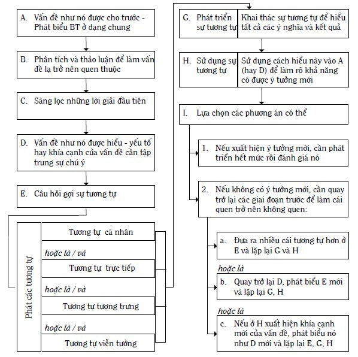
Hình 322: Các giai đoạn giải bài toán của phương pháp Synectics do các nhóm Synectics thực hiện
W. Gordon cho rằng quá trình sáng tạo là quá trình có thể nhận thức được, có thể hoàn thiện được bằng cách thiết lập quan hệ phản hồi, rút kinh nghiệm sau mỗi lần giải bài toán (thông qua việc nghiên cứu lại các ghi chép dưới dạng tốc ký hoặc băng từ ghi quá trình giải) và bằng cách luyện tập thường xuyên giải những bài toán thuộc các lĩnh vực khác nhau.
Mỗi buổi Synectics thường kéo dài vài tiếng đồng hồ. Thời gian còn lại các thành viên của nhóm dành cho các việc khác như nghiên cứu, tìm thông tin, thảo luận, đi tham khảo các ý kiến, làm thí nghiệm…
Các buổi Synectics được ghi lại, sau đó được nghiên cứu cẩn thận để hoàn thiện chiến thuật giải các bài toán tương lai, để xác định quyền ưu tiên và để không bỏ qua bất kỳ ý tưởng có giá trị nào.
Người lãnh đạo nhóm Synectics phải là đạo diễn tài năng, biết khéo léo khai thác khả năng từng người, hướng luồng suy nghĩ từng người tập trung vào bài toán và tạo các hiệu ứng tương tác giữa các thành viên trong nhóm.
Còn bản thân các thành viên, sau những buổi tập luyện, có được các thói quen có ích cho sự sáng tạo như biết tập trung cao độ, có tính nhạy bén, có cách nhìn rộng rãi khi tiếp cận vấn đề, biết cách làm việc tập thể với hiệu quả cao.
Phần học và luyện tập dừng ở đây.
III. Giao cho các nhóm Synectics các bài toán phức tạp do các công ty khác đặt hàng.
IV. Các kết quả thu được của các nhóm Synectics giao trở lại cho các công ty đặt hàng để họ đánh giá và quyết định áp dụng.
Phương pháp Synectics thường dùng để giải các bài toán thiết kế, sáng chế và cả các vấn đề hành chính, xã hội.
NHẬN XÉT:
- Cũng giống như nhiều nhà nghiên cứu khác, W. Gordon bắt đầu từ cách tiếp cận tâm lý.
Một mặt, W. Gordon cũng thấy được tác dụng của các cơ chế tiền ý thức, tiềm thức, vô thức đối với sáng tạo (xem mục 5.6 Ý thức, tiềm thức và vô thức của quyển hai) và tìm kiếm cách sử dụng các cơ chế này một cách có ý thức, thông qua ý thức (xem mục nhỏ 6.4.8 Linh tính của quyển hai).
Mặt khác, W. Gordon cũng phát hiện ra các mẫu do bộ óc (trí nhớ) tạo ra trong quá khứ cản trở người suy nghĩ đi đến các ý tưởng mới (xem mục 6.5 Tính ì tâm lý của quyển hai). Từ đây, W. Gordon cũng đi đến kết luận cần phải “phá” những mẫu quen thuộc bằng các công cụ tạo ra các cách nhìn mới.
Qua nghiên cứu các nhóm làm việc có các kết quả sáng tạo tốt, W. Gordon quyết định chọn các dạng khác nhau của sự tương tự thành các cơ chế làm việc của Synectics (various forms of analogy… became the Synectics operational mechanisms).
Những cơ chế này (tương tự cá nhân, tương tự trực tiếp, tương tự tượng trưng, tương tự viễn tưởng), theo W. Gordon, một mặt, được sử dụng một cách có ý thức nhằm kích thích, tạo tiền đề thuận lợi giúp khai thác các hiện tượng tâm lý thuộc về tiềm thức, vô thức. Mặt khác, cũng chính các phép tương tự này đóng vai trò các công cụ “phá” các mẫu quen thuộc, biến cái quen thành cái lạ để có thể thu được thật nhiều ý tưởng mới.
Như vậy, xét theo ý nghĩa nào đó, các phép tương tự, theo W. Gordon, đóng vai trò hai trong một.
- Người viết đoán rằng lý do trực tiếp làm các nhóm Synectics hay sử dụng các dạng khác nhau của sự tương tự (như W. Gordon quan sát thấy) là, những người thuộc nhóm Synectics có các nghề nghiệp, chuyên môn khác nhau. Nay làm việc tập thể, phải trao đổi bằng lời với nhau, nếu bằng các thuật ngữ chuyên môn riêng của mình thì họ không ai hiểu ai. Họ bắt buộc phải sử dụng các từ ngữ chung hơn, có nghĩa tương tự, gần giống như từ chuyên môn. Đồng thời, để giải thích cái gì đó tương đối phức tạp và sâu về chuyên môn nào đó, thay vì giải thích trực tiếp, những người trong nhóm, để tất cả hiểu nhau, phải giải thích thông qua những đối tượng tương tự, gần gũi với tất cả mọi người.
Điều này, một mặt, kích thích sự liên tưởng, trí tưởng tượng của những người trong nhóm, tạo điều kiện thuận lợi cho các hiện tượng tâm lý thuộc tiềm thức, vô thức hoạt động tích cực. Mặt khác, khi không còn sử dụng các từ ngữ chuyên môn hẹp, phải sử dụng các từ chung hơn, chỉ giống một phần, những người trong nhóm dần thoát khỏi tính ì tâm lý, chuyển dần từ những cái quen sang những cái lạ.
- Con đường đi đến sử dụng các dạng tương tự của W. Gordon trong sáng tạo là con đường đi từ các nghiên cứu cụ thể (nghiên cứu hoạt động của các nhóm cụ thể) đến khái quát.
Trong khi đó, theo người viết, chúng ta có thể đi đến kết luận về sự quan trọng của tương tự theo con đường ngược lại: Từ khái quát đến cụ thể.
Ví dụ, chủ nghĩa duy vật biện chứng cho rằng, thế giới là chỉnh thể thống nhất. Điều này có nghĩa, thế giới tuy rất đa dạng, nhưng có rất nhiều cái chung, giống nhau (tương tự). Chẳng hạn, thế giới thống nhất về tính vật chất, về sự vận động không ngừng, về các quy luật vận động, phát triển, về các tính chất, về các mối quan hệ… ở các mức độ cụ thể – khái quát khác nhau.
Khi đi được từ khái quát đến cụ thể một cách đúng đắn, các kết luận thu được có độ tin cậy cao và phạm vi áp dụng rộng. Điều này làm tăng tính tự tin cho những người sử dụng các dạng tương tự trong sáng tạo để tạo ra sự phát triển.
- Ngoài ra, nếu xem xét rộng hơn các nghiên cứu của W. Gordon và theo suốt chiều dài của lịch sử các phát minh, sáng chế nói riêng, sáng tạo của con người nói chung, các nhà nghiên cứu nhận thấy rất nhiều sản phẩm sáng tạo được đưa ra nhờ sự tương tự. Dưới đây là một số ví dụ:
- Năm 1783, O. Evans, nhà sáng chế người Mỹ bắt chước cách người Ai Cập thời cổ tưới ruộng bằng dây xích có gắn các thùng nước để dùng cho việc chuyên chở các thùng chứa các hạt lúa mì trong các nhà máy xay.
- E. Whitney (người Mỹ) quan sát mèo vồ gà, các sợi lông gà còn dính trong móng vuốt của mèo. Ông sáng chế ra máy tách bông hoạt động theo nguyên tắc tương tự.
- Năm 1903, anh em nhà Wright (Mỹ) gặp vấn đề làm sao cho máy bay ổn định sau khi lượn vòng trong không khí. Họ quan sát chim bay và tìm ra cách giải quyết: Làm cạnh sau của cánh có thể bẻ gập lại.
- G. Westinghouse (Mỹ) cần chế tạo bộ phanh (thắng) dùng cho đoàn xe lửa dài gồm nhiều toa và gặp khó khăn về vấn đề truyền lực thắng.
Đọc trong tạp chí kỹ thuật về xây dựng hầm xuyên núi, ở đó, người ta sử dụng máy khoan dùng khí nén, mà máy tạo khí nén ở cách máy khoan đến 900 mét. Ông sáng chế ra bộ phanh (thắng) dùng khí nén.
- S. Morse, nhà sáng chế điện tín người Mỹ suy nghĩ giải bài toán làm sao có thể truyền tín hiệu đi xa mà vẫn tốt.
Trong một chuyến đi xe ngựa trạm từ New York đến Baltimore, ông để ý thấy người ta không sử dụng ngựa chạy liên tục mà tại mỗi trạm, người ta lại thay những con ngựa mới. Từ đây, ông tìm ra ý tưởng giải bài toán của mình: Xây các trạm trung chuyển làm nhiệm vụ khuếch đại lại tín hiệu bị suy giảm.
- Có hẳn một ngành chuyên nghiên cứu để áp dụng các giải pháp có sẵn trong tự nhiên. Đấy là phỏng sinh học (Bionics):
“Dao cắt gọt kim loại có ba lớp giống như răng của loài gặm nhấm”.
“Các kỹ sư Nhật thiết kế tàu chở hàng có hình dạng cá voi, nhờ vậy, nâng vận tốc tàu lên 20%”.
“Máy di chuyển bắt chước bước đi của người và động vật do hãng General Motors chế tạo di chuyển dễ dàng ở độ dốc 450, là nơi mà các loại xe bánh lăn và bánh xích không đi nổi”.
- Nhà bác học Ba Lan S. Banach nhận xét: “Nhà toán học là người biết tìm ra cái tương tự giữa những điều khẳng định. Nhà toán học giỏi là người xác lập được sự tương tự giữa các cách chứng minh. Nhà toán học giỏi nữa là người nhận ra sự tương tự giữa các lý thuyết. Nhưng còn có thể hình dung ra nhà toán học nhìn thấy sự tương tự giữa các tương tự”.
- Trong bốn phép tương tự sử dụng trong phương pháp Synectics, phép tương tự trực tiếp có lẽ dễ hiểu hơn cả đối với bạn đọc. Nhằm giúp bạn đọc nắm được ba phép tương tự kia, người viết dẫn ra dưới đây ba ví dụ tương ứng.
- Phép tương tự cá nhân:
“Cách dùng búa đập vỡ hạt dẻ (hạt dẻ nói đến ở đây là hạt dẻ tây) để lấy nhân có nhược điểm là phế phẩm cao: Nhiều nhân hạt dẻ bị sứt mẻ, vỡ thành nhiều mảnh. Hãy đưa ra ý tưởng lấy nhân hạt dẻ còn nguyên vẹn”.
Người suy nghĩ giải bài toán tưởng tượng mình chính là nhân hạt dẻ, giống như mình bị nhốt trong phòng kín, tìm cách phá cửa, đục tường thoát ra ngoài nguyên vẹn. Do thay đổi cách xem xét, người suy nghĩ có thể đi đến ý tưởng: Thay vì phá vỡ vỏ hạt dẻ từ ngoài vào thì phá từ trong ra. Ý tưởng khởi đầu này sau đó được hoàn thiện và trở thành ý tưởng áp dụng vào dây chuyền lấy nhân hạt dẻ: Trên thân hạt dẻ được cố định bằng cơ cấu kẹp, mũi khoan khoan một lỗ nhỏ qua vỏ, ống dẫn khí nén được ép sát vào lỗ khoan, áp suất cao của khí nén tạo lực phá từ trong ra làm vỡ vỏ hạt dẻ còn nhân thì vẫn nguyên vẹn.
- Phép tương tự tượng trưng:
“Cần đo nhiệt độ của kim loại ở hơn 1.000°C. Các nhiệt kế đo theo lối tiếp xúc trực tiếp với vật cần đo không thích hợp. Làm thế nào?”
Người sử dụng phép tương tự tượng trưng cần đưa ra biểu tượng văn học, nghệ thuật chứa đối tượng ẩn dụ, bảo đảm ngắn gọn, phản ánh được đối tượng có trong bài toán và hàm chứa nghịch lý.
Ví dụ, người giải trong trường hợp này đưa ra biểu tượng “Tuyết bỏng”. Đây là biểu tượng rất ngắn gọn, chỉ gồm hai từ. “Bỏng” phản ánh nhiệt độ cao còn “tuyết” phản ánh hiện tượng kim loại càng ở nhiệt độ cao càng sáng trắng ra. “Tuyết” và “bỏng” là hai mặt đối lập mâu thuẫn nhau (nghịch lý) vì tuyết lạnh (nhiệt độ thấp) còn bỏng xảy ra ở nhiệt độ cao.
Biểu tượng “Tuyết bỏng” có thể gợi ý phát ý tưởng đo nhiệt độ bằng phương pháp quang học: Đo phổ bức xạ nhiệt của kim loại, từ đó quy ra nhiệt độ của kim loại.
- Phép tương tự viễn tưởng:
Giả sử, bạn phải giải bài toán bắn máy bay bằng tên lửa và trong tay bạn có chiếc đũa thần hoặc điều ước thì sao?
Lúc này, bạn không cần phải nghĩ đến cách thực hiện, bạn chỉ cần nói bạn muốn gì, chiếc đũa thần hoặc điều ước sẽ làm ngay theo ý bạn. Vậy bạn muốn gì? Có phải bạn muốn máy bay đi đâu, tên lửa đuổi theo đến đấy thì bảo đảm trăm phát, trăm trúng không?
Quả thật, từ ý tưởng khởi đầu này, người ta đi tìm những hiệu ứng và cơ chế giúp biến ý tưởng khởi đầu đó thành hiện thực.
- Những người có tính liên tưởng, trí tưởng tượng tốt thì thực hiện các phép tương tự một cách dễ dàng. Điều này giải thích vì sao phải tuyển chọn người vào nhóm Synectics có các khả năng tâm lý tương ứng.
Ngược lại, bạn muốn phát triển tính liên tưởng, trí tưởng tượng của mình, bạn có thể dùng các phép tương tự để luyện tập và nhìn thế giới xung quanh theo cách nhìn của các phép tương tự.
Trong thời đại bùng nổ thông tin hiện nay, các phép tương tự, đặc biệt phép tương tự trực tiếp, rất giúp ích cho người giải định hướng đi tìm các thông tin ý tưởng ở những lĩnh vực phù hợp. Nhờ vậy, người giải sẽ giải bài toán hiệu quả hơn, có mức sáng tạo cao hơn (xem mục nhỏ 6.4.7 Tìm thông tin ý tưởng của quyển hai, phần nói về sự tương tự).
Cùng là những phương pháp dùng cho công việc sáng tạo tập thể, phương pháp Synectics có nhiều điểm khác với phương pháp não công (xem 13.3.2.3 Phương pháp não công của quyển sáu này) như:
- Những người trong nhóm Synectics là những người phải qua tuyển chọn theo những tiêu chuẩn cao và ít cảm tính.
- Sau khi được tuyển chọn vào nhóm Synectics, họ còn được huấn luyện trong thời gian khá dài (một tuần mỗi tháng, trong suốt 12 tháng) về cách làm việc nhóm, sử dụng các thủ thuật, các phép tương tự, luyện tập giải nhiều bài toán thuộc các lĩnh vực khác nhau…
- Nhóm Synectics thực hiện tất cả các giai đoạn của quá trình giải bài toán, trong khi phương pháp não công, chủ yếu, nhấn mạnh giai đoạn phát ý tưởng do nhóm phát ý tưởng thực hiện.
- Nhóm Synectics là nhóm cố định, các thành viên của nhóm làm việc cùng nhau trong thời gian dài (nhiều năm liền). Đấy là nhóm các nhà sáng tạo chuyên nghiệp, coi sáng tạo sáng chế là nghề của mình và làm việc như là một đội.
- Nếu xét nhóm người như là hệ thống các yếu tố liên kết với nhau thì, rõ ràng, các thành viên và các mối liên kết của hệ thống Synectics đều tốt hơn hệ thống não công. Do vậy, tính hệ thống của hệ thống Synectics cao hơn, ưu việt hơn hệ thống não công. Điều này giải thích vì sao các kết quả sáng tạo của các nhóm Synectics cao hơn và ổn định hơn các nhóm não công.
- Căn cứ theo các tiêu chuẩn lựa chọn người vào nhóm Synectics do W. Gordon đưa ra như mỗi thành viên phải có nhiều chuyên môn, có liên quan đến bộ môn nghệ thuật nào đó, chú ý xúc cảm hơn trình độ trí tuệ…, chúng ta có thể thấy, nhóm Synectics có sự đa dạng cao trong từng thành viên và giữa các thành viên với nhau. Điều này rất quan trọng vì các bài toán cần giải rất đa dạng và chỉ có đa dạng mới điều khiển được đa dạng.
Mặt khác, nhấn mạnh sự chú ý đến xúc cảm còn cho thấy, W. Gordon chọn những con người suy nghĩ đi liền với hành động vì cái tác động mạnh mẽ và trực tiếp lên hành động con người là xúc cảm (xem mục 5.4 Xúc cảm của quyển hai).
- Các nhóm Synectics là các nhóm tinh hoa nên có nhiều ưu điểm vượt trội hơn các loại nhóm khác.
Nhưng cũng vì là những nhóm tinh hoa nên phương pháp Synectics khó phổ biến rộng rãi. Các tiêu chuẩn tuyển chọn người đã loại đi số đông. Không phải nơi nào cũng có khả năng đầu tư tạo điều kiện lý tưởng cho nhóm Synectics làm việc. Chưa kể, riêng chi phí thành lập và đào tạo một nhóm Synectics có thể lên tới vài trăm ngàn đôla Mỹ.
Tuy vậy, các phép tương tự là các công cụ, mà theo người viết, cá nhân nào có mong muốn đều có thể tự mình nghiên cứu, luyện tập và áp dụng để giải các bài toán của mình.
- Phép tương tự cá nhân trong phương pháp Synectics có nhược điểm là không bao quát hết các loại bài toán nên có phạm vi áp dụng hẹp. Cụ thể, người giải phải tưởng tượng để nhập thân hoàn toàn vào đối tượng có trong bài toán (ví dụ, người giải tưởng tượng mình là nhân hạt dẻ). Tuy nhiên, có những loại bài toán, ở đó, đối tượng có trong bài toán bị cưa, cắt, nghiền thành bột, bị ăn mòn bởi axít… thì phép tương tự cá nhân tỏ ra rất hạn chế.
Để khắc phục nhược điểm nói trên, G.S. Altshuller đã phát triển phép tương tự cá nhân thành “Phương pháp mô hình hóa (bài toán) bằng những người tý hon” (xem mục nhỏ 13.2.3Các phương pháp sáng tạo của TRIZ dựa trên các cơ sở kháccủa quyển sáu này).
- Nếu như các phép tương tự trong phương pháp Synectics đòi hỏi người sử dụng đi tìm sự tương tự và sự tìm kiếm này có thể lâu hay mau, có thể tìm ra hay không tìm ra, thì các thủ thuật (nguyên tắc) sáng tạo của TRIZ và các tổ hợp của chúng đã chính là các sự tương tự có sẵn (xem điểm 5) Thấy được sự tương tự, thống nhất của các sự vật trong mục 12.4 Tổng kết hệ thống các thủ thuật (nguyên tắc) sáng tạo cơ bản của quyển năm).
Do vậy, theo người viết, những người đã học TRIZ có tiềm năng rất lớn trong việc sử dụng tốt các phép tương tự.
13.3.4.2 Phương pháp của Kepner và Tregoe (Kepner – Tregoe’s Method)
Vào những năm 1950, tiếp theo những nghiên cứu rộng rãi của mình, Charles H. Kepner và Benjamin B. Tregoe (người Mỹ) đã phát triển từ chúng thành một chương trình các quá trình hợp lý (Rational Processes) giải quyết vấn đề và ra quyết định gồm nhiều bước, được thực hiện một cách có ý thức.
Theo Kepner và Tregoe, nhờ chương trình này, các thông tin, phán đoán, đánh giá và kinh nghiệm được tổ chức một cách có ý thức để đáp ứng nhiệm vụ giải quyết thành công các vấn đề và đưa ra các quyết định hợp lý, nhằm đạt được các kết quả cụ thể mà các tổ chức – doanh nghiệp đề ra.
Công ty Kepner – Tregoe, Inc. được thành lập tại thành phố Princeton, bang New Jersey, Mỹ với nhiệm vụ phổ biến phương pháp Kepner – Tregoe thông qua các hoạt động tư vấn và giảng dạy, kể cả giảng dạy tại chỗ theo đơn đặt hàng của các công ty, với thời lượng ba đến năm ngày.
Với thời gian, chương trình Kepner – Tregoe giải quyết vấn đề và ra quyết định được hoàn thiện, thích nghi hóa để phù hợp với mọi loại tổ chức – doanh nghiệp, từ công nghệ cao đến dịch vụ tài chính, từ công nghiệp nặng đến công nghiệp nhẹ.
Chương trình Kepner – Tregoe giải quyết vấn đề và ra quyết định được xây dựng dựa trên cách tiếp cận lôgích, hợp lý, nhất quán. Chương trình dạy các kỹ năng lôgích căn bản giải quyết vấn đề và ra quyết định, tạo nên ngôn ngữ chung cho tất cả nhân viên tham gia, dù ở đấy có cả các kỹ sư hay các thạc sỹ về quản trị kinh doanh. Điều này giúp cho mọi người giao tiếp, làm việc với nhau một cách dễ dàng và hiệu quả.
Chương trình có các mục đích giúp người học:
- Xem xét mình xử lý các vấn đề hiện nay như thế nào.
- Xem xét cách tiếp cận một cách có hệ thống đối với các công việc như: Phân tích các vấn đề; ra quyết định; tránh các vấn đề nảy sinh trong tương lai; nắm bắt các cơ hội; xử lý các vấn đề phức tạp.
- Học cách đặt các câu hỏi một cách có hệ thống.
- Thực hành những gì được học.
- Áp dụng những gì được học vào cuộc sống, công việc.
Chương trình Kepner – Tregoe chia thành bốn phần, còn gọi là bốn quá trình. Kepner và Tregoe giải thích, “quá trình” (process) là tập hợp một cách có hệ thống các bước để đáp ứng (đạt) mục đích (Process: A systematic set of steps to meet a goal).
- Đánh giá tình huống (Situation Appraisal)
Đây là quá trình lập kế hoạch giải quyết một cách có hệ thống các nỗi bận tâm, điều lo lắng (concern).
Kepner và Tregoe giải thích “nỗi bận tâm”, “điều lo lắng” (concern) là: Cảm thấy cần hành động. Điều lo lắng thường là cơ hội cần biến thành hiện thực, vấn đề cần phải giải quyết, quyết định cần phải ra, hoặc kế hoạch phải được thực hiện (Concern: Feeling a need to act. A concern is typically an opportunity to be realized, a problem to be resolved, a decision to be made, or a plan to be implemented).
Còn “vấn đề” (problem) là loại lo lắng khi điều thực sự đang xảy ra sai lệch với điều cần phải xảy ra, bạn không biết tại sao điều đó đang xảy ra và bạn cần biết tại sao (Problem: A type of concern when what is actually happening deviates from what should be happening; you do not know why this is happening; and you need to know why).
Dưới đây là một số ví dụ minh họa khái niệm “điều lo lắng” nói chung và “vấn đề” nói riêng:
- Công ty X mua công nghệ mới và dành 21 tháng để phát triển sản phẩm mới dựa trên công nghệ này.
Thực tế khi tiến hành công việc cho thấy, chi phí trở nên cao hơn dự toán vì chất lượng sản phẩm đem thử không được ổn định. Trong khi đó, nếu những vấn đề này được giải quyết, sản phẩm mới có ưu việt về kỹ thuật hơn hẳn sản phẩm của đối thủ cạnh tranh.
- Một công ty đề ra mục đích cần đưa sản phẩm ra thị trường quốc tế.
Bộ phận tiếp thị (marketing) đã chuẩn bị chiến dịch quảng cáo đặc biệt nhưng không biết chắc cách tiếp cận đó có thật phù hợp với thị trường quốc tế không. Bộ phận bán hàng và bộ phận tiếp thị còn chưa đồng ý với nhau về tầm quan trọng của vấn đề này. Lại còn phải quyết định đăng ký sản phẩm ở một số nước vì sợ rằng những patent của công ty còn chưa được bảo hộ ở đó.
- Nhu cầu của thị trường tăng cao hơn mong đợi đòi hỏi công ty Y phải tìm thêm các nguồn cung.
Trong khi công ty Y chưa tìm ra những nguồn cung cấp mới thì một số đơn đặt hàng đã bị các khách hàng rút lại và cơ hội trở thành công ty dẫn đầu thị trường có thể bị tuột khỏi tầm tay của công ty Y.
- Công ty khách hàng của công ty Z phàn nàn, những nguyên, vật liệu nhận được từ công ty Z có chất lượng sụt giảm, làm sản phẩm của họ phải tồn kho không ít. Họ dọa rằng từ nay trở đi họ sẽ không đặt hàng công ty Z nữa.
- Cơ quan cần phải thay hệ thống điều hòa không khí, nhiệt độ. Hệ thống làm nhiệm vụ sưởi ấm vào mùa đông và làm lạnh vào mùa hè. Đây là hệ thống có tính tập trung cao nên có nhiều ống chạy cả trên trần nhà.
Công việc này phải tiến hành trong giờ làm việc nên chắc chắn sẽ ảnh hưởng đến mọi người. Nhiều người trong số họ sẽ không hài lòng, hoặc kiếm cớ để ra ngoài mà không làm việc, hoặc tìm cách đổ lỗi cho việc trễ hẹn hoàn thành công việc của mình,…
Mục đích quá trình đánh giá tình huống này là phân loại các nỗi bận tâm, điều lo lắng (concern) theo sự ưu tiên.
Để làm điều đó, người giải phải thực hiện các quá trình nhỏ sau:
- Làm công việc nhận dạng các điều lo lắng nhờ liệt kê các mối đe dọa và cơ hội; tách riêng và làm sáng tỏ các điều lo lắng.
- Xác định sự ưu tiên theo các tiêu chuẩn như tính nghiêm trọng; cấp bách và sự mở rộng các ảnh hưởng.
- Lập kế hoạch các bước tiếp theo nhờ xác định loại phân tích cần thiết.
- Lập kế hoạch về sự tham gia, xác định sự giúp đỡ cần thiết.
- Phân tích vấn đề (Problem Analysis)
Đây là quá trình tìm một cách có hệ thống các nguyên nhân của những sai lệch (deviation) dương hoặc âm, mong muốn hoặc không mong muốn.
Kepner và Tregoe giải thích, “sự sai lệch” (deviation) là khoảng ngăn cách thực hiện giữa Cái Cần Có và Cái Thực Có. Các sai lệch có thể dương hoặc âm, mong muốn hoặc không mong muốn – khuyết tật (Deviation: A performance gap between the Should and the Actual. Deviations may be positive or negative, desirable or undesirable – defect).
Mục đích của quá trình này là tránh vội vàng khẳng định ngay nguyên nhân.
Người giải phải thực hiện các quá trình nhỏ sau:
- Mô tả vấn đề bằng cách phát biểu vấn đề, nêu đặc trưng nổi bật của vấn đề.
- Nhận dạng các nguyên nhân thích hợp. Ở đây cần sử dụng kiến thức và kinh nghiệm…
- Đánh giá các nguyên nhân thích hợp qua kiểm tra theo tiêu chuẩn “có”, “không”.
- Xác định, củng cố nguyên nhân thật sự nhờ kiểm tra các giả thiết chấp nhận, quan sát, thí nghiệm…
- Phân tích quyết định (Decision Analysis)
Đây là quá trình thực hiện một cách có hệ thống sự lựa chọn.
Mục đích của quá trình này là tạo sự cân bằng giữa các lợi ích và mạo hiểm, rủi ro.
Người giải phải thực hiện các quá trình nhỏ sau:
- Làm rõ mục đích thông qua việc phát biểu quyết định; phát triển các mục đích nhỏ; phân các mục đích nhỏ thành những cái “phải” và những cái “muốn”; cân nhắc những cái “muốn”.
- Đánh giá các phương án có thể lựa chọn bằng cách đưa ra các phương án có thể lựa chọn; xem xét các phương án có thể lựa chọn nhìn dưới góc độ “phải”; so sánh các phương án có thể lựa chọn với những cái “muốn”.
- Đánh giá các mạo hiểm, rủi ro qua việc nhận dạng các hệ quả có hại.
- Ra quyết định là lấy sự lựa chọn cân bằng tốt nhất.
- Phân tích vấn đề (cơ hội) tiềm ẩn (Potential Problem (Opportunity) Analysis)
Đây là quá trình bảo vệ hoặc mở rộng một cách có hệ thống các hành động hoặc kế hoạch.
Mục đích của quá trình này là tránh các hành động phản tác dụng.
Người giải phải thực hiện các quá trình nhỏ sau:
- Nhận dạng các vấn đề (các cơ hội) tiềm ẩn nhờ phát biểu, xác định các hành động; liệt kê các vấn đề (các cơ hội) tiềm ẩn.
- Nhận dạng các nguyên nhân thích hợp bằng cách tìm hiểu các nguyên nhân đối với vấn đề (cơ hội) tiềm ẩn.
- Hành động mang tính chất ngăn chặn đối với các nguyên nhân đó.
- Lập kế hoạch hành động trong trường hợp vấn đề tiềm ẩn nảy sinh, nhờ vậy việc sống chung với các kết quả do vấn đề tiềm ẩn nảy sinh trở nên dễ dàng hơn. Chuẩn bị sẵn các phương tiện cụ thể cho các hành động đó ở những nơi thích hợp.
- Lập kế hoạch hành động nhằm tối đa hóa các ích lợi của các cơ hội tiềm ẩn.
Mối quan hệ giữa bốn quá trình nói trên thể hiện trong hình vẽ sau (xem Hình 323):
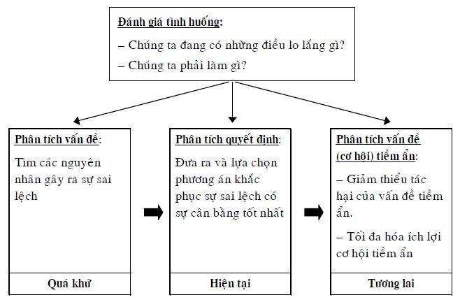
Hình 323: Bốn quá trình của chương trình Kepner – Tregoe
Như vậy, Hình 323 cho thấy, quá trình đánh giá tình huống giúp người sử dụng quyết định vấn đề nào cần phải ưu tiên giải quyết trước và hướng dẫn người đó phải làm gì:
- Đi tìm các nguyên nhân nảy sinh từ trong quá khứ (sử dụng quá trình phân tích bài toán)
- Ra quyết định hiện tại (sử dụng quá trình phân tích quyết định), hoặc
- Lập kế hoạch thực hiện có tính đến các vấn đề (cơ hội) tiềm ẩn có thể xuất hiện trong tương lai (sử dụng quá trình phân tích vấn đề (cơ hội) tiềm ẩn).
Mỗi quá trình, kể cả mỗi quá trình nhỏ của chương trình Kepner – Tregoe là danh sách các câu hỏi được sắp xếp theo thứ tự nhất định mà người sử dụng phải trả lời.
Nhằm giúp bạn đọc dễ hình dung điều vừa nói, người viết dẫn ra dưới đây các câu hỏi của quá trình đánh giá tình huống (xem Hình 324):
• Nhận dạng những điều lo lắng
∗ Liệt kê những điều đe dọa và những cơ hội
- Những sai lệch nào đang xảy ra?
- Cần phải ra những quyết định nào?
- Những kế hoạch nào cần phải thực hiện?
- Những thay đổi nào có thể nhìn thấy trước?
- Tồn tại những cơ hội nào?
- Điều gì làm bận tâm chúng ta về…?
∗ Tách riêng và làm sáng tỏ những điều lo lắng
- Ý của chúng ta về cái này là gì?
- Cái này chính xác là gì?
- Còn có gì nữa làm chúng ta lo lắng về…?
- Chúng ta có bằng chứng nào?
- Những sai lệch, quyết định hoặc kế hoạch khác nhau nào là một phần của điều lo lắng này?
• Thiết lập sự ưu tiên
∗ Điều lo lắng nào cần được chúng ta ưu tiên làm việc trước? Hãy xem xét tính nghiêm trọng (quan trọng).
- Cái gì hiện nay ảnh hưởng nhiều đến mọi người, sự an toàn, chi phí, năng suất, khách hàng, danh tiếng…?
- Điều lo lắng nào là quan trọng nhất?
∗ Điều lo lắng nào cần được chúng ta ưu tiên làm việc trước? Hãy xem xét tính cấp bách.
- Bao giờ hết hạn? Khi nào chúng ta phải bắt đầu?
- Khi nào việc giải quyết trở nên khó khăn, giá thành cao hoặc không thể làm được?
- Điều lo lắng nào sẽ khó giải quyết nhất nếu giải quyết trễ?
∗ Điều lo lắng nào cần được chúng ta ưu tiên làm việc trước? Hãy xem xét sự mở rộng.
- Cái gì sẽ ảnh hưởng tương lai nhiều?
- Có bằng chứng về tính quan trọng sẽ thay đổi không?
- Điều lo lắng nào trở nên tồi tệ nhanh hơn?
• Lập kế hoạch cho các bước tiếp theo
∗ Xác định loại phân tích cần thiết (sử dụng tiếp quá trình nào?)
∗ Quá trình đánh giá tình huống
- Chúng ta cần làm rõ thêm nữa không?
∗ Quá trình phân tích vấn đề
- Chúng ta có sự sai lệch so với cái cần có?
- Biết nguyên nhân không?
- Chúng ta có cần biết nguyên nhân của sự sai lệch để hành động một cách có hiệu quả?
∗ Quá trình phân tích quyết định
- Chúng ta có cần sự lựa chọn không?
∗ Quá trình phân tích vấn đề (cơ hội) tiềm ẩn
- Chúng ta có hành động hoặc có kế hoạch để bảo vệ (tăng cường) không?
- Cần bao nhiêu chi phí cho quá trình?
• Lập kế hoạch thực hiện
∗ Xác định sự giúp đỡ cần thiết
- Cái gì cần làm và khi nào?
- Ai cần tham gia đối với các việc như thông tin? Trách nhiệm? Thực hiện? Phân tích? Ủng hộ (cho phép)? Phát triển? Sáng tạo?
- Ai sẽ lập hồ sơ quá trình và các kết quả của chúng ta.
Hình 324: Các câu hỏi của quá trình đánh giá tình huống
Tương tự như vậy, các quá trình khác như phân tích vấn đề, phân tích quyết định, phân tích vấn đề (cơ hội) tiềm ẩn đều có các danh sách các câu hỏi của mình.
Kepner và Tregoe cho rằng quá trình suy nghĩ là các công việc thu thập, phân loại, tổ chức, phân tích, củng cố các thông số đầu vào (thông tin, kinh nghiệm, phán đoán, kiến thức) để có được kết quả là vấn đề được giải quyết.
Trong toàn bộ quá trình suy nghĩ, kỹ năng đặt các câu hỏi được coi là kỹ năng chìa khóa (questioning is a key skill). Những người đặt các câu hỏi một cách có hiệu quả là những người hiểu:
- Mục đích các câu hỏi của họ nhắm đến.
- Các giả thiết được chấp nhận mà họ đưa ra.
- Tầm quan trọng của việc chọn từ ngữ một cách cẩn thận.
- Họ có thể nhận các câu trả lời ở đâu.
Theo Kepner và Tregoe, việc áp dụng các quá trình vào các tình huống thực tế có thể chia thành hai loại:
Áp dụng đầy đủ quá trình.
Áp dụng quá trình một cách không đầy đủ hoặc áp dụng quá trình theo kiểu phản ứng nhanh.
Những tiêu chuẩn sau giúp bạn xác định khi nào dùng loại áp dụng đầy đủ quá trình:
- Đấy là tình huống ưu tiên cao và bạn muốn chắc chắn rằng hành động phải hiệu quả.
- Đấy là tình huống phức tạp và bạn không thể xử lý thông tin thầm trong đầu. Ở đấy bạn có nhu cầu nhìn thấy rõ (there is need for visibility) nhiều thứ.
- Đấy là tình huống cho phép có lượng thời gian hợp lý để tiến hành sự phân tích.
- Đấy là tình huống mới, không quen thuộc, hoặc không bình thường. Ở đấy không có câu trả lời dễ dàng và thấy rõ.
Còn dưới đây là các tiêu chuẩn giúp bạn xác định khi nào dùng loại áp dụng phản ứng nhanh:
- Phải có ngay lời giải, quyết định.
- Tình huống cho phép xử lý thông tin nhanh.
- Tình huống quan trọng, mà không mới, không lạ hoặc không quan trọng nhất, do vậy, bạn chỉ cần cẩn thận và hiệu quả như khả năng bạn có thể.
NHẬN XÉT:
Về mặt hình thức, phương pháp Kepner – Tregoe khá giống các phương pháp các câu hỏi kiểm tra (xem 13.3.2.2 Nhóm các phương pháp các câu hỏi kiểm tra của quyển sáu này). Bởi vì, phương pháp Kepner – Tregoe được trình bày như là bản danh sách các câu hỏi, mặc dù, số lượng các câu hỏi có trong phương pháp Kepner – Tregoe nhiều hơn hẳn các “Danh sách” khác đã trình bày.
Phương pháp Kepner – Tregoe đặc biệt giống “Danh sách các câu hỏi kiểm tra của G. Polya”, hiểu theo nghĩa, cả hai danh sách đều tập hợp các câu hỏi phản ánh một cách lôgích, hợp lý các giai đoạn (mà Kepner – Tregoe gọi là các quá trình) suy nghĩ giải bài toán về mặt thời gian và người sử dụng phải trả lời lần lượt từng câu hỏi theo thứ tự đã được sắp xếp (tổ chức).
Trong khi đó, các “Danh sách” khác cho phép người sử dụng chọn bất kỳ câu hỏi nào mà mình thấy thích hợp đối với mình, khi đang ở giai đoạn nào đó của quá trình giải bài toán.
Tuy nhiên, “Danh sách các câu hỏi kiểm tra của G. Polya” chỉ dùng để giải các bài tập toán học trong các trường phổ thông, còn phương pháp Kepner – Tregoe có phạm vi áp dụng khác, rộng hơn.
- Các câu hỏi có trong phương pháp Kepner – Tregoe, chủ yếu, là các câu hỏi mang tính lôgích tạo thành quá trình hợp lý, được hai tác giả giải thích:
*“Quá trình hợp lý là trình tự cần thiết các bước mà nhờ vậy, thông tin và các phán đoán được tổ chức sao cho kết luận có thể đạt được và hành động thích hợp có thể được tiến hành* (Rational Process: A necessary sequence of steps by which information and judgments are organized so that a conclusion can be reached and appropriate action taken)”.
Điều này có nghĩa, về mặt nội dung, so với các “Danh sách” khác (ví dụ, “Danh sách các câu hỏi kiểm tra của T. Eiloart”), phương pháp Kepner – Tregoe hầu như thiếu các câu hỏi liên quan đến các kinh nghiệm, thủ thuật, phương pháp sáng tạo.
Tương tự như vậy, trong phương pháp Kepner – Tregoe hầu như không có những câu hỏi kích thích hoạt động tích cực của các hiện tượng tâm lý như liên tưởng, trí tưởng tượng, linh tính…, mà những hiện tượng tâm lý đó rất quan trọng đối với sáng tạo.
Các điểm 3 và 4 nói trên cho thấy Kepner và Tregoe xây dựng phương pháp của mình, chủ yếu, là nhằm giải quyết các vấn đề có thể giải quyết được bằng phương pháp lôgích (hình thức). Cụ thể hơn, theo Kepner và Tregoe, đấy là những vấn đề có sự sai lệch so với các cái cần có.
Tuy vậy, người viết cho rằng, phương pháp Kepner – Tregoe có lẽ thích hợp nhất đối với các vấn đề, ở đó có yêu cầu sửa chữa, khôi phục các đối tượng để khắc phục các sai lệch có trong các hoạt động của chúng so với chuẩn đã thiết kế.
Nói cách khác, phương pháp Kepner – Tregoe không nhắm tới giải các bài toán có mức khó tương đối cao và tương đương là các mức sáng tạo tương đối cao. Có lẽ vì vậy mà trong từ điển các thuật ngữ (Glossary) của phương pháp Kepner – Tregoe, người viết không tìm thấy các từ (khái niệm) cùng các định nghĩa của chúng như sáng tạo (creativity), đổi mới (innovation), sáng chế (invention).
Phương pháp Kepner – Tregoe khuyên người ra quyết định phải chọn giải pháp cân bằng tốt nhất, đồng thời cũng khuyên chuẩn bị sống chung với các kết quả (dù đã cố gắng giảm thiểu tác hại) do các vấn đề tiềm ẩn nảy sinh gây ra. Điều này có nghĩa, phương pháp Kepner – Tregoe chấp nhận việc dung hòa mâu thuẫn chứ không đặt mục đích phải giải quyết mâu thuẫn như TRIZ.
Cụm từ “một cách có hệ thống” (systematic hoặc systematically) thường được nhắc đi nhắc lại nhiều lần trong phương pháp Kepner – Tregoe. Cụm từ đó được hiểu theo nghĩa thông thường là một cách đầy đủ, mạch lạc, rõ ràng chứ không phải Kepner và Tregoe sử dụng cách tiếp cận hệ thống (xem mục nhỏ 10.2.1 Một số khái niệm cơ bản và ý tưởng chung về hệ thống của quyển ba) để xây dựng phương pháp của mình.
13.3.4.3 Phương pháp “Giải quyết vấn đề một cách sáng tạo” (Creative Problem Solving Method)
Cụm từ tiếng Anh “creative problem solving” (giải quyết vấn đề một cách sáng tạo), ở dạng không viết hoa như trên, dùng để chỉ các nỗ lực của cá nhân hoặc tập thể suy nghĩ một cách sáng tạo để giải quyết vấn đề.
Còn khi viết hoa “Creative Problem Solving” và viết tắt là CPS, cụm từ được các tác giả dùng làm tên gọi cho phương pháp của họ. Do vậy, để cho thuận tiện và cho gọn, từ nay người viết sẽ gọi là phương pháp CPS, hoặc gọn nữa là CPS.
- Donald J. Treffinger trong quyển sách “Lãnh đạo hỗ trợ: Tạo sự khác biệt nhờ Giải quyết Vấn đề một cách Sáng tạo” (Facilitative Leadership: Making a Difference with Creative Problem Solving, 2000) thuật lại lịch sử hình thành và phát triển phương pháp CPS:
Alex Osborn (tác giả của “Danh sách các câu hỏi kiểm tra của Osborn” – xem 13.3.2.2 Nhóm các phương pháp các câu hỏi kiểm tra; “Phương pháp não công” – xem 13.3.2.3 Phương pháp não công của quyển sáu này) là một trong những người sáng lập công ty quảng cáo Batten, Barton, Durstine & Osborn và cũng là người sáng lập Tổ chức giáo dục sáng tạo (Creative Education Foundation). Trong quyển sách “Đánh thức trí óc của bạn” (Wake up your Mind, 1952), A. Osborn mô tả phiên bản đầu tiên của phương pháp CPS gồm bảy giai đoạn.
Bảy giai đoạn đó là: Định hướng (chỉ ra vấn đề); chuẩn bị (thu thập các dữ liệu thích hợp); phân tích (các dữ liệu thích hợp); giả thiết (tạo các ý tưởng có thể lựa chọn); ươm nuôi (tạo sự thuận lợi cho các cảm hứng, ngẫu hứng xuất hiện); tổng hợp (lắp các mảnh rời rạc lại với nhau); kiểm tra (đánh giá các kết quả). A. Osborn đưa ra mô hình này dựa trên các kinh nghiệm làm việc trong lĩnh vực quảng cáo của mình. Quyển sách tiếp theo của A. Osborn “Trí tưởng tượng ứng dụng” (Applied Imagination, 1953, 1957) phổ biến mô hình CPS này và thuật ngữ “não công”.
Năm 1963, khi hoàn thiện quyển sách “Trí tưởng tượng ứng dụng”, A. Osborn đã đưa ra biến thể mới của phương pháp CPS gồm ba giai đoạn. Ông cho rằng phiên bản mới hiệu quả hơn phiên bản bảy giai đoạn. Ba giai đoạn đó là: Tìm sự kiện (nhấn mạnh việc xác định vấn đề và chuẩn bị); tìm ý tưởng (phát và phát triển các ý tưởng); tìm lời giải (đánh giá và tiếp nhận lời giải cuối cùng).
Sau đó A. Osborn cộng tác với nhà tâm lý học Sidney Parnes – sau này là giáo sư Trung tâm nghiên cứu sáng tạo (Center for Studies in Creativity) thuộc Đại học Buffalo, bang New York, Mỹ, nghiên cứu hoàn thiện mô hình CPS.
Sau khi A. Osborn chết năm 1966, S. Parnes cùng các cộng sự phát triển tiếp phiên bản của A. Osborn thành phương pháp CPS với phiên bản năm giai đoạn và đưa vào thực hành tại Đại học Buffalo thông qua dự án nghiên cứu sáng tạo (Creative Studies Project) và nhiều chương trình khác.
Năm giai đoạn gồm: Tìm sự kiện (Fact - Finding); tìm vấn đề (Problem - Finding); tìm ý tưởng (Idea - Finding); tìm lời giải (Solution - Finding); tìm sự tiếp nhận (Acceptance - Finding). Cho đến lúc này, mô hình các giai đoạn của phương pháp CPS chỉ được mô tả bằng ngôn ngữ mà chưa có các hình vẽ minh họa cần thiết và rõ ràng. Hình vẽ đầu tiên minh họa mô hình CPS của S. Parnes còn mang tính sơ khai.
Ruth Noller đã làm việc cùng với S. Parnes để hoàn thiện mô hình CPS năm giai đoạn và xây dựng được hình vẽ minh họa cho mô hình CPS năm giai đoạn đầy đủ hơn so với hình vẽ đầu tiên (xem Hình 325).
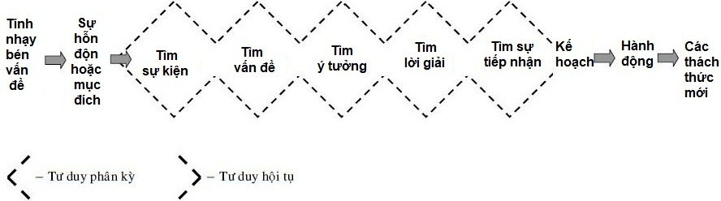
Nguồn: Noller R.B., Parnes S.J., Biondi A.J. Creative Actionbook. New York: Scribners. 1976
Hình 325: Mô hình CPS Osborn - Parnes năm giai đoạn
Quả thật, hình vẽ mô hình CPS được thể hiện trên Hình 325, lần đầu tiên minh họa sự thay đổi để bổ sung cho nhau của tư duy phân kỳ và tư duy hội tụ trong quá trình CPS.
Tư duy phân kỳ được hiểu là việc tạo ra nhiều các câu trả lời, các ý tưởng, các phương án hoặc các sự lựa chọn có thể có đối với câu hỏi mở, nhiệm vụ hoặc thách thức. Tư duy phân kỳ thường được dùng một cách không chính thức như thuật ngữ tương đương với tư duy sáng tạo (Divergent Thinking: Generating many possible responses, ideas, options, or alternatives in response to an open - ended question, task, or challenge. Often used casually as equivalent to creative thinking).
Tư duy hội tụ được giải thích là sự hợp nhất các khả năng lại với nhau hoặc sự lựa chọn từ nhiều khả năng; củng cố, hoàn thiện các ý tưởng; đạt được kết luận, sự tổng hợp hoặc câu trả lời đúng. Tư duy hội tụ thường được dùng một cách không chính thức như thuật ngữ tương đương với tư duy phê bình (Convergent Thinking: Bringing possibilities together, or choosing from among many alternatives, to strengthen, refine, or improve ideas, and to reach a conclusion, synthesis, or correct response. Often used casually as an equivalent to critical thinking).
Tuy vậy, hình minh họa (xem Hình 325) cũng tạo nên hình ảnh về quá trình sáng tạo như là các giai đoạn buộc phải tuân theo sự tuần tự, tuyến tính một cách chặt chẽ. Nó cho thấy rằng, phương pháp CPS luôn bắt đầu bằng một điểm giống nhau rồi sau đó phải trải qua lần lượt tất cả năm giai đoạn để kết thúc với kế hoạch hành động và sẵn sàng đối phó với những thách thức mới. Trong khi đó, hình ảnh nói trên chỉ là một trong các quỹ đạo có thể có của quá trình sáng tạo trên thực tế.
Phiên bản CPS năm giai đoạn của Osborn – Parnes đã được phổ biến rộng rãi trong các chương trình học tập của Đại học Buffalo những năm 1970, 1980 và thông qua các seminar, hội thảo, lớp học CPS ngắn ngày (Creative Problem Solving Institute, viết tắt là CPSI, đọc là sip - si).
Một số nhà khoa học của Trung tâm nghiên cứu sáng tạo cũng đồng thời tiếp tục nghiên cứu phương pháp CPS thông qua các nỗ lực phát triển các chương trình đào tạo và áp dụng có tổ chức phương pháp CPS vào các môi trường khác nhau.
Năm 1982 Donald J. Treffinger, Scott G. Isaksen và Roger Firestien bắt đầu tìm ra được những cách để bảo đảm rằng phương pháp CPS tạo ra sự cân bằng tốt hơn giữa các công cụ tư duy phân kỳ và tư duy hội tụ (divergent and convergent – thinking tools). Vào thời gian đó, phần lớn các công cụ có trong phương pháp CPS (cũng như những nhấn mạnh có trong các bài giảng) tập trung vào tư duy phân kỳ. Điều này đã làm tăng các nỗ lực của các nhà nghiên cứu đi tìm và xây dựng các công cụ tư duy hội tụ.
Thông qua các kinh nghiệm, các buổi làm việc với các doanh nghiệp và các nhóm giáo dục, R. Firestien và D. Treffinger bắt đầu nghiên cứu vai trò và sự ảnh hưởng mạnh mẽ của việc hiểu khách hàng, hay còn gọi là người sở hữu (có) vấn đề (problem owner) đối với việc sử dụng phương pháp CPS. S. Isaksen cũng tiếp tục những nghiên cứu làm rõ vai trò của người hỗ trợ (facilitator) và những vai trò giao tiếp khác tham gia vào quá trình sử dụng phương pháp CPS.
Đến năm 1985, Isaksen và Treffinger bắt đầu tạo mô hình CPS biến thể từ mô hình Osborn – Parnes năm giai đoạn (xem Hình 325) bằng cách đưa thêm giai đoạn nữa – giai đoạn “Tìm sự hỗn độn” (Mess-Finding) đứng trước năm giai đoạn đã có và đổi tên giai đoạn “Tìm sự kiện” (Fact - Finding) thành giai đoạn “Tìm dữ liệu” (Data - Finding). Mô hình CPS biến thể được mô tả trên Hình 326.
“Sự hỗn độn” hay “không trật tự” là thuật ngữ mô tả sự thách thức hoặc cơ hội tồn tại trong phạm vi nhiệm vụ, mà chúng chưa được tập trung chú ý hoặc xem xét; sự hỗn độn là các mục đích rộng chưa được xác định tốt, được phát biểu ngắn gọn hoặc cô đọng và được thể hiện một cách có lợi (tức là, có nhấn mạnh đến hướng mang tính chất xây dựng đối với các nỗ lực sáng tạo) \[Mess: A term used to describe a challenge, or opportunity that exists within a task domain, that has not yet been focused or carefully examined; messes are broad, ill-defined goals; stated briefly or concisely, anh expressed beneficially (i.e., with emphasis on a constructive direction for creative efforts)\].
Còn “Tìm sự hỗn độn” là một trong sáu giai đoạn trong quá trình CPS, tại đó nhiều mục đích chung hoặc các điểm xuất phát được xem xét để giải quyết vấn đề. Trong buổi thực hiện CPS, một sự hỗn độn thường được xem như một vùng rộng sự bận tâm mà những nỗ lực giải quyết vấn đề tiếp theo tập trung vào đó (Mess - Finding: One of the six stages in the CPS process in which many general goals or starting points for problem solving are considered. In a CPS session, one mess is usually identified as a broad area of concern on which to focus further problem - solving efforts).
Mặc dù Isaksen và Treffinger đã nhấn mạnh tính linh động của phương pháp CPS trong phiên bản của mình (xem Hình 326) nhưng hình vẽ minh họa vẫn tiếp tục làm cho người sử dụng phương pháp CPS hiểu rằng cần phải thực hiện tuần tự, lần lượt các bước, các giai đoạn. Để khắc phục điều này, năm 1987, Isaksen và Treffinger tổ chức lại sáu giai đoạn (xem Hình 326) thành ba thành phần chính (three main components):
- Thành phần “Hiểu vấn đề” (Understanding the Problem) bao gồm ba giai đoạn “Tìm sự hỗn độn”, “Tìm dữ liệu” và “Tìm vấn đề”.
- Thành phần “Phát ý tưởng” (Generating Ideas) cũng chính là giai đoạn “Tìm ý tưởng”.
- Thành phần “Lập kế hoạch hành động” (Planning for Action) gồm hai giai đoạn còn lại: “Tìm lời giải” và “Tìm sự tiếp nhận”.
QUY TRÌNH CPS
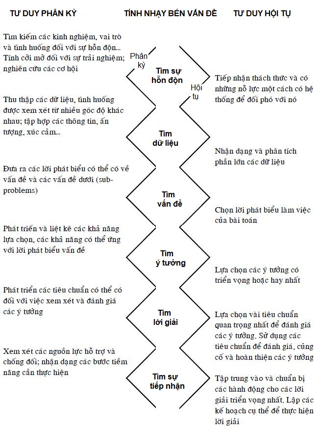
Nguồn: Isaksen S.G., Treffinger D.J. Creative Problem Solving: The Basic Course. Buffalo, New York: Bearly Limited. 1985
Hình 326: Mô hình CPS sáu giai đoạn
Việc trình bày phương pháp CPS như là ba thành phần tạo nên đã đánh giá lại sự chuyển đổi từ cách tiếp cận tuyến tính sáu giai đoạn sang cách tiếp cận thành phần (components) mang tính linh động hơn. Điều này thể hiện trên mô hình CPS, được minh họa bằng Hình 327.
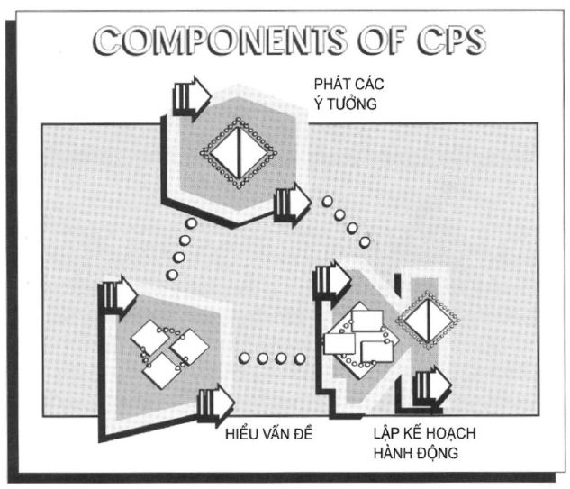
Nguồn: Isaksen S.G., Dorval K.B. Changing View of CPS: Over 40 years of Continuous Improvement. International Creativity Network, 3, 1 - 5. 1993
Hình 327: Các thành phần của phương pháp CPS
Mô hình các thành phần của phương pháp CPS (xem Hình 327) mô tả mối quan hệ linh động giữa các thành phần và các giai đoạn của CPS. Mỗi thành phần đều có đầu vào, quá trình xử lý và đầu ra để giúp người sử dụng hiểu khi nào sử dụng thành phần nào và sử dụng như thế nào thì thích hợp nhất.
Các nghiên cứu tiếp theo đã giúp Isaksen, Dorval và Treffinger hoàn thiện mô hình các thành phần của phương pháp CPS (xem Hình 327) bằng cách bổ sung thêm các phương tiện xử lý, còn gọi là các siêu thành phần (metacomponents): “Đánh giá nhiệm vụ” (Task Appraisal) và “Lập kế hoạch quá trình” (Process Planning). Mô hình mới của phương pháp CPS được mô tả trên Hình 328.
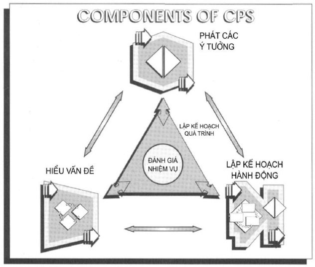
Nguồn: Isaksen S.G., Dorval K.B., Treffinger D.J. Creative Approaches to Problem Solving (Revised 2nd ed.). Dubuque, I.A: Kendall/Hunt, 2000
Hình 328: Mô hình bổ sung các thành phần của phương pháp CPS
Cũng như các thành phần (components), các siêu thành phần (metacomponents) thực hiện các công việc lập kế hoạch, hướng dẫn, quản lý và tạo biến thể các hành vi của người sử dụng CPS.
Siêu thành phần “Đánh giá nhiệm vụ” liên quan đến việc xác định phương pháp CPS có thích hợp hay không đối với nhiệm vụ cho trước và có cần tạo biến thể cho cách tiếp cận của người sử dụng hay không? Khi sử dụng “Đánh giá nhiệm vụ”, các cá nhân hoặc các nhóm xem xét những người liên quan chính, kết quả muốn có, các đặc thù của tình huống và các phương pháp có thể có thích hợp với việc thi hành nhiệm vụ. “Đánh giá nhiệm vụ” cho phép những người sử dụng đánh giá mức độ thích hợp của phương pháp CPS.
Nếu những người sử dụng xác định rằng, phương pháp CPS đưa ra được các công cụ liên quan có ích đối với việc thi hành nhiệm vụ, lúc đó, họ chuyển sang siêu thành phần “Lập kế hoạch quá trình” để lập kế hoạch điểm thâm nhập của họ vào phương pháp CPS, lập quỹ đạo của quá trình sử dụng phương pháp CPS và lối ra thích hợp.
Tóm lại, có thể coi các siêu thành phần “Đánh giá nhiệm vụ” và “Lập kế hoạch quá trình” là các công việc chuẩn bị để cá nhân hoặc nhóm chính thức sử dụng phương pháp CPS theo quỹ đạo bao gồm các thành phần, các giai đoạn, được cá nhân hoặc nhóm đó lựa chọn một cách thích hợp nhất. Như vậy, mô hình bổ sung các siêu thành phần của phương pháp CPS (xem Hình 328) mang tính linh động cao, thay đổi một cách tối ưu tùy thuộc vào các nhiệm vụ cụ thể và những người sử dụng cụ thể, chứ không phải là chuỗi các bước phải được tiến hành tuần tự, lần lượt một cách tuyến tính chặt chẽ, cứng nhắc, như biểu diễn trên các Hình 325 và Hình 326.
- Trên đây là tóm tắt quá trình lịch sử hình thành và phát triển phương pháp CPS, cùng với những hoàn thiện chủ yếu của nó trải qua các giai đoạn trong khoảng nửa thế kỷ. Tiếp theo, người viết, trong khả năng và điều kiện có thể của mình, trình bày rõ hơn về nội dung
Đầu tiên, người sử dụng phải thực hiện các công việc chuẩn bị theo các yêu cầu của hai siêu thành phần “Đánh giá nhiệm vụ” và “Lập kế hoạch quá trình”.
“Nhiệm vụ” được hiểu là công việc cụ thể, trách nhiệm hoặc nỗ lực mà chúng đòi hỏi có sự chú ý, công sức bỏ ra của bạn. Đấy có thể là những cái người khác giao cho bạn, hoặc do chính bạn đề ra cho mình, hoặc do hoàn cảnh tạo ra. Có những nhiệm vụ dẫn đến những phản ứng của bạn phải có tính mới.
“Đánh giá” có nghĩa, bạn phải phân tích nhiệm vụ của mình để xác định xem có cần dùng phương pháp CPS hay không.
“Đánh giá nhiệm vụ” liên quan đến bốn yếu tố lần lượt sau: Con người; kết quả; tình huống và phương pháp.
Đối với yếu tố “Con người”, bạn cần trả lời các câu hỏi chính sau:
Ai là những người tham gia chính? Họ là những người như thế nào?
Bản chất tự nhiên của việc đặt hàng là gì?
Mức độ sở hữu (nhiệm vụ) như thế nào?
Những người tham gia có đủ kiến thức và trình độ hay không?
Đối với yếu tố “Kết quả”, bạn cần trả lời các câu hỏi chính sau:
Bạn sẽ mô tả kết quả mà mình muốn có như thế nào?
Các phẩm chất chính của kết quả muốn có là những gì?
Bạn muốn có hoặc cần có loại tính mới nào?
Mức độ quan trọng và cấp bách của nhiệm vụ như thế nào?
Đối với yếu tố “Tình huống”, bạn cần trả lời các câu hỏi chính sau:
Tình huống xung quanh nhiệm vụ như thế nào?
Các nguồn lực, thông tin và sự ủng hộ có đầy đủ không?
Không khí làm việc như thế nào?
Những gì là các ưu tiên chiến lược bao trùm nhiệm vụ?
Đối với yếu tố “Phương pháp”, các câu hỏi chính là:
Những phương pháp nào đang dùng hiện nay?
Sử dụng phương pháp CPS có thích hợp không?
Những chi phí và những ích lợi khi sử dụng phương pháp CPS?
Bạn có đủ kiến thức về phương pháp CPS để sử dụng nó?
Mỗi câu hỏi chính đối với mỗi yếu tố lại có các câu hỏi phụ mang tính chất hỗ trợ, làm rõ.
Nếu bạn xác định rằng, việc sử dụng phương pháp CPS là thích hợp đối với bạn trong tư cách là cá nhân hoặc nhóm người và bạn cũng biết những vai trò cơ bản trong các buổi thực hiện CPS, thì bạn đã sẵn sàng áp dụng phương pháp CPS. Có một số việc bạn phải làm để thực hiện siêu thành phần “Lập kế hoạch quá trình”.
- Xác nhận sự đặt hàng cụ thể. Tuy bạn đã nghiên cứu bản chất của sự đặt hàng và mức độ sở hữu khi thực hiện “Đánh giá nhiệm vụ”, trước khi chuyển sang thực hiện các buổi CPS, bạn có thể cần xác nhận rằng, quả thật người sở hữu nhiệm vụ có các mức độ cụ thể về sự quan tâm, ảnh hưởng và nhu cầu với sự tưởng tượng nhất định. Người sở hữu này có thể là chính bạn, cá nhân khác hoặc một nhóm người cùng chia sẻ trách nhiệm.
- Làm sáng tỏ các vai trò cho các buổi CPS. Bạn cần xác nhận rằng, mỗi người được phân công vai trò nào đó đều hiểu rõ phải đóng vai đó như thế nào và được giải thích đầy đủ về trách nhiệm của họ.
- Xác định điểm xuất phát (thâm nhập) của quá trình CPS. Như bạn đã biết ở phần trên, có ba thành phần chính của CPS. Quyết định sơ khởi cần thực hiện là ráp các nhu cầu của nhiệm vụ với chỗ bắt đầu thích hợp nhất trong CPS.
Nhiệm vụ trong thực tế rất đa dạng. Do vậy, có những trường hợp bạn có thể chỉ cần thâm nhập và sử dụng một thành phần là đủ. Đối với những nhiệm vụ khác, để thu được hiệu quả cao, bạn cần kết nối vài giai đoạn hoặc vài thành phần lại với nhau. Các nhu cầu (đòi hỏi) cụ thể của nhiệm vụ cụ thể giúp bạn xác định cần phải làm như thế nào.
Bây giờ chúng ta đi vào từng thành phần một cách cụ thể hơn:
- Thành phần “Hiểu vấn đề” bao gồm ba giai đoạn: “Tìm sự hỗn độn”, “Tìm dữ liệu” và “Tìm vấn đề”.
Bạn có thể sử dụng thành phần này nếu bạn cần tạo ra hình ảnh (cái nhìn) rõ ràng về các kết quả mà bạn muốn có. Thành phần “Hiểu vấn đề” giúp bạn thiết lập tiêu điểm hoặc hướng, nơi phải tập trung các nỗ lực giải quyết vấn đề.
Để thực hiện điều này, bạn cần phải trả lời các câu hỏi tương ứng. Tương tự như vậy, đối với những thành phần khác cũng có những câu hỏi tương ứng của chúng.
Nếu bạn quyết định rằng, thành phần “Hiểu vấn đề” là nơi tốt nhất để bắt đầu (điểm thâm nhập), thì bạn có một số lựa chọn. Bạn có thể phải đi hết cả ba giai đoạn hoặc bạn chỉ cần làm việc trong một giai đoạn là đủ. Điều này, một lần nữa, phụ thuộc vào các yêu cầu cụ thể của bạn.
Nếu bạn tin tưởng rằng bạn đã biết chính xác vấn đề là gì và có sự tập trung rõ ràng vào đúng các nỗ lực giải quyết vấn đề, lúc đó bạn có thể chọn thành phần khác như là chỗ bắt đầu tốt nhất, ví dụ, thành phần “Phát các ý tưởng”.
Còn nếu như bạn đã có sự tập trung rõ ràng và có thật nhiều các phương án lựa chọn, bạn có thể thấy ích lợi nhất đối với việc bắt đầu CPS là tìm ra những phương án triển vọng để phát triển và chuẩn bị thực hiện. Trong trường hợp này, tốt nhất, bạn nên bắt đầu từ thành phần “Lập kế hoạch hành động”.
- Thành phần “Phát các ý tưởng” chỉ có một giai đoạn là “Tìm ý tưởng”.
Thành phần này rất ích lợi đối với các nhiệm vụ, mà ở đó người ta cần nhiều những ý tưởng khác nhau và độc đáo. Đây cũng chính là nơi thích hợp nhất để sử dụng phương pháp não công (brainstorming) và các phương pháp khác dùng để phát các ý tưởng. Mặc dù, thành phần “Phát các ý tưởng” là phần quan trọng của CPS, các tác giả của nó nhận xét rằng, thành phần này thường bị lạm dụng hoặc được sử dụng lầm, hiểu theo nghĩa, dùng thành phần khác có thể có tác dụng mạnh hơn.
Nếu bạn đã có số lượng đủ lớn các phương án, các khả năng lựa chọn khác nhau, lúc đó, bạn có thể chọn thành phần khác làm nơi bắt đầu sẽ tốt hơn. Ví dụ, bạn muốn tin rằng các phương án của bạn có thể ứng với vấn đề được phát biểu đúng hoặc tiêu điểm tập trung thích hợp, lúc đó, bạn nên bắt đầu từ thành phần “Hiểu vấn đề”. Sử dụng thành phần này sẽ giúp bạn chọn ra các phương án thỏa mãn tốt nhất các yêu cầu của nhiệm vụ và tránh được việc phải thực hiện thử các phương án không đáp ứng yêu cầu hoặc mục đích.
Còn nếu bạn tin rằng, bạn đã có đích đến đúng đối với các nỗ lực giải quyết vấn đề của bạn và bạn có nhiều phương án, mà bạn có thể phân tích và phát triển hoặc củng cố chúng, sao cho chúng ở trạng thái sẵn sàng để thực hiện. Trong trường hợp này, có lẽ, bạn sẽ thấy thành phần “Lập kế hoạch hành động” là ích lợi nhất.
- Thành phần “Lập kế hoạch hành động” bao gồm hai giai đoạn: “Tìm lời giải” và “Tìm sự tiếp nhận”.
Bạn sẽ sử dụng thành phần này nếu bạn cần chuẩn bị hoặc phát triển các ý tưởng triển vọng mới để thực hiện giải quyết vấn đề một cách thành công. Mục đích của thành phần này là giúp bạn biến các ý tưởng thành hành động nhờ việc lựa chọn, phát triển, hoàn thiện các ý tưởng triển vọng và chuẩn bị để sử dụng các nguồn lực có ích trong tình huống của bạn để điều khiển sự thay đổi một cách có hiệu quả.
Nếu bạn có quá nhiều phương án lựa chọn phải xem xét, hoặc nếu như chúng mang tính hứa hẹn nhưng còn ở dạng thô ráp và có nhu cầu phải rút gọn số lượng các phương án hoặc hoàn thiện chúng, sao cho chúng trở thành các lời giải tiềm năng, lúc đó, có lẽ, giai đoạn “Tìm lời giải” của CPS sẽ có ích với bạn.
Còn nếu các ý tưởng đã ở dạng thấy rõ đến mức bạn có thể coi chúng là các lời giải sơ bộ và bạn có đủ số ý tưởng cần thiết để thỏa mãn yêu cầu hoặc để giải quyết vấn đề, bạn có thể không cần giai đoạn “Tìm lời giải”.
Bạn có thể còn chưa biết thực hiện các ý tưởng như thế nào hoặc các nhân tố nào hỗ trợ, các nhân tố nào cản trở khi tạo ra những thay đổi cần thiết. Trong trường hợp này, bạn có thể cần làm việc thêm để nhận được sự đồng ý hoặc sự tiếp nhận từ những người khác. Nếu bạn nghĩ rằng bạn đã có sự đồng ý và sự tiếp nhận, bạn có thể cần phát triển các bước cụ thể để biến ý tưởng thành hành động. Đối với cả hai điều kiện này, bạn có thể dùng giai đoạn “Tìm sự tiếp nhận” của CPS để bảo đảm rằng các ý tưởng tốt của bạn sẽ trở thành các lời giải đem lại ích lợi cho bạn và cho những người khác.
- Bây giờ chúng ta chuyển sang tìm hiểu các công cụ có trong phương pháp CPS.
Mỗi giai đoạn trong phương pháp CPS có hai pha (phase): Phân kỳ và hội tụ (xem các hình từ Hình 325 đến Hình 328). Biết cách sử dụng tư duy phân kỳ và tư duy hội tụ để giữ chúng cân bằng một cách hiệu quả là nhân tố quan trọng trong việc sử dụng thành công phương pháp CPS.
Có những tình huống cần nhấn mạnh nhiều hơn đến tư duy phân kỳ và có thể đòi hỏi cần thêm thời gian hoặc tập trung vào việc phát thật nhiều các phương án. Lại có những tình huống khác có thể đòi hỏi nhấn mạnh tư duy hội tụ nhiều hơn, khi ở đó có nhu cầu khởi đầu về việc phân tích, đánh giá và cải tiến.
Những chỉ dẫn đối với và các công cụ của tư duy phân kỳ:
- Hoãn lại việc xét đoán khi phát các ý tưởng. Khi bạn muốn đưa ra các phương án, các khả năng lựa chọn, tăng cường tìm kiếm các cơ hội thực sự mới, độc đáo, công việc đánh giá chắc cũng xảy ra kèm theo. Đánh giá các ý tưởng khi bạn phát chúng thường cản trở “dòng chảy” của các ý tưởng. Sẽ hiệu quả hơn, nếu bạn cứ để các ý tưởng tuôn trào mà không có bất kỳ sự xét đoán (chỉ trích hoặc khen ngợi) nào.
Hoãn lại các xét đoán chính là cơ sở nền tảng của tư duy phân kỳ. Điều này có nghĩa, bạn phải hoãn lại các nhận định, xét đoán và phân tích cho đến tận sau khi bạn phát hết các ý tưởng có thể phát được. Xét đoán các ý kiến của chính mình trước khi nói ra có thể cản trở bạn xem xét chúng như các phương án. Xét đoán các ý kiến của những người khác, khi họ đưa ra, có thể làm họ ngưng việc phát các ý tưởng.
- Hãy hướng tới số lượng. Những thay đổi về lượng dẫn đến những thay đổi về chất, hiểu theo nghĩa, bạn phát càng nhiều ý tưởng, xác suất có ít nhất vài ý tưởng độc đáo và triển vọng đối với bạn càng lớn. Do vậy, mỗi ý tưởng bạn cần phát biểu ngắn gọn, tránh dài dòng.
- Bánh xe lăn tự do (freewheeling). Chỉ dẫn này nhấn mạnh việc nắm bắt hoặc ghi lại bất kỳ ý tưởng nào đến trong đầu bạn mà không cần để ý rằng một số ý tưởng có thể quá điên khùng hoặc ngu ngốc. Hãy để cho con người bạn ở trạng thái vui vẻ, đùa giỡn, thoải mái. Cố gắng hướng tới những gì đặc biệt, độc đáo. Đôi khi, những ý tưởng điên khùng nhất lại trở thành cái kích thích đưa ra những ý tưởng mới, khi làm việc tập thể. Bánh xe lăn tự do cũng giúp bạn phát huy trí tưởng tượng của bạn.
- Tìm kiếm các kết hợp. Chỉ dẫn này đề nghị bạn tạo biến thể, thay đổi hoặc tạo dựng ý tưởng mới dựa trên những ý tưởng đã được phát ra. Điều này thường được thực hiện nhờ sự liên tưởng.
Các công cụ tư duy phân kỳ được tổ chức và sử dụng trong khuôn khổ phương pháp CPS tuân theo bốn chỉ dẫn nêu trên. Dưới đây, người viết nêu tên một số công cụ đó:
- Phát các ý tưởng mang tính phân tích (Analytic Generation) như phương pháp liệt kê các tính chất (Attribute Listing), ma trận hình thái (Morphological Matrix).
- Não công (Brainstorming).
- Các biến thể của phương pháp não công (Brainstorming Variations).
- Danh sách các câu hỏi kiểm tra (Idea Checklists), trong đó có “Danh sách” của A. Osborn.
- Các quan hệ áp đặt, cưỡng bức (Forcing Relationships).
Những chỉ dẫn đối với và các công cụ của tư duy hội tụ:
- Hãy sử dụng sự xét đoán khẳng định (use affirmative judgement). Chỉ dẫn này đề nghị bạn, trước hết, tìm kiếm những điểm mạnh hoặc các mặt tốt của phương án cho trước. Tiếp theo, tập trung sự chú ý của bạn vào những hạn chế của nó hoặc điều gì cần phải làm khác đi. Tuy vậy, khi bạn nhận dạng các hạn chế của nó, bạn cần tránh những phát biểu có thể giết chết các ý tưởng. Tốt hơn, bạn nên diễn đạt sự quan tâm của bạn dưới dạng các câu hỏi, mà các câu hỏi đó có thể thúc đẩy sự phát triển và tăng cường phương án cho trước. Ví dụ, bạn có thể bắt đầu bằng cách hỏi: “Làm thế nào để…” hoặc “Làm thế nào có thể…”. Những câu hỏi kiểu này sẽ hướng bạn suy nghĩ tiếp tục về phương án cho trước, thay vì loại bỏ nó. Sử dụng xét đoán khẳng định nhắc bạn nhớ rằng, sự đánh giá và ra quyết định là những quá trình mang tính phát triển, nhằm mục đích thu được phương án tốt nhất từ các phương án mà bạn có, chứ không phải là những cách để chỉ trích các phương án.
Xét đoán khẳng định đóng vai trò cơ sở trong tất cả các pha hội tụ của phương pháp CPS nói chung, ba chỉ dẫn tiếp theo đối với tư duy hội tụ nói riêng.
- Hãy cân nhắc cẩn thận (be deliberate). Chỉ dẫn này thúc đẩy việc tiến hành mang tính kế hoạch các công cụ cụ thể hoặc các cách của tư duy hội tụ. Điều này đòi hỏi bạn phải thực hiện một cách có hệ thống cách tiếp cận của bạn đối với việc phân tích, phát triển và hoàn thiện các phương án của bạn. Tư duy hội tụ hiệu quả thường bao gồm sự lựa chọn và các quyết định về các phương án có khả năng chọn lựa. Cân nhắc cẩn thận trong tư duy hội tụ của mình giúp bạn tránh những xung đột hoặc tranh cãi liên quan đến việc ra quyết định trong hoàn cảnh làm việc tập thể. Hãy nêu kế hoạch cụ thể ra quyết định của bạn một cách công khai. Điều này giúp tránh được “những chương trình giấu diếm” hoặc các tiêu chuẩn ra quyết định, mà chúng không mang tính chất chung cho cả nhóm hoặc không được chia sẻ bởi cả nhóm.
- Nghiên cứu (xem xét) tính mới (consider novelty). Các tác giả của phương pháp CPS thường quan sát thấy, các cá nhân và các nhóm bỏ thời gian và năng lượng cần thiết ra để phát nhiều phương án bất ngờ. Tuy nhiên, khi cần phải tiến hành sự hội tụ, họ thường bỏ qua các phương án có tính mới cao và chọn phương án, mà phương án đó ít đe dọa hoặc liên quan gần hơn với đường suy nghĩ khởi phát của họ. Kết quả, những người này cho rằng, tư duy phân kỳ không có ý nghĩa hoặc không quan trọng. Lời chỉ dẫn “nghiên cứu tính mới” được thiết kế để bảo đảm rằng, tính mới thu được ở pha phân kỳ được chăm sóc và phát triển ở cả pha hội tụ.
- Giữ vững hướng đi (staying on course). Chỉ dẫn này nhấn mạnh tầm quan trọng của việc luôn nhớ mục đích khởi đầu để hội tụ các phương án. Giống như bất kỳ hoa tiêu nào, bạn không được rời mắt khỏi nơi cần đến, ra các quyết định, điều chỉnh đường đi trong suốt hành trình. Đặc biệt, sau những nỗ lực tư duy phân kỳ, sự nhiệt tình và phấn khởi bạn có được, có thể dẫn bạn chệch khỏi mục đích ban đầu của bạn. Nếu tất cả các phương án của bạn đều hấp dẫn, thì đích đến hoặc hình ảnh tương lai mà bạn muốn có sẽ là tấm bảng chỉ đường quan trọng nhất cho việc lựa chọn và phát triển các phương án.
Các công cụ tư duy hội tụ trong phương pháp CPS được sử dụng tuân theo các chỉ dẫn nói trên. Dưới đây, người viết nêu tên một số công cụ đó:
- Những cú đánh cách ly (Isolating “Hits”). Đây là công cụ dùng để phân loại và lựa chọn các phương án mà những phương án đó là những phương án hấp dẫn, thú vị hoặc đặc biệt ích lợi.
- Đưa ra những cái có ý nghĩa lớn nhất (Highlighting). Công cụ này được dùng để rút gọn, phản ánh một cách cô đọng số lượng lớn các phương án thành các khái niệm có ý nghĩa và dễ điều khiển hơn.
- Những ưu điểm, hạn chế và chất lượng độc đáo (Advantages, Limitations & Unique Qualities, viết tắt là ALU). Công cụ này cung cấp cách tiếp cận để nhận dạng các ưu điểm (các mặt mạnh), các hạn chế (các mặt yếu) và các phẩm chất độc đáo (các yếu tố mới hoặc khác thường) của phương án.
- Phân tích so sánh cặp đôi (Paired Comparison Analysis, viết tắt là PCA). PCA dùng để so sánh, xếp hạng hoặc sắp xếp theo thứ tự ưu tiên các phương án bằng cách so sánh tất cả các phương án theo kiểu so sánh cái này với cái kia và đánh giá về ý nghĩa quan trọng tương đối giữa chúng.
- Ma trận đánh giá (Evaluation Matrix). Ma trận được dùng để phân tích một cách có hệ thống các phương án so với các tiêu chuẩn.
NHẬN XÉT:
Có thể nói, phương pháp CPS là phương pháp có lịch sử hình thành và phát triển “lâu đời” nhất trong số các phương pháp sáng tạo của Phương Tây, nếu tính từ năm 1938, khi A. Osborn cho ra đời phương pháp não công.
Giống như nhiều phương pháp sáng tạo khác, phương pháp CPS khởi đầu cũng hình thành ngoài các trường đại học, cụ thể, trong doanh nghiệp quảng cáo mà A. Osborn là một trong những thành viên sáng lập.
Khác với nhiều phương pháp sáng tạo khác, phương pháp CPS sau đó (từ những năm 1960) được các nhà khoa học có chuyên môn liên quan đến tư duy sáng tạo và giải quyết vấn đề của trường đại học, trung tâm nghiên cứu phát triển tiếp. Cụ thể, đấy là Đại học Buffalo, Trung tâm nghiên cứu sáng tạo…
Nhờ vậy, nếu có dịp đọc các công trình nghiên cứu phát triển phương pháp CPS, hoặc các quyển sách trình bày nội dung và cách sử dụng phương pháp CPS hoặc các bài tổng quan giới thiệu về CPS, bạn sẽ gặp văn phong đặc trưng của những người làm khoa học chuyên nghiệp mang tính chất khách quan, nghiêm túc, kế thừa, xem xét nhiều chiều và thuyết phục cao. Điều này khác hẳn với một số tác giả các phương pháp sáng tạo chỉ trình bày riêng các phương pháp của mình, mà lại trình bày theo kiểu thiên về quảng cáo và tự quảng cáo.
- Cơ sở khoa học chủ yếu để dựa trên đó xây dựng và phát triển phương pháp CPS, là các thành tựu đạt được của khoa học nhận thức (cognitive science) nói chung và tâm lý học nhận thức (cognitive psychology) nói riêng. Khoa học nhận thức được định nghĩa như là lĩnh vực hiện đại, mà lĩnh vực đó cố gắng trả lời câu hỏi về bản chất của kiến thức (knowledge), sự phát triển, triển khai và lan tỏa của nó. Khoa học nhận thức là khoa học liên ngành, bao gồm cả tâm lý học, triết học, ngôn ngữ học, nhân học (anthropology), trí tuệ nhân tạo (artificial intelligence) và các khoa học về thần kinh.
Đây là ưu điểm nền tảng và vượt trội của phương pháp CPS so với phần lớn các phương pháp sáng tạo không phải của TRIZ khác. Bởi vì, phần lớn các phương pháp sáng tạo không phải của TRIZ khác được xây dựng chủ yếu dựa trên một vài hiện tượng tâm lý nhất định hoặc dựa trên một vài hiện tượng tâm lý nhất định kết hợp với các kinh nghiệm, kết luận mang tính quy luật.
- Phương pháp CPS là phương pháp dùng để tổ chức các công việc đưa ra, phát triển các kết quả hoặc các hành động mới và có ích trong nhiều loại tình huống như các tình huống có cơ hội, thách thức, bận tâm hoặc vấn đề.
Có cơ sở khoa học tốt, nên về mặt nguyên tắc, phương pháp CPS có cơ hội phát triển liên tục dựa trên những thành tựu nghiên cứu mới của khoa học nhận thức. Quả thật, trên thực tế, phương pháp CPS đã luôn được cải tiến để ngày càng đầy đủ, linh động và thân thiện hơn với người sử dụng trong suốt hơn nửa thế kỷ qua. Trong khi đó, có những phương pháp sáng tạo hầu như không thay đổi gì từ lúc ra đời cho đến nay.
- Các nhà nghiên cứu phương pháp CPS tăng cường tập trung chú ý phát triển thêm cả tư duy hội tụ và thu được những công cụ tương ứng với loại tư duy này, thay vì chỉ chú ý tư duy phân kỳ như một số phương pháp sáng tạo khác, đồng thời đưa ra những yêu cầu về sự cân bằng giữa hai loại tư duy. Việc làm này là một tiến bộ đáng kể trong lĩnh vực PPLSTVĐM, cả về lý thuyết lẫn thực hành.
Điều này có thể hiểu được, vì trước đó nhiều nhà nghiên cứu và xây dựng phương pháp sáng tạo không gắn “sáng tạo” với “giải quyết vấn đề” và chỉ nhấn mạnh “tính mới” (khác) mà không nhấn mạnh “tính ích lợi”, lại càng không nhấn mạnh “tính mới”, “tính ích lợi” đồng thời phải có. Do vậy, khá nhiều các phương pháp sáng tạo là các phương pháp dùng cho tư duy phân kỳ và nhiều nhà nghiên cứu đánh đồng tư duy phân kỳ với tư duy sáng tạo.
- Để so sánh phương pháp CPS với TRIZ mở rộng một cách căn cơ, người viết bắt đầu bằng việc so sánh định nghĩa, giải thích, cách hiểu nội dung các khái niệm cơ bản giữa chúng.
Theo CPS:
- Sáng tạo là phẩm chất của hành vi con người có nhiều khía cạnh hoặc chiều kích và được định nghĩa theo nhiều cách. Các định nghĩa thường nhấn mạnh một (hoặc tổ hợp) nhân tố như là quá trình, các đặc trưng hoặc đặc điểm của con người, môi trường hoặc sản phẩm. Nói chung hoặc khi giao tiếp, sáng tạo thường được xem là các ý tưởng mới, có ích (Creativity: A quality of human behavior that has many facets or dimensions, and has been defined in a variety of ways. Definitions often emphasize one (or a combination) of factors such as process, personal characteristics or traits, environments or products. In general or conversational use, creativity often refers to novel ideas that are useful).
- Vấn đề là bất kỳ tình huống nào mà đối với nó, chúng ta cần các ý tưởng mới hoặc kế hoạch để sử dụng hoặc để thực hiện các lời giải mới một cách thành công; sự ngăn cách giữa nơi bạn đang ở và nơi bạn muốn ở. Đối với CPS, vấn đề còn được xem như cơ hội cho sự thay đổi (Problem: Any situation for which we need new ideas or a plan for using or implementing new solutions successfully; the gap between where you are and where you want to be. For CPS, a problem can be viewed as an opportunity for change).
- Tư duy sáng tạo là quá trình phát các ý tưởng mà quá trình đó thường nhấn mạnh tính thành thạo, linh hoạt, độc đáo và hoàn thiện của tư duy. Hoặc là tạo ra và thể hiện các liên kết mới có ý nghĩa; đó là quá trình, nhờ nó chúng ta nhận thấy những ngăn cách, nghịch lý, thách thức, bận tâm hoặc cơ hội và sau đó nghĩ về nhiều khả năng, nghĩ và trải nghiệm theo nhiều cách với các quan điểm khác nhau, nghĩ về các khả năng mới, khác thường và mở rộng, hoàn thiện các khả năng lựa chọn (Creative Thinking: “The process of generating ideas, which frequently emphasizes fluency, flexibility, originality and elaboration in thinking” or “Making and expressing meaningful new connections; it is a process in which we perceive gaps, paradoxes, challenges, concerns, or opportunities, and then – think of many possibilities; think and experience in varied ways, with different viewpoints; think of new and unusual possibilities; and extend and elaborate alternatives).
- Đổi mới là kết quả của sáng tạo nhấn mạnh sản phẩm hoặc đầu ra (Innovation: The result of creativity which emphasizes the product or outcome).
Nếu so sánh định nghĩa, giải thích các khái niệm cơ bản nói trên của CPS với định nghĩa, giải thích các khái niệm tương ứng của TRIZ mở rộng (xem mục 1.2 Một số khái niệm cơ bản và các ý nghĩa của chúng của quyển một), bạn đọc có thể thấy, cách hiểu nội dung của các khái niệm này có sự giống và khác nhau:
- Khái niệm “Sáng tạo” của CPS và của TRIZ mở rộng đều nhấn mạnh “có đồng thời tính mới và tính ích lợi”.
Tuy nhiên, CPS chỉ đề cập đến hoạt động của con người và các ý tưởng của con người.
Trong khi đó, TRIZ mở rộng đề cập chung hơn, khái quát hơn: Hoạt động không chỉ của con người và sáng tạo được coi là bất kỳ cái gì có đồng thời tính mới và tính ích lợi, chứ không chỉ riêng ý tưởng của con người.
- Khái niệm “Vấn đề” của CPS và của TRIZ mở rộng giống nhau về việc, cả hai đều coi đấy là tình huống cần đạt mục đích nhưng gặp khó khăn để đạt mục đích.
Tuy nhiên, khái niệm vấn đề của CPS mang tính cụ thể hơn khái niệm vấn đề của TRIZ mở rộng. Ví dụ, khái niệm vấn đề của CPS chỉ ra mục đích khá cụ thể: Cần các ý tưởng mới hoặc kế hoạch; đạt được nơi mà bạn muốn ở; khai thác được cơ hội cho sự thay đổi.
Trong khi đó, khái niệm vấn đề của TRIZ mở rộng, một lần nữa, lại có nội dung chung hơn, khái quát hơn: Bất kỳ mục đích gì và còn được minh họa cụ thể hơn bằng cách đưa ra một số kiểu đa dạng để phân loại vấn đề.
- Khái niệm “Tư duy sáng tạo” của CPS nhấn mạnh quá trình phát các ý tưởng, hoặc là phát hiện các vấn đề và phát các ý tưởng.
Trong khi đó, TRIZ mở rộng khẳng định rõ: Tư duy sáng tạo chính là quá trình suy nghĩ giải quyết vấn đề và ra quyết định; giải quyết vấn đề và ra quyết định chính là sáng tạo. Các khái niệm sáng tạo, vấn đề của TRIZ mở rộng có nội dung chung hơn, khái quát hơn nên khái niệm tư duy sáng tạo của TRIZ mở rộng cũng lại chung hơn, khái quát hơn khái niệm tư duy sáng tạo của CPS.
- Khái niệm “Đổi mới” của CPS nhấn mạnh kết quả của sáng tạo dưới dạng sản phẩm (thành phẩm).
Trong khi đó, khái niệm đổi mới của TRIZ mở rộng nhấn mạnh “quá trình thực hiện gồm sáu giai đoạn” và “những cái mới tạo ra ở bất kỳ giai đoạn nào phải được các hệ liên quan tiếp nhận một cách đầy đủ, ổn định và bền vững”. Cho nên, thêm một lần nữa, khái niệm đổi mới của TRIZ mở rộng chung hơn, khái quát hơn và trong trường hợp này, người viết muốn bổ sung, rộng hơn, đầy đủ hơn khái niệm đổi mới của CPS.
Các khái niệm cơ bản của TRIZ mở rộng chung hơn, khái quát hơn các khái niệm tương ứng của CPS, do vậy, việc xây dựng TRIZ cũng được dựa trên các khoa học mang tính chung hơn, khái quát cao hơn (xem mục 4.3 Các nguồn thông tin và tri thức của TRIZ của quyển một) các khoa học cơ sở của CPS.
Sự khác nhau về định nghĩa, giải thích, cách hiểu nội dung các khái niệm cơ bản giữa CPS và TRIZ dẫn đến những cách tiếp cận nghiên cứu khác nhau và các kết quả nghiên cứu khác nhau.
Với khái niệm “Sáng tạo” của mình, CPS chỉ tập trung nghiên cứu con người và những gì ảnh hưởng lên con người. Từ đây, các công cụ tìm ra của CPS cũng là những công cụ có xuất xứ từ các hoạt động của những con người chủ quan. Nói cách khác, CPS chỉ nghiên cứu khía cạnh chủ quan của con người sáng tạo (xem mục nhỏ 4.2.2 Sáng tạo của con người: Khía cạnh chủ quan và khía cạnh khách quan của quyển một).
Trong khi đó, TRIZ phát hiện ra mối quan hệ tương đồng giữa sáng tạo và phát triển, mà có những sự phát triển, ở đó không có sự tham gia của con người (xem mục nhỏ 4.2.1 Các quy luật sáng tạo phải tìm chính là các quy luật phát triển của quyển một).
TRIZ chú ý cả khía cạnh chủ quan lẫn khía cạnh khách quan của sáng tạo. Các công cụ của TRIZ là các công cụ phản ánh sự phát triển, dùng để tạo ra sự phát triển tuân theo các quy luật phát triển khách quan.
- Phương pháp CPS đưa ra và nhấn mạnh sự cân bằng giữa tư duy phân kỳ và tư duy hội tụ, về bản chất, vẫn dựa trên luận điểm: Càng có nhiều ý tưởng thì xác suất có những ý tưởng giúp người giải đạt mục đích càng lớn. Mặc dù, các tác giả của CPS đã có nhiều cố gắng hoàn thiện các công cụ của tư duy phân kỳ và tư duy hội tụ, kể cả việc khuyến khích người sử dụng phương pháp CPS sử dụng cả các phương pháp sáng tạo khác, ngoài các công cụ của phương pháp CPS, có trong lĩnh vực PPLSTVĐM nhằm thực hiện tốt công việc phân kỳ và hội tụ. Theo người viết, đấy chỉ là những cố gắng hoàn thiện phương pháp thử và sai theo hướng khắc phục tính ì tâm lý và tăng năng suất phát các ý tưởng, rồi chú ý lựa chọn các ý tưởng một cách cẩn thận, cân nhắc để tránh đánh mất những ý tưởng triển vọng, mà mới nhìn hoặc phân tích, chúng dễ bị loại bỏ.
Các công cụ của TRIZ nói chung, các quy luật phát triển hệ thống nói riêng, khác với CPS, xây dựng cơ chế định hướng sự phát triển mang tính khách quan, cơ chế phát hiện và giải quyết mâu thuẫn gặp trên con đường phát triển, do vậy không đưa ra, nhấn mạnh và phát triển các khái niệm tư duy phân kỳ, tư duy hội tụ. Mặc dù vậy, về mặt hình thức, có những lúc, những nơi của quá trình thực hiện giải bài toán theo các phương pháp của TRIZ có những yêu cầu giống những yêu cầu của phân kỳ và hội tụ. Tuy nhiên, những yêu cầu đó của TRIZ đi kèm với yêu cầu thỏa mãn các tiêu chuẩn rút ra từ cơ chế định hướng sự phát triển.
- Khác với CPS, TRIZ đề cập việc phân loại các mức khó của bài toán và tương đương với nó là các mức sáng tạo. Từ đây, TRIZ xây dựng các công cụ và đồng thời chỉ ra các phạm vi áp dụng của chúng, tương ứng với các mức nói trên.
Trong khi đó, phương pháp CPS, mặc dù có hướng dẫn người sử dụng xem xét phương pháp CPS có thích hợp với tình huống của mình hay không, đã không đề cập đến các mức khó của bài toán và phạm vi áp dụng của các công cụ được sử dụng trong phương pháp CPS.
- Nội dung khái niệm “Đổi mới” của TRIZ mở rộng có ý nghĩa thực tiễn sâu sắc hơn nội dung khái niệm “Đổi mới” của CPS. Bởi vì, khái niệm “Đổi mới” của TRIZ đòi hỏi người giải bài toán phải hướng tới đích là bài toán giải xong, đổi mới hoàn toàn (full innovation) để có được sự phát triển hiện thực rộng rãi, đầy đủ, ổn định và bền vững, chứ không chỉ nhắm đến thành phẩm. Đồng thời, khái niệm “Đổi mới” của TRIZ còn có giá trị về mặt phương pháp, hiểu theo nghĩa, các đặc thù, quy mô của hệ thực tế (nơi sẽ tiếp nhận thành phẩm) góp phần đáng kể vào việc đề ra yêu cầu, tiêu chuẩn đối với các ý tưởng phát ra và được lựa chọn (xem khái niệm “Đổi mới” trong mục 1.2 Một số khái niệm cơ bản và các ý nghĩa của chúng của quyển một và mục 6.2 Mô hình quá trình suy nghĩ giải quyết vấn đề và ra quyết định của quyển hai).
13.3.4.4 Phương pháp phân tích giá trị – chức năng (Phương pháp PGC)
Khởi đầu của phương pháp này vào cuối những năm 1940 được gắn với tên Iu.M. Sobolev – kỹ sư Liên Xô và Lawrence D. Miles – kỹ sư của Công ty General Electric (Mỹ). Ở Liên Xô, phương pháp có tên là phương pháp phân tích giá trị – chức năng (Функционально – Стоимостной Анализ, viết tắt là ФСА), còn ở Mỹ – phương pháp phân tích giá trị (Value Analysis hoặc Value Engineering).
Những gì người viết trình bày dưới đây lấy từ các tài liệu tiếng Nga, do vậy, người viết dùng tên của phương pháp là “Phân tích Giá trị – Chức năng” và gọi tắt là phương pháp PGC, hoặc gọi tắt nữa là PGC.
Phương pháp PGC nảy sinh trên cơ sở kinh nghiệm thực tế. Kinh nghiệm này liên quan đến việc tính toán các ích lợi kinh tế do sử dụng các loại nguyên, vật liệu, công nghệ, phải thay thế các loại nguyên, vật liệu, công nghệ truyền thống trong thời kỳ Chiến tranh thế giới lần thứ hai: Các nguyên, vật liệu thời kỳ hòa bình bị thiếu hụt trầm trọng và công nghệ không còn thích hợp cho thời kỳ chiến tranh nữa. Làm sao tạo ra các sản phẩm (kể cả vũ khí) ích lợi nhất với chi phí ít nhất. Sau này, cùng với sự phổ biến và áp dụng phương pháp PGC, cơ sở lý thuyết và các khía cạnh kỹ thuật của phương pháp mới dần được hoàn thiện.
- Nói một cách khái quát, mang tính gần đúng nhất định, cơ sở lý thuyết của PGC có thể quy về thành hai luận đề:
Chi phí tạo ra bất kỳ đối tượng nào (hiểu theo nghĩa rất rộng) gồm có chi phí tối thiểu, cần thiết nhất tạo ra nó để nó thực hiện chức năng cho trước và cả những chi phí “thừa”, mà những chi phí đó không liên quan trực tiếp đến nhiệm vụ của đối tượng. Những nguyên nhân dẫn đến những chi phí “thừa” này có thể là những nguyên nhân thuộc về thiết kế, kết cấu đối tượng, công nghệ, vật liệu, năng lượng… Những chi phí “thừa” này là một trong các nguồn dự trữ giúp làm giảm giá thành của đối tượng bằng việc loại bỏ chúng một cách thành công.
Đồng thời, PGC đòi hỏi người sử dụng phương pháp phải phân tích và nghiên cứu các chức năng cần thực hiện của đối tượng cho trước trong điều kiện phải trừu tượng hóa kết cấu của nó (không để ý kết cấu cụ thể đang có của nó). Từ đây, người sử dụng phương pháp PGC phải đưa ra các kết cấu có thể có, mà những kết cấu đó cũng thực hiện các chức năng như các chức năng của đối tượng cho trước. Sau đó, người sử dụng PGC phải chọn phương án tối ưu nhìn theo đồng thời các quan điểm kinh tế, người chế tạo, người tiếp nhận, môi trường… Trong quá trình phân tích và nghiên cứu các chức năng cần thực hiện của đối tượng cho trước, người sử dụng phương pháp phân tích PGC có quyền “xét lại” những chức năng đó. Tùy trường hợp cụ thể, những chức năng đó có thể vẫn giữ nguyên, có thể bị thay đổi (hiểu theo nghĩa rất rộng), thậm chí, loại bỏ vì chúng không thực sự cần.
Tóm lại, bản chất của phương pháp PGC là tìm kiếm và đưa ra giải pháp tốt nhất hoặc giải pháp mới về nguyên tắc cho các chức năng của đối tượng được phân tích, với mục đích làm tăng tính hiệu quả sử dụng đối tượng đó.
Phương pháp PGC có những đặc điểm sau:
- Đối tượng được phân tích, mà việc tăng tính hiệu quả sử dụng nó thông qua áp dụng phương pháp PGC, được xem xét như là tập hợp các chức năng liên kết với nhau.
- Các chức năng phản ánh hoạt động của đối tượng được đánh giá theo quan điểm ý nghĩa, giá trị, chi phí và mức độ hoàn thành của các chức năng. Bằng cách so sánh, người sử dụng PGC phát hiện các chức năng có giá thành quá cao, vận hành không tốt… Nói cách khác, người sử dụng phát hiện các vấn đề, mà giải chúng cần những nỗ lực sáng tạo.
- Tiêu chuẩn đánh giá hiệu quả của giải pháp đối với đối tượng được phân tích là sự tương quan giữa mức độ thỏa mãn các nhu cầu mang tính xã hội (được thể hiện ở sự hoàn thành chức năng của đối tượng và sự tiếp nhận xã hội đối với đối tượng) và các chi phí bảo đảm điều đó. Mục đích của mỗi trường hợp cụ thể áp dụng phương pháp PGC là đạt được ích lợi tối ưu với chi phí tối thiểu.
Đi vào cụ thể, người ta đưa ra công thức sau (xem Hình 329) về giá trị của đối tượng:
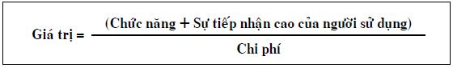
Hình 329: Công thức “Giá trị”
- Thực hiện PGC cần thực hiện lần lượt theo các giai đoạn, bước, các yêu cầu, chỉ dẫn hành động được phản ánh trong kế hoạch làm việc.
- Tính phức tạp của việc giải quyết các vấn đề liên quan, bằng cách áp dụng PGC, đòi hỏi sự tổ chức phối hợp công việc của nhóm các chuyên gia.
- Khi áp dụng phương pháp PGC, người sử dụng cần tuân theo các nguyên tắc sau:
Nguyên tắc chức năng. Đây là yếu tố cơ bản xây dựng phương pháp PGC. Nguyên tắc chức năng đòi hỏi hiểu đối tượng được phân tích như là tập hợp các chức năng của nó thực hiện hoặc cần phải thực hiện, chứ không phải hiểu nó như là tập hợp các yếu tố cụ thể liên kết với nhau một cách cụ thể (kết cấu cụ thể thực hiện các chức năng).
Nguyên tắc ích lợi đối với toàn xã hội. Nguyên tắc này đặc biệt phải tính đến khi lựa chọn các giải pháp.
Nguyên tắc tiếp cận hệ thống. Phân tích giá trị được xem xét như tập hợp linh động của bốn hệ thống độc lập tương đối và phụ thuộc lẫn nhau:
Hệ thống các nhu cầu phản ánh chất lượng, số lượng và đồng thời sự ưu tiên thỏa mãn các nhu cầu xã hội, mà các nhu cầu xã hội đó được bảo đảm bằng chính các đối tượng được phân tích trong phương pháp PGC.
Hệ thống đối tượng được phân tích trong phương pháp PGC, phải thỏa mãn các nhu cầu xã hội một cách tối ưu.
Hệ thống các công cụ dùng trong phương pháp PGC.
Hệ thống những người thực hiện và các hình thức thực hiện phương pháp PGC trên thực tế.
Nguyên tắc kế hoạch. Cần lập kế hoạch áp dụng phương pháp PGC và thực hiện phương pháp PGC theo kế hoạch. Chỉ có tổ chức thực hiện PGC theo đúng kế hoạch mới có thể bảo đảm đạt kết quả đề ra đúng hạn về mặt thời gian và quy mô.
Nguyên tắc hiệu quả. Nguyên tắc này đòi hỏi phải đạt được ích lợi nhiều nhất với chi phí ít nhất.
Nguyên tắc tiếp cận sáng tạo. Nó thể hiện, trước hết, trong việc sử dụng các phương pháp nghiên cứu mới về nguyên tắc trong việc đưa ra và ra quyết định đối với kết cấu của các đối tượng thực hiện các chức năng. Cách tiếp cận đó đòi hỏi sự không thỏa hiệp và sự dũng cảm trong sáng tạo. Nguyên tắc tiếp cận sáng tạo còn đòi hỏi cần có sự sáng tạo trong cách và hình thức thực hiện chính phương pháp PGC.
Nguyên tắc tiếp cận liên ngành. Tính tổng hợp, tính phức tạp và thời hạn hoàn thành việc giải quyết vấn đề đòi hỏi sự tham gia của các chuyên gia thuộc nhiều lĩnh vực khác nhau.
Nguyên tắc áp dụng các kiến thức khoa học và kỹ thuật mới nhất. Tuân theo nguyên tắc này, người sử dụng phương pháp PGC mới có thể đưa ra được những kết cấu tiên tiến nhất thực hiện chức năng cho trước hoặc đưa ra những chức năng tiên tiến hơn những chức năng đã biết, hoặc với cùng chi phí cho trước đối tượng có thêm (các) chức năng mới.
- Trong PGC, khái niệm “Chức năng” của đối tượng cho trước được hiểu là quan hệ giữa nhu cầu xã hội và các tính chất của đối tượng đó. Cụ thể, chức năng thể hiện như là tác động định hướng hoặc hoạt động được xác định một cách chính xác của đối tượng, được thể hiện dưới dạng:
Quá trình biến đổi các đặc trưng ban đầu của đối tượng (các yếu tố đầu vào, chi phí) thành các kết quả đầu ra. Quá trình biến đổi này xảy ra nhờ kết cấu của đối tượng đó trong những điều kiện và hoàn cảnh nhất định.
Các thể hiện thứ yếu các tính chất của kết cấu đối tượng.
Vai trò, vị trí của đối tượng như là hệ thống trong mối quan hệ với hệ trên và môi trường cơ sở, mà những cái đó quy định các phương án khác nhau sử dụng đối tượng vào những mục đích khác nhau.
Nói một cách ngắn gọn, chức năng là sự thể hiện mang tính ích lợi hoặc sự thể hiện nào đó khác của tất cả các tính chất của đối tượng, mà nhờ những tính chất này, đối tượng phục vụ cho việc làm thỏa mãn các nhu cầu của toàn thể xã hội hoặc một số những thành viên của xã hội.
Từ những điều nói trên có thể rút ra những điểm cần lưu ý sau:
- Chức năng của những đối tượng do con người tạo ra một cách có ý thức hàm chứa trong đó mục đích, ý nghĩa tồn tại và giá trị mong đợi.
- Cần phải nghiên cứu chức năng trong mối quan hệ với môi trường xung quanh đối tượng thực hiện chức năng đó.
- Việc thực hiện chức năng nhất định quy định kết cấu tương ứng cụ thể của đối tượng thực hiện chức năng đó.
Trong các loại chức năng có những chức năng thuộc về phẩm chất và có những chức năng thuộc về mục đích:
- Các chức năng phẩm chất là các chức năng được quy định bởi và liên quan đến các đặc điểm phẩm chất kết cấu của đối tượng. Ví dụ, chức năng phẩm chất của động cơ điện là biến năng lượng điện thành năng lượng cơ học.
- Các chức năng mục đích là các chức năng đặc trưng cho hành vi định hướng của đối tượng khi sử dụng đối tượng dưới các dạng khác nhau. Ví dụ, chức năng mục đích của động cơ điện là làm cho cánh quạt của quạt máy quay.
Trong PGC, các chức năng của đối tượng đóng vai trò:
Vai trò sáng tạo, hiểu theo nghĩa, chức năng phản ánh bản chất, các mục đích, hành vi của đối tượng. Trong vai trò này, các chức năng của đối tượng và đặc trưng của chúng là thông tin cần thiết đối với quá trình sáng tạo, tức là, chỉ ra cần phải làm cái gì.
Vai trò tiêu chuẩn, hiểu theo nghĩa, tập hợp các đánh giá về các ý nghĩa của các chức năng như mức độ thực hiện chức năng, chi phí bảo đảm hoạt động cho chức năng là công cụ quan trọng nhất để đánh giá hiệu quả sử dụng đối tượng.
Phát hiện và xác định các chức năng của đối tượng được phân tích là công việc khó. Sau nhiều năm nỗ lực, người ta tìm ra được một số nguyên tắc giúp phát biểu các chức năng. Những nguyên tắc quan trọng nhất là:
- Nguyên tắc ngắn gọn trong xác định (định nghĩa) chức năng. Chức năng của mỗi đối tượng được phân tích cần được định nghĩa (phát biểu) một cách ngắn gọn đến mức chỉ gồm một động từ và một danh từ. Ví dụ, đối tượng được phân tích là quạt máy, nó có chức năng “tạo gió”. Trong những trường hợp cần thiết, có thể thêm tính từ vào danh từ, ví dụ, “tạo gió khô”.
- Nguyên tắc khái quát trong xác định (định nghĩa) chức năng. Về mặt nguyên tắc, định nghĩa chức năng mang tính khái quát nhất mới tương ứng với bản chất của phương pháp PGC. Định nghĩa chức năng càng khái quát thì càng ít hạn chế các điều kiện để giải quyết vấn đề. Điều này tạo ra nhiều khả năng rộng rãi đối với các lời giải, kết cấu mới. Ngược lại, các chức năng quá cụ thể làm hạn chế số lượng các phương án lời giải. Tuy nhiên, người sử dụng phương pháp PGC cần tính đến: Đối tượng được phân tích đang ở mức thang bậc hệ thống nào và các mục đích của giải pháp đối với vấn đề.
- Nguyên tắc đầy đủ trong xác định (định nghĩa) chức năng. Khái niệm “đầy đủ” ở đây mang tính tương đối vì hiện nay không có phương pháp nào cho phép phát hiện và xác định đầy đủ tất cả các chức năng của đối tượng được phân tích. Trên thực tế, “đầy đủ” trong phương pháp PGC thường có được, chủ yếu, dựa trên ý kiến của các chuyên gia thuộc và liên quan đến lĩnh vực của đối tượng được phân tích.
Các chức năng của đối tượng được phân tích, trong tư cách là hệ thống định hướng mục đích, có thể được phân loại theo quan điểm vật chất, theo nguyên tắc thang bậc, hoặc là theo quan điểm phương pháp luận:
- Phân loại các chức năng theo quan điểm vật chất
Nhìn theo quan điểm vật chất, các chức năng được phân thành hai nhóm lớn: Các chức năng đầu tiên và các chức năng thứ hai. Tiêu chuẩn cơ bản cho cách phân loại này là “lập trường” của người sử dụng đối tượng. Điều này có nghĩa, những chức năng nào của đối tượng được người sử dụng mong đợi, đòi hỏi phải có là những chức năng đầu tiên. Trong khi đó, những chức năng mà người sản xuất quan tâm nhưng không được người sử dụng quan tâm hoặc chỉ quan tâm gián tiếp là những chức năng thứ hai.
- Phân loại các chức năng theo nguyên tắc thang bậc
Theo nguyên tắc này, các chức năng được phân loại thành các chức năng chính, các chức năng cơ sở và các chức năng phụ (bổ trợ), xem Hình 330.
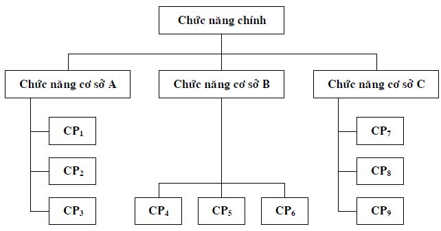
CP – Chức năng phụ ở các thang bậc dưới và phản ánh quan hệ nhân – quả
Hình 330: Phân loại các chức năng theo nguyên tắc thang bậc
Chức năng chính thể hiện bản chất hành vi của đối tượng được phân tích, là ý nghĩa chính để đối tượng được phân tích tồn tại. Chức năng chính luôn là một (duy nhất) và trong tư cách chức năng đầu tiên, nó đại diện cho tất cả các nhóm mang tính lôgích các chức năng của đối tượng, kể cả các chức năng thứ hai.
Các chức năng cơ sở luôn luôn thể hiện một cách tổng hợp chỉ riêng một phần hành vi của đối tượng được phân tích, định hướng cho một hệ thống các nhu cầu. Chúng đại diện cho một nhóm lôgích các nhu cầu của hệ thống và có thể có đặc điểm như là chức năng đầu tiên hoặc chức năng thứ hai. Số các chức năng cơ sở của đối tượng phụ thuộc vào số các hệ thống nhu cầu mà đối tượng có quan hệ về mặt chức năng.
Các chức năng phụ thể hiện một cách cụ thể hành vi của đối tượng trong mối quan hệ đối với hệ thống các thang bậc và đối với các hệ thống nhu cầu riêng rẽ. Các chức năng phụ bổ trợ cho các chức năng cơ sở, chức năng chính và toàn bộ hệ thống các chức năng nói chung. Các chức năng phụ có thể có đặc trưng của các chức năng đầu tiên và các chức năng thứ hai. Số lượng của các chức năng phụ tùy thuộc vào sự phức tạp của các mối liên kết chức năng của đối tượng với hệ thống thang bậc hoặc hệ thống nhu cầu bị hạn chế một cách có mục đích. Các mối liên kết giữa các chức năng phụ của một nhóm lôgích các chức năng có đặc trưng thang bậc và quan hệ nhân – quả.
Dưới đây (xem Hình 331) là ví dụ minh họa cách phân loại các chức năng vừa được trình bày đối với đối tượng được phân tích là điện kế.
Chức năng chính:
Đo lượng điện tiêu thụ
Các chức năng cơ sở:
- Bảo đảm tính liên tục của mạch điện giữa đầu vào và đầu ra.
- Biến đổi năng lượng điện thành năng lượng cơ học.
- Đo các giá trị tức thời lượng điện tiêu thụ.
- Cộng liên tục các giá trị tức thời lượng điện tiêu thụ.
- Bảo đảm sự chỉ báo các kết quả đo.
Các chức năng phụ:
- Bảo đảm độ chính xác cần thiết của công việc đo.
- Tạo dáng đồng hồ bắt mắt.
- Bảo đảm độ tin cậy và độ ổn định đòi hỏi.
- Bảo đảm an toàn kỹ thuật ở mức chuẩn.
- Giảm mức nhiễu (tiếng ồn).
- Dễ quan sát các con số là các kết quả đo.
Hình 331: Ví dụ minh họa phân loại chức năng theo nguyên tắc thang bậc đối với “Điện kế”
- Phân loại các chức năng theo quan điểm phương pháp luận
Quan điểm phương pháp luận là tiêu chuẩn làm việc giúp phân loại các chức năng và bằng cách đó tiêu chuẩn hóa việc sử dụng các chức năng này trong phương pháp PGC:
- Các chức năng hành động là những chức năng mà đối tượng được phân tích thực sự phải thực hiện.
- Các chức năng được yêu cầu là các chức năng mà đối tượng được phân tích lẽ ra đã phải có để thỏa mãn các nhu cầu xã hội. Đấy chính là những chức năng thuộc tổ hợp các chức năng được yêu cầu với số lượng nhiều hơn so với tổ hợp các chức năng hành động.
- Các chức năng không cần thiết (thừa) là các chức năng mà đối tượng được phân tích thực hiện nhưng những chức năng đó, trên thực tế, không ai yêu cầu, do vậy, nhìn theo quan điểm thỏa mãn các nhu cầu xã hội, chúng là thừa. Đấy là những chức năng có trong tổ hợp các chức năng hành động nhiều hơn so với các chức năng có trong tổ hợp các chức năng được yêu cầu. Lời giải đối với vấn đề luôn là khắc phục (loại bỏ) các chức năng không cần thiết cùng các kết cấu sinh ra chúng.
- Phương pháp PGC được dùng trong nhiều lĩnh vực hoạt động của xã hội loài người như:
- Lĩnh vực nghiên cứu, phát triển và chuẩn bị kỹ thuật cho sản xuất.
- Lĩnh vực lập kế hoạch đầu tư.
- Lĩnh vực thực hiện các quá trình sản xuất chính.
- Lĩnh vực dịch vụ các loại.
- Lĩnh vực quản lý chất lượng.
- Lĩnh vực các hoạt động cung cấp và bán hàng.
- Lĩnh vực quản lý.
Do vậy, không phải ngẫu nhiên, phương pháp PGC có những biến thể để thích hợp cho mỗi lĩnh vực, mặc dù, chúng giống nhau về triết lý và bản chất.
Về tổng thể, phương pháp PGC có những bộ phận sau:
- Hai thời kỳ.
- Ba pha.
- Bốn nhiệm vụ.
- Năm câu hỏi.
- Bảy giai đoạn.
Hai thời kỳ là:
1) Thời kỳ chuẩn bị:
Để đưa vào và áp dụng phương pháp PGC trên thực tế cần chuẩn bị về các mặt nhận thức, tư tưởng, chuyên môn, tổ chức.
2) Thời kỳ tiến hành:
Đấy là những hoạt động của phương pháp liên quan đến sự chuẩn bị và thiết kế các dự án phân tích giá trị – chức năng, kể cả việc biến các dự án đó thành hiện thực.
Phương pháp PGC có ba pha liên quan chặt chẽ với nhau:
1) Chọn đối tượng được phân tích:
Pha này giải quyết các vấn đề mang tính triết lý, hệ thống các khái niệm, xác định lĩnh vực sử dụng của phân tích giá trị – chức năng; chọn chiến lược giải, xác định phạm vi áp dụng (sản xuất, công nghệ…), chọn đối tượng cụ thể cùng với việc chỉ ra các nhu cầu mang tính xã hội.
2) Phân tích chức năng:
Phân tích chức năng không chỉ nghiên cứu đối tượng về các mặt thiết kế, kết cấu, hình dạng, vật liệu…, mà nó phân tích tuần tự nhất quán bản chất và các thể hiện hành vi của đối tượng. Điều này có nghĩa, phân tích chức năng là quá trình biến đổi đối tượng cụ thể được phân tích thành đối tượng được đặc trưng bởi hệ thống các chức năng. Đây cũng chính là quá trình trừu tượng hóa đối tượng được phân tích. Việc trừu tượng hóa này giúp người sử dụng PGC khắc phục tính ì tâm lý và mở ra không gian rộng rãi cho công việc sáng tạo để xác định hướng giải quyết các vấn đề được phát hiện ra.
3) Tổng hợp chức năng:
Tổng hợp chức năng được hiểu là quá trình phức tạp gồm tư duy sáng tạo và đưa ra các đánh giá sâu sắc, mà mục đích của nó là tìm kiếm phương án hiệu quả để thực hiện tất cả các chức năng được yêu cầu (trước hết là chức năng chính, sau đó là các chức năng cơ sở, các chức năng phụ).
Điều kiện để áp dụng phương pháp PGC thành công là thực hiện bốn nhiệm vụ sau:
Chọn đúng đối tượng được phân tích.
Phát hiện đầy đủ, chính xác các chức năng của đối tượng và đánh giá chúng.
Đưa ra được nhiều nhất các ý tưởng về việc bảo đảm các chức năng hành động.
Chọn đúng và tạo ra được phương án tối ưu về kết cấu của đối tượng.
Nhìn theo quan điểm phương pháp, mỗi vấn đề đòi hỏi trả lời đúng và đầy đủ năm câu hỏi sau:
Đối tượng nào – Bạn đang nói về đối tượng nào?
Đối tượng có những chức năng gì – Mục đích và hành vi của nó là gì?
Đối tượng có giá bao nhiêu – Giá thành các chức năng của nó, chi phí để chế tạo nó là bao nhiêu?
Đối tượng nào khác có thể bảo đảm việc thực hiện các chức năng giống như thế – có những phương án lời giải có thể có nào, mà những phương án đó có thể bảo đảm tốt nhất việc thực hiện các chức năng đó?
Đối tượng khác có giá bao nhiêu – phương án đưa ra có giá bao nhiêu, chi phí bao nhiêu?
Chỉ có thể thực hiện phương pháp PGC trên cơ sở kế hoạch làm việc chi tiết. Dưới đây (xem Hình 332) là mô hình minh họa bảy giai đoạn của PGC dùng trong lĩnh vực sản xuất vật chất.
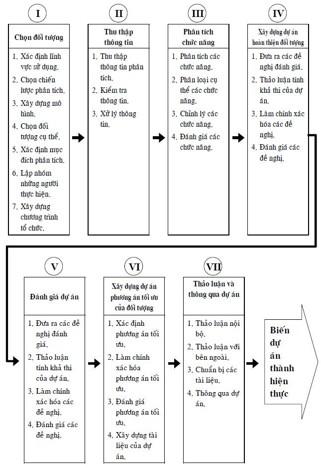
Hình 332: Các giai đoạn phân tích giá trị – chức năng
Để áp dụng tốt phân tích giá trị – chức năng vào thực tế, người sử dụng phương pháp còn cần áp dụng các kinh nghiệm, được thể hiện dưới các lời khuyên, khuyến cáo như:
- Hãy giữ vững cách tiếp cận mang tính phương pháp đối với phân tích giá trị – chức năng.
- Hãy chỉ sử dụng thông tin từ những nguồn tốt nhất.
- Hãy phát hiện một cách thật cụ thể tất cả các chi phí.
- Hãy đánh giá các chức năng.
- Hãy thực hiện sự so sánh.
- Hãy tránh những lời khẳng định đao to búa lớn.
- Hãy đưa ra các đề nghị, hãy sáng tạo, hãy hoàn thiện.
- Hãy suy nghĩ thực sự sáng tạo.
- Hãy tránh phê bình, chỉ trích trong quá trình sáng tạo.
- Hãy đưa thêm thông tin mới vào mỗi lĩnh vực chức năng.
- Hãy lập luận một cách độc lập.
- Hãy mổ xẻ và vượt qua những cản trở.
- Hãy sử dụng sự giúp đỡ của các nhà chuyên môn.
- Hãy đánh giá mỗi dự án dưới dạng tiền.
- Hãy sử dụng sản phẩm của các nhà cung cấp.
- Hãy áp dụng những quá trình đặc biệt.
- Hãy sử dụng sự tiêu chuẩn hóa.
- Hãy sử dụng các dịch vụ, phục vụ của các bộ phận khác nhau có sẵn trong công ty.
- Hãy thành lập và sử dụng các quan hệ tốt giữa người với người.
NHẬN XÉT:
- Phương pháp PGC có điểm xuất phát trực tiếp là những lý do kinh tế.
Trong chiến tranh, do các nguồn lực trở nên khan hiếm, việc thỏa mãn các nhu cầu của con người bị giảm xuống tối thiểu, dẫn đến các chức năng của các đối tượng thỏa mãn các nhu cầu đó phải giảm tương ứng, kéo theo các kết cấu cũng giảm. Điều này làm nảy sinh nhiều vấn đề cần phải giải quyết. Nếu giải quyết chúng thành công, con người nói riêng, cộng đồng nói chung mới có thể tồn tại và sống sót qua khỏi thời kỳ chiến tranh, hoặc những thời kỳ khủng hoảng khác với các khó khăn tương tự.
Trong hòa bình, mặc dù các nhu cầu của con người tăng lên, đa dạng hơn, sự cạnh tranh về chất lượng, giá thành cũng đòi hỏi các nhà thiết kế, chế tạo, sản xuất phải đưa ra các sản phẩm có hiệu quả sử dụng cao nhất nhưng với chi phí thấp nhất. Nói cách khác, họ phải tính đến sự tương quan giữa giá thành (giá trị) và chức năng của sản phẩm. Có như vậy, các công ty của họ mới có thể tồn tại, sống sót, cao hơn nữa, chiến thắng trên thương trường.
Gần đây, cùng với các kết quả nghiên cứu về môi trường, cân bằng sinh thái, biến đổi khí hậu và trình độ dân trí tăng lên, các yêu cầu đối với các loại chi phí để có những chức năng cần thiết càng trở nên ngặt nghèo hơn. Ví dụ, nguyên, vật liệu, năng lượng phải dùng ít hơn trước, ít gây ô nhiễm hơn trước, trong khi các chức năng của sản phẩm vẫn được vận hành tốt đẹp nhằm thỏa mãn các nhu cầu phát triển của xã hội.
- Một trong những cơ sở khoa học quan trọng để xây dựng và phát triển phương pháp PGC là cách tiếp cận hệ thống (xem Chương 10: Tư duy hệ thống của quyển ba). Điều này thể hiện, trước hết, ở những điểm sau:
- Phân biệt chức năng (tính hệ thống) và kết cấu (các yếu tố liên kết với nhau).
- Làm rõ và phát triển khái niệm chức năng.
- Sử dụng luận điểm: Một kết cấu có thể thực hiện nhiều chức năng khác nhau, ngược lại, một chức năng có thể do nhiều loại kết cấu tạo thành.
- Sử dụng lôgích hệ thống: Tính hệ thống là sự thay đổi về chất; tính hệ thống ở mức thang bậc cao hơn quy định tính hệ thống ở mức thang bậc thấp hơn; tính hệ thống ở mức thang bậc thấp hơn góp phần tạo nên tính hệ thống ở mức thang bậc cao hơn; trong những trường hợp nhất định, tính hệ thống có thể cho những gợi ý để xây dựng kết cấu.
- Biểu diễn đối tượng được phân tích dưới dạng hệ thống gồm các chức năng liên kết với nhau. Mô hình mang tính trừu tượng, khái quát này của đối tượng được phân tích rất giúp ích trong việc tạo không gian rộng rãi cho sự sáng tạo. Chúng ta đã biết rằng, những cái khái quát cao thường có phạm vi áp dụng rộng.
- Xem xét, nghiên cứu, tính đến tương tác giữa các hệ thống liên quan tham gia vào quá trình thực hiện PGC.
Các khái niệm trung tâm của phương pháp PGC như chức năng, giá trị, các loại chức năng… được định nghĩa và giải thích khá rõ ràng và đầy đủ.
Phương pháp PGC cũng nhấn mạnh thực hiện những công việc quan trọng như sáng tạo, tiếp nhận các giải pháp, làm thỏa mãn các nhu cầu xã hội, tạo các ích lợi xã hội. Nói cách khác, phương pháp PGC nhắm đến đổi mới hoàn toàn, chứ không như một số phương pháp sáng tạo khác chỉ nhắm đến phát ra thật nhiều ý tưởng sáng tạo mà không quan tâm ý tưởng nào sẽ biến thành hiện thực và thực tế tiếp nhận thành phẩm của nó ra sao (xem mục 1.2 Một số khái niệm cơ bản và các ý nghĩa của chúng của quyển một và mục 6.2 Mô hình quá trình suy nghĩ giải quyết vấn đề và ra quyết định của quyển hai).
Phương pháp PGC mạnh và quan trọng ở chỗ, nó đưa ra được cách tiếp cận kinh tế để phát hiện các vấn đề, có các công cụ mạnh dùng để phân tích giá trị – chức năng của đối tượng cần phân tích. Nhưng phương pháp PGC không có các công cụ của riêng mình dùng để phát các ý tưởng sáng tạo. Do vậy, khi thực hiện phương pháp PGC, ở những thời điểm bạn cần có các ý tưởng sáng tạo, bạn hãy sử dụng bất kỳ phương pháp sáng tạo nào trong lĩnh vực PPLSTVĐM mà bạn thấy thích hợp. Nói cách khác, bạn cần sử dụng phương pháp PGC kết hợp với các phương pháp sáng tạo khác, đặc biệt, ở giai đoạn tổng hợp chức năng để đưa ra các kết cấu mới.
Phương pháp PGC còn có nhiều điều kiện để tiếp tục phát triển dựa trên các kết quả nghiên cứu mới về kinh tế, khoa học hệ thống, các phương pháp đánh giá giá trị, nhu cầu xã hội. Bởi vì, các lĩnh vực vừa nêu chính là cơ sở để xây dựng phương pháp PGC.
So sánh phương pháp PGC và TRIZ (xem lại những gì người viết đã trình bày về TRIZ cho đến nay), người viết cho rằng, chúng giao nhau ở một số điểm như:
- Cả hai đều sử dụng cách tiếp cận hệ thống, nhấn mạnh ý nghĩa quan trọng chức năng của hệ thống và sử dụng lôgích hệ thống.
Tuy nhiên, TRIZ đi xa hơn khi đưa ra khái niệm “Hệ lý tưởng” với định nghĩa: “Hệ lý tưởng là hệ hoàn thành tốt chức năng của mình nhưng không có kết cấu” (khái niệm này sẽ được trình bày chi tiết trong “Quy luật về tính lý tưởng của hệ” của quyển bảy bộ sách “Sáng tạo và đổi mới”). Điều này có thể hiểu được vì cái mà người sử dụng hệ thống cần là chức năng chứ không phải kết cấu hệ thống. Trong trường hợp lý tưởng, kết cấu hệ thống phải bằng không. Tuy nhiên, khái niệm “không” cần được hiểu nhiều nghĩa, tùy theo hoàn cảnh, điều kiện cụ thể, chứ không phải hiểu đơn nghĩa, theo nghĩa tuyệt đối như trong toán học.
- Cả phương pháp PGC và TRIZ đều nhấn mạnh luận điểm “Ích lợi nhiều nhất với chi phí ít nhất”.
Tuy nhiên, trong TRIZ luận điểm vừa nêu được cụ thể hóa, chi tiết hóa nhiều hơn và biến thành những công cụ, lời khuyên rõ ràng. Ví dụ, trong TRIZ có các nguyên tắc liên quan trực tiếp như 2. Nguyên tắc “tách khỏi”; 6. Nguyên tắc vạn năng; 12. Nguyên tắc đẳng thế; 20. Nguyên tắc liên tục các tác động có ích; 25. Nguyên tắc tự phục vụ; 27. Nguyên tắc “rẻ” thay cho “đắt”. Các lời khuyên trực tiếp như “Có vấn đề, trước hết, phải sử dụng các nguồn dự trữ có sẵn trong hệ, đặc biệt, các nguồn dự trữ trời cho không mất tiền để giải quyết”; “Phải tạo ra sự thay đổi ít nhất trong hệ để sự chống đối (tính ì hệ thống) là nhỏ nhất”; “Bài toán đầu tiên nên chọn giải là bài toán – mini”; “Trong các giải pháp tương đương, nên chọn giải pháp làm hệ thay đổi ít nhất”.
Các công cụ, lời khuyên khác của TRIZ ít, nhiều đều liên quan đến luận điểm nêu trên.
- Dưới dạng ẩn, phương pháp PGC có đề cập phần nào khía cạnh khách quan của sáng tạo và đổi mới. Đấy là nhà sáng tạo phải tuân theo quy luật cung – cầu khi đưa ra các sản phẩm của mình, phải đưa ra cái mà những người sử dụng cần, chứ không phải cái mình có.
Tuy nhiên, về mặt nghiên cứu và kết quả nghiên cứu khía cạnh khách quan của sáng tạo, TRIZ đầy đủ và ở mức phát triển cao hơn nhiều so với phương pháp PGC.
- Mặt khác, khi phương pháp PGC đòi hỏi phải đưa ra giải pháp (kết cấu thực hiện các chức năng) mang lại “Ích lợi nhiều nhất với chi phí ít nhất”, bạn đọc tinh ý sẽ thấy, đòi hỏi này hàm chứa đòi hỏi giải quyết mâu thuẫn kỹ thuật. Bởi vì, những cách làm thông thường, phần nhiều, dẫn đến mâu thuẫn kỹ thuật sau: “Nếu giảm được chi phí (tốt, lợi) thì chất lượng, hiệu quả hoạt động của đối tượng cho trước cũng giảm (xấu, thiệt)”.
Tuy vậy, phương pháp PGC không nhắc gì đến mâu thuẫn, phân tích mâu thuẫn, lại càng không đưa ra các công cụ dùng để giải quyết mâu thuẫn.
Trong khi đó, TRIZ tìm ra ba loại mâu thuẫn, có những chỉ dẫn cụ thể phân tích tìm mâu thuẫn và xây dựng được hệ thống các công cụ dùng để giải quyết mâu thuẫn, đặc biệt, mâu thuẫn vật lý.
Từ NHẬN XÉT 7 và 8, bạn đọc có thể thấy, TRIZ sẽ làm tăng sức mạnh của phương pháp PGC một cách đáng kể, nếu phương pháp PGC được sử dụng kết hợp với các công cụ cụ thể của TRIZ nói riêng và với TRIZ như là một lý thuyết nói chung.
Ở nhiều công ty của các nước phát triển, phương pháp PGC là phương pháp bắt buộc phải dùng mỗi khi cần phát triển sản phẩm mới và cải tiến sản phẩm đang có.
13.3.4.5 Phương pháp quản lý chất lượng toàn diện và Kaizen (Total Quality Management and Kaizen)
Quản lý chất lượng toàn diện (Total Quality Management, viết tắt là TQM) hay còn gọi là kiểm soát chất lượng toàn diện (Total Quality Control, viết tắt là TQC) có khởi đầu vào những năm 1930 cùng với sự áp dụng công nghiệp các sơ đồ kiểm soát do Walter A. Shewhart thuộc các phòng thí nghiệm Bell (Bell Laboratories) của công ty AT&T (Mỹ) sáng chế ra. Công trình mang tính tổng kết của ông lần đầu tiên được công bố dưới dạng quyển sách với nhan đề “Economic Control of Quality of Manufactured Product” vào năm 1931. William Edwards Deming, bạn và cộng sự của W. Shewhart làm chủ biên cho quyển sách thứ hai của ông “Statistical Methods from the Viewpoint of Quality Control”. Cả hai người đều là tiến sỹ vật lý và có nhiều đóng góp vào khoa học mới xuất hiện lúc đó: Khoa học thống kê (science of statistics).
Các phương pháp kiểm soát chất lượng ban đầu là các phương pháp thống kê. Sau này, người ta mở rộng thành phương pháp quản lý một tổ chức tập trung vào chất lượng dựa vào sự tham gia của tất cả các thành viên của nó nhằm đạt được sự thành công lâu dài nhờ việc thỏa mãn khách hàng và đem lại lợi ích cho các thành viên của tổ chức đó và xã hội. Đây cũng là định nghĩa của TQM.
Khởi đầu từ Mỹ, TQM được thực hiện trong nhiều công ty của nhiều nước trên thế giới. Nơi được coi áp dụng và phát triển TQM thành công nhất, ở quy mô rộng rãi, phổ biến nhất là các công ty Nhật nói riêng, nước Nhật nói chung. Trong ý nghĩa này, người viết sẽ trình bày tóm tắt nội dung TQM dựa theo các tác giả Nhật Bản được đánh giá cao là Kaoru Ishikawa và Masaaki Imai.
- Theo K. Ishikawa: “Thực hành kiểm soát chất lượng là phát triển, thiết kế, sản xuất và phục vụ sản phẩm chất lượng mà sản phẩm đó kinh tế nhất, ích lợi nhất và luôn làm hài lòng người tiêu thụ” (To practice quality control is to develop, design, produce and service a quality product which is most economical, most useful, and always satisfactory to the consumer).
Để đạt mục đích vừa nêu, tất cả mọi người trong công ty đều phải tham gia và xúc tiến kiểm soát chất lượng, kể từ cấp lãnh đạo cao nhất, tất cả các phòng ban và tất cả các nhân viên.
Thay vì kiểm tra chất lượng thành phẩm (thường thực hiện ở giai đoạn cuối), kiểm soát chất lượng có nghĩa là kiểm soát được tất cả nguyên nhân có thể dẫn đến khuyết tật của sản phẩm ngay từ giai đoạn bắt đầu, trong suốt quá trình, đến tận giai đoạn phục vụ khách hàng sau khi mua hàng. Điều này có nghĩa phải đưa ra những sản phẩm không có khuyết tật (zero – defect) và làm hài lòng khách hàng.
Nếu kiểm soát chất lượng chỉ nhấn mạnh sự kiểm tra, thì chỉ cần một phòng (ban) làm việc này. Phòng (ban) đó đóng vai trò người canh gác, ngăn chặn, không cho các phế phẩm, sản phẩm có khuyết tật (defective products) lọt ra thị trường. Đây là việc làm muộn màng và lãng phí. Bởi vì, khuyết tật chỉ được phát hiện vào phút cuối và phế phẩm phải bỏ đi.
Nếu kiểm soát chất lượng nhấn mạnh quá trình sản xuất, lúc này cần có sự tham gia của các dây chuyền lắp ráp, các nhà thầu phụ, các phòng hậu cần, công nghệ sản xuất và tiếp thị (marketing).
Tuy nhiên, chừng đó vẫn chưa đủ. Ở mức phát triển cao hơn của kiểm soát chất lượng, sự tham gia phải được mở rộng cho toàn công ty, cho tất cả mọi người. Điều này có nghĩa, phải có sự tham gia của những người lập kế hoạch, thiết kế, nghiên cứu sản phẩm mới; của những người thuộc bộ phận sản xuất; của những người thuộc các bộ phận còn lại như tài vụ, nhân sự, quan hệ lao động… Bộ phận tiếp thị đóng vai trò rất quan trọng trong việc lắng nghe các ý kiến của các khách hàng – những người tiêu thụ sản phẩm. Những ý kiến này phải được tính đến trong các giai đoạn lập kế hoạch về sản phẩm để sản phẩm đáp ứng các yêu cầu thực sự của khách hàng.
Các sản phẩm chất lượng là các sản phẩm có loại chất lượng có thể thỏa mãn các yêu cầu của những người tiêu dùng (products with the quality which can satisfy the requirements of consumers). Do vậy, nếu công ty chỉ nhắm đưa ra các sản phẩm đạt các tiêu chuẩn (standards) ngành, tiêu chuẩn quốc gia thì chưa đủ. Trên thực tế, các yêu cầu của khách hàng, nhiều khi, khác với các tiêu chuẩn nói trên và họ không hài lòng ngay cả với những sản phẩm đạt tiêu chuẩn quốc gia, thậm chí quốc tế. Như vậy, các công ty thực hiện quản lý chất lượng cần có sự hướng tới khách hàng (consumer orientation) để lập ra các tiêu chuẩn cho mình chứ không chỉ hướng tới các tiêu chuẩn định ra bởi cấp này, cấp khác.
Chưa kể, các yêu cầu của những người tiêu dùng còn thay đổi theo thời gian, theo hướng dường như càng ngày, càng khó tính. Điều này có nghĩa, các công ty hướng tới khách hàng cũng phải thường xuyên nâng cấp các tiêu chuẩn của mình cho phù hợp với các yêu cầu mới của những người tiêu dùng. Nói chung, các công ty phải luôn cố gắng cung cấp sản phẩm đúng chất lượng, đúng giá, đúng số lượng và đúng thời hạn (just quality, just price, just amount and just in time) theo yêu cầu của người tiêu dùng mới có thể làm họ hài lòng. K. Ishikawa cho rằng: “Nếu các tiêu chuẩn và các định mức, mà các công ty lập ra cho mình, không được xem xét lại để sửa đổi, bổ sung sau mỗi sáu tháng, thì điều này chứng tỏ đã không có ai sử dụng một cách nghiêm túc các tiêu chuẩn và các định mức lập ra này”.
Chất lượng được nói đến lúc đầu trong TQM được hiểu theo nghĩa hẹp là chất lượng sản phẩm (công nghiệp). Sau này, khái niệm chất lượng được mở rộng, ví dụ, chất lượng công việc; chất lượng phục vụ; chất lượng thông tin; chất lượng của quá trình xử lý; chất lượng của phòng (ban); chất lượng con người, bao gồm cả công nhân, kỹ sư, cán bộ quản lý, lãnh đạo; chất lượng của công ty; chất lượng của các nhiệm vụ đề ra…
- Chất lượng phải đáp ứng các yêu cầu của người tiêu dùng. Các yêu cầu của người tiêu dùng chính là các đặc tính chất lượng thực sự (true quality characteristics) mà sản phẩm cần có để thỏa mãn người tiêu dùng. Công ty chế tạo, sản xuất sản phẩm phải “phiên dịch” các đặc tính nói trên được người tiêu dùng phát biểu bằng ngôn ngữ đời sống sang các đặc tính được phát biểu bằng ngôn ngữ chuyên môn, gọi là các đặc tính chất lượng thay thế (substitute quality characteristics). Từ đó, những người thực hiện quản lý chất lượng của công ty mới có thể biết và hiểu được những việc cần làm tiếp theo.
Ví dụ, người tiêu dùng nêu các yêu cầu đối với xe du lịch bằng ngôn ngữ đời sống như: Hình dáng phải bắt mắt, dễ lái, ngồi thoải mái, tăng tốc nhanh, ổn định ở tốc độ cao, bền, ít phải sửa chữa, tiện lợi trong bảo trì, độ an toàn cao… Các yêu cầu này là các đặc tính chất lượng thực sự. Các phòng ban liên quan của công ty sản xuất xe hơi phải “phiên dịch” các đặc tính chất lượng thực sự thành các đặc tính chất lượng thay thế dưới dạng các thuật ngữ thiết kế, kỹ thuật, công nghệ, vật liệu…, cả về mặt định tính lẫn định lượng.
Quá trình mô tả ở trên được gọi là quá trình phân tích chất lượng (quality analysis). Những người thực hiện quá trình này phải sử dụng hàng loạt phương pháp (thống kê, không thống kê) tương ứng, kể cả phương pháp biểu đồ xương cá do K. Ishikawa sáng chế ra (xem 13.3.3.2 Phương pháp biểu đồ xương cá của quyển sáu này).
Theo W.E. Deming, chu trình thiết kế, sản xuất, bán hàng và nghiên cứu thị trường (xem Hình 333) phải được nối tiếp bởi chu trình mới, bắt đầu từ thiết kế lại sản phẩm dựa trên những kinh nghiệm, trải nghiệm thu được từ chu trình trước. Bằng cách đó, việc thiết kế lại chất lượng phải làm thường xuyên và chất lượng được nâng cao thường xuyên nhằm đáp ứng các yêu cầu ngày càng cao của người tiêu dùng.
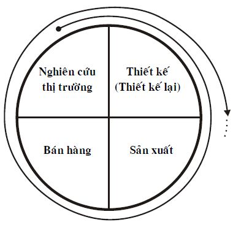
Hình 333: Chu trình chất lượng của Deming đối với thiết kế sản phẩm (theo nghĩa rộng)
Thiết kế sản phẩm tập trung vào các yêu cầu ngày càng cao của khách hàng phải tuân theo trình tự:
- Bộ phận tiếp thị xác định các yêu cầu của khách hàng, đưa ra những ý tưởng sơ khởi để đáp ứng các yêu cầu đó.
- Truyền đạt cho bộ phận kỹ thuật về những gì khách hàng yêu cầu và các ý tưởng của mình.
- Bộ phận kỹ thuật tiến hành các giai đoạn cần thiết để thiết kế sản phẩm.
- Khi thiết kế, chế tạo và thử nghiệm ra được sản phẩm mà khách hàng mong muốn thì thiết kế đó được đưa đến bộ phận sản xuất.
- Bộ phận sản xuất phải lập kế hoạch sản xuất. Bộ phận thiết kế phải hoạch định việc kiểm soát đầu vào và người cung ứng.
- Thiết lập tiếp các bước thâm nhập và chiếm lĩnh thị trường đối với sản phẩm mới.
Những điều vừa nói được minh họa tóm tắt bằng Hình 334 dưới đây:
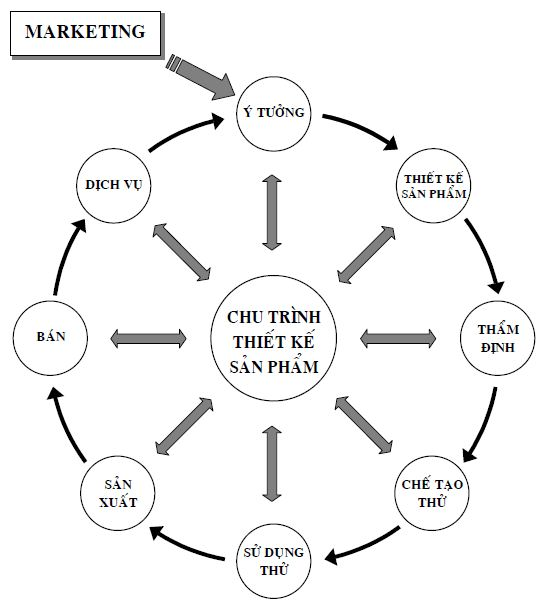
Hình 334: Tóm tắt chu trình thiết kế sản phẩm
Khi thiết kế sản phẩm, các câu hỏi sau phải được trả lời một cách rõ ràng và biến thành các hành động tương ứng:
- Làm thế nào để chuyển (“phiên dịch”) các yêu cầu của khách hàng thành các mục đích, yêu cầu, thông số kỹ thuật cần đạt?
- Làm thế nào bảo đảm chất lượng thiết kế khi tiến hành sản xuất và sử dụng sản phẩm?
- Làm sao rút ngắn thời gian từ thiết kế đến sản xuất và cung ứng cho thị trường?
- Làm thế nào để có được chu trình cải tiến chất lượng liên tục trong thiết kế sản phẩm nhằm thích ứng với những biến động thị trường và thỏa mãn các yêu cầu ngày càng cao của khách hàng?
- Quá trình kiểm soát chất lượng nói chung gồm bốn giai đoạn: Lập kế hoạch (Plan); thực hiện (Do); kiểm tra (Check); hành động (Action) và được gọi tắt là quá trình PDCA theo các chữ cái đầu của các từ tiếng Anh. Quá trình này được gọi là “vòng tròn kiểm soát” (Control Circle) và được minh họa trên Hình 335 dưới đây:
Hình 335: Vòng tròn kiểm soát (PDCA)
Hình 335 cho thấy, quá trình PDCA có sáu bước. Trong đó:
- Giai đoạn lập kế hoạch (P) có hai bước là “Xác định các mục đích và mục tiêu” và “Xác định các phương pháp đạt các mục đích”.
- Giai đoạn thực hiện (D) có hai bước là “Thực hiện giáo dục và đào tạo” và “Thực hiện công việc”.
- Giai đoạn kiểm tra (C) có một bước là “Kiểm tra các kết quả của việc thực hiện”.
- Giai đoạn hành động (A) có một bước là “Có hành động thích hợp”.
Tiếp theo là một số điểm cần lưu ý khi thực hiện các bước.
1) Xác định các mục đích và mục tiêu:
Các mục đích và mục tiêu cần được xác định dựa trên các chính sách (policies), mà các chính sách đó phải được thiết lập bởi quản lý cấp cao nhất và được truyền xuống các cấp dưới một cách nhất quán, rõ ràng. Các chính sách này có được là nhờ các cấp dưới tham mưu, thông qua việc cung cấp cho cấp trên cơ sở mang tính lôgích (rationale), các thông tin, dữ liệu cần thiết để cấp trên phân tích và ra quyết định. Khi hoạch định chính sách, cấp lãnh đạo phải luôn luôn có trong đầu bức tranh tổng quát của hệ thống.
Sau khi các chính sách đã được thiết lập, nói chung, các mục đích sẽ trở nên tự thấy rõ (self-evident). Các mục đích này phải thể hiện dưới dạng các con số, mang tính định hướng nhất định. Khi trình bày các mục đích cho các nhân viên, hãy sử dụng các từ ngữ, con số cụ thể; hãy nói cho họ biết tất cả những gì họ cần biết, kể cả các thông tin về biên chế nhân sự, chất lượng, chi phí, số lượng sản phẩm và thời gian cung ứng. Không ra những mệnh lệnh trừu tượng như “hãy nghiên cứu xem” hoặc “hãy kiểm soát nó một cách có hiệu quả”.
Khi xác định các mục đích, thời hạn cuối cùng để đạt mục đích cần phải chỉ ra. Đồng thời cần xác định ngưỡng trên và ngưỡng dưới của các mục đích cần đạt. Ví dụ, có những mục đích cần phải đạt bằng bất kỳ giá nào và có những mục đích ở dạng khuyến khích đạt. Các mục đích phải được xác định dựa trên các vấn đề công ty đang cần giải quyết và cần sự hợp tác của tất cả các phòng, ban của công ty.
Các chính sách và các mục đích phải được thể hiện dưới dạng viết và phổ biến rộng rãi đến tận những nhân viên cấp thấp nhất. Đây chính là quá trình triển khai các chính sách và các mục đích.
Nhìn theo quan điểm quản lý, các mục đích lại có thể chia thành các mục đích ưu tiên và các mục đích hàng ngày (priority goals and routine goals). Nói cách khác, việc kiểm soát cũng phải chia thành kiểm soát ưu tiên và kiểm soát hàng ngày.
2) Xác định các phương pháp đạt mục đích:
Không thể đạt mục đích quản lý giảm tỷ lệ khuyết tật của sản phẩm bằng cách đơn giản vỗ vai động viên những người làm việc theo kiểu: “Cố gắng lên nhé! Cố gắng lên nhé!”. Nói cách khác, ở đây cần các phương pháp khoa học có các cơ sở lôgích để đạt mục đích.
Tuy các phương pháp có nhiều, khi đưa vào công ty cần lựa chọn các phương pháp nào không khó sử dụng và ích lợi đối với tất cả mọi người.
3) Thực hiện giáo dục và đào tạo:
Cấp trên các loại có trách nhiệm giáo dục và bồi dưỡng những người dưới quyền.
Các tiêu chuẩn công việc và các tiêu chuẩn kỹ thuật có thể đưa thành các định mức. Nhưng khi triển khai xuống dưới, các nhân viên có thể không đọc chúng, hoặc có đọc thì họ không thật hiểu những ý nghĩa, giá trị đứng đằng sau các định mức đó, hoặc cách thức mà họ phải tuân thủ. Do vậy, điều quan trọng là phải dạy cho họ các tiêu chuẩn và các định mức này.
Dạy học nói đến ở đây không có nghĩa chỉ tập hợp mọi người vào lớp học và thuyết giảng. Thời gian học trên lớp chỉ chiếm khoảng một phần ba hoặc một phần tư quá trình giáo dục và đào tạo. Ngoài ra, còn có nhiều hình thức khác, kể cả hình thức một dạy một thông qua công việc đang diễn ra.
Trong quá trình giáo dục và đào tạo, cấp trên sẽ trao thêm quyền và tăng mức độ tự do thực hiện công việc cho cấp dưới. Điều này giúp cho cấp dưới trưởng thành, trở nên tự chủ hơn, tin cậy hơn. Do vậy, sự tự giác, phát huy sáng kiến của cấp dưới tăng lên, sự giám sát, kiểm tra của cấp trên sẽ giảm đi và cấp trên có thể lãnh đạo nhiều thành viên cấp dưới hơn.
4) Thực hiện công việc:
Cấp trên có thể buộc cấp dưới thực hiện công việc bằng cách ra lệnh. Tuy nhiên các điều kiện thay đổi thường xuyên và các mệnh lệnh của cấp trên có thể không bắt kịp với sự thay đổi đó. Từ đó, các vấn đề cần giải quyết có thể nảy sinh. Do vậy, ở đây rất cần sự tình nguyện tham gia của cấp dưới trong quản lý chất lượng, chứ không đơn thuần là bắt cấp dưới chấp hành mệnh lệnh, các tiêu chuẩn, các định mức. Đồng thời, nhìn theo góc độ quản lý và kiểm soát, các vấn đề có thể nảy sinh cần được tính đến trong mỗi bước thực hiện.
5) Kiểm tra các kết quả của công việc thực hiện:
Làm thế nào để kiểm tra xem công việc có được thực hiện trôi chảy không?
Nếu thường xuyên đòi: “Hãy kiểm tra cái này!, Hãy kiểm tra cái kia!”, thì bạn sẽ không thành công. Bởi vì, đây là kiểu quản lý không tin tưởng vào con người. Ngược lại, để mọi người tự do hành động mà hoàn toàn không có hệ thống kiểm tra thì quản lý không còn là quản lý.
Trong quản lý, nguyên tắc quản lý những cái ngoại lệ, lệch chuẩn đóng vai trò rất quan trọng. Nếu mọi thứ tiến triển tuân theo đúng các mục đích, các tiêu chuẩn đề ra thì cứ để chúng làm việc như thế. Nhưng khi có những sự kiện bất thường xảy ra, hoặc bất cứ gì khác với thường ngày, người quản lý phải can thiệp. Mục đích của việc kiểm tra là phát hiện những ngoại lệ, những lệch chuẩn.
Để hoàn thành nhiệm vụ này một cách có hiệu quả, tất cả các chính sách, mục đích, tiêu chuẩn và tác dụng của giáo dục, đào tạo phải được những người thực hiện công việc hiểu và tiếp nhận một cách rõ ràng. Điều đó giúp cho họ phát hiện những cái ngoại lệ, lệch chuẩn.
Đi vào cụ thể, người ta cần phải kiểm tra các nguyên nhân và kiểm tra thông qua các kết quả:
a) Kiểm tra các nguyên nhân
Bước đầu tiên của việc kiểm tra là xem tất cả các yếu tố nguyên nhân đã được kiểm soát chưa. Nói cách khác, bạn phải kiểm tra mỗi quá trình như thiết kế, cung cấp, sản xuất… để tin rằng các yếu tố nguyên nhân đều ở trong trạng thái tương ứng với các tiêu chuẩn, các định mức. Các yếu tố nguyên nhân được trình bày trong các biểu đồ xương cá (biểu đồ nhân – quả Ishikawa) tương ứng cho mỗi quá trình.
b) Kiểm tra các kết quả
Một cách kiểm tra nữa là kiểm tra quá trình hoặc công việc theo kết quả. Những kết quả cần đạt này cũng được thể hiện trên các biểu đồ xương cá. Các kết quả có thể liên quan đến nhân sự (tỷ lệ nhân viên có mặt làm việc, số lượng các đề nghị cải tiến,…); chất lượng; số lượng; thời hạn cung ứng; số lượng vật liệu, lao động, máy móc cần thiết cho sản xuất một đơn vị sản phẩm; chi phí. Bằng cách quan sát, theo dõi những thay đổi xảy ra đối với mỗi mục kể trên, bạn có thể kiểm tra được quá trình, công việc và tình hình quản lý.
Nếu các kết quả có được không như ý, điều này có nghĩa, có điều gì bất thường xảy ra trong các quá trình và có các vấn đề nảy sinh. Nhiệm vụ của người quản lý là phát hiện các yếu tố nguyên nhân gây nên tình trạng vừa nêu và tìm cách kiểm soát chúng (có hành động thích hợp).
6) Có hành động thích hợp:
Kiểm tra các kết quả để tìm những cái ngoại lệ, lệch chuẩn, bất thường chưa đủ. Tiếp theo, cần tìm các yếu tố nguyên nhân và có các hành động thích hợp khắc phục các sai, lệch này.
Điều quan trọng là phải có những biện pháp ngăn ngừa các sai, lệch này lặp lại. Trong nhiều trường hợp, các hành động điều chỉnh (các giải pháp vá víu) các yếu tố nguyên nhân không đủ. Bạn phải tìm cách loại bỏ hẳn (chứ không phải điều chỉnh) các yếu tố nguyên nhân này để các sai lệch không lặp lại. Đây cũng là yêu cầu quan trọng của TQM.
Ví dụ, máy bị ngừng do nổ cầu chì. Cách giải quyết thông thường là thay cầu chì. Để tìm nguyên nhân thực sự, bạn phải đặt các câu hỏi, đặc biệt câu hỏi tại sao:
- Tại sao cầu chì nổ?
Vì quá tải.
- Tại sao có sự quá tải đó?
Vì vòng bi không đủ nhớt.
- Tại sao không đủ nhớt?
Vì máy bơm nhớt hoạt động không tốt?
- Tại sao máy bơm nhớt hoạt động không tốt?
Vì trục bơm bị hỏng.
- Tại sao nó hỏng?
Vì cặn dầu lắng đọng nhiều.
Sau khi biết nguyên nhân thực sự, người ta gắn một cái lọc vào máy bơm nhớt và vấn đề được giải quyết.
- Theo Masaaki Imai, tiếng Nhật “Kaizen” có nghĩa là “cải thiện, cải tiến nhỏ” và con đường dẫn tới Kaizen chính là sự thực hiện kiểm soát chất lượng toàn diện (TQC), trong đó, chất lượng con người là mối quan tâm hàng đầu. Làm cho con người có chất lượng nghĩa là giúp họ có ý thức về Kaizen. Họ phải được hướng dẫn để có thể phát hiện các vấn đề và phải được huấn luyện để có khả năng giải quyết các vấn đề đó. Khi vấn đề được giải quyết, kết quả phải được tiêu chuẩn hóa để tránh tái xuất hiện vấn đề và đánh dấu mốc tiến bộ mới. Bằng cách trải qua chu kỳ vô tận này của sự cải tiến, người ta có thể trở nên có tinh thần Kaizen và đặt ra kỷ luật để hoàn thành Kaizen trong công việc.
Kaizen đòi hỏi phải có những nỗ lực cải tiến không ngừng. Nói cách khác, Kaizen là một thách thức liên tục đối với các tiêu chuẩn hiện có. Đối với Kaizen, tiêu chuẩn hiện có sẽ phải thay bằng tiêu chuẩn mới tốt hơn. Mỗi tiêu chuẩn, mỗi quy định, mỗi định mức và mỗi đánh giá đều đòi hỏi phải có sự xét lại và nâng cao không ngừng. Như vậy, Kaizen có nghĩa là “sự cải tiến nhỏ liên tục”.
Trong vòng tròn kiểm soát (chu trình) PDCA (xem Hình 335), nếu ở bước 6 (có hành động thích hợp), có bài toán nhất định nào đó được phát hiện để giải, thì cần phải lập chu trình kiểm soát xem giải bài toán đó như thế nào, hiệu quả ra sao. Nếu giải pháp của bài toán này là một cải tiến, nó được chấp nhận như một tiêu chuẩn mới. Nói cách khác, chu trình PDCA trong trường hợp này đóng vai trò như một chu trình giải quyết vấn đề (xem Hình 336).
Hình 336: Chu trình giải quyết các vấn đề dựa trên chu trình PDCA
Chỉ khi nào công việc tiếp theo được thực hiện theo tiêu chuẩn mới, người ta mới có thể nói là đã có cải tiến thực sự.
Kaizen khởi đầu bằng việc cần giải quyết một vấn đề, hay nói cách khác, nhìn nhận là có vấn đề. Ở đâu không có vấn đề, ở đó không có tiềm năng cải tiến. Do vậy, Kaizen cũng là một quá trình giải quyết các vấn đề và Kaizen đòi hỏi phải sử dụng nhiều công cụ giải quyết vấn đề, kể cả những công cụ PPLSTVĐM không có trong TQC (TQM).
Các vấn đề có thể nảy sinh ở bất kỳ chỗ nào mà TQC động chạm tới. Điều này cũng có nghĩa, tại những chỗ đó đều cần sự cải tiến liên tục (Kaizen). Ở Nhật, TQC tập trung vào việc cải tiến công tác quản lý ở các cấp. Nó đặc biệt đề cập tới:
- Bảo đảm chất lượng.
- Giảm giá thành (chi phí).
- Đáp ứng được côta về sản xuất.
- Giao hàng đúng hẹn (just in time).
- An toàn.
- Phát triển các sản phẩm mới.
- Nâng cao năng suất.
- Quản lý quá trình cung ứng vật tư.
- TQC còn bao gồm cả tiếp thị, bán hàng, dịch vụ…
Nói cách khác, TQC được giới quản lý sử dụng như một công cụ để cải tiến toàn bộ hoạt động của công ty. Trong ý nghĩa này, các từ TQC và Kaizen đã trở thành gần như đồng nghĩa.
Cũng theo M. Imai, ở Nhật, Kaizen không chỉ là một triết lý mà đã trở thành một phong cách sống. Càng ở cấp cao, người quản lý càng quan tâm tới cải tiến. Một thợ máy chưa lành nghề làm việc ở cấp thấp nhất có thể phải luôn luôn làm theo sự hướng dẫn và chỉ cần duy trì các tiêu chuẩn, định mức đang có. Nhưng khi anh đủ năng lực, anh ta bắt đầu nghĩ đến cải tiến. Anh ta bắt đầu có những đề nghị cải tiến trong tư cách cá nhân hoặc/và tư cách thành viên của các nhóm chất lượng (quality circle). Liên quan đến hoạt động cải tiến của các công ty Nhật Bản, bạn đọc có thể xem lại các phụ lục: “Các nhóm chất lượng Nhật Bản”, “Tiêu chuẩn mỗi ngày một ý tưởng”, “Hãng ôtô Nhật Toyota” và “Các cuộc thi sáng tạo ở Nhật Bản” của quyển bốn, bộ sách “Sáng tạo và đổi mới”.
NHẬN XÉT:
Tương tự như phương pháp PGC (xem 13.3.4.4 Phương pháp phân tích giá trị – chức năng của quyển sáu này), TQM (TQC) có điểm xuất phát trực tiếp là những lý do kinh tế: Tăng tính cạnh tranh của các sản phẩm, hàng hóa, dịch vụ… trên thị trường bằng việc nâng cao chất lượng của chúng.
Nếu như phương pháp PGC, chủ yếu, có mục đích làm tăng tính hiệu quả sử dụng các sản phẩm bằng cách loại bỏ các chi phí thừa mà vẫn giữ nguyên (hoặc làm tốt hơn) các chức năng của chúng, thì TQM có mục đích rộng hơn nhiều: Đưa ra các sản phẩm chất lượng mà sản phẩm đó kinh tế nhất, ích lợi nhất và luôn đáp ứng các yêu cầu ngày càng cao của khách hàng.
Với mục đích rộng như vậy, TQM một mặt liên quan đến mọi cấp quản lý, mọi phòng, ban, mọi công việc, mọi người trong công ty và liên quan đến các hoạt động ngoài công ty như những nơi cung ứng vật tư, các nhà thầu phụ, các đơn vị làm công tác hậu mãi. Mặt khác, TQM đòi hỏi tất cả các bộ phận kể trên phải liên tục cải tiến (Kaizen).
Trong ý nghĩa này, nếu gọi TQM là phương pháp thì đấy là phương pháp rất lớn, đúng hơn, phải gọi là hệ thống các phương pháp thuộc nhiều lĩnh vực khác nhau.
- Như tên gọi, TQM trước hết là phương pháp thuộc lĩnh vực quản lý (management). Quản lý là quá trình làm việc của người quản lý với và thông qua những người khác, sử dụng các nguồn lực hữu hạn một cách có hiệu suất và hiệu quả cao nhất để đạt được các mục tiêu của tổ chức do mình quản lý (tổ, nhóm, đội, tập thể, công ty, cơ quan nhà nước, đoàn thể, tổ chức phi chính phủ, tổ chức phi lợi nhuận…) trong môi trường thay đổi.
Như vậy, về mặt nguyên tắc, cơ sở khoa học của TQM nói riêng, quản lý nói chung, là các khoa học nghiên cứu về toàn bộ các khía cạnh của con người, chứ không chỉ riêng khía cạnh sáng tạo của con người.
Còn khi thực hiện, kết quả của TQM phụ thuộc vào chính chất lượng của những người thực hiện. Chất lượng này có được nhờ giáo dục, đào tạo, điều kiện xã hội, truyền thống văn hóa, tính cách dân tộc…
Có lẽ, điều vừa nêu góp phần giải thích vì sao TQM (TQC) được thực hiện thành công hơn tại Nhật so với các nước khác, kể cả Mỹ – quê hương của TQM (TQC). Ví dụ, người Nhật chú ý cả quá trình làm việc, chứ không chỉ riêng kết quả của quá trình đó; người Nhật có tinh thần tập thể cao, có sự hòa đồng cấp trên và cấp dưới; người Nhật có tính cách làm gì cũng cố gắng làm cho thật hoàn hảo; người Nhật giải quyết khá tốt các xung đột về quyền lợi giữa giới chủ và thợ, giới quản lý và công nhân, công ty và công đoàn…
Nói cách khác, người Mỹ là tác giả của thành phẩm TQM (TQC), nhưng người Nhật lại về đích trước trong việc thực hiện đổi mới hoàn toàn (full innovation) đối với TQM (TQC) (xem phần khái niệm “đổi mới” trong mục 1.2 Một số khái niệm cơ bản và các ý nghĩa của chúng). Nhờ vậy, các ích lợi của TQM (TQC) thể hiện thành hiện thực đại trà ở Nhật sớm hơn ở Mỹ, giúp Nhật tạo nên sự thần kỳ về kinh tế (Japan’s Economic Miracle) và trở thành nền kinh tế lớn thứ hai thế giới.
- Kaizen là sự cải tiến nhỏ liên tục (continual improvement).
Nếu nhìn dưới góc độ các mức sáng tạo, các mức khó của bài toán (xem mục nhỏ 4.2.6 Các mức sáng tạo – các mức khó của bài toán của quyển một), chúng ta thấy:
- Kaizen tập trung vào các bài toán có mức khó thấp, đòi hỏi sáng tạo mức thấp, phần lớn là các mức zêrô và mức một. Đấy là các đề nghị hợp lý hóa, sáng kiến, cải tiến, giải pháp hữu ích và sáng chế mức thấp. Đây cũng là các mức sáng tạo mà mỗi người bình thường đều có khả năng đạt được. Điều này đáp ứng được đòi hỏi của TQM (TQC): Mỗi người đều tham gia kiểm soát và cải tiến chất lượng.
- Nói chung, các bài toán mà Kaizen đề cập đến là các bài toán – mini (xem mục nhỏ 10.3.2 Một số điểm cần lưu ý về tính ì hệ thống): Giải được chúng mà không làm hệ thay đổi nhiều. Lời giải của bài toán – mini có một loạt ưu điểm như: chi phí thấp; ích lợi so sánh cao; dễ được nơi áp dụng tiếp nhận; sự chống đối ít; tránh được các tác hại của hiệu ứng lan tỏa hệ thống. Nói cách khác, việc thực hiện đổi mới hoàn toàn với các bài toán – mini dễ dàng hơn và các ích lợi thể hiện ra nhanh hơn. Đây cũng chính là quan điểm đổi mới nhỏ (Incremental Innovation).
- Nhìn theo quan điểm sử dụng PPLSTVĐM để giải bài toán, các phương pháp sử dụng trong Kaizen là các phương pháp đơn giản, dễ học, dễ nhớ, dễ áp dụng. Ví dụ, phương pháp đơn giản với tên gọi “phương pháp đặt câu hỏi tại sao” (Why Method) được dùng để giải quyết vấn đề nổ cầu chì do máy quá tải, mà người viết đã dẫn ra khi trình bày Kaizen ở phần trên.
- Những gì vừa trình bày trong điểm 4 này chính là phạm vi áp dụng của Kaizen. Do vậy, Kaizen không thích hợp đối với những tình huống, ở đó cần có sự dịch chuyển nguyên lý (paradigm shift) hoặc cần chuyển sự phát triển từ đường cong hình chữ S này sang đường cong hình chữ S khác (sẽ được người viết trình bày trong quyển bảy của bộ sách “Sáng tạo và đổi mới”).
Trong ý nghĩa “Kaizen là sự cải tiến nhỏ liên tục”, nếu so sánh phương pháp PGC với TQM (TQC), Kaizen, chúng ta có thể thấy, phương pháp PGC còn khác ở chỗ, phương pháp PGC nhắm tới cả những sáng tạo mức cao. Bởi vì, trong các nguyên tắc người sử dụng phương pháp PGC cần tuân thủ có “nguyên tắc tiếp cận liên ngành” và “nguyên tắc áp dụng các kiến thức khoa học và kỹ thuật mới nhất”. Chính cách tiếp cận liên ngành và áp dụng các kiến thức khoa học và kỹ thuật mới nhất giúp cho ra đời những ý tưởng mới, những nguyên lý hoạt động mới chưa có trước đó. Những sáng tạo loại này có thể lên đến mức 4, mức 5 (xem mục nhỏ 4.2.6 Các mức sáng tạo – các mức khó của bài toán của quyển một).
TQM (TQC) có đưa ra các phương pháp của mình, trước hết, là các phương pháp thống kê sơ cấp (Elementary Statistical Methods), các phương pháp thống kê trung cấp (Intermediate Statistical Methods) và các phương pháp thống kê cao cấp có sử dụng máy tính (Advanced Statistical Methods Using Computers Concurrently). Ngoài ra, còn có những phương pháp không thống kê như biểu đồ xương cá, các phương pháp sử dụng các câu hỏi, các danh sách các câu hỏi kiểm tra dùng riêng cho TQM (TQC).
TQM (TQC) cũng khuyến khích sử dụng các phương pháp khác của lĩnh vực PPLSTVĐM để giải các bài toán. Nếu quản lý trong TQM (TQC) tập trung vào hai việc: Duy trì và cải tiến các tiêu chuẩn, các định mức, thì có thể chia các bài toán thành hai loại: Các bài toán duy trì và các bài toán cải tiến các tiêu chuẩn, các định mức.
Đối với các bài toán duy trì, cần các phương pháp đi tìm và khắc phục các nguyên nhân gây nên sự bất thường, lệch chuẩn. Người viết cho rằng, những phương pháp như phương pháp của Kepner và Tregoe sẽ thích hợp (xem 13.3.4.2 Phương pháp của Kepner và Tregoe của quyển sáu này). Đối với các bài toán cải tiến, các phương pháp có các công cụ khắc phục tính ì tâm lý và giúp phát các ý tưởng sáng tạo mức thấp sẽ thích hợp.
- TQM (TQC) còn có nhiều điều kiện để tiếp tục phát triển dựa trên cơ sở khoa học của nó là các thành tựu mới của các khoa học nghiên cứu và phát triển con người. Chưa kể, ẩn bên trong các khoa học này còn có các khoa học về tâm lý, thông tin, điều khiển, hệ thống…
Khi khái niệm “chất lượng” được mở rộng ra cho tất cả các hoạt động của con người, chứ không chỉ tập trung cho các sản phẩm công nghiệp, lúc đó, xuất hiện các khái niệm như chất lượng bài giảng, chất lượng bức tranh, chất lượng chuyến đi tham quan, chất lượng ý tưởng… TQM (TQC) có thể và cần tiến tới đa dạng hóa để phù hợp với sự đa dạng các hoạt động của con người.
- So sánh TQM (TQC), Kaizen và TRIZ (xem lại những gì người viết đã trình bày về TRIZ cho đến nay), người viết cho rằng, chúng giao nhau ở một số điểm như:
- Cả hai đều sử dụng cách tiếp cận hệ thống và điều khiển.
- Cả hai đều nhấn mạnh luận điểm “Ích lợi nhiều nhất với chi phí ít nhất”.
Tuy nhiên, trong TRIZ luận điểm vừa nêu được cụ thể hóa, chi tiết hóa nhiều hơn và biến thành những công cụ, lời khuyên rõ ràng. Ví dụ, trong TRIZ có các nguyên tắc liên quan trực tiếp như 2. Nguyên tắc “tách khỏi”; 6. Nguyên tắc vạn năng; 12. Nguyên tắc đẳng thế; 20. Nguyên tắc liên tục các tác động có ích; 25. Nguyên tắc tự phục vụ; 27. Nguyên tắc “rẻ” thay cho “đắt”. Các lời khuyên trực tiếp như “Có vấn đề, trước hết, phải sử dụng các nguồn dự trữ có sẵn trong hệ, đặc biệt, các nguồn dự trữ trời cho không mất tiền để giải quyết”; “Phải tạo ra sự thay đổi ít nhất trong hệ để sự chống đối (tính ì hệ thống) là nhỏ nhất”; “Bài toán đầu tiên nên chọn giải là bài toán – mini”; “Trong các giải pháp tương đương, nên chọn giải pháp làm hệ thay đổi ít nhất”.
Các công cụ, lời khuyên khác của TRIZ ít, nhiều đều liên quan đến luận điểm nêu trên.
- Cả hai đều đề cập việc phát hiện và giải quyết các vấn đề để tạo ra sự tiến bộ, phát triển. Tuy nhiên, TQM (TQC), Kaizen, như trên đã nói, tập trung vào các vấn đề có mức khó thấp, thực hiện các đổi mới nhỏ. Trong khi đó, TRIZ đề cập cả những vấn đề có các mức khó cao (các mức sáng tạo cao).
- Dưới dạng ẩn, TQM (TQC), Kaizen có đề cập phần nào khía cạnh khách quan của sáng tạo và đổi mới. Đấy là các công ty phải tuân theo quy luật cung – cầu khi đưa ra các sản phẩm của mình. Điều này thể hiện trong định nghĩa khái niệm “chất lượng”; trong các hành động cải tiến của Kaizen; trong việc mở rộng khái niệm “khách hàng” cho nội bộ công ty, khi những người làm việc ở công đoạn trước cần có thái độ và hành động ứng xử đối với những người thuộc công đoạn sau như đối với các khách hàng của mình, theo tinh thần khách hàng là Thượng đế.
Tuy nhiên, về mặt nghiên cứu và kết quả nghiên cứu khía cạnh khách quan của sáng tạo, TRIZ đầy đủ và ở mức phát triển cao hơn nhiều so với TQM (TQC), Kaizen.
- TQM (TQC), Kaizen với khái niệm “chất lượng”: Kinh tế nhất, ích lợi nhất và luôn làm hài lòng khách hàng, đòi hỏi sự cải tiến liên tục bằng cách phát hiện và giải quyết các vấn đề liên quan. Rõ ràng, khi giải quyết các vấn đề đó, người giải gặp không ít các mâu thuẫn vì các mâu thuẫn này đã ẩn chứa ngay trong định nghĩa khái niệm “chất lượng”, tương tự như mục đích đề ra của phương pháp PGC.
Tuy vậy, TQM (TQC), Kaizen không nhắc gì đến các loại mâu thuẫn, phân tích các loại mâu thuẫn, lại càng không đưa ra các công cụ dùng để giải quyết chúng, như TRIZ đã làm khá tốt.
- Từ các NHẬN XÉT 8 và 9, bạn đọc có thể thấy, khi kết hợp với nhau, TRIZ sẽ làm tăng sức mạnh TQM (TQC), Kaizen một cách đáng kể theo các hướng sau:
- TRIZ cung cấp cho TQM (TQC), Kaizen thêm các công cụ giải các bài toán có các mức khó thấp dưới dạng các lời khuyên, các thủ thuật (nguyên tắc) sáng tạo.
- TRIZ bổ sung cho TQM (TQC), Kaizen các khái niệm về mâu thuẫn, các cách giải quyết mâu thuẫn.
- TRIZ giúp cho TQM (TQC), Kaizen những khái niệm, những công cụ mới liên quan đến sự cần thiết phải chuyển sang nguyên lý hoạt động mới, khi nguyên lý hoạt động hiện có cạn khả năng phát triển. Bởi vì, “sự cải tiến nhỏ liên tục” (Kaizen) chỉ có ý nghĩa, thậm chí, chỉ có thể thực hiện được khi nguyên lý hoạt động hiện có chưa cạn khả năng phát triển. Đây cũng chính là phạm vi áp dụng của Kaizen.
13.3.5 Các phương pháp sáng tạo không phải của TRIZ là các phương pháp được máy tính trợ giúp (Computer Assisted Creativity Methods)
Nhân nói về máy tính ở đây, bạn đọc có thể kết hợp với việc xem lại mục nhỏ 6.3.5 Máy tính giải quyết vấn đề và tư duy sáng tạo của quyển hai.
Trong mục nhỏ này, những gì trình bày dưới đây được người viết tóm tắt từ quyển sách của Tony Proctor, phần nói về sáng tạo được máy tính trợ giúp.
- Năm 1985, H.A. Simon và cộng sự phát triển chương trình máy tính được đặt tên là BACON. Simon tuyên bố rằng nếu chương trình máy tính có khả năng làm các phát minh như các phát minh tìm ra bởi con người thì nó có thể được coi là sáng tạo. Lúc đó, các quá trình xử lý mà chương trình máy tính sử dụng sẽ cung cấp các thông tin có ích về quá trình sáng tạo.
Chương trình BACON nhận các dữ liệu quan sát và thí nghiệm, sau đó đưa ra, khi thành công, các phát minh khoa học. Simon muốn cho thấy rằng, công việc phát minh khoa học có thể hiểu được, nếu nó có thể giải thích được bằng ngôn ngữ của các quá trình xử lý thông tin cơ bản, mà những quá trình xử lý thông tin đó cũng chịu trách nhiệm đối với các loại suy nghĩ và giải quyết vấn đề khác của con người. Các nỗ lực của Simon hướng tới việc cho máy tính tự nó giải quyết vấn đề một cách sáng tạo.
Ngoài cách tiếp cận của Simon, các nhà nghiên cứu khác coi sự tương tác (kết hợp) giữa người và máy tính như là phương tiện để giải quyết vấn đề một cách sáng tạo. Những cố gắng đầu tiên theo hướng này: Tạo ra những trợ giúp giải quyết vấn đề nhờ máy tính, được thực hiện vào cuối những năm 1970, trùng với việc ra đời các máy tính cá nhân (máy vi tính).
Các tiêu chuẩn sau thường được dùng để đánh giá phần mềm máy tính có giúp cho công việc giải quyết vấn đề một cách sáng tạo hay không:
Phần mềm có giúp thực hiện giai đoạn nào đó trong các giai đoạn (ví dụ, xác định vấn đề, phát ý tưởng, đánh giá ý tưởng) của quá trình suy nghĩ giải quyết vấn đề một cách sáng tạo nhanh hơn không?
Phần mềm có cung cấp cơ chế nào để kích thích tư duy (ví dụ như cung cấp các ẩn dụ, các từ ngữ ngẫu nhiên…) không?
Phần mềm có cung cấp phương pháp mang tính cấu trúc bên trong để thực hiện việc xác định vấn đề, phát ý tưởng, đánh giá ý tưởng không?
Phần mềm có tạo sự dễ dàng hoặc cải tiến việc sử dụng các trợ giúp mang tính quy ước giải quyết vấn đề một cách sáng tạo không?
Máy tính làm quá trình sáng tạo tập thể (nhóm) trở nên dễ dàng, dù mỗi thành viên ở xa nhau. Đối với quá trình sáng tạo cá nhân, ưu điểm của phần mềm sẽ là cung cấp cho cá nhân những nguồn kích thích suy nghĩ mà không cần sự có mặt của những người khác.
Những công dụng được biết đến rộng rãi của máy tính đối với các công việc giải quyết vấn đề là: Nối mạng truyền thông tin các loại giữa những người tham gia giải bài toán; các phần mềm mô hình hóa, thực hiện việc mô phỏng các hệ thống, các quá trình phức tạp, khó nghiên cứu trên thực tế; các cơ sở dữ liệu, tri thức; các phần mềm dành riêng cho một số loại thiết kế;…
- Một loại phần mềm được các nhà nghiên cứu đặc biệt chú ý xây dựng là những phần mềm mô phỏng các phương pháp sáng tạo đã có trong lĩnh vực PPLSTVĐM. Nhờ vậy, khi sử dụng phương pháp sáng tạo nào đó, thay vì phải tự làm hết, người sử dụng có thể chuyển giao một số bước, một số công đoạn cho máy tính làm. Dưới đây là một số phần mềm như vậy:
- Phần mềm InfoMap Lite dùng cho phương pháp bản đồ trí óc.
- Brainbox là một chương trình khác giúp người sử dụng xây dựng “bản đồ ý nghĩ”.
- Phần mềm WEB cho phép người sử dụng kết nối người sử dụng với các ý tưởng của chính mình và tái cấu trúc chúng. WEB là sự áp dụng siêu văn bản (hypertext), trong đó văn bản được phân bố, sắp xếp trong “các khung”. “Khung” có thể là câu, đoạn hoặc một danh sách ứng với một chủ đề nhất định của thông tin. Các khung này nối với nhau bằng các luồng (threads). Luồng là số các khung liên quan được sắp xếp cho thích hợp với người sử dụng. Người sử dụng có thể trộn và chọn các khung để tạo ra các luồng mới. Tương tự như phương pháp não công, các thông tin và ý tưởng có thể được ghi lại theo cách riêng.
- MORPHY là phần mềm được phát triển dựa trên và hỗ trợ cho phương pháp phân tích hình thái.
- Mindlink Problem Solver là phần mềm được tạo ra trên cơ sở các nguyên tắc và các khái niệm của phương pháp Synectics.
- Phần mềm Cope giúp xây dựng các bản đồ nhận thức một cách dễ dàng. Nó có ích lợi trong việc hiểu niềm tin, thái độ của người giải đối với bài toán cần giải. Nó cũng giúp phát hiện các vật cản ẩn dấu khi thực hiện các ý tưởng mới.
- Phần mềm BRIAN giúp cấu trúc các vấn đề và ra quyết định. BRIAN có module riêng thực hiện phân tích hình thái. Nó có ích lợi đối với việc phát các ý tưởng mới cho sản phẩm.
- BRAIN giúp xác định các vấn đề có kết thúc mở và kích thích các cách xem xét. BRAIN sử dụng các từ ngẫu nhiên và các mệnh đề bán nghĩa (semi-meaning phrases). Nó có ích lợi trong việc phát hiện những cách làm mới đối với công việc nào đó.
- Idea Generator ích lợi trong việc cấu trúc các vấn đề. Nó có cả phương pháp đưa ra các cách xem xét nhờ sự tương tự.
- Idea Tree giúp vẽ bản đồ trí óc. Nó thích hợp trong việc thu nhận các cách xem xét vấn đề có cấu trúc như thế nào.
- IdeaFisher sử dụng sự liên tưởng từ ngữ cho phép người sử dụng đi theo sợi dây liên kết ý tưởng.
- Thunder Thought là phần mềm phát các từ ngẫu nhiên giúp kích thích các cách xem xét.
- MoonLite giúp đưa ra các ý tưởng sáng tạo. MoonLite được phát triển dựa trên giả thiết là, ít nhất, có 80% nguồn lực nhìn thấy và không nhìn thấy của người giải còn chưa được sử dụng một cách đầy đủ. MoonLite có nhiệm vụ giúp người giải phát huy tiềm năng này.
- BizIdea là phần mềm tiên tiến hơn MoonLite nhờ sử dụng lôgích mờ (Fuzzy Logic) trong việc xác định và xếp hạng các tiêu chuẩn đánh giá.
- Nói chung, trên thế giới có khá nhiều các phần mềm kiểu như trên và với thời gian, chúng được tạo ra ngày càng nhiều. Phần lớn các phần mềm, bằng cách này hay cách khác, ở mức độ này hay mức độ khác, có trợ giúp người sử dụng thực hiện các giai đoạn của quá trình giải quyết vấn đề một cách sáng tạo. Tuy nhiên, cho đến nay, sự trợ giúp của các phần mềm nhấn mạnh giai đoạn phát ý tưởng hơn so với các giai đoạn khác như phát hiện, xác định, phân tích vấn đề và đánh giá các ý tưởng để ra quyết định. Điều này cho thấy sự cần thiết phải có các phần mềm cho cả các giai đoạn khác nữa.
Hiện nay còn có ít các công trình nghiên cứu mức độ phổ biến, quy mô sử dụng các phần mềm sáng tạo, cũng như các công trình so sánh, tổng kết, đánh giá các ích lợi của các phần mềm nói riêng, máy tính điện tử, công nghệ thông tin và truyền thông nói chung đối với sáng tạo và đổi mới.
Lại càng ít có những công trình nghiên cứu những cái bẫy, thậm chí, các mặt trái của việc lạm dụng các khả năng của máy tính đối với sáng tạo và đổi mới.
13.4 TỔNG KẾT CHƯƠNG 13
- Với tư cách một chương, toàn bộ quyển sáu trình bày “Các phương pháp sáng tạo của TRIZ và các phương pháp sáng tạo không phải của TRIZ”.
Trong phần thứ nhất của quyển sáu trình bày “Các phương pháp sáng tạo của TRIZ” (xem mục 13.2 Tổng quan các phương pháp sáng tạo của TRIZ), người viết, một mặt, điểm lại những phương pháp sáng tạo của TRIZ đã được trình bày trong năm quyển sách trước của bộ sách “Sáng tạo và đổi mới”. Mặt khác, người viết cũng giới thiệu tóm tắt những phương pháp sáng tạo của TRIZ sẽ được trình bày trong những quyển sách tiếp theo. Quađđây, bạn đọc có thể thấy TRIZ chứa trong nó rất nhiều các phương pháp sáng tạo.
Các phương pháp sáng tạo của TRIZ được người viết phân thành hai loại: Các phương pháp được xây dựng dựa trên cơ sở là các thủ thuật (xem 13.2.2) và các phương pháp dựa trên các cơ sở khác (xem mục nhỏ 13.2.3). Ngoài ra, còn có phương pháp đặc biệt, tổng hợp hầu hết tất cả các phương pháp sáng tạo của TRIZ nói chung, thành một chương trình đầy đủ, bao quát toàn bộ quá trình thực hiện giải quyết vấn đề và ra quyết định (xem mục nhỏ 13.2.4 Algôrit giải các bài toán sáng chế (ARIZ)).
Trong phần nói về các phương pháp sáng tạo của TRIZ, bên cạnh các phương pháp sáng tạo được giới thiệu mang tính chất tổng quan, người viết có trình bày khá chi tiết nội dung và cách sử dụng “Phương pháp mô hình hóa (bài toán) bằng những người tý hon”, gọi tắt là phương pháp MBN (xem phương pháp này trong mục nhỏ 13.2.3 Các phương pháp sáng tạo của TRIZ dựa trên các cơ sở khác).
- Phần thứ hai, phần dài nhất của quyển sáu, được dành cho việc trình bày “Các phương pháp sáng tạo không phải của TRIZ” (xem mục 13.3).
Trong lĩnh vực PPLSTVĐM có khá nhiều các phương pháp sáng tạo không phải của TRIZ. Chỉ riêng tại Liên Xô đã có các phương pháp như:
- Phương pháp tư duy định hướng (Метод направленного мышления) của N.I. Xeređa, đưa ra năm 1961.
- Phương pháp bảy lần tìm kiếm (Метод семикратного поиска) của G.Ia. Bush, đưa ra năm 1964.
- Phương pháp các thủ thuật heuristic (Метод эвристических приёмов) của A.I. Polovinkin, đưa ra năm 1969.
- Phương pháp tiếp cận lôgích – hệ thống giải các bài toán sáng chế (Метод системно – логического подхода к решению изобретательских задач) của V.X. Shubin, đưa ra năm 1972.
- Phương pháp các ma trận tìm kiếm bậc mười (Метод десятичных матриц поиска) của R.P. Povileiko, đưa ra năm 1972.
Tuy nhiên, người viết đã không trình bày các phương pháp vừa nêu, vì các phương pháp vừa nêu không thông dụng bằng TRIZ ngay tại Liên Xô, chưa nói gì ở mức độ thế giới.
Tương tự như vậy, đối với các phương pháp sáng tạo không phải của TRIZ khác, người viết, chủ yếu, cũng chỉ lấy các phương pháp được biết đến khá rộng rãi để đưa vào quyển sáu này.
Các phương pháp sáng tạo không phải của TRIZ được người viết nhóm lại thành bốn nhóm:
- Các phương pháp sáng tạo không phải của TRIZ dựa trên các kinh nghiệm (xem mục nhỏ 13.3.2).
- Các phương pháp sáng tạo không phải của TRIZ dựa trên cơ sở khoa học và kinh nghiệm (xem mục nhỏ 13.3.3).
- Các phương pháp sáng tạo không phải của TRIZ là các phương pháp bao quát cả quá trình giải bài toán (xem mục nhỏ 13.3.4).
- Các phương pháp sáng tạo không phải của TRIZ là các phương pháp được máy tính trợ giúp (xem mục nhỏ 13.3.5).
Việc phân nhóm này chỉ nhằm mục đích giúp người viết dễ trình bày các phương pháp sáng tạo không phải của TRIZ. Do vậy, sau khi đọc xong các phương pháp được trình bày ở đây, bạn đọc có quyền sắp xếp chúng lại thành các nhóm thích hợp nhất đối với bạn.
Cuối mỗi phương pháp sáng tạo không phải của TRIZ, người viết đều cho các nhận xét mang tính chất giải thích, so sánh, đánh giá ưu, nhược điểm của phương pháp đó. Bạn đọc nên coi những nhận xét của người viết là các ý kiến tham khảo giúp tự mình suy nghĩ thêm để đưa ra những nhận xét của riêng bạn.
Người viết tin rằng, sau khi đọc xong các phương pháp sáng tạo không phải của TRIZ, bạn đọc thấy được những điểm sau:
- Trong lĩnh vực PPLSTVĐM có nhiều phương pháp sáng tạo (giải quyết vấn đề và ra quyết định) của nhiều tác giả thuộc nhiều nước chứ không chỉ duy nhất – một phương pháp, một tác giả như ai đó có thể đã từng ngộ nhận.
- Có những phương pháp rất đơn giản, chỉ bao gồm một câu hỏi (xem NHẬN XÉT 1 của 13.3.2.1 Phương pháp sáu câu hỏi) và có những phương pháp rất phức tạp (xem các phương pháp trình bày trong mục nhỏ 13.3.4 Các phương pháp sáng tạo không phải của TRIZ là các phương pháp bao quát cả quá trình giải bài toán). Với những phương pháp đơn giản, bạn có thể tự học, còn đối với những phương pháp phức tạp – bạn cần tham dự các khóa học và sau đó phải luyện tập thật nhiều.
- Các phương pháp sáng tạo khác nhau về cơ sở, dựa trên đó các nhà nghiên cứu xây dựng chúng.
Có những phương pháp được xây dựng dựa trên kinh nghiệm là chủ yếu (xem mục nhỏ 13.3.2).
Có những phương pháp, về cơ bản, dựa trên lôgích như phương pháp phân tích và biểu đồ Pareto (xem 13.3.3.1), phương pháp biểu đồ xương cá (xem 13.3.3.2), phương pháp Kepner – Tregoe (xem 13.3.4.2).
Có những phương pháp lấy các hiện tượng tâm lý để phát triển như phương pháp bản đồ trí óc (xem 13.3.3.3), phương pháp đối tượng tiêu điểm (xem 13.3.3.4).
- Các phương pháp sáng tạo khác nhau về số lượng người cần tham gia.
Có những phương pháp chỉ cần một người tham gia là đủ, mặc dù có thể dùng cho cả nhóm người.
Có những phương pháp đòi hỏi cả một tập thể tham gia như phương pháp não công (xem 13.3.2.3), phương pháp Synectics (xem 13.3.4.1), phương pháp CPS (xem 13.3.4.3).
Có những phương pháp đòi hỏi liên ngành, nhiều phòng ban, thậm chí, toàn bộ tổ chức tham gia như phương pháp PGC (xem 13.3.4.4) và TQM (xem 13.3.4.5).
- Các phương pháp sáng tạo đa dạng về mục đích sử dụng, hiểu theo nghĩa, có những phương pháp dành cho công việc nhất định nào đó và có những phương pháp có thể sử dụng cho nhiều loại công việc có trong quá trình thực hiện giải quyết vấn đề.
- Các phương pháp sáng tạo khác nhau về mức độ chặt chẽ. Điều này thể hiện ở sự khác nhau về mức độ rõ ràng trong việc định nghĩa các khái niệm thuộc lĩnh vực sáng tạo và đổi mới, và về mức độ chặt chẽ trong lập luận xây dựng phương pháp.
Nếu kể tiếp, chúng ta có thể thấy các phương pháp sáng tạo còn khác nhau cả về những mặt khác như về phạm vi áp dụng; dùng cho các mức khó của các bài toán; khía cạnh chủ quan, khách quan của sáng tạo; hiệu quả của phương pháp mang lại khi giải quyết các vấn đề trên thực tế;…
Tóm lại, các phương pháp sáng tạo rất đa dạng. Tuy nhiên, sự đa dạng này mới ở trạng thái “trăm hoa đua nở”, bởi vì, bên trong sự đa dạng này còn thiếu những sự thống nhất cần thiết (xem phần nói về tình trạng “trăm hoa đua nở” của mục 13.1 Mở đầu). Điều này cho thấy các nhà nghiên cứu còn rất nhiều việc phải làm để sáng tạo học, PPLSTVĐM có được tính khoa học cao, như những khoa học đã có truyền thống phát triển nhiều năm.
- Việc người viết phân biệt “Các phương pháp sáng tạo của TRIZ” và “Các phương pháp sáng tạo không phải của TRIZ” là có chủ ý, với các lý do sau:
- TRIZ là lý thuyết và bao gồm nhiều phương pháp được xây dựng một cách nhất quán. Do vậy, không thể đặt ngang hàng lý thuyết (TRIZ) với các phương pháp sáng tạo lẻ tẻ khác được.
- Cách tiếp cận nghiên cứu sáng tạo và xây dựng các phương pháp sáng tạo của TRIZ khác cơ bản cách tiếp cận nghiên cứu sáng tạo và xây dựng các phương pháp sáng tạo của các nhà nghiên cứu (trường phái) khác (xem Chương 4: Tổng quan các kết quả đạt được trong lĩnh vực phương pháp luận sáng tạo và đổi mới của quyển một).
Chúng ta biết rằng, phương pháp thử và sai (xem Chương 2: Sáng tạo một cách tự nhiên của quyển một) tuy có những ưu điểm nhất định, thậm chí, là cơ chế của sự tiến hóa và phát triển, nhưng đồng thời có những nhược điểm như:
Lãng phí lớn
Tính ì tâm lý cản trở sáng tạo
Năng suất phát ý tưởng thấp
Các tiêu chuẩn đánh giá “đúng”, “sai” hoặc không có, hoặc có thì mang tính chủ quan và ngắn hạn.
Thiếu cơ chế định hướng từ bài toán đến lời giải
Chính những nhược điểm này làm cho phương pháp thử và sai càng ngày, càng trở nên không thích hợp với sự phát triển của xã hội loài người và đòi hỏi các nhà nghiên cứu phải xây dựng các phương pháp sáng tạo mới.
Tuyệt đại đa số các nhà nghiên cứu tin rằng, nếu người giải phát được càng nhiều ý tưởng khác nhau thì xác suất có ý tưởng dẫn đến lời giải càng lớn. Điều này tương tự như máy bay ném bom: Số lượng bom thả ra càng nhiều (năng suất ném bom cao) thì xác suất có quả bom trúng mục tiêu càng lớn, từ đây dẫn đến ý tưởng ném bom rải thảm. Nói cách khác, tuyệt đại đa số các nhà nghiên cứu đi theo hướng xây dựng các phương pháp sáng tạo giúp tăng năng suất phát ý tưởng, tức là, các phương pháp giúp khắc phục nhược điểm 3 của phương pháp thử và sai. G.S. Altshuller gọi chúng là các phương pháp tích cực hóa tư duy hay các phương pháp tích cực hóa sự tìm kiếm. Còn Phương Tây gọi cách suy nghĩ này là tư duy phân kỳ (divergent thinking) và đánh đồng nó với tư duy sáng tạo (creative thinking).
Để tăng năng suất phát ý tưởng, một mặt, các nhà nghiên cứu phải đưa ra các biện pháp khắc phục tính ì tâm lý (nhược điểm 2 của phương pháp thử và sai). Bởi vì, tính ì tâm lý hướng người suy nghĩ giải quyết vấn đề về phía phát các ý tưởng đã biết, quen thuộc có trong trí nhớ, cản trở người đó đưa ra các ý tưởng có tính mới.
Mặt khác, các nhà nghiên cứu phải xây dựng các công cụ giúp người giải bài toán đưa ra thật nhiều các ý tưởng có tính mới. Các công cụ này được xây dựng dựa trên kinh nghiệm cá nhân hoặc tập thể, các quan sát, các khẳng định, kết luận mang tính quy luật nhất định (xem phần NHẬN XÉT cho mỗi phương pháp sáng tạo không phải của TRIZ).
Cũng nhằm tăng năng suất phát ý tưởng, các nhà nghiên cứu còn đưa ra các biện pháp và lời khuyên như tách việc phát ý tưởng và phê bình, đánh giá ý tưởng thành hai giai đoạn riêng rẽ; chuẩn bị trạng thái tự do tư tưởng để phát các ý tưởng với tinh thần mọi cái đều có thể; không cần chứng minh ý tưởng mình đưa ra là đúng, không cần nêu cách thực hiện ý tưởng;…
Ở giai đoạn phát ý tưởng, việc người giải bài toán chỉ phát các ý tưởng và ghi lại cũng giúp đem lại lợi ích khắc phục nhược điểm 1 của phương pháp thử và sai. Bởi vì, thực hiện phương pháp thử và sai thuần túy, có được ý tưởng nào, người giải bài toán liền đem ra thực hiện thử ngay, thấy sai mới nghĩ tiếp tìm ý tưởng khác và cứ như thế. Kết quả là lãng phí lớn.
Với cách làm mới, sau khi phát hết các ý tưởng, người giải bài toán vẫn chưa chuyển sang giai đoạn thực hiện ý tưởng ngay, mà suy nghĩ tiếp (so sánh, phân tích, đánh giá, lựa chọn) để ra quyết định dùng (thực hiện) một hoặc vài ý tưởng tối ưu trong số các ý tưởng thu được. Điều này giúp khắc phục nhược điểm lãng phí lớn của phương pháp thử và sai.
Trên thực tế, có không ít các phương pháp sáng tạo, nếu như không nói là hầu hết các phương pháp sáng tạo không phải của TRIZ trong lĩnh vực PPLSTVĐM được xây dựng theo cách tiếp cận vừa được người viết trình bày.
Ví dụ, để khắc phục tính ì tâm lý, người ta kết hợp nhiều người có các hướng véctơ ì khác nhau để bù trừ nhau (phương pháp não công, Synectics), hoặc kết hợp người giải bài toán với các đối tượng được chọn một cách ngẫu nhiên (phương pháp đối tượng tiêu điểm), hoặc tập hợp các kinh nghiệm của nhiều người (phương pháp các danh sách các câu hỏi kiểm tra). Để có nhiều các ý tưởng có tính mới, phương pháp não công sử dụng liên tưởng, linh tính, trí tưởng tượng; phương pháp Synectics sử dụng các phép tương tự; phương pháp đối tượng tiêu điểm sử dụng liên tưởng tự do, trí tưởng tượng; phương pháp các danh sách các câu hỏi kiểm tra sử dụng lời khuyên, kinh nghiệm, thủ thuật phát ý tưởng của nhiều người; phương pháp phân tích hình thái sử dụng phân tích và tổng hợp kết cấu.
Trong khi đó, trong các nhược điểm của phương pháp thử và sai, nhược điểm 5 “Thiếu cơ chế định hướng từ bài toán đến lời giải” mới là luận điểm cơ bản nhất của phương pháp thử và sai. Điều này có nghĩa, nếu khắc phục được nhược điểm 5, các nhược điểm khác của phương pháp thử và sai sẽ được khắc phục (xem mục nhỏ 4.2.3 Cơ chế định hướng và tư duy định hướng của quyển một). Do vậy, PPLSTVĐM cần có phải được xây dựng nhắm đến khắc phục nhược điểm cơ bản “Thiếu cơ chế định hướng từ bài toán đến lời giải” của phương pháp thử và sai.
Trong ý nghĩa vừa nêu, TRIZ có thể được xem là ứng viên cho PPLSTVĐM cần có (xem mục 4.2 Cách tiếp cận TRIZ: Các ý tưởng cơ bản).
Trong các bộ phận tạo thành TRIZ, cơ chế định hướng ở mức khái quát nhất được phản ánh trong các quy luật phát triển hệ thống, sẽ được trình bày trong quyển bảy tiếp theo đây của bộ sách “Sáng tạo và đổi mới”.
Hình 337 dưới đây minh họa ưu điểm của các phương pháp tích cực hóa tư duy nói trên (xem Hình 337b, c) so với phương pháp thử và sai (xem Hình 337a); và minh họa phương pháp luận sáng tạo và đổi mới cần có (xem Hình 337d).

Hình 337: Ưu điểm khắc phục tính ì tâm lý và tăng năng suất phát ý tưởng của các phương pháp tích cực hóa tư duy (xem hình b, c) so với phương pháp thử và sai (xem hình a); và phương pháp luận sáng tạo và đổi mới cần có (xem hình d)
- Tóm lại, hiện nay, trong số các thành tựu đạt được của sáng tạo học và PPLSTVĐM, người viết cho rằng, TRIZ, bằng những đóng góp mới của mình so với các cách tiếp cận truyền thống (xem Chương 4: Tổng quan các kết quả đạt được trong lĩnh vực PPLSTVĐM của quyển một và mục 13.3 của quyển sáu này), đã tạo ra tiền đề cho thời kỳ phát triển mới của sáng tạo học và PPLSTVĐM.
Những đóng góp mới này thể hiện trên các mặt sau:
Sáng tạo tạo ra sự phát triển và TRIZ phát hiện ra rằng, ngược lại, trong mỗi sự phát triển (kể cả những phát triển không có sự tham gia của con người) đều có sự sáng tạo (hiểu theo nghĩa, có đồng thời tính mới và tính ích lợi). Vậy, đi tìm các quy luật sáng tạo tức là đi tìm các quy luật phát triển (xem mục nhỏ 4.2.1 Các quy luật sáng tạo phải tìm chính là các quy luật phát triển của quyển một) chứ không chỉ tìm các quy luật nhận thức (cognitive) mà tâm lý học sáng tạo (nhận thức) lâu nay vẫn làm. Trên thực tế, TRIZ tìm ra được chín quy luật phát triển hệ thống (xem quyển bảy “Các quy luật phát triển hệ thống”).
TRIZ cũng cho thấy mối quan hệ giữa các quy luật phát triển hệ thống khách quan và các quy luật tâm lý học sáng tạo (nhận thức). Trong đó, các quy luật phát triển khách quan đóng vai trò chủ đạo, giúp xây dựng cơ chế phát triển định hướng, không phụ thuộc vào ý muốn chủ quan của con người. Việc nắm các quy luật tâm lý giúp con người điều khiển tư duy của mình đi theo hướng được chỉ ra bởi các quy luật phát triển khách quan (xem mục nhỏ 4.2.2 Sáng tạo của con người: Khía cạnh chủ quan và khía cạnh khách quan của quyển một). Làm như vậy, cá nhân người sáng tạo mới có thể thu được các kết quả sáng tạo với năng suất và hiệu quả cao và các phương pháp sáng tạo của TRIZ trở nên thân thiện với người sử dụng.
Ở mức độ khái quát cao nhất là triết học, phép biện chứng cũng làm nhiệm vụ phản ánh, nghiên cứu, đi tìm các quy luật phát triển. TRIZ lấy phép biện chứng làm cơ sở triết học của mình. Nhờ tính khái quát cao của triết học, TRIZ được xây dựng theo tinh thần biện chứng, xét về tiềm năng, có phạm vi áp dụng rất rộng, nếu như không nói, cho tất cả các lĩnh vực thuộc tự nhiên, xã hội và tư duy.
Ngoài ra, TRIZ còn được xây dựng dựa trên các khoa học mang tính khái quát cao khác như khoa học hệ thống, lý thuyết thông tin, điều khiển học… Nhờ vậy, các phương pháp sáng tạo của TRIZ kế thừa được những thành tựu tiên tiến của tri thức nhân loại, có phạm vi áp dụng rộng và thân thiện với người sử dụng (có tính đến các hiện tượng tâm lý của người sử dụng) (xem mục 4.3 Các nguồn thông tin và tri thức của TRIZ của quyển một).
Phép biện chứng cũng cho thấy, nguồn gốc của sự phát triển nằm ở mâu thuẫn nảy sinh và được giải quyết sau đó (xem mục 9.2 Phép biện chứng: Nguyên lý và các quy luật cơ bản về sự phát triển của quyển ba). Áp dụng để xây dựng các phương pháp sáng tạo, TRIZ đã nhất quán trong việc phát hiện, đưa ra các tiêu chuẩn phân loại mâu thuẫn, các phân tích xác định mâu thuẫn (đến tận mâu thuẫn sâu sắc nhất là mâu thuẫn vật lý) và tìm ra các công cụ giải quyết mâu thuẫn (xem mục 9.4 Tư duy biện chứng trong lĩnh vực sáng tạo và đổi mới của quyển ba). Trong TRIZ, các công cụ giải quyết mâu thuẫn cũng chính là một loại các phương pháp sáng tạo.
TRIZ cho rằng, các công cụ (các phương pháp sáng tạo) không những phải đa dạng mà còn phải phù hợp với các mức độ khó khác nhau của bài toán cần giải trên thực tế (tương tự như các công cụ săn phải phù hợp với các đối tượng săn có các mức khó khác nhau như thỏ, hươu, gấu, hổ, cá voi…), chứ không có một phương pháp sáng tạo vạn năng cho mọi loại bài toán, cũng như không có một thứ thuốc chữa bách bệnh.
Từ đây, TRIZ đưa ra các tiêu chuẩn phân loại các mức khó của bài toán và tương đương với chúng là các mức sáng tạo của người giải, nếu như người giải giải được bài toán (xem mục nhỏ 4.2.6 Các mức sáng tạo – các mức khó của bài toán của quyển một).
Trong khi đó, các tác giả của các phương pháp sáng tạo đi theo các cách tiếp cận truyền thống (xem mục nhỏ 13.3 của quyển sáu này) không đi vào cụ thể hóa khái niệm sáng tạo và họ không để ý rằng, các phương pháp của họ không phải dùng ở mức sáng tạo (mức khó của bài toán) nào cũng phù hợp, cũng đem lại kết quả tốt như nhau (không chú ý đến khái niệm phạm vi áp dụng).
- Trong các phương pháp sáng tạo (công cụ) của TRIZ, các phương pháp sáng tạo đơn giản nhất là các thủ thuật (nguyên tắc) sáng tạo cơ bản, từ đó, một số hữu hạn nhất định các thủ thuật liên kết với nhau cho những phương pháp phức tạp hơn,… (xem các phần tương ứng của quyển bốn và năm).
Bằng cách làm này, số các phương pháp sáng tạo có thể có của TRIZ là rất lớn, nếu như không nói, vô cùng lớn. Điều này cũng tương tự như thế giới vật chất xung quanh chúng ta vô cùng đa dạng, nhưng chỉ cấu tạo từ hơn một trăm nguyên tố hóa học liên kết với nhau. Chúng giúp tạo nên sự đa dạng cần có của các phương pháp sáng tạo để phù hợp với sự đa dạng về các lĩnh vực, mà ở đó các bài toán có thể nảy sinh, sự đa dạng về các mức khó của các bài toán.
Như vậy, trong sáng tạo học và PPLSTVĐM hiện nay, TRIZ có những ưu điểm vượt trội hơn nhiều so với các trường phái khác. Căn cứ vào các nguồn tri thức của TRIZ và cách xây dựng TRIZ, người viết cho rằng TRIZ có tiềm năng rất lớn để trở thành “Lý thuyết chung về sáng tạo và đổi mới”. Chính vì vậy, người viết chọn TRIZ làm hạt nhân của bộ sách “Sáng tạo và đổi mới”. Từ hạt nhân đó, người viết mở rộng về phía các nguồn thông tin và tri thức khoa học, kỹ thuật cơ sở của TRIZ (xem quyển hai và quyển ba), về phía các hệ thống không phải là kỹ thuật (xem các thí dụ không phải là kỹ thuật trong các phần trình bày) và về phía các phương pháp sáng tạo khác không phải của TRIZ (xem mục 13.3 của quyển sáu này).